Domain 3
Security Engineering
CHAPTER
3
Security Engineering
This chapter presents the following:
- System architecture
- Trusted computing base and security mechanisms
- Information security software models
- Assurance evaluation criteria and ratings
- Certification and accreditation processes
- Distributed systems security
- Cryptography components and their relationships
- Steganography
- Public key infrastructure (PKI)
- Site and facility design considerations
- Physical security risks, threats, and countermeasures
- Electric power issues and countermeasures
- Fire prevention, detection, and suppression
As an engineer I’m constantly spotting problems and plotting how to solve them.
—James Dyson
Organizations today are concerned with a myriad of potential security issues, including those pertaining to the confidential data stored in their databases, the security of their web farms that are connected directly to the Internet, the integrity of data-entry values going into applications that process business-oriented information, external attackers attempting to bring down servers and affecting productivity, malware spreading, the internal consistency of data warehouses, mobile device security, advanced persistent threats, and much more. These issues have the potential to not only affect productivity and profitability, but also raise legal and liability issues. Companies, and the management that runs them, can be held accountable if a security issue arises in any one of the many areas previously mentioned. So it is, or at least it should be, very important for companies to know what security measures they need to put in place and to establish means to properly assure that the necessary level of protection is actually being provided by the products they develop or purchase.
Many of these security issues must be thought through as we develop or engineer any service or product. Security is best if it is designed and built into the foundation of anything we build and not added as an afterthought. Once security is integrated as an important part of the design, it has to be engineered, implemented, tested, evaluated, and potentially certified and accredited. The security of a product must be evaluated against the availability, integrity, and confidentiality it claims to provide. What gets tricky is that organizations and individuals commonly do not fully understand what it actually takes for software to provide these services in an effective manner. Of course a company wants a piece of software to provide solid confidentiality, but does the person who is actually purchasing this software product know the correct questions to ask and what to look for? Does this person ask the vendor about cryptographic key protection, encryption algorithms, and what software development life-cycle model the vendor followed? Does the purchaser know to ask about hashing algorithms, message authentication codes, fault tolerance, and built-in redundancy options? The answer is “not usually.” Not only do most people not fully understand what has to be in place to properly provide availability, integrity, and confidentiality, but it is very difficult to decipher what a piece of software is and is not carrying out properly without the necessary knowledge base. This chapter covers security engineering from the ground up. It then goes into how systems are evaluated and rated by governments and other agencies, and what these ratings actually mean. We spend a good amount of time discussing cryptology, because it underlies most of our security controls. Finally, after covering how to keep our adversaries from virtually touching our systems, we also cover how to keep them from physically reaching them as well. However, before we dive into these concepts, it is important to understand what we mean by system-based architectures and the components that make them up.
It is no coincidence that Security Engineering is the second largest domain in the CISSP BOK. The degree to which we properly engineer security into our systems will enable or hinder everything else we do.
System Architecture
In Chapter 1 we covered enterprise architecture frameworks and introduced their direct relationship to system architecture. As explained in that chapter, anarchitecture is a tool used to conceptually understand the structure and behavior of a complex entity through different views. Anarchitecture descriptionis a formal description and representation of a system, the components that make it up, the interactions and interdependencies between those components, and the relationship to the environment. An architecture provides different views of the system, based upon the needs of the stakeholders of that system.
It is common for people in technology to not take higher-level, somewhat theoretical concepts such as architecture seriously because they see them as fluffy and nonpractical, and they cannot always relate these concepts to what they see in their daily activities. While knowing how to configure a server is important, it is actually more important for more people in the industry to understand how to actually build that server securely in the first place. Make sure to understand security across the spectrum, from a high-level theoretical perspective to a practical hands-on perspective. If no one focuses on how to properly carry out secure system architecture, we will be doomed to always have insecure systems. Before digging into the meat of system architecture, we need to establish the correct terminology. Although people use terms such as “design,” “architecture,” and “software development” interchangeably, each of these terms has a distinct meaning that you need to understand to really learn system architecture correctly. A systemarchitecturedescribes the major components of the system and how they interact with each other, with the users, and with other systems. An architecture is at the highest level when it comes to the overall process of system development. It is at the architectural level that we are answering questions such as “How is it going to be used?,” “What environment will it work within?,” “What type of security and protection is required?,” and “What does it need to be able to communicate with?” The answers to these types of questions outline the main goals the system must achieve, and they help us construct the system at an abstract level. This abstract architecture provides the “big picture” goals, which are used to guide the rest of the development process. The termdevelopmentrefers to the entire life cycle of a system, including the planning, analysis, design, building, testing, deployment, maintenance, and retirement phases. Though many people think of development as simply the part of this process that results in a new system, the reality is that it must consider if not include the entire cradle-tograve lifetime of the system. Within this development, there is a subset of activities that are involved in deciding how the system will be put together. Thisdesignphase starts with the architecting effort described previously and progresses through the detailed description of everything needed to build the system. It is worth pausing briefly here to make sure you understand what “system” means in the context of system architecture. When most people hear this term, they think of an individual computer, but a system can be an individual computer, an application, a select set of subsystems, a set of computers, or a set of networks made up of computers and applications. A system can be simplistic, as in a single-user operating system dedicated to a specific task, or as complex as an enterprise network made up of heterogeneous multiuser systems and applications. So when we look at system architectures, this could apply to very complex and distributed environments or very focused subsystems. We need to make sure we understand the scope of the target system before we can develop or evaluate it or its architecture.
There are evolving standards that outline the specifications of system architectures. First IEEE came up with a standard (Standard 1471) that was calledIEEE Recommended Practice for Architectural Description of Software-Intensive Systems. This was adopted by ISO and published in 2011 as ISO/IEC/IEEE 42010,Systems and software engineering— Architecture description. The standard is evolving and being improved upon. The goal is to internationally standardize how system architecture takes place so that product developers aren’t just “winging it” and coming up with their own proprietary approaches. A disciplined approach to system architecture allows for better quality, interoperability, extensibility, portability, and security. One of the purposes of ISO/IEC 42010:2011 is to establish a shared vocabulary among all the stakeholders. Among these terms are the following:
ArchitectureFundamental organization of a system embodied in its
- components, their relationships to each other and to the environment, and the principles guiding its design and evolution.
Architecture description (AD)Collection of document types to convey an
- architecture in a formal manner.
StakeholderIndividual, team, or organization (or classes thereof ) with interests
- in, or concerns relative to, a system.
ViewRepresentation of a whole system from the perspective of a related set of
- concerns.
ViewpointA specification of the conventions for constructing and using a
- view. A template from which to develop individual views by establishing the purposes and audience for a view and the techniques for its creation and analysis.
As an analogy, if you are going to build your own house, you are first going to have to work with an architect. She will ask you a bunch of questions to understand your overall “goals” for the house, as in four bedrooms, three bathrooms, family room, game room, garage, 3,000 square feet, ranch style, etc. Once she collects your goal statements, she will create the different types of documentation (blueprint, specification documents) that describe the architecture of the house in a formal manner (architecture description). The architect needs to make sure she meets several people’s (stakeholders) goals for this house—not just yours. She needs to meet zoning requirements, construction requirements, legal requirements, and your design requirements. Each stakeholder needs to be presented with documentation and information (views) that map to their needs and understanding of the house. One architecture schematic can be created for the plumber, a different schematic can be created for the electrician, another one can be created for the zoning officials, and one can be created for you. Each stakeholder needs to have information about this house in terms that they understand and that map to their specific concerns. If the architect gives you documentation about the electrical current requirements and location of where electrical grounding will take place, that does not help you. You need to see the view of the architecture that directly relates to your needs. The same is true with a system. An architect needs to capture the goals that the system is supposed to accomplish for each stakeholder. One stakeholder is concerned about the
functionality of the system, another one is concerned about the performance, another is concerned about interoperability, and yet another stakeholder is concerned about security. The architect then creates documentation that formally describes the architecture of the system for each of these stakeholders that will best address their concerns from their own viewpoints. Each stakeholder will review the architecture description to ensure that the architect has not missed anything. After the architecture description is approved, the software designers and developers are brought in to start building the system. The relationship between these terms and concepts is illustrated in Figure 3-1. Thestakeholdersfor a system include (but are not limited to) the users, operators, maintainers, developers, and suppliers. Each stakeholder has his ownconcernspertaining to the system, which can include performance, functionality, security, maintainability, quality of service, usability, cost, etc. The system’s architecture description needs to express the architect’s decisions addressing each concern of each stakeholder, which is done througharchitecture views. Each view conforms to a particular viewpoint. Useful viewpoints on a system include logical, physical, structural, behavioral, management, cost, and security, among many others.
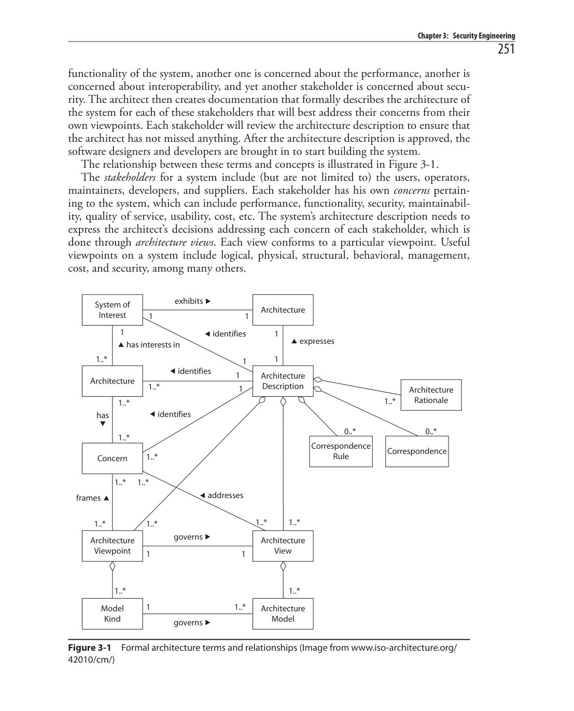
Figure 3-1Formal architecture terms and relationships (Image from www.iso-architecture.org/
The creation and use of system architect processes are evolving, becoming more disciplined and standardized. In the past, system architectures were developed to meet the identified stakeholders’ concerns (functionality, interoperability, performance), but a new concern has come into the limelight—security. So new systems need to meet not just the old concerns, but also the new concerns the stakeholders have. Security goals have to be definedbeforethe architecture of a system is created, and specific security views of the system need to be created to help guide the design and development phases. When we hear about security being “bolted on,” that means security concerns are addressed at the development (programming) phase and not the architecture phase. When we state that security needs to be “baked in,” this means that security has to be integrated at the architecture phase.
While a system architecture addresses many stakeholder concerns, we will focus on the concern of security since information security is the crux of the CISSP exam.
Computer Architecture
Computer architectureencompasses all of the parts of a computer system that are necessary for it to function, including the central processing unit, memory chips, logic circuits, storage devices, input and output devices, security components, buses, and networking interfaces. The interrelationships and internal working of all of these parts can be quite complex, and making them work together in a secure fashion consists of complicated methods and mechanisms. Thank goodness for the smart people who figured this stuff out! Now it is up to us to learn how they did it and why. The more you understand how these different pieces work and process data, the more you will understand how vulnerabilities actually occur and how countermeasures work to impede and hinder vulnerabilities from being introduced, found, and exploited.
This chapter interweaves the hardware and operating system architectures and their components to show you how they work together.
The Central Processing Unit
Thecentral processing unit (CPU)is the brain of a computer. In the most general description possible, it fetches instructions from memory and executes them. Although a CPU is a piece of hardware, it has its own instruction set that is necessary to carry out its tasks. Each CPU type has a specific architecture and set of instructions that it can carry out. The operating system must be designed to work within this CPU architecture. This is why one operating system may work on a Pentium Pro processor but not on an AMD processor. The operating system needs to know how to “speak the language” of the processor, which is the processor’s instruction set.
The chips within the CPU cover only a couple of square inches, but contain millions of transistors. All operations within the CPU are performed by electrical signals at different voltages in different combinations, and each transistor holds this voltage, which represents 0’s and 1’s to the operating system. The CPU contains registers that point to memory locations that contain the next instructions to be executed and that enable the CPU to keep status information of the data that needs to be processed. Aregisteris a temporary storage location. Accessing memory to get information on what instructions and data must be executed is a much slower process than accessing a register, which is a component of the CPU itself. So when the CPU is done with one task, it asks the registers, “Okay, what do I have to do now?” And the registers hold the information that tells the CPU what its next job is. The actual execution of the instructions is done by thearithmetic logic unit (ALU). The ALU performs mathematical functions and logical operations on data. The ALU can be thought of as the brain of the CPU, and the CPU as the brain of the computer. Software holds its instructions and data in memory. When an action needs to take place on the data, the instructions and data memory addresses are passed to the CPU registers, as shown in Figure 3-2. When the control unit indicates that the CPU can process them, the instructions and data memory addresses are passed to the CPU. The CPU sends out requests to fetch these instructions and data from the provided addresses and then actual processing, number crunching, and data manipulation take place. The results are sent back to the requesting process’s memory address.
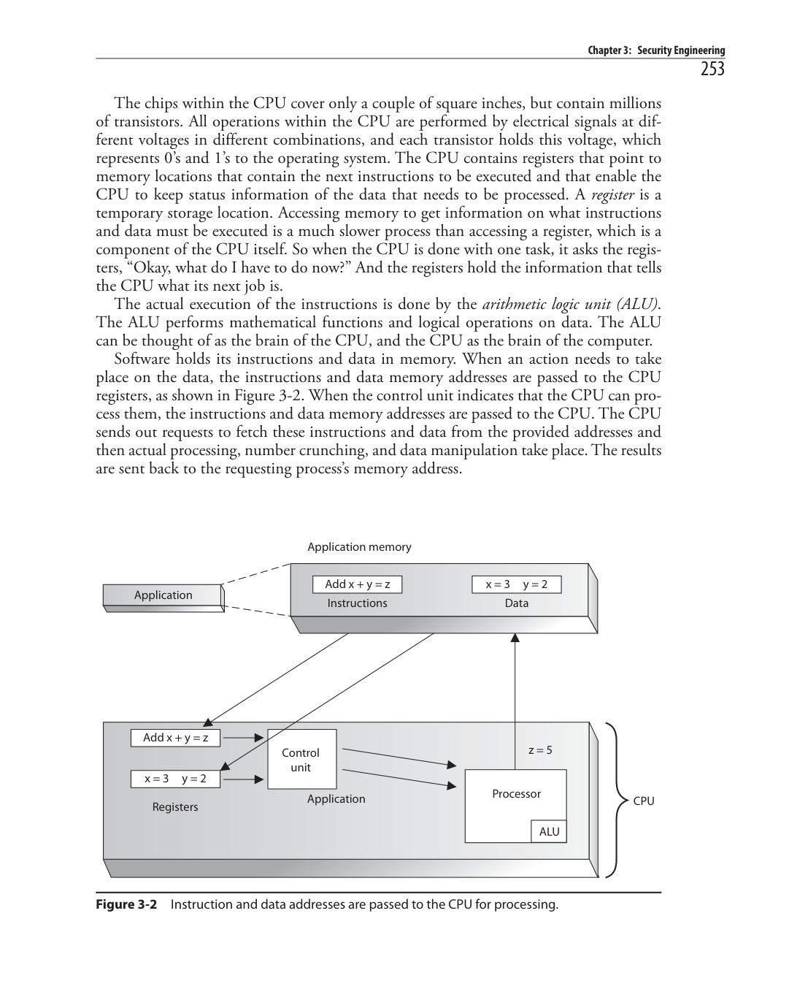
Figure 3-2Instruction and data addresses are passed to the CPU for processing.
An operating system and applications are really just made up of lines and lines of instructions. These instructions contain empty variables, which are populated at run time. The empty variables hold the actual data. There is a difference between instructions and data. The instructions have been written to carry out some type of functionality on the data. For example, let’s say you open a Calculator application. In reality, this program is just lines of instructions that allow you to carry out addition, subtraction, division, and other types of mathematical functions that will be executed on the data you provide. So, you type in 3 + 5. The 3 and the 5 are the data values. Once you click the = button, the Calculator program tells the CPU it needs to take the instructions on how to carry out addition and apply these instructions to the two data values 3 and 5. The ALU carries out this instruction and returns the result of 8 to the requesting program. This is when you see the value 8 in the Calculator’s field. To users, it seems as though the Calculator program is doing all of this on its own, but it is incapable of this. It depends upon the CPU and other components of the system to carry out this type of activity. Thecontrol unitmanages and synchronizes the system while different applications’ code and operating system instructions are being executed. The control unit is the component that fetches the code, interprets the code, and oversees the execution of the different instruction sets. It determines what application instructions get processed and in what priority and time slice. It controls when instructions are executed, and this execution enables applications to process data. The control unit does not actually process the data. It is like the traffic cop telling vehicles when to stop and start again, as illustrated in Figure 3-3. The CPU’s time has to be sliced up into individual units and assigned to processes. It is this time slicing that fools the applications and users into thinking the system is actually carrying out several different functions at one time. While the operating system can carry out several different functions at one time (multitasking), in reality, the CPU is executing the instructions in a serial fashion (one at a time).
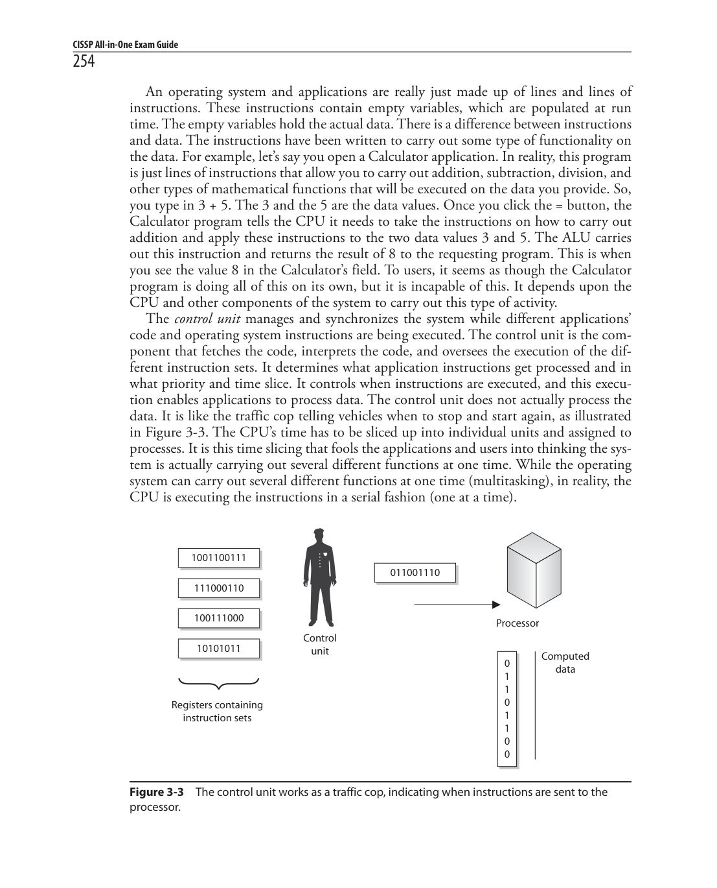
Figure 3-3The control unit works as a traffic cop, indicating when instructions are sent to the
A CPU has several different types of registers, containing information about the instruction set and data that must be executed.General registersare used to hold variables and temporary results as the ALU works through its execution steps. The general registers are like the ALU’s scratch pad, which it uses while working.Special registers(dedicated registers) hold information such as the program counter, stack pointer, and program status word (PSW). Theprogram counterregister contains the memory address of the next instruction to be fetched. After that instruction is executed, the program counter is updated with the memory address of the next instruction set to be processed. It is similar to a boss-and-secretary relationship. The secretary keeps the boss on schedule and points her to the necessary tasks she must carry out. This allows the boss to just concentrate on carrying out the tasks instead of having to worry about the “busy work” being done in the background. Theprogram status word (PSW)holds different condition bits. One of the bits indicates whether the CPU should be working inuser mode(also calledproblem state) orprivileged mode(also calledkernelorsupervisor mode). An important theme of this chapter is to teach you how operating systems protect themselves. They need to protect themselves from applications, software utilities, and user activities if they are going to provide a stable and safe environment. One of these protection mechanisms is implemented through the use of these different execution modes. When an application needs the CPU to carry out its instructions, the CPU works in user mode. This mode has a lower privilege level, and many of the CPU’s instructions and functions are not available to the requesting application. The reason for the extra caution is that the developers of the operating system and CPU do not know who developed the application or how it is going to react, so the CPU works in a lower privilege mode when executing these types of instructions. By analogy, if you are expecting visitors who are bringing their two-year-old boy, you move all of the breakables that someone under three feet tall can reach. No one is ever sure what a two-year-old toddler is going to do, but it usually has to do with breaking something. An operating system and CPU are not sure what applications are going to attempt, which is why this code is executed in a lower privilege and critical resources are out of reach of the application’s code. If the PSW has a bit value that indicates the instructions to be executed should be carried out in privileged mode, this means a trusted process (an operating system process) made the request and can have access to the functionality that is not available in user mode. An example would be if the operating system needed to communicate with a peripheral device. This is a privileged activity that applications cannot carry out. When these types of instructions are passed to the CPU, the PSW is basically telling the CPU, “The process that made this request is an all-right guy. We can trust him. Go ahead and carry out this task for him.” Memory addresses of the instructions and data to be processed are held in registers until needed by the CPU. The CPU is connected to anaddress bus, which is a hardwired connection to the RAM chips in the system and the individual input/output (I/O) devices. Memory is cut up into sections that have individual addresses associated with them. I/O devices (optical discs, USB devices, printers, and so on) are also allocated specific unique addresses. If the CPU needs to access some data, either from memory or from an I/O device, it sends afetch requeston the address bus. The fetch request contains
the address of where the needed data is located. The circuitry associated with the memory or I/O device recognizes the address the CPU sent down the address bus and instructs the memory or device to read the requested data and put it on thedata bus. So the address bus is used by the CPU to indicate the location of the instructions to be processed, and the memory or I/O device responds by sending the data that resides at that memory location through the data bus. As an analogy, if Sally calls you on the telephone and tells you the book she needs you to mail to her, this would be like a CPU sending a fetch request down the address bus. You locate the book Sally requested and send it to her in the mail, which would be similar to how an I/O device finds the requested data and puts it on the data bus for the CPU to receive. This process is illustrated in Figure 3-4. Once the CPU is done with its computation, it needs to return the results to the requesting program’s memory. So, the CPU sends the requesting program’s address down the address bus and sends the new results down the data bus with the commandwrite. This new data is then written to the requesting program’s memory space. Following our earlier example, once the CPU adds 3 and 5 and sends the new resulting data to the Calculator program, you see the result as 8.
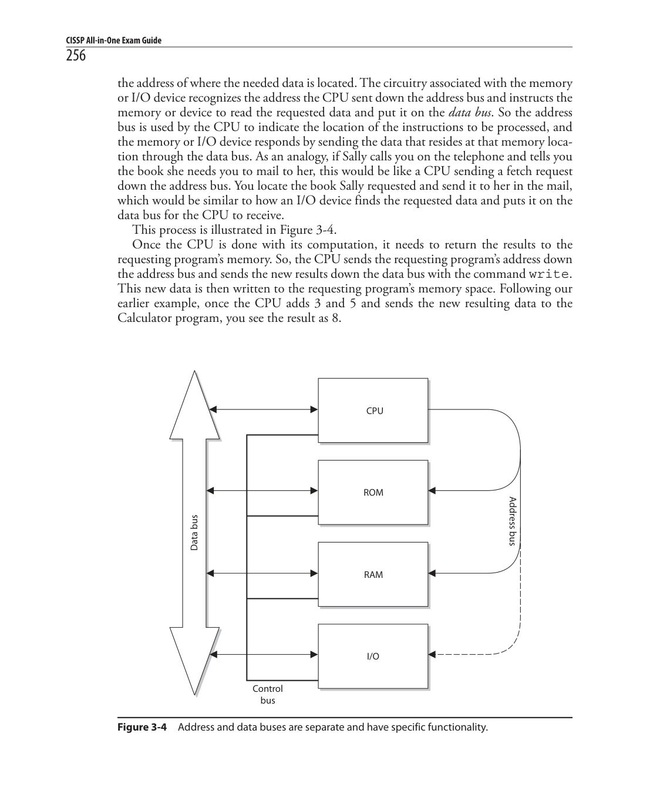
Figure 3-4Address and data buses are separate and have specific functionality.
The address and data buses can be 8, 16, 32, or 64 bits wide. Most systems today use a 64-bit address bus, which means the system can have a large address space (2). Systems can also have a 64-bit data bus, which means the system can move data in parallel back and forth between memory, I/O devices, and the CPU of this size. (A 64-bit data bus means the size of the chunks of data a CPU can request at a time is 64 bits.) But what does this really mean and why does it matter? A two-lane highway can be a bottleneck if a lot of vehicles need to travel over it. This is why highways are increased to four, six, and eight lanes. As computers and software get more complex and performance demands increase, we need to get more instructions and data to the CPU faster so it can do its work on these items and get them back to the requesting program as fast as possible. So we need fatter pipes (buses) to move more stuff from one place to another place.
Multiprocessing
Many modern computers have more than one CPU for increased performance. An operating system must be developed specifically to be able to understand and work with more than one processor. If the computer system is configured to work insymmetric mode, this means the processors are handed work as needed, as shown with CPU 1 and CPU 2 in Figure 3-5. It is like a load-balancing environment. When a process needs instructions to be executed, a scheduler determines which processor is ready for more work and sends it on. If a processor is going to be dedicated to a specific task or application, all other
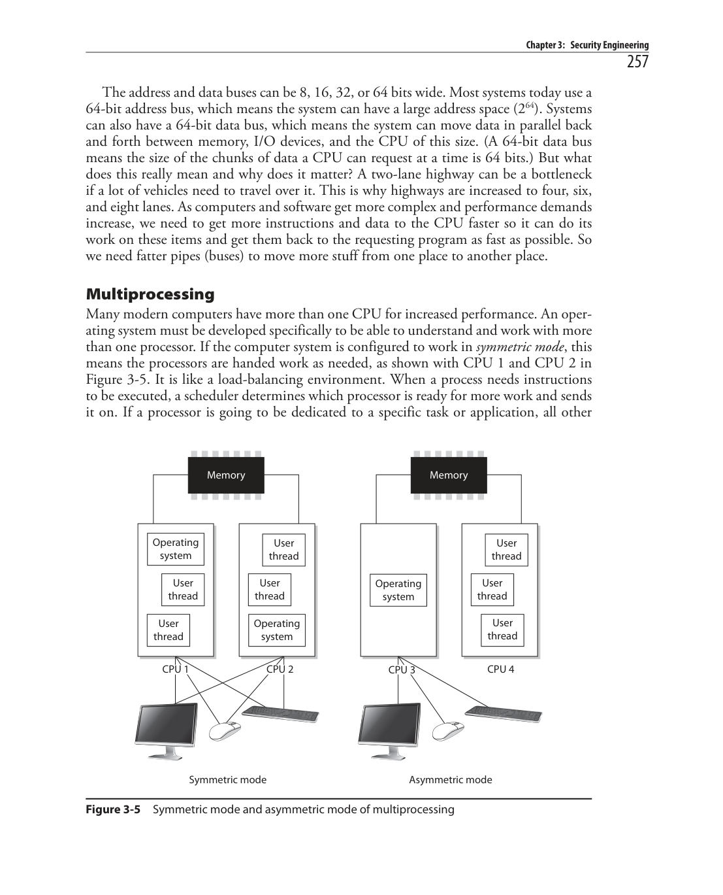
Figure 3-5Symmetric mode and asymmetric mode of multiprocessing
software would run on a different processor. In Figure 3-5, CPU 4 is dedicated to one application and its threads, while CPU 3 is used by the operating system. When a processor is dedicated, as in this example, the system is working inasymmetric mode. This usually means the computer has some type of time-sensitive application that needs its own personal processor. So, the system scheduler will send instructions from the timesensitive application to CPU 4 and send all the other instructions (from the operating system and other applications) to CPU 3.
Memory Types
Memory management is critical, but what types of memory actually have to be managed? As stated previously, the operating system instructions, applications, and data are held in memory, but so are the basic input/output system (BIOS), device controller instructions, and firmware. They do not all reside in the same memory location or even the same type of memory. The different types of memory, what they are used for, and how each is accessed can get a bit confusing because the CPU deals with several different types for different reasons. The following sections outline the different types of memory that can be used within computer systems.
Random Access Memory
Random access memory (RAM)is a type of temporary storage facility where data and program instructions can temporarily be held and altered. It is used for read/write activities by the operating system and applications. It is described as volatile because if the computer’s power supply is terminated, then all information within this type of memory is lost. RAM is an integrated circuit made up of millions of transistors and capacitors. The capacitor is where the actual charge is stored, which represents a 1 or 0 to the system. The transistor acts like a gate or a switch. A capacitor that is storing a binary value of 1 has several electrons stored in it, which have a negative charge, whereas a capacitor that is storing a 0 value is empty. When the operating system writes over a 1 bit with a 0 bit, in reality, it is just emptying out the electrons from that specific capacitor. One problem is that these capacitors cannot keep their charge for long. Therefore, a memory controller has to “recharge” the values in the capacitors, which just means it continually reads and writes the same values to the capacitors. If the memory controller does not “refresh” the value of 1, the capacitor will start losing its electrons and become a 0 or a corrupted value. This explains howdynamic RAM (DRAM)works. The data being held in the RAM memory cells must be continually and dynamically refreshed so your bits do not magically disappear. This activity of constantly refreshing takes time, which is why DRAM is slower than static RAM.
When we are dealing with memory activities, we use a time metric of nanoseconds (ns), which is a billionth of a second. So if you look at your RAM chip and it states 70 ns, this means it takes 70 nanoseconds to read and refresh each memory cell.
Static RAM (SRAM)does not require this continuous-refreshing nonsense; it uses a different technology, by holding bits in its memory cells without the use of capacitors, but itdoesrequire more transistors than DRAM. Since SRAM does not need to be refreshed, it is faster than DRAM, but because SRAM requires more transistors, it takes up more space on the RAM chip. Manufacturers cannot fit as many SRAM memory cells on a memory chip as they can DRAM memory cells, which is why SRAM is more expensive. So, DRAM is cheaper and slower, and SRAM is more expensive and faster. It always seems to go that way. SRAM has been used in cache, and DRAM is commonly used in RAM chips. Because life is not confusing enough, we have many other types of RAM. The main reason for the continual evolution of RAM types is that it directly affects the speed of the computer itself. Many people mistakenly think that just because you have a fast processor, your computer will be fast. However, memory type and size and bus sizes are also critical components. Think of memory as pieces of paper used by the system to hold instructions. If the system had small pieces of papers (small amount of memory) to read and write from, it would spend most of its time looking for these pieces and lining them up properly. When a computer spends more time moving data from one small portion of memory to another than actually processing the data, it is referred to asthrashing. This causes the system to crawl in speed and your frustration level to increase. The size of the data bus also makes a difference in system speed. You can think of a data bus as a highway that connects different portions of the computer. If a ton of data must go from memory to the CPU and can only travel over a 4-lane highway, compared to a 64-lane highway, there will be delays in processing. Increased addressing space also increases system performance. A system that uses a 64-bit addressing scheme can put more instructions and data on a data bus at one time compared to a system that uses a 32-bit addressing scheme. So a larger addressing scheme allows more stuff to be moved around and processed, and a larger bus size provides the highway to move this stuff around quickly and efficiently. So the processor, memory type and amount, memory addressing, and bus speeds are critical components to system performance. The following are additional types of RAM you should be familiar with:
Synchronous DRAM (SDRAM)Synchronizes itself with the system’s CPU
- and synchronizes signal input and output on the RAM chip. It coordinates its activities with the CPU clock so the timing of the CPU and the timing of the memory activities are synchronized. This increases the speed of transmitting and executing data.
Extended data out DRAM (EDO DRAM)This is faster than DRAM because
- DRAM can access only one block of data at a time, whereas EDO DRAM can capture the next block of data while the first block is being sent to the CPU for processing. It has a type of “look ahead” feature that speeds up memory access.
Burst EDO DRAM (BEDO DRAM)Works like (and builds upon) EDO
- DRAM in that it can transmit data to the CPU as it carries out a read option, but it can send more data at once (burst). It reads and sends up to four memory addresses in a small number of clock cycles.
Double data rate SDRAM (DDR SDRAM)Carries out read operations on the
- rising and falling cycles of a clock pulse. So instead of carrying out one operation per clock cycle, it carries out two and thus can deliver twice the throughput of SDRAM. Basically, it doubles the speed of memory activities, when compared to SDRAM, with a smaller number of clock cycles. Pretty groovy.
These different RAM types require different controller chips to interface with them; therefore, the motherboards that these memory types are used on often are very specific in nature. Well, that’s enough about RAM for now. Let’s look at other types of memory that are used in basically every computer in the world.
Hardware Segmentation
Systems of a higher trust level may need to implementhardware segmentationof the memory used by different processes. This means memory is separated physically instead of just logically. This adds another layer of protection to ensure that a lowerprivileged process does not access and modify a higher-level process’s memory space.
Read-Only Memory
Read-only memory (ROM)is a nonvolatile memory type, meaning that when a computer’s power is turned off, the data is still held within the memory chips. When data is written into ROM memory chips, the data cannot be altered. Individual ROM chips are manufactured with the stored program or routines designed into it. The software that is stored within ROM is calledfirmware. Programmable read-only memory (PROM)is a form of ROM that can be modified after it has been manufactured. PROM can be programmed only one time because the voltage that is used to write bits into the memory cells actually burns out the fuses that connect the individual memory cells. The instructions are “burned into” PROM using a specialized PROM programmer device. Erasable programmable read-only memory (EPROM)can be erased, modified, and upgraded. EPROM holds data that can be electrically erased or written to. To erase the data on the memory chip, you need your handy-dandy ultraviolet (UV) light device that provides just the right level of energy. The EPROM chip has a quartz window, which is where you point the UV light. Although playing with UV light devices can be fun for the whole family, we have moved on to another type of ROM technology that does not require this type of activity. To erase an EPROM chip, you must remove the chip from the computer and wave your magic UV wand, which erasesallof the data on the chip—not just portions of it. So someone inventedelectrically erasable programmable read-only memory (EEPROM), and we all put our UV light wands away for good.
EEPROM is similar to EPROM, but its data storage can be erased and modified electrically by onboard programming circuitry and signals. This activity erases only 1 byte at a time, which is slow. And because we are an impatient society, yet another technology was developed that is very similar, but works more quickly. Flash memoryis a special type of memory that is used in digital cameras, BIOS chips, memory cards, and video game consoles. It is a solid-state technology, meaning it does not have moving parts and is used more as a type of hard drive than memory. Flash memory basically moves around different levels of voltages to indicate that a 1 or 0 must be held in a specific address. It acts as a ROM technology rather than a RAM technology. (For example, you do not lose pictures stored on your memory stick in your digital camera just because your camera loses power. RAM is volatile, and ROM is nonvolatile.) When Flash memory needs to be erased and turned back to its original state, a program initiates the internal circuits to apply an electric field. The erasing function takes place in blocks or on the entire chip instead of erasing 1 byte at a time. Flash memory is used as a small disk drive in most implementations. Its benefits over a regular hard drive are that it is smaller, faster, and lighter. So let’s deploy Flash memory everywhere and replace our hard drives! Maybe one day. Today it is relatively expensive compared to regular hard drives.
Cache Memory
Cache memoryis a type of memory used for high-speed writing and reading activities. When the system assumes (through its programmatic logic) that it will need to access specific information many times throughout its processing activities, it will store the information in cache memory so it is easily and quickly accessible. Data in cache can be accessed much more quickly than data stored in other memory types. Therefore, any information needed by the CPU very quickly and very often is usually stored in cache memory, thereby improving the overall speed of the computer system. An analogy is how the brain stores information it uses often. If one of Marge’s primary functions at her job is to order parts, which requires telling vendors the company’s address, Marge stores this address information in a portion of her brain from which she can easily and quickly access it. This information is held in a type of cache. If Marge was asked to recall her third-grade teacher’s name, this information would not necessarily be held in cache memory, but in a more long-term storage facility within her noggin. The long-term storage within her brain is comparable to a system’s hard drive. It takes more time to track down and return information from a hard drive than from specialized cache memory.
Different motherboards have different types of cache. Level 1 (L1) is faster than Level 2 (L2), and L2 is faster than L3. Some processors and device controllers have cache memory built into them. L1 and L2 are usually built into the processors and the controllers themselves.
Memory Mapping
Because there are different types of memory holding different types of data, a computer system does not want to let every user, process, and application access all types of
memory anytime they want to. Access to memory needs to be controlled to ensure data does not get corrupted and that sensitive information is not available to unauthorized processes. This type of control takes place through memory mapping and addressing. The CPU is one of the most trusted components within a system, and can access memory directly. It uses physical addresses instead of pointers (logical addresses) to memory segments. The CPU has physical wires connecting it to the memory chips within the computer. Because physical wires connect the two types of components, physical addresses are used to represent the intersection between the wires and the transistors on a memory chip. Software does not use physical addresses; instead, it employs logical memory addresses. Accessing memory indirectly provides an access control layer between the software and the memory, which is done for protection and efficiency. Figure 3-6 illustrates how the CPU can access memory directly using physical addresses and how software must use memory indirectly through a memory mapper. Let’s look at an analogy. You would like to talk to Mr. Marshall about possibly buying some acreage in Iowa that he has listed for sale on Craigslist. You don’t know Mr.Marshall personally, and you do not want to give out your physical address and have him show up at your doorstep. Instead, you would like to use a more abstract and controlled way of communicating, so you give Mr. Marshall your phone number so you can talk to him about the land and determine whether you want to meet him in person. The same type of thing happens in computers. When a computer runs software, it does not want to expose
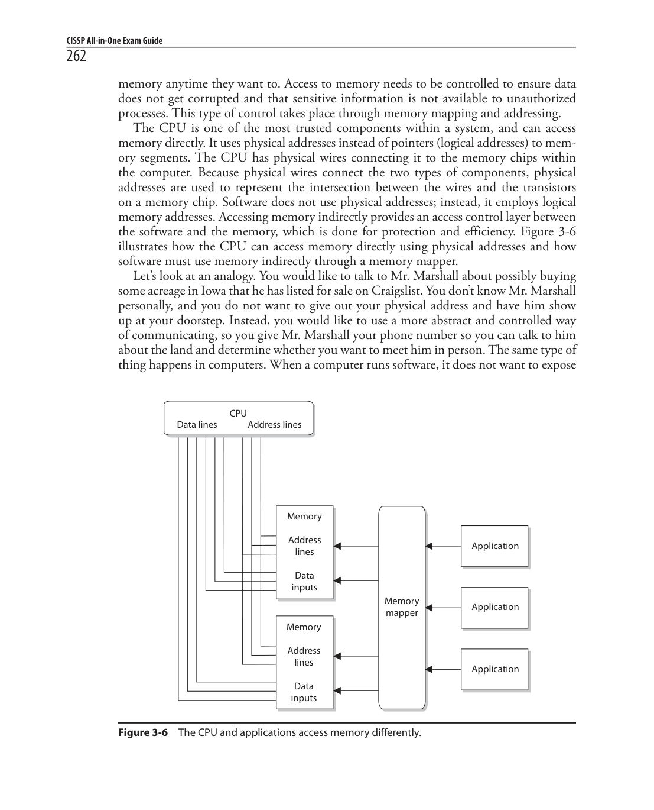
Figure 3-6The CPU and applications access memory differently.
itself unnecessarily to software written by good and bad programmers alike. Operating systems enable software to access memory indirectly by using index tables and pointers, instead of giving them the right to access the memory directly. This is one way the computer system protects itself. If an operating system has a programming flaw that allows an attacker to directly access memory through physical addresses, there is no memory manager involved to control how memory is being used. When a program attempts to access memory, its access rights are verified and then instructions and commands are carried out in a way to ensure that badly written code does not affect other programs or the system itself. Applications, and their processes, can only access the memory allocated to them, as shown in Figure 3-7. This type of memory architecture provides protection and efficiency. The physical memory addresses that the CPU uses are calledabsolute addresses. The indexed memory addresses that software uses are referred to aslogical addresses. Andrelative addressesare based on a known address with an offset value applied. As explained previously, an application does not “know” it is sharing memory with other applications. When the program needs a memory segment to work with, it tells the memory manager how much memory it needs. The memory manager allocates this much physical memory, which could have the physical addressing of 34000 to 39000, for example. But the application is not written to call upon addresses in this numbering scheme. It is most likely developed to call upon addresses starting with 0 and extending to, let’s say, 5000.
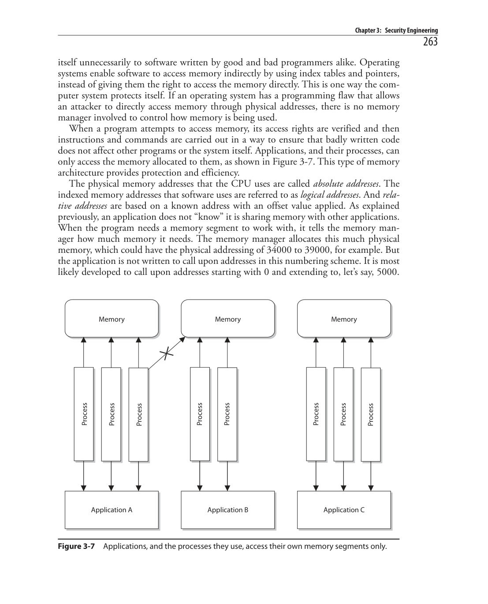
Figure 3-7Applications, and the processes they use, access their own memory segments only.
So the memory manager allows the application to use its own addressing scheme—the logical addresses. When the application makes a call to one of these “phantom” logical addresses, the memory manager must map this address to the actual physical address. (It’s like two people using their own naming scheme. When Bob asks Diane for a ball, Diane knows he really means a stapler. Don’t judge Bob and Diane; it works for them.) The mapping process is illustrated in Figure 3-8. When a thread indicates the instruction needs to be processed, it provides a logical address. The memory manager maps the logical address to the physical address, so the CPU knows where the instruction is located. The thread will actually be using a relative address because the application uses the address space of 0 to 5000. When the thread indicates it needs the instruction at the memory address 3400 to be executed, the memory manager has to work from its mapping of logical address 0 to the actual physical address and then figure out the physical address for the logical address 3400. So the logical address 3400 is relative to the starting address 0.
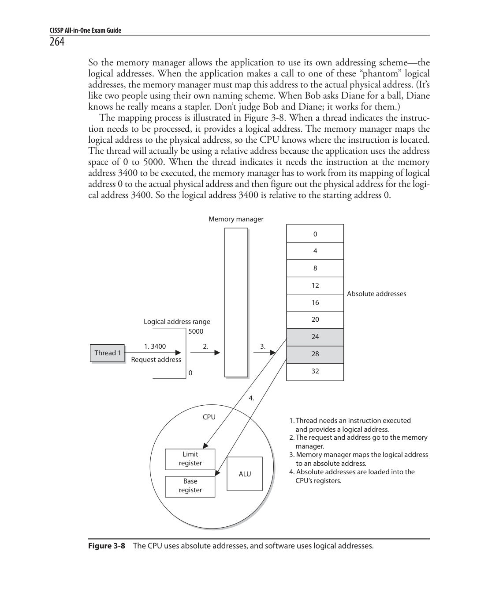
Figure 3-8The CPU uses absolute addresses, and software uses logical addresses.
As an analogy, if Jane knows you use a different number system than everyone else in the world, and you tell her that you need 14 cookies, she would need to know where to start inyournumber scheme to figure out how many cookies to really give you. So, if you inform Jane that in “your world” your numbering scheme starts at 5, she would map 5 to 0 and know that the offset is a value of 5. So when you tell her you want 14 cookies (the relative number), she takes the offset value into consideration. She knows that you start at the value 5, so she maps your logical address of 14 to the physical number of 9. So the application is working in its “own world” using its “own addresses,” and the memory manager has to map these values to reality, which means the absolute address values. Memory management is complex, and whenever there is complexity, there are most likely vulnerabilities that can be exploited by attackers. It is very easy for people to complain about software vendors and how they do not produce software that provides the necessary level of security, but hopefully you are gaining more insight into the actual complexity that is involved with these tasks.
Buffer Overflows
Today, many people know the term “buffer overflow” and the basic definition, but it is important for security professionals to understand what is going on beneath the covers. Abuffer overflowtakes place when too much data is accepted as input to a specific process. Abufferis an allocated segment of memory. A buffer can be overflowed arbitrarily with too much data, but for it to be of any use to an attacker, the code inserted into the buffer must be of a specific length, followed up by commands the attacker wants executed. So, the purpose of a buffer overflow may be either to make a mess, by shoving arbitrary data into various memory segments, or to accomplish a specific task, by pushing into the memory segment a carefully crafted set of data that will accomplish a specific task. This task could be to open a command shell with administrative privilege or execute malicious code. Let’s take a deeper look at how this is accomplished. Software may be written to accept data from a user, website, database, or another application. The accepted data needs something to happen to it because it has been inserted for some type of manipulation or calculation, or to be used as a parameter to be passed to a procedure. A procedure is code that can carry out a specific type of function on the data and return the result to the requesting software, as shown in Figure 3-9. When a programmer writes a piece of software that will accept data, this data and its associated instructions will be stored in the buffers that make up a stack. The buffers need to be the right size to accept the inputted data. So if the input is supposed to be one character, the buffer should be 1 byte in size. If a programmer does not ensure that only 1byte of data is being inserted into the software, then someone can input several characters at once and thus overflow that specific buffer.
You can think of a buffer as a small bucket to hold water (data). We have several of these small buckets stacked on top of one another (memory stack), and if too much water is poured into the top bucket, it spills over into the buckets below it (buffer overflow) and overwrites the instructions and data on the memory stack.
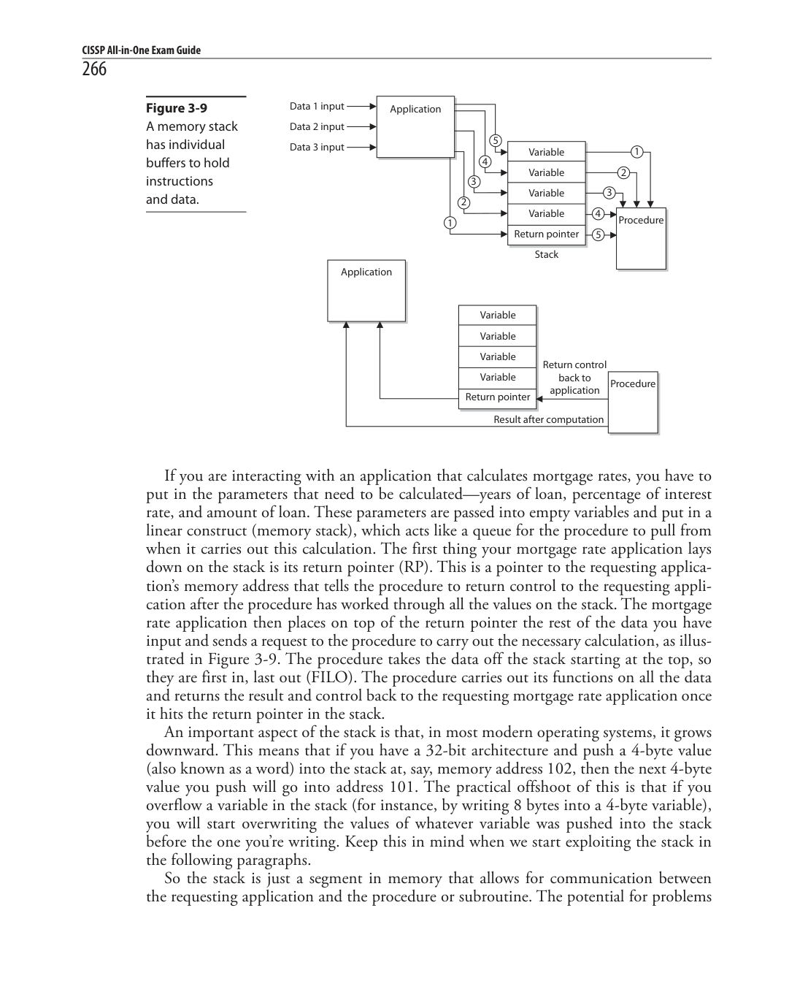
Figure 3-9
If you are interacting with an application that calculates mortgage rates, you have to put in the parameters that need to be calculated—years of loan, percentage of interest rate, and amount of loan. These parameters are passed into empty variables and put in a linear construct (memory stack), which acts like a queue for the procedure to pull from when it carries out this calculation. The first thing your mortgage rate application lays down on the stack is its return pointer (RP). This is a pointer to the requesting application’s memory address that tells the procedure to return control to the requesting application after the procedure has worked through all the values on the stack. The mortgage rate application then places on top of the return pointer the rest of the data you have input and sends a request to the procedure to carry out the necessary calculation, as illustrated in Figure 3-9. The procedure takes the data off the stack starting at the top, so they are first in, last out (FILO). The procedure carries out its functions on all the data and returns the result and control back to the requesting mortgage rate application once it hits the return pointer in the stack. An important aspect of the stack is that, in most modern operating systems, it grows downward. This means that if you have a 32-bit architecture and push a 4-byte value (also known as a word) into the stack at, say, memory address 102, then the next 4-byte value you push will go into address 101. The practical offshoot of this is that if you overflow a variable in the stack (for instance, by writing 8 bytes into a 4-byte variable), you will start overwriting the values of whatever variable was pushed into the stack before the one you’re writing. Keep this in mind when we start exploiting the stack in the following paragraphs. So the stack is just a segment in memory that allows for communication between the requesting application and the procedure or subroutine. The potential for problems
comes into play when the requesting application does not carry out properbounds checkingto ensure the inputted data is of an acceptable length. Look at the following C code to see how this could happen:
You do not need to know C programming for the CISSP exam. We are digging deep into this topic because buffer overflows are so common and have caused grave security breaches over the years. For the CISSP exam, you just need to understand the overall concept of a buffer overflow. Let’s focus on the part of this sample vulnerable program that receives as input a user’s favorite color (pink or blue) and stores it in an array of characters calledcolor. Since the only choice the user should enter is pink or blue, the programmer naively assumed hewould only need a five-character array (four for the letters of each word and one for the null character that denotes the end of the string). When the program runs, it eventually calls a function calledgetColorthat displays a prompt to the user, receives the user’s input in a temporary variable calleduserInput, and copies the user’s input from the temporary variable to thecolorarray. Execution then returns to themainfunction, and the program does other things and eventually terminates normally. There are three key elements that make this program vulnerable to a buffer overflow: We are not validating the user’s input, which violates one of the golden rules
- of secure programming: never trust any inputs! If the user inadvertently or maliciously chooses a color or string longer than four characters, we will have a crashed program.
We make a function call, which pushes the return pointer (as well as the address
- of theuserInputtemporary variable) into the stack. There is nothing wrong with calling functions (in fact, it is almost always necessary), but it is the function call mechanism that makes a stack overflow possible.
We use an insecure function (strcpy) that copies values without ensuring they
- do not exceed the size of the destination. In fact, this last issue is so critical that the compiler will give you a warning if you try to compile this program.
The first and third elements should be pretty self-evident. But why is the function call a key element to a buffer overflow vulnerability? To understand why this is so, recall that we mentioned that whenever a function is called, we push the return pointer (RP)—the address of the next instruction to be executed when the function returns—into the stack. In other words, we are leaving a value that is critical to the correct behavior of the process in an unprotected place (the stack), wherein user error or malice can compromise it. So how would this be exploited? In our simple code example, there are probably only two values that get pushed onto the stack when the function is called:userInputand the RP. Since the stack grows downward in most operating systems, putting too many characters into the stack will eventually lead to overwriting the RP. Why? Because the RP is written to the stack first whenever a function is called. Depending on how much memory you have between the vulnerable variable and the RP, you could insert malicious code all the way up to the RP and then overwrite the RP to point to the start of the malicious code you just inserted. This allows the malicious instructions to be executed in the security context of the requesting application. If this application is running in a privileged mode, the attacker has more permissions and rights to carry out more damage. This is shown in Figure 3-10.
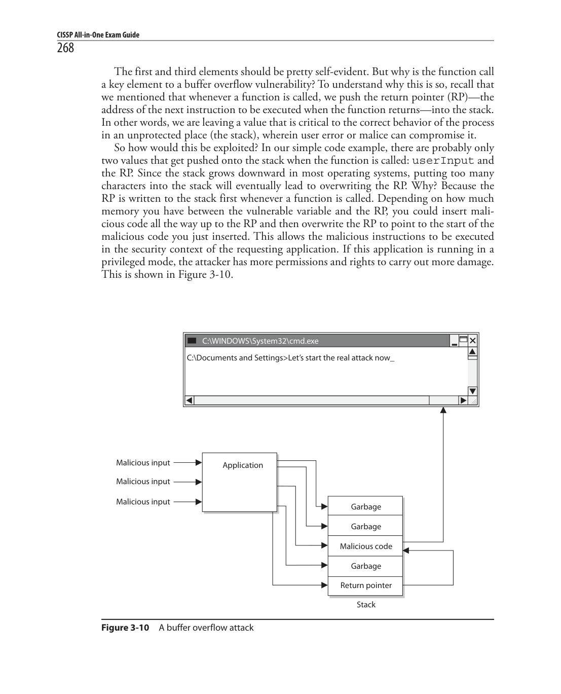
Figure 3-10A buffer overflow attack
The attacker must know the size of the buffer to overwrite and must know the addresses that have been assigned to the stack. Without knowing these addresses, she could not lay down a new return pointer to her malicious code. The attacker must also write this dangerous payload to be small enough so it can be passed as input from one procedure to the next. Windows’ core is written in the C programming language and has layers and layers of object-oriented code on top of it. When a procedure needs to call upon the operating system to carry out some type of task, it calls upon a system service via an API call. The API works like a doorway to the operating system’s functionality. The C programming language is susceptible to buffer overflow attacks because it allows for direct pointer manipulations to take place. Specific commands can provide access to low-level memory addresses without carrying out bounds checking. The C functions that do perform the necessary boundary checking includestrncpy(),strncat(), snprintf(), andvsnprintf().
An operating system must be written to work with specific CPU architectures. These architectures dictate system memory addressing, protection mechanisms, and modes of execution and work with specific instruction sets. This means a buffer overflow attack that works on an Intel chip will not necessarily work on an AMD or a SPARC processor. These different processors set up the memory address of the stacks differently, sothe attacker may have to craft a different buffer overflow code for different platforms. Buffer overflows are in the source code of various applications and operating systems. They have been around since programmers started developing software. This means it is very difficult for a user to identify and fix them. When a buffer overflow is identified, the vendor usually sends out a patch, so keeping systems current on updates, hotfixes, and patches is usually the best countermeasure. Some products installed on systems can also watch for input values that might result in buffer overflows, but the best countermeasure is proper programming. This means use bounds checking. If an input value is only supposed to be nine characters, then the application should only accept nine characters and no more. Some languages are more susceptible to buffer overflows than others, so programmers should understand these issues, use the right languages for the right purposes, and carry out code review to identify buffer overflow vulnerabilities.
Memory Protection Techniques
Since your whole operating system and all your applications are loaded and run in memory, this is where the attackers can really do their damage. Vendors of different operating systems (Windows, Unix, Linux, OS X, etc.) have implemented various types of protection methods integrated into their memory manager processes. For example, Windows Vista was the first version of Windows to implementaddress space layout randomization (ASLR), which was first implemented in OpenBSD.
(Continued)
If an attacker wants to maliciously interact with a process, he needs to know what memory address to send his attack inputs to. If the operating system changes these addresses continuously, which is what ASLR accomplishes, the potential success of his attack is greatly reduced. You can’t mess with something if you don’t know where it is. Many of the main operating systems use some form ofdata execution prevention (DEP), which can be implemented via hardware (CPU) or software (operating system). The actual implementations of DEP vary, but the main goal is to help ensure that executable code does not function within memory segments that could be dangerous. It is similar to not allowing someone suspicious in your house. You don’t know whether this person is really going to try to do something malicious, but just to make sure he can’t, you do not unlock the door for him to enter and be in a position where he could bring harm to you or your household. DEP can mark certain memory locations as “off limits” with the goal of reducing the “playing field” for hackers and malware.
Memory Leaks
As stated earlier, when an application makes a request for a memory segment to work within, it is allocated a specific memory amount by the operating system. When the application is done with the memory, it is supposed to tell the operating system to release the memory so it is available to other applications. This is only fair. But some applications are written poorly and do not indicate to the system that this memory is no longer in use. If this happens enough times, the operating system could become “starved” for memory, which would drastically affect the system’s performance. When a memory leak is identified in the hacker world, this opens the door to new DoS attacks. For example, when it was uncovered that a Unix application and a specific version of a Telnet protocol contained memory leaks, hackers amplified the problem. They continuously sent Telnet requests to systems with these vulnerabilities. The systems would allocate resources for these network requests, which in turn would cause more and more memory to be allocated and not returned. Eventually the systems would run out of memory and freeze.
Memory leaks can take place in operating systems, applications, and software drivers.
Two main countermeasures can protect against memory leaks: developing better code that releases memory properly, and using agarbage collector, software that runs an algorithm to identify unused committed memory and then tells the operating system to mark that memory as “available.” Different types of garbage collectors work with different operating systems and programming languages.
Operating Systems
An operating system provides an environment for applications and users to work within. Every operating system is a complex beast, made up of various layers and modules of functionality. Its responsibilities include managing processes, memory, input/output (I/O), and the CPU. We next look at each of these responsibilities that every operating system type carries out. However, you must realize that whole books are written on just these individual topics, so the discussion here will only scratch the surface.
Process Management
Operating systems, software utilities, and applications, in reality, are just lines and lines of instructions. They are static lines of code that are brought to life when they are initialized and put into memory. Applications work as individual units, calledprocesses, and the operating system also has several different processes carrying out various types of functionality. A process is the set of instructions that is actually running. A program is not considered a process until it is loaded into memory and activated by the operating system. When a process is created, the operating system assigns resources to it, such as a memory segment, CPU time slot (interrupt), access to system application programming interfaces (APIs), and files to interact with. Thecollectionof the instructions and the assigned resources is referred to as aprocess. So the operating system gives a process all the tools it needs and then loads the process into memory, at which point it is off and running. The operating system has many of its own processes, which are used to provide and maintain the environment for applications and users to work within. Some examples of the functionality that individual processes provide include displaying data onscreen, spooling print jobs, and saving data to temporary files. Operating systems providemultiprogramming, which means that more than one program (or process) can be loaded into memory at the same time. This is what allows you to run your antivirus software, word processor, personal firewall, and e-mail client all at the same time. Each of these applications runs as individual processes.
Many resources state that today’s operating systems provide multiprogramming and multitasking. This is true, in that multiprogramming just means more than one application can be loaded into memory at the same time. But in reality, multiprogramming was replaced by multitasking, which means more than one application can be in memory at the same timeandthe operating system can deal with requests from these different applicationssimultaneously. Multiprogramming is a legacy term. Earlier operating systems wasted their most precious resource—CPU time. For example, when a word processor would request to open a file on a floppy drive, the CPU would send the request to the floppy drive and then wait for the floppy drive to initialize, for the head to find the right track and sector, and finally for the floppy drive to send the data via the data bus to the CPU for processing. To avoid this waste of CPU time, multitasking was developed, which enabled the operating system to maintain different
processes in their various execution states. Instead of sitting idle waiting for activity from one process, the CPU could execute instructions for other processes, thereby speeding up the system as a whole.
If you are not old enough to remember floppy drives, they were like our USB thumb drives we use today. They were just flatter and slower and could not hold as much data. As an analogy, if you (CPU) put bread in a toaster (process) and just stand there waiting for the toaster to finish its job, you are wasting time. On the other hand, if you put bread in the toaster and then, while it’s toasting, feed the dog, make coffee, and come up with a solution for world peace, you are being more productive and not wasting time. You are multitasking. Operating systems started out as cooperative and then evolved into preemptive multitasking.Cooperative multitasking, used in Windows 3.xand early Macintosh systems, required the processes to voluntarily release resources they were using. This was not necessarily a stable environment because if a programmer did not write his code properly to release a resource when his application was done using it, the resource would be committed indefinitely to his application and thus be unavailable to other processes. With preemptive multitasking, used in Windows 9xand later versions and in Unix systems, the operating system controls how long a process can use a resource. The system can suspend a process that is using the CPU and allow another process access to it through the use of time sharing. So in operating systems that used cooperative multitasking, the processes had too much control over resource release, and when an application hung, it usually affected all the other applications and sometimes the operating system itself. Operating systems that use preemptive multitasking run the show, and one application does not negatively affect another application as easily. Different operating system types work within different process models. For example, Unix and Linux systems allow their processes to create new children processes, which is referred to asspawning. Let’s say you are working within a shell of a Linux system. That shell is the command interpreter and an interface that enables the user to interact with the operating system. The shell runs as a process. When you type in a shell the commandcatfile1file2|grepstuff, you are telling the operating system to concatenate (cat) the two files and then search (grep) for the lines that have the value of “stuff ” in them. When you press theenterkey, the shell spawns two children processes—one for thecatcommand and one for thegrepcommand. Each of these children processes takes on the characteristics of the parent process, but has its own memory space, stack, and program counter values. A process can be in arunning state(CPU is executing its instructions and data),ready state(waiting to send instructions to the CPU), orblocked state(waiting for input data, such as keystrokes, from a user). These different states are illustrated in Figure 3-11. When a process is blocked, it is waiting for some type of data to be sent to it. In the preceding example of typing the commandcatfile1file2|grepstuff, the
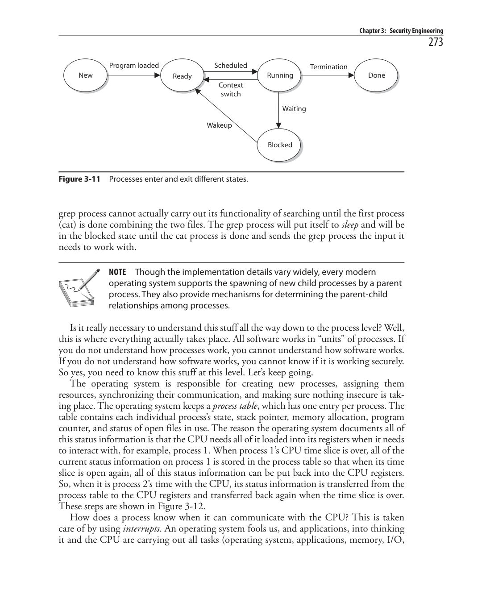
Figure 3-11Processes enter and exit different states.
grep process cannot actually carry out its functionality of searching until the first process (cat) is done combining the two files. The grep process will put itself tosleepand will be in the blocked state until the cat process is done and sends the grep process the input it needs to work with.
Though the implementation details vary widely, every modern operating system supports the spawning of new child processes by a parent process. They also provide mechanisms for determining the parent-child relationships among processes. Is it really necessary to understand this stuff all the way down to the process level? Well, this is where everything actually takes place. All software works in “units” of processes. If you do not understand how processes work, you cannot understand how software works. If you do not understand how software works, you cannot know if it is working securely. So yes, you need to know this stuff at this level. Let’s keep going. The operating system is responsible for creating new processes, assigning them resources, synchronizing their communication, and making sure nothing insecure is taking place. The operating system keeps aprocess table, which has one entry per process. The table contains each individual process’s state, stack pointer, memory allocation, program counter, and status of open files in use. The reason the operating system documents all of this status information is that the CPU needs all of it loaded into its registers when it needs to interact with, for example, process 1. When process 1’s CPU time slice is over, all of the current status information on process 1 is stored in the process table so that when its time slice is open again, all of this status information can be put back into the CPU registers. So, when it is process 2’s time with the CPU, its status information is transferred from the process table to the CPU registers and transferred back again when the time slice is over. These steps are shown in Figure 3-12. How does a process know when it can communicate with the CPU? This is taken care of by usinginterrupts. An operating system fools us, and applications, into thinking it and the CPU are carrying out all tasks (operating system, applications, memory, I/O,
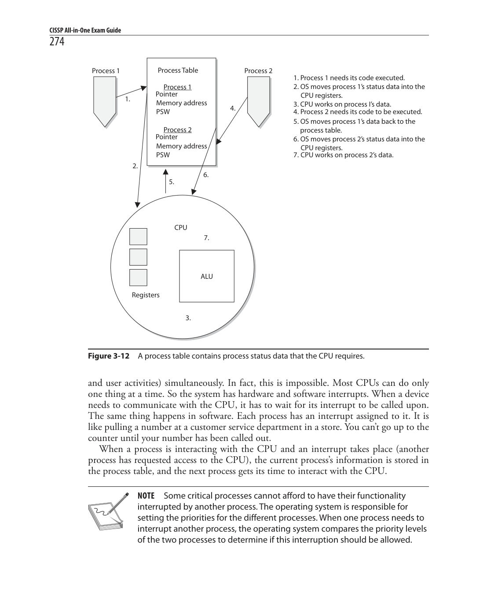
Figure 3-12A process table contains process status data that the CPU requires.
and user activities) simultaneously. In fact, this is impossible. Most CPUs can do only one thing at a time. So the system has hardware and software interrupts. When a device needs to communicate with the CPU, it has to wait for its interrupt to be called upon. The same thing happens in software. Each process has an interrupt assigned to it. It is like pulling a number at a customer service department in a store. You can’t go up to the counter until your number has been called out. When a process is interacting with the CPU and an interrupt takes place (another process has requested access to the CPU), the current process’s information is stored in the process table, and the next process gets its time to interact with the CPU.
Some critical processes cannot afford to have their functionality interrupted by another process. The operating system is responsible for setting the priorities for the different processes. When one process needs to interrupt another process, the operating system compares the priority levels of the two processes to determine if this interruption should be allowed.
There are two categories of interrupts: maskable and nonmaskable. Amaskable interruptis assigned to an event that may not be overly important, and the programmer can indicate that if that interrupt calls, the program does not stop what it is doing. This means the interrupt is ignored. Anonmaskable interruptcan never be overridden by an application because the event that has this type of interrupt assigned to it is critical. As an example, the reset button would be assigned a nonmaskable interrupt. This means that when this button is pushed, the CPU carries out its instructions right away. As an analogy, a boss can tell her administrative assistant she is not going to take any calls unless the Pope or Elvis phones. This means all other people will be ignored or masked (maskable interrupt), but the Pope and Elvis will not be ignored (nonmaskable interrupt). Thewatchdog timeris an example of a critical process that must always do its thing. This process will reset the system with a warm boot if the operating system hangs and cannot recover itself. For example, if there is a memory management problem and the operating system hangs, the watchdog timer will reset the system. This is one mechanism that ensures the software provides more of a stable environment.
Memory Stacks
Each process has its ownstack, which is a data structure in memory that the process can read from and write to in a last in, first out (LIFO) fashion. Let’s say you and John need to communicate through a stack. What John does is put all of the things he needs to say to you in a stack of papers. The first paper tells you how you can respond to him when you need to, which is called areturn pointer. The next paper has some instructions he needs you to carry out. The next piece of paper has the data you must use when carrying out these instructions. So, John writes down on individual pieces of paper all that he needs you to do for him andstacksthem up. When he is done, he tells you to read his stack of papers. You take the first page off the stack and carry out the request. Then you take the second page and carry out that request. You continue to do this until you are at the bottom of the stack, which contains John’s return pointer. You look at this return pointer (which is his memory address) to know where to send the results of all the instructions he asked you to carry out. This is how processes communicate to other processes and to the CPU. One process stacks up its information that it needs to communicate to the CPU. The CPU has to keep track of where it is in the stack, which is the purpose of the stack pointer. Once the first item on the stack is executed, then the stack pointer moves down to tell the CPU where the next piece of data is located.
Thread Management
As described earlier, a process is a program in memory. More precisely, a process is the program’s instructions and all the resources assigned to the process by the operating system. It is just easier to group all of these instructions and resources together and control them as one entity, which is a process. When a process needs to send something to the
CPU for processing, it generates a thread. Athreadis made up of an individual instruction set and the data that must be worked on by the CPU.
Most applications have several different functions. Word processing applications can open files, save files, open other programs (such as an e-mail client), and print documents. Each one of these functions requires a thread (instruction set) to be dynamically generated. So, for example, if Tom chooses to print his document, the word processing process generates a thread that contains the instructions of how this document should be printed (font, colors, text, margins, and so on). If he chooses to send a document via e-mail through this program, another thread is created that tells the e-mail client to open and what file needs to be sent. Threads are dynamically created and destroyed as needed. Once Tom is done printing his document, the thread that was generated for this functionality is broken down. A program that has been developed to carry out several different tasks at one time (display, print, interact with other programs) is capable of running several different threads simultaneously. An application with this capability is referred to as amultithreadedapplication. Each thread shares the same resources of the process that created it. So, all the threads created by a word processing application work in the same memory space and have access to all the same files and system resources. And how is this related to security? Software security ultimately comes down to what threads and processes are doing. If they are behaving properly, things work as planned and there are no issues to be concerned about. But if a thread misbehaves and it is working in a privileged mode, then it can carry out malicious activities that affect critical resources of the system. Attackers commonly
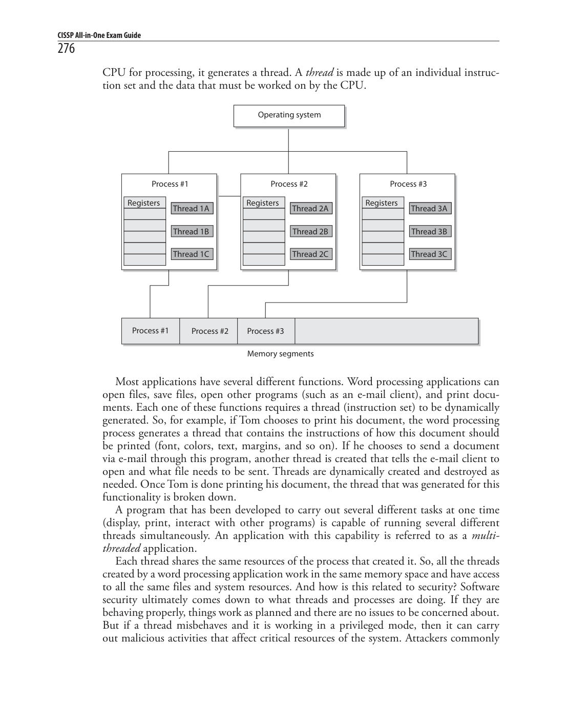
Diagram (p. 310)
inject code into a running process to carry out some type of compromise. Let’s think this through. When an operating system is preparing to load a process into memory, it goes through a type of criteria checklist to make sure the process is valid and will not negatively affect the system. Once the process passes this check, the process is loaded into memory and is assigned a specific operation mode (user or privileged). An attacker “injects” instructions into this running process, which means the process is his vehicle for destruction. Since the process has already gone through a security check before it was loaded into memory, it is trusted and has access to system resources. If an attacker can inject malicious instructions into this process, this trusted process carries out the attacker’s demands. These demands could be to collect data as the user types it in on her keyboard, steal passwords, send out malware, etc. If the process is running at a privileged mode, the attacker can carry out more damage because more critical system resources are available to him through this running process. When she creates her product, a software developer needs to make sure that running processes will not accept unqualified instructions and allow for these types of compromises. Processes should only accept instructions for an approved entity, and the instructions that it accepts should be validated before execution. It is like “stranger danger” with children. We teach our children to not take candy from a stranger, and in turn we need to make sure our software processes are not accepting improper instructions from an unknown source.
Process Scheduling
Scheduling and synchronizing various processes and their activities is part of process management, which is a responsibility of the operating system. Several components need to be considered during the development of an operating system, which will dictate how process scheduling will take place. A scheduling policy is created to govern how threads will interact with other threads. Different operating systems can use different schedulers, which are basically algorithms that control the timesharing of the CPU. As stated earlier, the different processes are assigned different priority levels (interrupts) that dictate which processes overrule other processes when CPU time allocation is required. The operating system creates and deletes processes as needed and oversees them changing state (ready, blocked, running). The operating system is also responsible for controlling deadlocks between processes attempting to use the same resources. If a process scheduler is not built properly, an attacker could manipulate it. The attacker could ensure that certain processes do not get access to system resources (creating a denial-of-service attack) or that a malicious process has its privileges escalated (allowing for extensive damage). An operating system needs to be built in a secure manner to ensure that an attacker cannot slip in and take over control of the system’s processes. When a process makes a request for a resource (memory allocation, printer, secondary storage devices, disk space, and so on), the operating system creates certain data structures and dedicates the necessary processes for the activity to be completed. Once the action takes place (a document is printed, a file is saved, or data is retrieved from the drive), the process needs to tear down these built structures and release the resources back to the resource pool so they are available for other processes. If this does not happen properly, the system may run out of critical resources—as in memory. Attackers have identified programming errors in operating systems that allow them to starve the system
of its own memory. This means the attackers exploit a software vulnerability that ensures that processes do not properly release their memory resources. Memory is continually committed and not released and the system is depleted of this resource until it can no longer function. This is another example of a denial-of-service (DoS) attack. Another situation to be concerned about is asoftware deadlock. One example of a deadlock situation is when process A commits resource 1 and needs to use resource 2 to properly complete its task, but process B has committed resource 2 and needs resource 1 to finish its job. Both processes are in deadlock because they do not have the resources they need to finish the function they are trying to carry out. This situation does not take place as often as it used to as a result of better programming. Also, operating systems now have the intelligence to detect this activity and either release committed resources or control the allocation of resources so they are properly shared between processes. Operating systems have different methods of dealing with resource requests and releases and solving deadlock situations. In some systems, if a requested resource is unavailable for a certain period of time, the operating system kills the process that is “holding on to” that resource. This action releases the resource from the process that had committed it and restarts the process so it is “clean” and available for use by other applications. Other operating systems might require a program to request all the resources it needsbeforeit actually starts executing instructions, or require a program to release its currently committed resources before it may acquire more.
Process Activity
Computers can run different applications and processes at the same time. The processes have to share resources and play nice with each other to ensure a stable and safe computing environment that maintains its integrity. Some memory, data files, and variables are actually shared between different processes. It is critical that more than one process does not attempt to read and write to these items at the same time. The operating system is the master program that prevents this type of action from taking place and ensures that programs do not corrupt each other’s data held in memory. The operating system works with the CPU to provide time slicing through the use of interrupts to ensure that processes are provided with adequate access to the CPU. This also makes certain that critical system functions are not negatively affected by rogue applications. To protect processes from each other, operating systems commonly have functionality that implements process isolation.Process isolationis necessary to ensure that processes do not “step on each other’s toes,” communicate in an insecure manner, or negatively affect each other’s productivity. Older operating systems did not enforce process isolation as well as systems do today. This is why in earlier operating systems, when one of your programs hung, all other programs, and sometimes the operating system itself, hung. With process isolation, if one process hangs for some reason, it will not affect the other software running. (Process isolation is required for preemptive multitasking.) Different methods can be used to enforce process isolation:
Encapsulation of objects
- Time multiplexing of shared resources
- Naming distinctions
- Virtual memory mapping
- When a process isencapsulated, no other process understands or interacts with its internal programming code. When process A needs to communicate with process B, process A just needs to know how to communicate with process B’s interface. An interface defines how communication must take place between two processes. As an analogy, think back to how you had to communicate with your third-grade teacher. You had to call her Mrs. So-and-So, say please and thank you, and speak respectfully to get whatever it was you needed. The same thing is true for software components that need to communicate with each other. They must knowhowto communicate properly with each other’s interfaces. The interfaces dictate the type of requests a process will accept and the type of output that will be provided. So, two processes can communicate with each other, even if they are written in different programming languages, as long as they know how to communicate with each other’s interface. Encapsulation providesdata hiding, which means that outside software components will not know how a process works and will not be able to manipulate the process’s internal code. This is an integrity mechanism and enforces modularity in programming code. If a process is not isolated properly through encapsulation, this means its interface is accepting potentially malicious instructions. The interface is like a membrane filter that our cells within our bodies use. Our cells filter fluid and molecules that are attempting to enter them. If some type of toxin slips by the filter, we can get sick because the toxin has entered the worker bees of our bodies—cells. Processes are the worker bees of our software. If they accept malicious instructions, our systems can get sick. Time multiplexing was already discussed, although we did not use this term.Time multiplexingis a technology that allows processes to use the same resources. As stated earlier, a CPU must be shared among many processes. Although it seems as though all applications are running (executing their instructions) simultaneously, the operating system is splitting up time shares between each process. Multiplexing means there are several data sources and the individual data pieces are piped into one communication channel. In this instance, the operating system is coordinating the different requests from the different processes and piping them through the one shared CPU. An operating system must provide proper time multiplexing (resource sharing) to ensure a stable working environment exists for software and users.
Today’s CPUs have multiple cores, meaning that they have multiple processors. This basically means that there are several smaller CPUs (processors) integrated into one larger CPU. So in reality the different processors on the CPU can execute instruction code simultaneously, making the computer overall much faster. The operating system has to multiplex process requests and “feed” them into the individual processors for instruction execution. While time multiplexing and multitasking is a performance requirement of our systems today and is truly better than sliced bread, it introduces a lot of complexity to our
systems. We are forcing our operating systems to not only do more things faster, we are forcing them to do all of these things simultaneously. As the complexity of our systems increases, the potential of truly securing them decreases. There is an inverse relationship between complexity and security: as one goes up, the other one usually goes down. But this fact does not necessarily predict doom and gloom; what it means is that software architecture and development has to be done in a more disciplined manner. Naming distinctionsjust means that the different processes have their own name or identification value. Processes are usually assigned process identification (PID) values, which the operating system and other processes use to call upon them. If each process is isolated, that means each process has its own unique PID value. This is just another way to enforce process isolation. Virtual address memory mappingis different from the physical addresses of memory. An application is written such that it basically “thinks” it is the only program running within an operating system. When an application needs memory to work with, it tells the operating system how much memory it needs. The operating system carves out that amount of memory and assigns it to the requesting application. The application uses its own address scheme, which usually starts at 0, but in reality, the application does not work in thephysicaladdress space it thinks it is working in. Rather, it works in the address space the operating system assigns to it. The physical memory is the RAM chips in the system. The operating system chops up this memory and assigns portions of it to the requesting processes. Once the process is assigned its own memory space, it can address this portion however it is written to do so. Virtual address mapping allows the different processes to have their own memory space; the operating system ensures no processes improperly interact with another process’s memory. This provides integrity and confidentiality for the individual processes and their data and an overall stable processing environment for the operating system. If an operating system has a flaw in the programming code that controls memory mapping, an attacker could manipulate this function. Since everything within an operating system actually has to operate in memory to work, the ability to manipulate memory addressing can be very dangerous.
Memory Management
To provide a safe and stable environment, an operating system must exercise proper memory management—one of its most important tasks. After all, everything happens in memory. The goals of memory management are to
Provide an abstraction level for programmers
- Maximize performance with the limited amount of memory available
- Protect the operating system and applications loaded into memory
- Abstractionmeans that the details of something are hidden. Developers of applications do not know the amount or type of memory that will be available in each and every system their code will be loaded on. If a developer had to be concerned with this type
of detail, then her application would be able to work only on the one system that maps to all of her specifications. To allow for portability, the memory manager hides all of the memory issues and just provides the application with a memory segment. The application is able to run without having to know all the hairy details of the operating system and hardware it is running on. Every computer has a memory hierarchy. Certain small amounts of memory are very fast and expensive (registers, cache), while larger amounts are slower and less expensive (RAM, hard drive). The portion of the operating system that keeps track of how these different types of memory are used is lovingly called thememory manager. Its jobs are to allocate and deallocate different memory segments, enforce access control to ensure processes are interacting only with their own memory segments, and swap memory contents from RAM to the hard drive.
The memory manager has five basic responsibilities:
Relocation: Swap contents from RAM to the hard drive as needed (explained later in the
- “Virtual Memory” section of this chapter)
Provide pointers for applications if their instructions and memory segment have
- been moved to a different location in main memory
Protection: Limit processes to interact only with the memory segments assigned to them
- Provide access control to memory segments
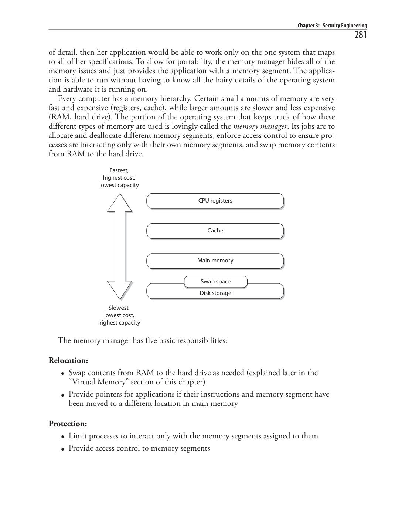
Diagram (p. 315)
Sharing: Use complex controls to ensure integrity and confidentiality when processes need
- to use the same shared memory segments
Allow many users with different levels of access to interact with the same
- application running in one memory segment
Logical organization: Segment all memory types and provide an addressing scheme for each at an
- abstraction level
Allow for the sharing of specific software modules, such as dynamic link library
- (DLL) procedures
Physical organization: Segment the physical memory space for application and operating system
- processes
A dynamic link library (DLL) is a set of functions that applications can call upon to carry out different types of procedures. For example, the Windows operating system has a crypt32.dll that is used by the operating system and applications for cryptographic functions. Windows has a set of DLLs, which is just a library of functions to be called upon, and crypt32.dll is just one example. How can an operating system make sure a process only interacts with its memory segment? When a process creates a thread because it needs some instructions and data processed, the CPU uses two registers. Abase registercontains the beginning address that was assigned to the process, and alimit registercontains the ending address, as illustrated in Figure 3-13. The thread contains an address of where the instruction and data reside that need to be processed. The CPU compares this address to the base and limit registers to make sure the thread is not trying to access a memory segment outside of its bounds. So, the base register makes it impossible for a thread to reference a memory address below its allocated memory segment, and the limit register makes it impossible for a thread to reference a memory address above this segment. If an operating system has a memory manager that does not enforce the memory limits properly, an attacker can manipulate its functionality and use it against the system. There have been several instances over the years where attackers would do just this and bypass these types of controls. Architects and developers of operating systems have to think through these types of weaknesses and attack types to ensure that the system properly protects itself.
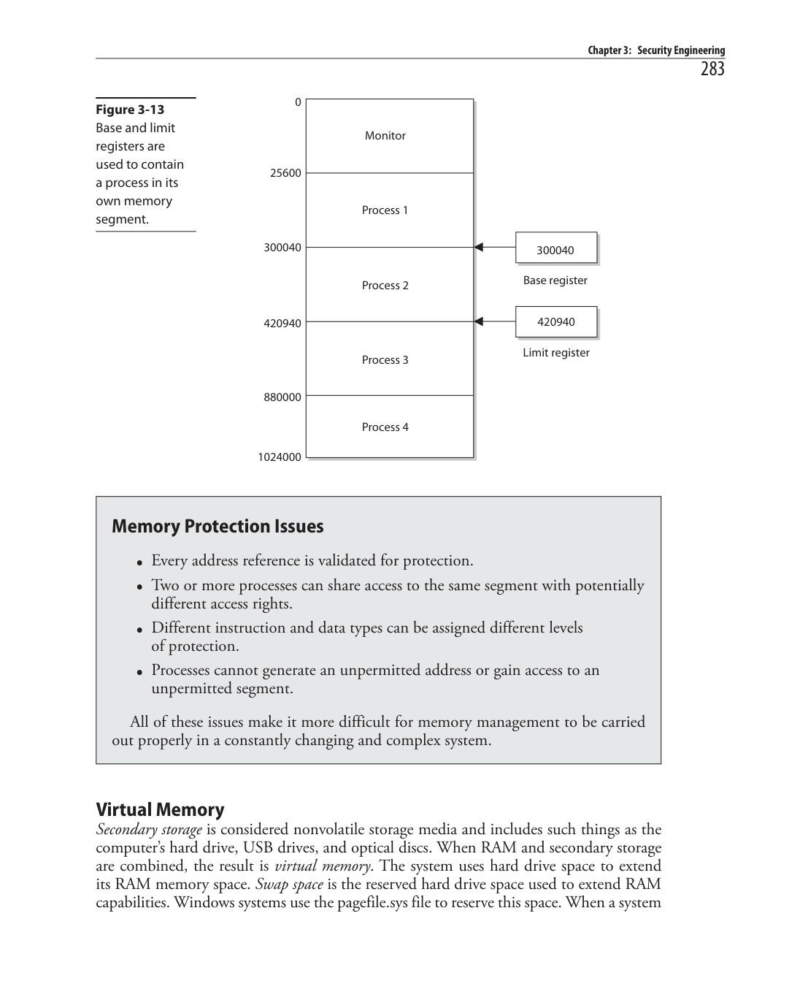
Figure 3-13
Memory Protection Issues
Every address reference is validated for protection.
- Two or more processes can share access to the same segment with potentially
- different access rights. Different instruction and data types can be assigned different levels
- ofprotection. Processes cannot generate an unpermitted address or gain access to an
- unpermitted segment.
All of these issues make it more difficult for memory management to be carried out properly in a constantly changing and complex system.
Virtual Memory
Secondary storageis considered nonvolatile storage media and includes such things as the computer’s hard drive, USB drives, and optical discs. When RAM and secondary storage are combined, the result isvirtual memory. The system uses hard drive space to extend its RAM memory space.Swap spaceis the reserved hard drive space used to extend RAM capabilities. Windows systems use the pagefile.sys file to reserve this space. When a system
fills up its volatile memory space, it writes data from memory onto the hard drive. When a program requests access to this data, it is brought from the hard drive back into memory in specific units, calledpages. This process is calledvirtual memory paging. Accessing data kept in pages on the hard drive takes more time than accessing data kept in RAM memory because physical disk read/write access must take place. Internal control blocks, maintained by the operating system, keep track of what page frames are residing in RAM and what is available “offline,” ready to be called into RAM for execution or processing, if needed. The payoff is that it seems as though the system can hold an incredible amount of information and program instructions in memory, as shown in Figure 3-14. A security issue with using virtual swap space is that when the system is shut down or processes that were using the swap space are terminated, the pointers to the pages are reset to “available” even though the actual data written to disk is still physically there. This data could conceivably be compromised and captured. On various operating systems, there are routines to wipe the swap spaces after a process is done with it before it is used again. The routines should also erase this data before a system shutdown, at which time the operating system would no longer be able to maintain any control over what happens on the hard drive surface.
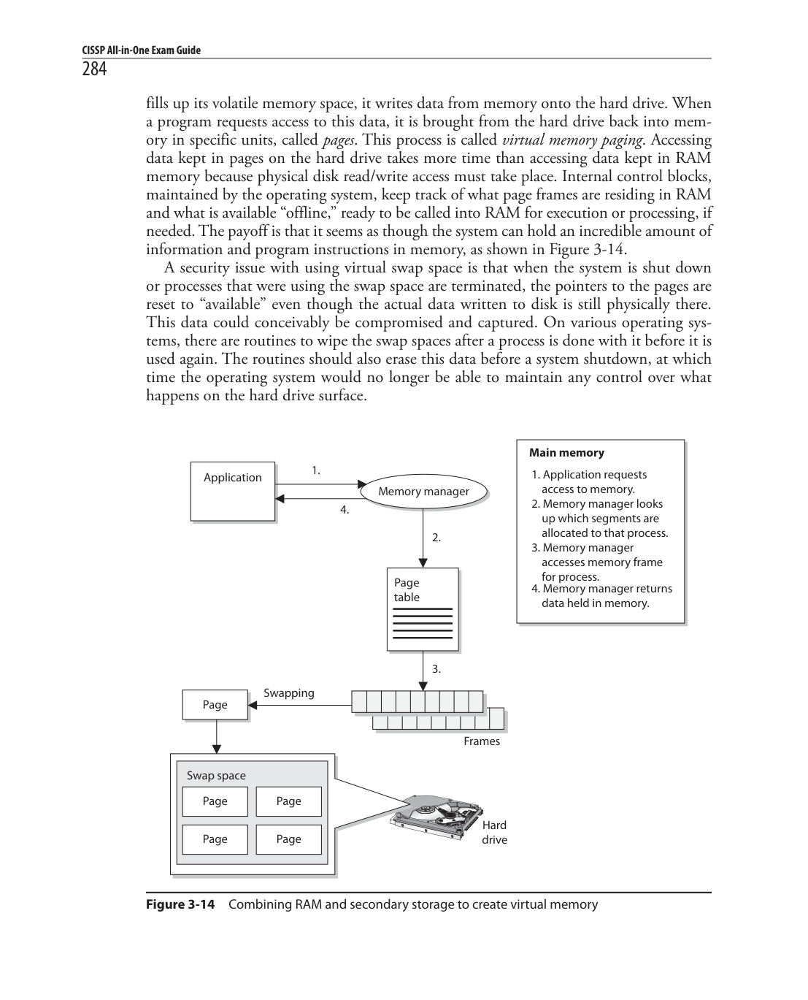
Figure 3-14Combining RAM and secondary storage to create virtual memory
If a program, file, or data is encrypted and saved on the hard drive, it will be decrypted when used by the controlling program. While this unencrypted data is sitting in RAM, the system could write out the data to the swap space on the hard drive in its unencrypted state. This is also true forsecret and private keys being held in RAM. Attackers have figured out how to gain access to this space in unauthorized manners.
Input/Output Device Management
We have covered a lot of operating system responsibilities up to now, and we are not stopping yet. An operating system also has to control all input/output devices. It sends commands to them, accepts their interrupts when they need to communicate with the CPU, and provides an interface between the devices and the applications. I/O devices are usually considered block or character devices. A block device works with data in fixed-size blocks, each block with its own unique address. A disk drive is an example of a block device. A character device, such as a printer, network interface card (NIC), or mouse, works with streams of characters, without using any fixed sizes. This type of data is not addressable. When a user chooses to print a document, open a stored file on a hard drive, or save files to a USB drive, these requests go from the application the user is working in, through the operating system, to the device requested. The operating system uses a device driver to communicate with a device controller, which may be a circuit card that fits into an expansion slot on the motherboard. The controller is an electrical component with its own software that provides a communication path that enables the device and operating system to exchange data. The operating system sends commands to the device controller’s registers, and the controller then writes data to the peripheral device or extracts data to be processed by the CPU, depending on the given commands. If the command is to extract data from the hard drive, the controller takes the bits and puts them into the necessary block size and carries out a checksum activity to verify the integrity of the data. If the integrity is successfully verified, the data is put into memory for the CPU to interact with.
Interrupts
When an I/O device has completed whatever task was asked of it, it needs to inform the CPU that the necessary data is now in memory for processing. The device’s controller sends a signal down a bus, which is detected by the interrupt controller. (This is what it means to use an interrupt. The device signals the interrupt controller and is basically saying, “I am done and need attention now.”) If the CPU is busyandthe device’s interrupt is not a higher priority than whatever job is being processed, then the device has to wait. The interrupt controller sends a message to the CPU, indicating what device needs attention. The operating system has a table (called theinterrupt vector) of all the I/O devices connected to it. The CPU compares the received number with the values within the interrupt vector so it knows which I/O device needs its services. The table has the memory addresses of the different I/O devices. So when the CPU understands that the hard drive needs attention, it looks in the table to find the correct memory address.
Thisis the new program counter value, which is the initial address of where the CPU should start reading from. One of the main goals of the operating system software that controls I/O activity is to be device independent. This means a developer can write an application to read (open a file) or write (save a file) to any device (USB drive, hard drive, optical disc drive, etc.). This level of abstraction frees application developers from having to write different procedures to interact with the various I/O devices. If a developer had to write an individual procedure of how to write to an optical disc driveandhow to write to a USB drive, how to write to a hard disk, and so on, each time a new type of I/O device was developed, all of the applications would have to be patched or upgraded. Operating systems can carry out software I/O procedures in various ways. We will look at the following methods:
Programmed I/O
- Interrupt-driven I/O
- I/O using DMA
- Premapped I/O
- Fully mapped I/O
- Programmable I/OIf an operating system is using programmable I/O, this means the CPU sends data to an I/O device and polls the device to see if it is ready to accept more data. If the device is not ready to accept more data, the CPU wastes time by waiting for the device to become ready. For example, the CPU would send a byte of data (acharacter) to the printer and then ask the printer if it is ready for another byte. The CPU sends the text to be printed 1 byte at a time. This is a very slow way of working and wastes precious CPU time. So the smart people figured out a better way: interrupt-driven I/O.
Interrupt-Driven I/OIf an operating system is using interrupt-driven I/O, this means the CPU sends a character over to the printer and then goes and works on another process’s request. When the printer is done printing the first character, it sends an interrupt to the CPU. The CPU stops what it is doing, sends another character to the printer, and moves to another job. This process (send character—go do something else— interrupt—send another character) continues until the whole text is printed. Although the CPU is not waiting for each byte to be printed, this method does waste a lot of time dealing with all the interrupts. So we excused those smart people and brought in some new smarter people, who came up with I/O using DMA.
I/O Using DMADirect memory access (DMA)is a way of transferring data between I/O devices and the system’s memory without using the CPU. This speeds up data transfer rates significantly. When used in I/O activities, the DMA controller feeds the characters to the printer without bothering the CPU. This method is sometimes referred to asunmapped I/O.
Premapped I/OPremapped I/O and fully mapped I/O (described next) do not pertain to performance, as do the earlier methods, but provide two approaches that
can directly affect security. In a premapped I/O system, the CPU sends the physical memory address of the requesting process to the I/O device, and the I/O device is trusted enough to interact with the contents of memory directly, so the CPU does not control the interactions between the I/O device and memory. The operating system trusts the device to behave properly. Scary.
Fully Mapped I/OUnder fully mapped I/O, the operating system does not trust the I/O device. The physical address is not given to the I/O device. Instead, the device works purely with logical addresses and works on behalf (under the security context) of the requesting process, so the operating system does not trust the device to interact with memory directly. The operating system does not trust the process or device, and it acts as the broker to control how they communicate with each other.
CPU Architecture Integration
An operating system and a CPU have to be compatible and share a similar architecture to work together. While an operating system is software and a CPU is hardware, they actually work so closely together when a computer is running that this delineation gets blurred. An operating system has to be able to “fit into” a CPU like a hand in a glove. Once a hand is inside of a glove, they both move together as a single entity. An operating system and a CPU must be able to communicate through an instruction set. You may have heard of x86, which is a family of instruction sets. Aninstruction setis a language an operating system must be able to speak to properly communicate to a CPU. As an analogy, if you want Jimmy to carry out some tasks for you, you will have to tell him the instructions in a language that he understands. Themicroarchitecturecontains the things that make up the physical CPU (registers, logic gates, ALU, cache, etc.). The CPU knows mechanically how to use all of these parts; it just needs to know what the operating system wants it to do. A chef knows how to use all of his pots, pans, spices, and ingredients, but he needs an order from the menu so he knows how to use all of these properly to achieve the requested outcome. Similarly, the CPU has a “menu” of operations the operating system can “order” from, which is the instruction set. The operating system puts in its order (render graphics on screen, print to printer, encrypt data, etc.), and the CPU carries out the request and provides the result.
The most common instruction set in use today (x86) can be used within different microarchitectures (Intel, AMD, etc.) and with different operating systems (Windows, OS X, Linux, etc.). Along with sharing this same language (instruction set), the operating system and CPU have to work within the same ringed architecture. Let’s approach this from the top and work our way down. If an operating system is going to be stable, it must be able to protect itself from its users and their applications. This requires the capability to distinguish between operations performed on behalf of the operating system itself and operations performed on behalf of the users or applications. This can be complex because the operating system software may be accessing memory segments, sending instructions to the CPU for processing, accessing secondary storage devices, communicating with
peripheral devices, dealing with networking requests, and more at the same time. Each user application (e-mail client, antimalware program, web browser, word processor, personal firewall, and so on) may also be attempting the same types of activities at the same time. The operating system must keep track of all of these events and ensure none of them puts the system at risk. The operating system has several protection mechanisms to ensure processes do not negatively affect each other or the critical components of the system itself. One has already been mentioned: memory protection. Another security mechanism the system uses is a ring-based architecture. The architecture of the CPU dictates how many rings are available for an operating system to use. As shown in Figure 3-15, the rings act as containers and barriers. They are containers in that they provide an execution environment for processes to be able to carry out their functions, and barriers in that the different processes are “walled off ” from each other based upon the trust the operating system has in them. Suppose you build a facility based upon this type of ring structure. Your crown jewels are stored in the center of the facility (ring 0), so you are not going to allow just anyone in this section of your building—only the people you really trust. You will allow the people you kind of trust in the next level of your facility (ring 1). If you don’t trust a particular person at all, you are going keep that person in ring 3 so that he is as far from your crown jewels as possible. This is how the ring structure of a CPU works. Ring 0 is for the most trusted components of the operating system itself. This is because processes that are allowed to work in ring 0 can access very critical components in the system. Ring 0
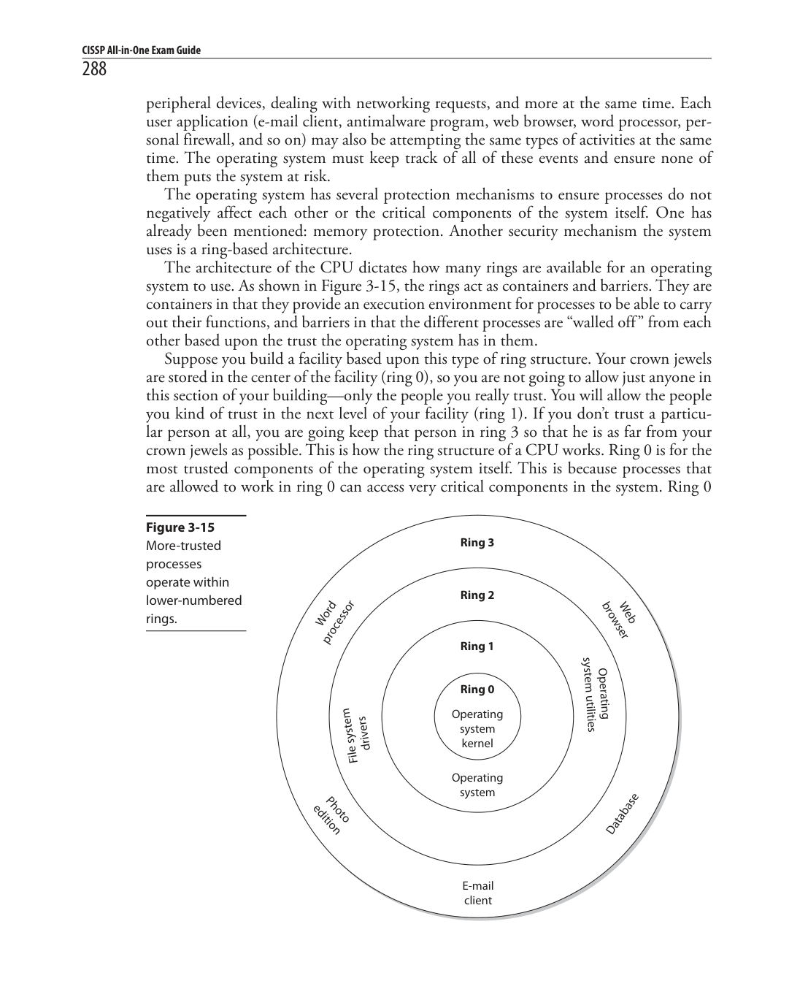
Figure 3-15
is where the operating system’s kernel (most trusted and powerful processes) works. Less trusted processes, as in operating system utilities, can work in ring 1, and the least trusted processes (applications) work in the farthest ring, ring 3. This layered approach provides a self-protection mechanism for the operating system. Operating system components that operate in ring 0 have the most access to memory locations, peripheral devices, system drivers, and sensitive configuration parameters. Because this ring provides much more dangerous access to critical resources, it is the most protected. Applications usually operate in ring 3, which limits the type of memory, peripheral device, and driver access activity and is controlled through the operating system services and system calls. The type of commands and instructions sent to the CPU from applications in the outer rings are more restrictive in nature. If an application tries to send instructions to the CPU that fall outside its permission level, the CPU treats this violation as an exception and may show a general protection fault or exception error and attempt to shut down the offending application. These protection rings provide an intermediate layer between processes and are used for access control when one process tries to access another process or interact with system resources. The ring number determines the access level a process has—the lower the ring number, the greater the amount of privilege given to the process running within that ring. A process in ring 3 cannot directly access a process in ring 1, but processes in ring 1 can directly access processes in ring 3. Entities cannot directly communicate with objects in higher rings. If we go back to our facility analogy, people in ring 0 can go and talk to any of the other people in the different areas (rings) of the facility. You trust them and you will let them do what they need to do. But if people in ring 3 of your facility want to talk to people in ring 2, you cannot allow this to happen in an unprotected manner. You don’t trust these people and do not know what they will do. Someone from ring 3 might try to punch someone from ring 2 in the face and then everyone will be unhappy. So if someone in ring 3 needs to communicate to someone in ring 2, she has to write down her message on a piece of paper and give it to the guard. The guard will review it and hand it to the person in ring 2 if it is safe and acceptable. In an operating system, the less trusted processes that are working in ring 3 send their communication requests to an API provided by the operating system specifically for this purpose (guard). The communication request is passed to the more trusted process in ring 2 in a controlled and safe manner.
Application Programming Interface
An API is the doorway to a protocol, operating service, process, or DLL. When one piece of software needs to send information to another piece of software, it must format its communication request in a way that the receiving software understands. An application may send a request to an operating system’s cryptographic DLL, which will in turn carry out the requested cryptographic functionality for the application.
(Continued)
We will cover APIs in more depth in Chapter 8, but for now understand that an API is a type of guard that provides access control between the trusted and nontrusted processes within an operating system. If an application (nontrusted) process needs to send a message to the operating system’s network protocol stack, it will send the information to the operating system’s networking service. The application sends the request in a format that will be accepted by the service’s API. APIs must be properly written by the operating system developers to ensure dangerous data cannot pass through this communication channel. If suspicious data gets past an API, the service could be compromised and execute code in a privileged context.
CPU Operation Modes
As stated earlier, the CPU provides the ring structure architecture, and the operating system assigns its processes to the different rings. When a process is placed in ring 0, its activities are carried out in kernel mode, which means it can access the most critical resources in a nonrestrictive manner. The process is assigned a status level by the operating system (stored as PSW), and when the process needs to interact with the CPU, the CPU checks its status to know what it can and cannot allow the process to do. If the process has the status of user mode, the CPU will limit the process’s access to system resources and restrict the functions it can carry out on these resources. Attackers have found many ways around this protection scheme and have tricked operating systems into loading their malicious code into ring 0, which is very dangerous. Attackers have fooled operating systems by creating their malicious code to mimic system-based DLLs, loadable kernel modules, or other critical files. The operating system then loads the malicious code into ring 0, and it runs in kernel mode. At this point the code could carry out almost any activity within the operating system in an unprotected manner. The malicious code can install key loggers, sniffers, code injection tools, and Trojaned files. The code could delete files on the hard drive, install back doors, or send sensitive data to the attacker’s computer using the compromised system’s network protocol stack.
The actual ring numbers available in a CPU architecture are dictated by the CPU itself. Some processors provide four rings and some provide eight or more. The operating systems do not have to use each available ring in the architecture; for example, Windows, OS X, and most versions of Linux commonly use only rings 0 and 3 and do not use ring 1 or ring 2. The vendor of the CPU determines the number of available rings, and the vendor of the operating system determines how it will use these rings.
Process Domain
The termdomainjust means a collection of resources. A process has a collection of resources assigned to it when it is loaded into memory (run time), as in memory addresses, files it can interact with, system services available to it, peripheral devices, etc. The higher the ring level that the process executes within, the larger the domain of resources that is available to it. It is the responsibility of the operating system to provide a safe execution domain for the different processes it serves. This means that when a process is carrying out its activities, the operating system provides a safe, predictable, and stable environment. The execution domain is a combination of where the process can carry out its functions (memory segment), the tools available to it, and the boundaries involved to keep it in a safe and confined area.
Operating System Architectures
We started this chapter by looking atsystemarchitecture approaches. Remember that a system is made up ofallthe necessary pieces for computation: hardware, firmware, and software components. We then moved into the architecture of a CPU, looking only at the processor. Now we will look at operating system architectures, which deal specifically with the software components of a system. Operating system architectures have gone through quite an evolutionary process based upon industry functionality and security needs. The architecture is the framework that dictates how the pieces and parts of the operating system interact with each other and provide the functionality that the applications and users require of it. This section looks at the monolithic, layered, microkernel, and hybrid microkernel architectures. While operating systems are very complex, some main differences in the architectural approaches have come down to what is running in kernel mode and what is not. In a monolithic architecture, all of the operating system processes work in kernel mode, as illustrated in Figure 3-16. The services provided by the operating system (memory management, I/O management, process scheduling, file management, etc.) are available to applications through system calls. Earlier operating systems, such as MS-DOS, were based upon a monolithic design. The whole operating system acted as one software layer between the user applications and the hardware level. There are several problems with this approach: complexity, portability, extensibility, and security. Since the functionality of the code is spread throughout the system, it is hard to test and debug. If there is a flaw in a software component, it is difficult to localize and easily fix. Many pieces of this spaghetti bowl of code had to be modified just to address one issue. This type of operating system is also hard to port from one hardware platform to another because the hardware interfaces are implemented throughout the software. If the operating system has to work on new hardware, extensive rewriting of the code is required. Too many components interact directly with the hardware, which increased the complexity.
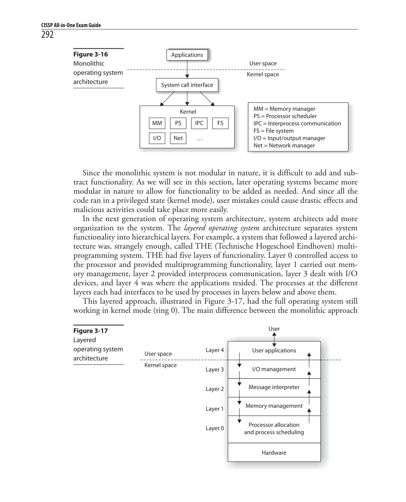
Figure 3-16
Since the monolithic system is not modular in nature, it is difficult to add and subtract functionality. As we will see in this section, later operating systems became more modular in nature to allow for functionality to be added as needed. And since all the code ran in a privileged state (kernel mode), user mistakes could cause drastic effects and malicious activities could take place more easily. In the next generation of operating system architecture, system architects add more organization to the system. Thelayered operating systemarchitecture separates system functionality into hierarchical layers. For example, a system that followed a layered architecture was, strangely enough, called THE (Technische Hogeschool Eindhoven) multiprogramming system. THE had five layers of functionality. Layer 0 controlled access to the processor and provided multiprogramming functionality, layer 1 carried out memory management, layer 2 provided interprocess communication, layer 3 dealt with I/O devices, and layer 4 was where the applications resided. The processes at the different layers each had interfaces to be used by processes in layers below and above them. This layered approach, illustrated in Figure 3-17, had the full operating system still working in kernel mode (ring 0). The main difference between the monolithic approach
and this layered approach is that the functionality within the operating system was laid out in distinctive layers that called upon each other. In the monolithic architecture, software modules communicate to each other in an ad hoc manner. In the layered architecture, module communication takes place in an organized, hierarchical structure. Routines in one layer only facilitate the layer directly below it, so no layer is missed. Layered operating systems providedata hiding, which means that instructions and data (packaged up as procedures) at the various layers do not have direct access to the instructions and data at any other layers. Each procedure at each layer has access only to its own data and a set of functions that it requires to carry out its own tasks. Allowing a procedure to access more procedures than it really needs opens the door for more successful compromises. For example, if an attacker is able to compromise and gain control of one procedure and this procedure has direct access to all other procedures, the attacker could compromise a more privileged procedure and carry out more devastating activities. A monolithic operating system provides only one layer of security. In a layered system, each layer should provide its own security and access control. If one layer contains the necessary security mechanisms to make security decisions for all the other layers, then that one layer knows too much about (and has access to) too many objects at the different layers. This directly violates the data-hiding concept. Modularizing software and its code increases the assurance level of the system because if one module is compromised, it does not mean all other modules are now vulnerable. Since this layered approach provides more modularity, it allows for functionality to be added to and subtracted from the operating systems more easily. (You experience this type of modularity when you load new kernel modules into Linux-based systems or DLLs in Windows.) The layered approach also introduces the idea of having an abstraction level added to the lower portion of the operating system. This abstraction level allows the operating system to be more portable from one hardware platform to the next. (In Windows environments you know this invention as the Hardware Abstraction Layer, or HAL). Examples of layered operating systems are THE, VAX/VMS, Multics, and Unix (although THE and Multics are no longer in use). The downfalls with this layered approach are performance, complexity, and security. If several layers of execution have to take place for even simple operating system activities, there can be a performance hit. The security issues mainly deal with so much code still running in kernel mode. The more processes that are running in a privileged state, the higher the likelihood of compromises that have high impact. The attack surface of the operating system overall needs to be reduced. As the evolution of operating system development marches forward, the system architects reduce the number of required processes that made up the kernel (critical operating system components) and some operating system types move from a monolithic model to amicrokernelmodel. The microkernel is a smaller subset of critical kernel processes, which focus mainly on memory management and interprocess communication, as shown in Figure 3-18. Other operating system components, such as protocols, device drivers, and file systems, are not included in the microkernel and work in user mode. The goal is to limit the processes that run in kernel mode so that the overall system is more secure, complexity is reduced, and portability of the operating system is increased.
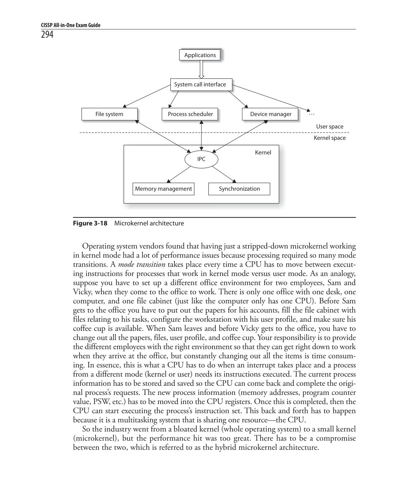
Figure 3-18Microkernel architecture
Operating system vendors found that having just a stripped-down microkernel working in kernel mode had a lot of performance issues because processing required so many mode transitions. Amode transitiontakes place every time a CPU has to move between executing instructions for processes that work in kernel mode versus user mode. As an analogy, suppose you have to set up a different office environment for two employees, Sam and Vicky, when they come to the office to work. There is only one office with one desk, one computer, and one file cabinet (just like the computer only has one CPU). Before Sam gets to the office you have to put out the papers for his accounts, fill the file cabinet with files relating to his tasks, configure the workstation with his user profile, and make sure his coffee cup is available. When Sam leaves and before Vicky gets to the office, you have to change out all the papers, files, user profile, and coffee cup. Your responsibility is to provide the different employees with the right environment so that they can get right down to work when they arrive at the office, but constantly changing out all the items is time consuming. In essence, this is what a CPU has to do when an interrupt takes place and a process from a different mode (kernel or user) needs its instructions executed. The current process information has to be stored and saved so the CPU can come back and complete the original process’s requests. The new process information (memory addresses, program counter value, PSW, etc.) has to be moved into the CPU registers. Once this is completed, then the CPU can start executing the process’s instruction set. This back and forth has to happen because it is a multitasking system that is sharing one resource—the CPU. So the industry went from a bloated kernel (whole operating system) to a small kernel (microkernel), but the performance hit was too great. There has to be a compromise between the two, which is referred to as the hybrid microkernel architecture.
In ahybrid microkernel architecture, the microkernel still exists and carries out mainly interprocess communication and memory management responsibilities. All of the other operating services work in a client\server model. The operating system services are the servers, and the application processes are the clients. When a user’s application needs the operating system to carry out some type of functionality for it (file system interaction, peripheral device communication, network access, etc.), it makes a request to the specific API of the system’s server service. This operating system service carries out the activity for the application and returns the result when finished. The separation of a microkernel and the other operating system services within a hybrid microkernel architecture is illustrated in Figure 3-19, which is the basic structure of a Windows environment. The services that run outside the microkernel are collectively referred to as the executive services.
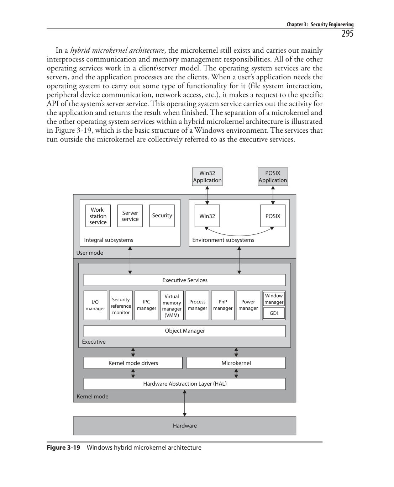
Figure 3-19Windows hybrid microkernel architecture
The basic core definitions of the different architecture types are as follows:
MonolithicAll operating system processes run in kernel mode.
- LayeredAll operating system processes run in a hierarchical model in kernel mode.
- MicrokernelCore operating system processes run in kernel mode and the
- remaining ones run in user mode.
Hybrid microkernelAll operating system processes run in kernel mode. Core
- processes run within a microkernel and others run in a client\server model.
The main architectures that are used in systems today are illustrated in Figure 3-20.
Cause for Confusion
If you continue your studies in operating system architecture, you will undoubtedly run into some of the confusion and controversy surrounding these families of architectures. The intricacies and complexities of these arguments are out of scope for the CISSP exam, but a little insight is worth noting. Today, the terms monolithic operating system and monolithic kernel are used interchangeably, which invites confusion. The industry started with monolithic operating systems, as in MS-DOS, which did not clearly separate out kernel and nonkernel processes. As operating systems advanced, the kernel components became more organized, isolated, protected, and focused. The hardware-facing code became more virtualized to allow for portability, and the code became more modular so functionality components (loadable kernel modules, DLLs) could be loaded and unloaded as needed. So while a Unix system today may follow a monolithickernel model, it does not mean that it is as rudimentary as MS-DOS, which was a monolithicoperating system. The core definition of monolithic stayed the same, which just means the whole operating system runs in kernel mode, but operating systems that fall under this umbrella term advanced over time. Different operating systems (BSD, Solaris, Linux, Windows, OS X, etc.) have different flavors and versions, and while some cleanly fit into the classic architecture buckets, some do not because the vendors have had to develop their systems to meet their specific customer demands. Some operating systems only got more lean and stripped of functionality so that they could work in embedded systems, real-time systems, or dedicated devices (firewalls, VPN concentrators), and some got more bloated to provide extensive functionality (Windows, Linux). Operating systems moved from cooperative multitasking to preemptive, improved memory management; some changed file system types (FAT to NTFS); I/O management matured; networking components were added; and there was allowance for distributed computing and multiprocessing. So in reality, we cannot think that architectural advancementjusthad to do with what code ran in kernel mode and what did not, but these design families are ways for us to segment operating system advancements at a macro level. You do not need to know the architecture types specific operating systems follow for the CISSP exam, but just the architecture types in general. Remember that the CISSP exam is a nonvendor and high-level exam.
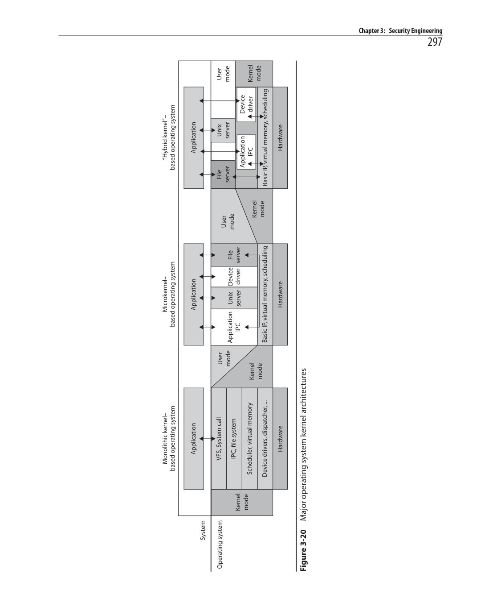
Diagram (p. 331)
Operating system architecture is critical when it comes to the security of a system overall. Systems can be patched, but this is only a Band-Aid approach. Security should be baked in from the beginning and then thought through in every step of the development life cycle.
Virtual Machines
If you have been into computers for a while, you might remember computer games that did not have the complex, lifelike graphics of today’s games.PongandAsteroidswere what we had to play with when we were younger. In those simpler times, the games were 16-bit and were written to work in a 16-bit MS-DOS environment. When our Windows operating systems moved from 16-bit to 32-bit, the 32-bit operating systems were written to be backward compatible, so someone could still load and play a 16-bit game in an environment that the game did not understand. The continuation of this little life pleasure was available to users because the operating systems created virtual environments for the games to run in. Backward compatibility was also introduced with 64-bit operating systems. When a 32-bit application needs to interact with a 64-bit operating system, it has been developed to make system calls and interact with the computer’s memory in a way that would only work within a 32-bit operating system—not a 64-bit system. So, the virtual environment simulates a 32-bit operating system, and when the application makes a request, the operating system converts the 32-bit request into a 64-bit request (this is calledthunking) and reacts to the request appropriately. When the system sends a reply to this request, it changes the 64-bit reply into a 32-bit reply so the application understands it. Today, virtual environments are much more advanced. Basicvirtualizationenables single hardware equipment to run multiple operating system environments simultaneously, greatly enhancing processing power utilization, among other benefits. Creating virtual instances of operating systems, applications, and storage devices is known asvirtualization. In today’s jargon, a virtual instance of an operating system is known as avirtual machine. A virtual machine is commonly referred to as aguestthat is executed in the hostenvironment. Virtualization allows a single host environment to execute multiple guests at once, with multiple virtual machines dynamically pooling resources from a common physical system. Computer resources such as RAM, processors, and storage are emulated through the host environment. The virtual machines do not directly access these resources; instead, they communicate with ahypervisorwithin the host environment, which is responsible for managing system resources. The hypervisor is the central program that controls the execution of the various guest operating systems and provides the abstraction level between the guest and host environments, as shown in Figure 3-21. What this means is that you can have one computer running several different operating systems at one time. For example, you can run a system with Windows 10, Linux, Unix, and Windows 2008 on one computer. Think of a house that has different rooms. Each operating system gets its own room, but each shares the same resources that the house provides—a foundation, electricity, water, roof, and so on. An operating system
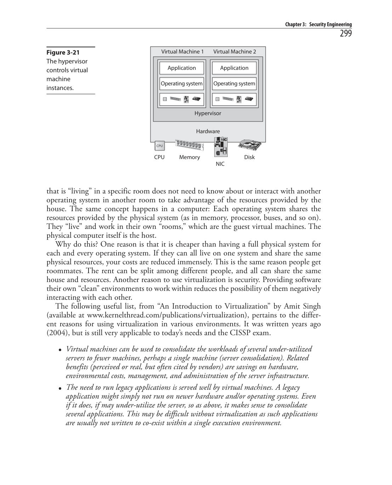
Figure 3-21
that is “living” in a specific room does not need to know about or interact with another operating system in another room to take advantage of the resources provided by the house. The same concept happens in a computer: Each operating system shares the resources provided by the physical system (as in memory, processor, buses, and so on). They “live” and work in their own “rooms,” which are the guest virtual machines. The physical computer itself is the host. Why do this? One reason is that it is cheaper than having a full physical system for each and every operating system. If they can all live on one system and share the same physical resources, your costs are reduced immensely. This is the same reason people get roommates. The rent can be split among different people, and all can share the same house and resources. Another reason to use virtualization is security. Providing software their own “clean” environments to work within reduces the possibility of them negatively interacting with each other. The following useful list, from “An Introduction to Virtualization” by Amit Singh (available at www.kernelthread.com/publications/virtualization), pertains to the different reasons for using virtualization in various environments. It was written years ago (2004), but is still very applicable to today’s needs and the CISSP exam.
Virtual machines can be used to consolidate the workloads of several under-utilized
- servers to fewer machines, perhaps a single machine (server consolidation). Related benefits (perceived or real, but often cited by vendors) are savings on hardware, environmental costs, management, and administration of the server infrastructure.
The need to run legacy applications is served well by virtual machines. A legacy
- application might simply not run on newer hardware and/or operating systems. Even if it does, if may under-utilize the server, so as above, it makes sense to consolidate several applications. This may be difficult without virtualization as such applications are usually not written to co-exist within a single execution environment.
Virtual machines can be used to provide secure, isolated sandboxes for running
- untrusted applications. You could even create such an execution environment dynamically—on the fly—as you download something from the Internet and run it. Virtualization is an important concept in building secure computing platforms.
Virtual machines can be used to create operating systems, or execution environments
- with resource limits, and given the right schedulers, resource guarantees. Partitioning usually goes hand-in-hand with quality of service in the creation of QoS-enabled operating systems.
Virtual machines can provide the illusion of hardware, or hardware configuration
- that you do not have (such as SCSI devices, multiple processors, …). Virtualization can also be used to simulate networks of independent computers.
Virtual machines can be used to run multiple operating systems simultaneously:
- different versions, or even entirely different systems, which can be on hot standby. Some such systems may be hard or impossible to run on newer real hardware.
Virtual machines allow for powerful debugging and performance monitoring.
- You can put such tools in the virtual machine monitor, for example. Operating systems can be debugged without losing productivity, or setting up more complicated debugging scenarios.
Virtual machines can isolate what they run, so they provide fault and error containment.
- You can inject faults proactively into software to study its subsequent behavior.
Virtual machines make software easier to migrate, thus aiding application and
- system mobility.
You can treat application suites as appliances by “packaging” and running each in a
- virtual machine.
Virtual machines are great tools for research and academic experiments. Since they
- provide isolation, they are safer to work with. They encapsulate the entire state of a running system: you can save the state, examine it, modify it, reload it, and so on. The state also provides an abstraction of the workload being run.
Virtualization can enable existing operating systems to run on shared memory
- multiprocessors.
Virtual machines can be used to create arbitrary test scenarios, and can lead to some
- very imaginative, effective quality assurance.
Virtualization can be used to retrofit new features in existing operating systems
- without “too much” work.
Virtualization can make tasks such as system migration, backup, and recovery easier
- and more manageable.
Virtualization can be an effective means of providing binary compatibility.
- Virtualization on commodity hardware has been popular in co-located hosting. Many
- of the above benefits make such hosting secure, cost-effective, and appealing in general.
Virtualization is fun.
System Security Architecture
Up to this point we have looked at system architectures, CPU architectures, and operating system architectures. Remember that a system architecture has several views to it, depending upon the stakeholder’s individual concerns. Since our main concern is security, we are going to approach system architecture from a security point of view and drill down into the core components that are part of most computing systems today. But first we need to understand how the goals for the individual system security architectures are defined.
Security Policy
In life we set goals for ourselves, our teams, companies, and families to meet. Setting a goal defines the desired end state. We might define a goal for our company to make $2million by the end of the year. We might define a goal of obtaining three government contracts for our company within the next six months. A goal could be that we lose 30pounds in 12 months or save enough money for our child to be able to go off to college when she turns 18 years old. The point is that we have to define a desired end state and from there we can lay out a structured plan on how to accomplish those goals, punctuated with specific action items and a defined time line. It is not usually helpful to have vague goal statements, as in “save money” or “lose weight” or “become successful.” Our goals need to be specific, or how do we know when we accomplish them? This is also true in computer security. If your boss were to give you a piece of paper that had a simple goal written on it, “Build a secure system,” where would you start? What is the definition of a “system”? What is the definition of “secure”? You’d have no way of knowing whether you accomplished the goal. Now if your boss were to hand you the same paper with the following list included, you’d be in business:
Discretionary access control–based operating system
- Provides role-based access control functionality
- Capability of protecting data classified at “public” and “confidential” levels
- Does not allow unauthorized access to sensitive data or critical system functions
- Enforces least privilege and separation of duties
- Provides auditing capabilities
- Implements trusted paths and trusted shells for sensitive processing activities
- Enforces identification, authentication, and authorization of trusted subjects
- Implements a capability-based authentication methodology
- Does not contain covert channels
- Enforces integrity rules on critical files
- Now you have more direction on what it is that your boss wants you to accomplish, and you can work with your boss to form the overall security goals for the system you will be designing and developing. All of these goals need to be captured and outlined in a security policy.
Security starts at a policy level, with high-level directives that provide the foundational goals for a system overall and the components that make it up from a security perspective. Asecurity policyis a strategic tool that dictates how sensitive information and resources are to be managed and protected. A security policy expresses exactly what the security level should be by setting the goals of what the security mechanisms are supposed to accomplish. This is an important element that has a major role in defining the architecture and design of the system. The security policy is a foundation for the specifications of a system and provides the baseline for evaluating a system after it is built. The evaluation is carried out to make sure that the goals that were laid out in the security policy were accomplished.
Security Architecture Requirements
In the 1970s computer systems were moving from single-user, stand-alone, centralized, and closed systems to multiuser systems that had multiprogramming functionality and networking capabilities. The U.S. government needed to ensure that all of the systems that it was purchasing and implementing were properly protecting its most secret secrets. The government had various levels of classified data (secret, top secret) and users with different clearance levels (Secret, Top Secret). It needed to come up with a way to instruct vendors on how to build computer systems to meet their security needs and in turn a way to test the products these vendors developed based upon those same security needs. In 1972, the U.S. government released a report (Computer Security Technology Planning Study) that outlined basic and foundational security requirements of computer systems that it would deem acceptable for purchase and deployment. These requirements were further defined and built upon, which resulted in the Trusted Computer System Evaluation Criteria, which shaped the security architecture of almost all of the systems in use today. Some of the core tenets of these requirements were the trusted computing base, security perimeter, reference monitor, and security kernel.
Trusted Computing Base
Thetrusted computing base (TCB)is a collection of all the hardware, software, and firmware components within a system that provides some type of security and enforces the system’s security policy. The TCB does not addressonlyoperating system components, because a computer system is not made up ofonlyan operating system. Hardware, software components, and firmware components can affect the system in a negative or positive manner, and each has a responsibility to support and enforce the security policy of that particular system. Some components and mechanisms have direct responsibilities in supporting the security policy, such as firmware that will not let a user boot a computer from a USB drive, or the memory manager that will not let processes overwrite other processes’ data. Then there are components that do not enforce the security policy but must behave properly and not violate the trust of a system. Examples of the ways in which a component could violate the system’s security policy include an application that is allowed to make a direct call to a piece of hardware instead of using the proper system calls through the operating system, a process that is allowed to read data outside of its approved memory space, or a piece of software that does not properly release resources after use. The operating system’s kernel is made up of hardware, software, and firmware, so in a sense the kernel is the TCB. But the TCB can include other components, such as trusted
commands, programs, and configuration files that can directly interact with the kernel. For example, when installing a Unix system, the administrator can choose to install the TCB configuration during the setup procedure. If the TCB is enabled, then the system has a trusted path, a trusted shell, and system integrity–checking capabilities. Atrusted pathis a communication channel between the user, or program, and the TCB. The TCB provides protection resources to ensure this channel cannot be compromised in any way. Atrusted shellmeans that someone who is working in that shell (command interpreter) cannot “bust out of it” and other processes cannot “bust into it.” Every operating system has specific components that would cause the system grave danger if they were compromised. The components that make up the TCB provide extra layers of protection around these mechanisms to help ensure they arenotcompromised, so the system will always run in a safe and predictable manner. While the TCB components can provide extra layers of protection for sensitive processes, they themselves have to be developed securely. The BIOS function should have a password protection capability and be tamperproof. The subsystem within a Windows operating system that generates access tokens should not be able to be hijacked and be used to produce fake tokens for malicious processes. Before a process can interact with a system configuration file, it must be authenticated by the security kernel. Device drivers should not be able to be modified in an unauthorized manner. Basically, any piece of a system that could be used to compromise the system or put it into an unstable condition is considered to be part of the TCB, and it must be developed and controlled very securely. You can think of the TCB as a building. You want the building to be strong and safe, so there are certain components thatabsolutelyhave to be built and installed properly. The right types of construction nails need to be used, not the flimsy ones we use at home to hold up pictures of our grandparents. The beams in the walls need to be made out of steel and properly placed. The concrete in the foundation needs to be made of the right concentration of gravel and water. The windows need to be shatterproof. The electrical wiring needs to be of proper grade and grounded. An operating system also has critical pieces that absolutely have to be built and installed properly. The memory manager has to be tamperproof and properly protect shared memory spaces. When working in kernel mode, the CPU must have all logic gates in the proper place. Operating system APIs must only accept secure service requests. Access control lists on objects cannot be modified in an unauthorized manner. Auditing must take place, and the audit trails cannot be modified in an unauthorized manner. Interprocess communication must take place in an approved and controlled manner. The processes within the TCB are the components that protect the system overall. So the developers of the operating system must make sure these processes have their ownexecution domain. This means they reside in ring 0, their instructions are executed in privileged state, and no less trusted processes can directly interact with them. The developers need to ensure the operating system maintains an isolated execution domain, so their processes cannot be compromised or tampered with. The resources that the TCB processes use must also be isolated, so tight access control can be provided and all access requests and operations can be properly audited. So basically, the operating system ensures that all the non-TCB processes and TCB processes interact in a secure manner. When a system goes through an evaluation process, part of the process is to identify the architecture, security services, and assurance mechanisms that make up the TCB.
During the evaluation process, the tests must show how the TCB is protected from accidental or intentional tampering and compromising activity. For systems to achieve a higher trust level rating, they must meet well-defined TCB requirements, and the details of their operational states, development stages, testing procedures, and documentation will be reviewed with more granularity than systems attempting to achieve a lower trust rating.
Security Perimeter
As stated previously, not every process and resource falls within the TCB, so some of these components fall outside of an imaginary boundary referred to as thesecurity perimeter.A security perimeter is a boundary that divides the trusted from the untrusted. For the system to stay in a secure and trusted state, precise communication standards must be developed to ensure that when a component within the TCB needs to communicate with a component outside the TCB, the communication cannot expose the system to unexpected security compromises. This type of communication is handled and controlled through interfaces. For example, a resource that is within the boundary of the security perimeter is considered to be a part of the TCB and must not allow less trusted components access to critical system resources in an insecure manner. The processes within the TCB must also be careful about the commands and information they accept from less trusted resources. These limitations and restrictions are built into the interfaces that permit this type of communication to take place and are the mechanisms that enforce the security perimeter. Communication between trusted components and untrusted components needs to be controlled to ensure that the system stays stable and safe. Recall that when we covered CPU architectures, we went through the various rings a CPU provides. The operating system places its software components within those rings. The most trusted components would go inside ring 0, and the less trusted components would go into the other rings. Strict and controlled communication has to be put into place to make sure a less trusted component does not compromise a more trusted component. This control happens through APIs. The APIs are like bouncers at bars. The bouncers only allow individuals who are safe into the bar environment and keep the others out. This is the same idea of a security perimeter. Strict interfaces need to be put into place to control the communication between the items within and outside the TCB.
The TCB and security perimeter are not physical entities, but conceptual constructs used by system architects and developers to delineate between trusted and untrusted components and how they communicate.
Reference Monitor
Up to this point we have a CPU that provides a ringed structure and an operating system that places its components in the different rings based upon the trust level of each component. We have a defined security policy, which outlines the level of security we want our system to provide. We have chosen the mechanisms that will enforce the security policy (TCB) and implemented security perimeters (interfaces) to make sure these mechanisms communicate securely. Now we need to develop and implement a mechanism that ensures that the subjects that access objects within the operating system have been
given the necessary permissions to do so. This means we need to develop and implement a reference monitor. Thereference monitoris an abstract machine that mediates all access subjects have to objects, both to ensure that the subjects have the necessary access rights and to protect the objects from unauthorized access and destructive modification. For a system to achieve a higher level of trust, it must require subjects (programs, users, processes) to be fully authorized prior to accessing an object (file, program, resource). A subject must not be allowed to use a requested resource until the subject has proven it has been granted access privileges to use the requested object. The reference monitor is an access control concept, not an actual physical component, which is why it is normally referred to as the “reference monitor concept” or an “abstract machine.” The reference monitor defines the design requirements a reference validation mechanism must meet so that it can properly enforce the specifications of a system-based access control policy. Access control is made up of rules, which specify what subjects (processes, programs, users, etc.) can communicate with which objects (files, processes, peripheral devices, etc.) and what operations can be performed (read, write, execute, etc.). If you think about it, almost everything that takes place within an operating system is made up of subject-toobject communication and it has to be tightly controlled, or the whole system could be put at risk. If the access rules of the reference monitor are not properly enforced, a process could potentially misuse an object, which could result in corruption or compromise. The reference monitor provides direction on how all access control decisions should be made and controlled in a central, concerted manner within a system. Instead of having distributed components carrying out subject-to-object access decisions individually and independently, all access decisions should be made by a core-trusted, tamperproof component of the operating system that works within the system’s kernel, which is the role of the security kernel.
Security Kernel
Thesecurity kernelis made up of hardware, software, and firmware components that fall within the TCB, and it implements and enforces the reference monitor concept. The security kernel mediates all access and functions between subjects and objects. The security kernel is the core of the TCB and is the most commonly used approach to building trusted computing systems. The security kernel has three main requirements:
It must provide isolation for the processes carrying out the reference monitor
- concept, and the processes must be tamperproof.
It must be invoked for every access attempt and must be impossible to circumvent.
- Thus, the security kernel must be implemented in a complete and foolproof way.
It must be small enough to be tested and verified in a complete and
- comprehensive manner.
These are the requirements of the reference monitor; therefore, they are the requirements of the components that provide and enforce the reference monitor concept—the security kernel.
These issues work in the abstract but are implemented in the physical world of hardware devices and software code. The assurance that the components are enforcing the abstract idea of the reference monitor is proved through testing and evaluations.
The reference monitor is a concept in which an abstract machine mediates all access to objects by subjects. The security kernel is the hardware, firmware, and software of the TCB that implements this concept. The TCB is the totality of protection mechanisms within a computer system that work together to enforce a security policy. It contains the security kernel and all other security protection mechanisms. The following is a quick analogy to show you the relationship between the processes that make up the security kernel, the security kernel itself, and the reference monitor concept. Individuals (processes) make up a society (security kernel). For a society to have a certain standard of living, its members must interact in specific ways, which is why we have laws. The laws represent the reference monitor, which enforces proper activity. Each individual is expected to stay within the bounds of the laws and act in specific ways so society as a whole is not adversely affected and the standard of living is not threatened. The components within a system must stay within the bounds of the reference monitor’s laws so they will not adversely affect other components and threaten the security of the system. For a system to provide an acceptable level of trust, it must be based on an architecture that provides the capabilities to protect itself from untrusted processes, intentional or accidental compromises, and attacks at different layers of the system. A majority of the trust ratings obtained through formal evaluations require a defined subset of subjects and objects, explicit domains, and the isolation of processes so their access can be controlled and the activities performed on them can be audited. Let’s regroup. We know that a system’s trust is defined by how it enforces its own security policy. When a system is tested against specific criteria, a rating is assigned to the system and this rating is used by customers, vendors, and the computing society as a whole. The criteria will determine if the security policy is being properly supported and enforced. The security policy lays out the rules and practices pertaining to how a system will manage, protect, and allow access to sensitive resources. The reference monitor is a concept that says all subjects must have proper authorization to access objects, and this concept is implemented by the security kernel. The security kernel comprises all the resources that supervise system activity in accordance with the system’s security policy and is part of the operating system that controls access to system resources. For the security kernel to work correctly, the individual processes must be isolated from each other and domains must be defined to dictate which objects are available to which subjects.
Security policies that prevent information from flowing from a high security level to a lower security level are calledmultilevel security policies. These types of policies permit a subject to access an object only if the subject’s security level is higher than or equal to the object’s classification. As previously stated, many of the concepts covered in the previous sections are abstract ideas that will be manifested in physical hardware components, firmware, software code,
and activities through designing, building, and implementing a system. Operating systems implement access rights, permissions, access tokens, mandatory integrity levels, access control lists, access control entities, memory protection, sandboxes, virtualization, and more to meet the requirements of these abstract concepts.
Security Models
A security model maps the abstract goals of the policy to information system terms by specifying explicit data structures and techniques necessary to enforce the security policy. A security model is usually represented in mathematics and analytical ideas, which are mapped to system specifications and then developed by programmers through programming code. So we have a policy that encompasses security goals, such as “each subject must be authenticated and authorized before accessing an object.” The security model takes this requirement and provides the necessary mathematical formulas, relationships, and logic structure to be followed to accomplish this goal. From there, specifications are developed per operating system type (Unix, Windows, OS X, and so on), and individual vendors can decide how they are going to implement mechanisms that meet these necessary specifications. A security policy outlines goals without regard to how they will be accomplished. A model is a framework that gives the policy form and solves security access problems for particular situations. Several security models have been developed to enforce security policies. The following sections provide overviews of the models with which you must be familiar as a CISSP.
Bell-LaPadula Model
TheBell-LaPadula modelenforces theconfidentialityaspects of access control. It was developed in the 1970s to prevent secret information from being accessed in an unauthorized manner. It was the first mathematical model of a multilevel security policy used to define the concept of secure modes of access and outlined rules of access. Its development was funded by the U.S. government to provide a framework for computer systems that would be used to store and process sensitive information. A system that employs the Bell-LaPadula model is called amultilevel security systembecause users with different clearances use the system, and the system processes data at different classification levels.
The Bell-LaPadula model was developed to make sure secrets stay secret; thus,it provides and addresses confidentiality only. This model does not address the integrity of the data the system maintains—only who can and cannot access the data and what operations can be carried out. Three main rules are used and enforced in the Bell-LaPadula model: Simple security rule
- *-property (star property) rule
- Strong star property rule
- Thesimple security rulestates that a subject at a given security level cannot read data that resides at a higher security level. For example, if Bob is given the security clearance of secret, this rule states he cannotreaddata classified as top secret. If the organization wanted Bob to be able to read top-secret data, it would have given him that clearance in the first place. The*-property rule(star property rule) states that a subject in a given security level cannotwriteinformation to a lower security level. The simple security rule is referred to as the “no read up” rule, and the *-property rule is referred to as the “no write down” rule. Thestrong star property rulestates that a subject who has read and write capabilities can only perform both of those functions at the same security level; nothing higher and nothing lower. So, for a subject to be able to read and write to an object, the subject’s clearance and the object classification must be equal.
Biba Model
TheBiba modelis a security model that addresses theintegrityof data within a system. It is not concerned with security levels and confidentiality. The Biba model uses integrity levels to prevent data at any integrity level from flowing to a higher integrity level. Biba has three main rules to provide this type of protection:
*-integrity axiomA subject cannot write data to an object at a higher integrity
- level (referred to as “no write up”).
Simple integrity axiomA subject cannot read data from a lower integrity level
- (referred to as “no read down”).
Invocation propertyA subject cannot request service (invoke) at a higher
- integrity.
A simple example might help illustrate how the Biba model could be used in a real context. Suppose that Indira and Erik are on a project team and are writing two documents: Indira is drafting meeting notes for internal use and Erik is writing a report for the CEO. The information Erik uses in writing his report must be very accurate and reliable, which is to say it must have a high level of integrity. Indira, on the other hand, is just documenting the internal work being done by the team, including ideas, opinions, and hunches. She could use unconfirmed and maybe even unreliable sources when writing her document. The*-integrity axiomdictates that Indira would not be able to contribute (write) material to Erik’s report, though there’s nothing to say she couldn’t use Erik’s (higher integrity) information in her own document. Thesimple integrity axiom, on the other hand, would prevent Erik from even reading Indira’s document because it could potentially introduce lower integrity information into his own (high integrity) report. Theinvocation propertyin the Biba model states that a subject cannot invoke (call upon) a subject at a higher integrity level. How is this different from the other two Biba rules? The *-integrity axiom (no write up) dictates how subjects canmodifyobjects. The simple integrity axiom (no read down) dictates how subjects canreadobjects. The invocation property dictates how one subject can communicate with and initialize other subjects at run time. An example of a subject invoking another subject is when a process sends a request to a procedure to carry out some type of task. Subjects are only allowed to
invoke tools at a lower integrity level. With the invocation property, the system is making sure a dirty subject cannot invoke a clean tool to contaminate a clean object.
Bell-LaPadula vs. Biba
The Bell-LaPadula and Biba models are informational flow models because they are most concerned about data flowing from one level to another. Bell-LaPadula uses security levels to provide dataconfidentiality, and Biba uses integrity levels to provide dataintegrity. It is important for CISSP test takers to know the rules of Bell-LaPadula and Biba, and their rules sound similar. Both have “simple” and “* (star)” rules—one writing one way and one reading another way. A tip for how to remember them is if the word “simple” is used, the rule is aboutreading. If the rule uses * or “star,” it is aboutwriting. So now you just need to remember the reading and writing directions per model.
Clark-Wilson Model
TheClark-Wilson modelwas developed after Biba and takes some different approaches to protecting the integrity of information. This model uses the following elements:
UsersActive agents
- Transformation procedures (TPs)Programmed abstract operations, such as
- read, write, and modify
Constrained data items (CDIs)Can be manipulated only by TPs
- Unconstrained data items (UDIs)Can be manipulated by users via primitive
- read and write operations
Integrity verification procedures (IVPs)Check the consistency of CDIs with
- external reality
A distinctive feature of the Clark-Wilson model is that it focuses on well-formed transactions and separation of duties. Awell-formed transactionis a series of operations that transform a data item from one consistent state to another. Think of a consistent state as one wherein we know the data is reliable. This consistency ensures the integrity of the data and is the job of the TPs. Separation of duties is implemented in the model by adding a type of procedure (the IVPs) that audits the work done by the TPs and validates the integrity of the data. When a system uses the Clark-Wilson model, it separates data into one subset that needs to be highly protected, which is referred to as a constrained data item (CDI), and another subset that does not require a high level of protection, which is called an unconstrained data item (UDI). Users cannot modify critical data (CDI) directly. Instead, software procedures (TPs) will carry out the operations on behalf of the user. This is referred to asaccess triple:subject (user), program (TP), and object (CDI). A user cannot modify a CDI without using a TP. The UDI does not require such a high level of protection and can be manipulated directly by the user.
Remember that this is an integrity model, so it must have something that ensures that specific integrity rules are being carried out. This is the job of the IVP. The IVP ensures that all critical data (CDI) manipulation follows the application’s defined integrity rules.
Noninterference Model
Multilevel security properties can be expressed in many ways, one beingnoninterference. This concept is implemented to ensure any actions that take place at a higher security level do not affect, or interfere with, actions that take place at a lower level. This type of model does not concern itself with the flow of data, but rather with what a subject knows about the state of the system. So, if an entity at a higher security level performs an action, it cannot change the state for the entity at the lower level. If a lower-level entity was aware of a certain activity that took place by an entity at a higher level and the state of the system changed for this lower-level entity, the entity might be able to deduce too much information about the activities of the higher state, which, in turn, is a way of leaking information. Let’s say that Tom and Kathy are both working on a multilevel mainframe at the same time. Tom has the security clearance of secret and Kathy has the security clearance of top secret. Since this is a central mainframe, the terminal Tom is working at has the context of secret, and Kathy is working at her own terminal, which has a context of top secret. This model states that nothing Kathy does at her terminal should directly or indirectly affect Tom’s domain (available resources and working environment). The commands she executes or the resources she interacts with should not affect Tom’s experience of working with the mainframe in any way. The real intent of the noninterference model is to address covert channels. The model looks at the shared resources that the different users of a system will access and tries to identify how information can be passed from a process working at a higher security clearance to a process working at a lower security clearance. Since Tom and Kathy are working on the same system at the same time, they will most likely have to share some types of resources. So the model is made up of rules to ensure that Kathy cannot pass data to Tom through covert channels.
Covert Channels
Acovert channelis a way for an entity to receive information in an unauthorized manner. These communications can be very difficult to detect. Covert channels are of two types: storage and timing. In acovert storage channel,processes are able to communicate through some type of storage space on the system. For example, suppose Adam wants to leak classified information to Bob. Adam could create a user account on a web system. Bob pretends he will create an account on the same system and checks to see if the username is available. If it is available, that is theequivalent of a zero (no account existed). Otherwise, he records a one, and aborts the creation of the account. Either way, Bob waits a given amount of time. Adam either removes the account, effectively writing a zero, or ensures one exists (which would be a one). Bob tries again, recording the next bit of covertly communicated information.
In acovert timing channel,one process relays information to another by modulating its use of system resources. Adam could tie up a shared resource (such as a communications bus). Bob tries to access the resource and, if successful, records it as a zero bit (no wait). Otherwise, he records a one and waits a predetermined amount of time. Adam, meanwhile is encoding his covert message by selectively tying up or freeing the shared resource. Think of this as a type of Morse code, but using some type of system resource.
Brewer and Nash Model
TheBrewer and Nash model,also called theChinese Wall model,states that a subject can write to an object if, and only if, the subject cannot read another object that is in a different dataset. It was created to provide access controls that can change dynamically depending upon a user’s previous actions. The main goal of the model is to protect against conflicts of interest by users’ access attempts. Suppose Maria is a broker at an investment firm that also provides other services to Acme Corporation. If Maria were able to access Acme information from the other service areas, she could learn of a phenomenal earnings report that is about to be released. Armed with that information, she could encourage her clients to buy shares of Acme, confident that the price will go up shortly. The Brewer and Nash Model is designed to mitigate the risk of this situation happening.
Graham-Denning Model
Remember that these are all models, so they are not very specific in nature. Each individual vendor must decide how it is going to actually meet the rules outlined in the chosen model. Bell-LaPadula and Biba do not define how the security and integrity levels are defined and modified, nor do they provide a way to delegate or transfer access rights. The Graham-Denning modeladdresses some of these issues and defines a set of basic rights in terms of commands that a specific subject can execute on an object. This model has eight primitive protection rights, or rules of how these types of functionalities should take place securely:
How to securely create an object
- How to securely create a subject
- How to securely delete an object
- How to securely delete a subject
- How to securely provide the read access right
- How to securely provide the grant access right
- How to securely provide the delete access right
- How to securely provide transfer access rights
- These functionalities may sound insignificant, but when you’re building a secure system, they are critical. If a software developer does not integrate these functionalities in a secure manner, they can be compromised by an attacker and the whole system can be at risk.
Harrison-Ruzzo-Ullman Model
TheHarrison-Ruzzo-Ullman (HRU)model deals with access rights of subjects and the integrity of those rights. A subject can carry out only a finite set of operations on an object. Since security loves simplicity, it is easier for a system to allow or disallow authorization of operations if one command is restricted to a single operation. For example, if a subject sent command X that only requires the operation of Y, this is pretty straightforward and the system can allow or disallow this operation to take place. But, if a subject sent a command M and to fulfill that command, operations N, B, W, and P have to be carried out, then there is much more complexity for the system to decide if this command should be authorized. Also the integrity of the access rights needs to be ensured; thus, in this example, if one operation cannot be processed properly, the whole command fails. So although it is easy to dictate that subject A can only read object B, it is not always so easy to ensure each and every function supports this high-level statement. The HRU model is used by software designers to ensure that no unforeseen vulnerability is introduced and the stated access control goals are achieved.
Security Models Recap
All of these models can seem confusing. Most people are not familiar with all of them, which can make the information even harder to absorb. The following are the core concepts of the different models.
Bell-LaPadula ModelThis is the first mathematical model of a multilevel security policy that defines the concept of a secure state and necessary modes of access. It ensures that information only flows in a manner that does not violate the system policy and is confidentiality focused.
The simple security ruleA subject cannot read data within an object that
- resides at a higher security level (no read up).
The *-property ruleA subject cannot write to an object at a lower
- security level (no write down).
The strong star property ruleFor a subject to be able to read and write to
- an object, the subject’s clearance and the object’s classification must be equal.
Biba ModelA model that describes a set of access control rules designed to ensure data integrity.
The simple integrity axiomA subject cannot read data at a lower
- integrity level (no read down).
The *-integrity axiomA subject cannot modify an object at a higher
- integrity level (no write up).
This integrity model is implemented to protect the Clark-Wilson Model integrity of data and to ensure that properly formatted transactions take place. It addresses all three goals of integrity:
Subjects can access objects only through authorized programs (access triple).
- Separation of duties is enforced.
- Auditing is required.
- This formal multilevel security model states that Noninterference Model commands and activities performed at one security level should not be seen by, or affect, subjects or objects at a different security level.
Brewer and Nash ModelThis model allows for dynamically changing access controls that protect against conflicts of interest. Also known as the Chinese Wall model.
Graham-Denning ModelThis model shows how subjects and objects should be created and deleted. It also addresses how to assign specific access rights.
Harrison-Ruzzo-Ullman ModelThis model shows how a finite set of procedures can be available to edit the access rights of a subject.
Systems Evaluation
Anassurance evaluationexamines the security-relevant parts of a system, meaning the TCB, access control mechanisms, reference monitor, kernel, and protection mechanisms. The relationship and interaction between these components are also evaluated in order to determine the level of protection required and provided by the system. Historically, there were different methods of evaluating and assigning assurance levels to systems. Today, however, a framework known as the Common Criteria is the only one of global significance.
Common Criteria
In 1990, the International Organization for Standardization (ISO) identified the need for international standard evaluation criteria to be used globally. The Common Criteria project started in 1993 when several organizations came together to combine and align
existing and emerging evaluation criteria. The Common Criteria was developed through collaboration among national security standards organizations within the United States, Canada, France, Germany, the United Kingdom, and the Netherlands. It is codified as international standard ISO/IEC 15408, which is in version 3.1 as of this writing. The benefit of having a globally recognized and accepted set of criteria is that it helps consumers by reducing the complexity of the ratings and eliminating the need to understand the definition and meaning of different ratings within various evaluation schemes. This also helps vendors, because now they can build to one specific set of requirements if they want to sell their products internationally, instead of having to meet several different ratings with varying rules and requirements. TheCommon Criteriais a framework within which users specify their security requirements and vendors make claims about how they satisfy those requirements, and independent labs can verify those claims. Under the Common Criteria model, an evaluation is carried out on a product and it is assigned anEvaluation Assurance Level (EAL).The thorough and stringent testing increases in detailed-oriented tasks as the assurance levels increase. The Common Criteria has seven assurance levels. The range is from EAL1, where functionality testing takes place, to EAL7, where thorough testing is performed and the system design is verified. The different EAL packages are
EAL1Functionally tested
- EAL2Structurally tested
- EAL3Methodically tested and checked
- EAL4Methodically designed, tested, and reviewed
- EAL5Semiformally designed and tested
- EAL6Semiformally verified design and tested
- EAL7Formally verified design and tested
When a system is “formally verified,” this means it is based on a model that can be mathematically proven.
The Common Criteria usesprotection profilesin its evaluation process. This is a mechanism used to describe types of products independent of their actual implementation. The protection profile contains the set of security requirements, their meaning and reasoning, and the corresponding EAL rating that the intended product will require. The protection profile describes the environmental assumptions, the objectives, and the functional and assurance level expectations. Each relevant threat is listed along with how it is to be controlled by specific objectives. The protection profile also justifies the assurance level and requirements for the strength of each protection mechanism. The protection profile provides a means for a consumer, or others, to identify specific security needs; this is the security problem to be conquered. If someone identifies a
security need that is not currently being addressed by any current product, that person can write a protection profile describing the product that would be a solution for this real-world problem. The protection profile goes on to provide the necessary goals and protection mechanisms to achieve the required level of security, as well as a list of things that could go wrong during this type of system development. This list is used by the engineers who develop the system, and then by the evaluators to make sure the engineers dotted everyiand crossed everyt. The Common Criteria was developed to stick to evaluation classes, but also to retain some degree of flexibility. Protection profiles were developed to describe the functionality, assurance, description, and rationale of the product requirements. Like other evaluation criteria before it, the Common Criteria works to answer two basic questions about products being evaluated: What does its security mechanisms do (functionality), and how sure are you of that (assurance)? This system sets up a framework that enables consumers to clearly specify their security issues and problems, developers to specify their security solution to those problems, and evaluators to unequivocally determine what the product actually accomplishes. A protection profile typically contains the following sections:
Security problem descriptionLays out the specific problems (i.e., threats) that
- any compliant product must address.
Security objectivesLists the functionality (i.e., controls) that compliant
- products must provide in order to address the security problems.
Security requirementsThese are very specific requirements for compliant
- products. They are detailed enough for implementation by system developers, and for evaluation by independent laboratories.
The evaluation process is just one leg of determining the functionality and assurance of a product. Once a product achieves a specific rating, it only applies to that particular version and only to certain configurations of that product. So if a company buys a firewall product because it has a high assurance rating, the company has no guarantee the next version of that software will have that rating. The next version will need to go through its own evaluation review. If this same company buys the firewall product and installs it with configurations that are not recommended, the level of security the company was hoping to achieve can easily go down the drain. So, all of this rating stuff is a formalized method of reviewing a system being evaluated in a lab. When the product is implemented in a real environment, factors other than its rating need to be addressed and assessed to ensure it is properly protecting resources and the environment.
When a product is assigned an assurance rating, this means it has thepotentialof providing this level of protection. The customer has to properly configure the product to actually obtain this level of security. The vendor should provide the necessary configuration documentation, and it is up to the customer to keep the product properly configured at all times.
Different Components of the Common Criteria
Protection profile (PP)Description of a needed security solution.
- Target of evaluation (TOE)Product proposed to provide a needed
- security solution.
Security targetVendor’s written explanation of the security functionality
- and assurance mechanisms that meet the needed security solution—in other words, “This is what our product does and how it does it.”
Security functional requirementsIndividual security functions that must
- be provided by a product.
Security assurance requirementsMeasures taken during development
- and evaluation of the product to assure compliance with the claimed security functionality.
Packages—EALsFunctional and assurance requirements are bundled into
- packages for reuse. This component describes what must be met to achieve specific EAL ratings.
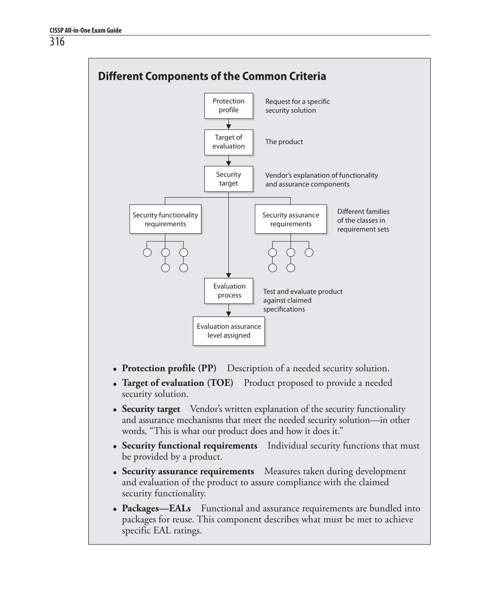
Diagram (p. 350)
ISO/IEC 15408is the international standard that is used as the basis for the evaluation of security properties of products under the CC framework. It actually has three main parts:
ISO/IEC 15408-1Introduction and general model
- ISO/IEC 15408-2Security functional components
- ISO/IEC 15408-3Security assurance components
- ISO/IEC 15408-1lays out the general concepts and principles of the CC evaluation model. This part defines terms, establishes the core concept of the TOE, describes the evaluation context, and identifies the necessary audience. It provides the key concepts for PP, security requirements, and guidelines for the security target. ISO/IEC 15408-2defines the security functional requirements that will be assessed during the evaluation. It contains a catalog of predefined security functional components that maps to most security needs. These requirements are organized in a hierarchical structure of classes, families, and components. It also provides guidance on the specification of customized security requirements if no predefined security functional component exists. ISO/IEC 15408-3defines the assurance requirements, which are also organized in a hierarchy of classes, families, and components. This part outlines the evaluation assurance levels, which is a scale for measuring assurance of TOEs, and it provides the criteria for evaluation of protection profiles and security targets. So product vendors follow these standards when building products that they will put through the CC evaluation process, and the product evaluators follow these standards when carrying out the evaluation processes.
Why Put a Product Through Evaluation?
Submitting a product to be evaluated against the Common Criteria is no walk in the park for a vendor. In fact, it is a really painful and long process, and no one wakes up in the morning thinking, “Yippee! I have to complete all of the paperwork so my product can be certified!” So, before we go through these different criteria, let’s look atwhyanyone would even put themselves through this process. If you were going shopping to buy a firewall, how would you know what level of protection each provides and which is the best product for your environment? You could listen to the vendor’s marketing hype and believe the salesperson who informs you that a particular product will solve all of your life problems in one week. Or you could listen to the advice of an independent third party who has fully tested the product and does not have any bias toward it. If you choose the second option, then you join a world of people who work within the realm of assurance ratings in one form or another. Vendors realize that going through a CC evaluation can give them a competitive advantage. This alone would make the evaluation, as painful as it is, attractive to vendors. However, many governments are increasingly requiring CC evaluations before purchasing security-critical products. Since governments tend to be big buyers, it makes financial sense to follow the CC for certain types of systems.
This evaluation process is very time consuming and expensive for the vendor. Not every vendor puts its product through this process because of the expense and delayed date to get it to market. Typically, a vendor would put its product through this process if its main customer base will be making purchasing decisions based on assurance ratings. In the United States, the Department of Defenseisthe largest customer, so major vendors put their main products through this process with the hope that the Department of Defense (and others) will purchase their products.
Certification vs. Accreditation
We have gone through the evaluation criteria that a system can be appraised against to receive a specific rating. This is a very formalized process, following which the evaluated system or product will be assigned an EAL indicating what rating it achieved. Consumers can check this and compare the different products and systems to see how they rank against each other in the property of protection. However, once a consumer buys this product and sets it up in their environment, security is not guaranteed. Security is made up of system administration, physical security, installation, configuration mechanisms within the environment, and continuous monitoring. To fairly say a system is secure, all of these items must be taken into account. The rating is just one piece in the puzzle of security.
Certification
Certificationis the comprehensive technical evaluation of the security components and their compliance for the purpose of accreditation. A certification process may use safeguard evaluation, risk analysis, verification, testing, and auditing techniques to assess the appropriateness of a specific system. For example, suppose Dan is the security officer for a company that just purchased new systems to be used to process its confidential data. He wants to know if these systems are appropriate for these tasks and if they are going to provide the necessary level of protection. He also wants to make sure they are compatible with his current environment, do not reduce productivity, and do not open doors to new threats—basically, he wants to know if these are the right products for his company. He could pay a company that specializes in these matters to perform the necessary procedures to certify the systems, but he wants to carry out the process internally. The evaluation team will perform tests on the software configurations, hardware, firmware, design, implementation, system procedures, and physical and communication controls. The goal of a certification process is to ensure that a system, product, or network is right for the customer’s purposes. Customers will rely upon a product for slightly different reasons, and environments will have various threat levels. So a particular product is not necessarily the best fit for every single customer out there. (Of course, vendors will try to convince you otherwise.) The product has to provide the right functionality and security for the individual customer, which is the whole purpose of a certification process.
The certification process and corresponding documentation will indicate the good, the bad, and the ugly about the product and how it works within the given environment. Dan will take these results and present them to his management for the accreditation process.
Accreditation
Accreditationis the formal acceptance of the adequacy of a system’s overall security and functionality by management. The certification information is presented to management, or the responsible body, and it is up to management to ask questions, review the reports and findings, and decide whether to accept the product and whether any corrective action needs to take place. Once satisfied with the system’s overall security as presented, management makes a formal accreditation statement. By doing this, management is stating it understands the level of protection the system will provide in its current environment and understands the security risks associated with installing and maintaining this system.
Certificationis a technical review that assesses the security mechanisms and evaluates their effectiveness.Accreditationis management’s official acceptance of the information in the certification process findings. Because software, systems, and environments continually change and evolve, the certification and accreditation should also continue to take place. Any major addition of software, changes to the system, or modification of the environment should initiate a new certification and accreditation cycle.
No More Pencil Whipping
Many organizations are taking the accreditation process more seriously than they did in the past. Unfortunately, sometimes when a certification process is completed and the documentation is sent to management for review and approval, management members just blindly sign the necessary documentation without really understanding what they are signing. Accreditation means management is accepting therisk that is associated with allowing this new product to be introduced into theorganization’s environment. When a large security compromise takes place, the buck stops at the individual who signed off on the offending item. So as these management members are being held more accountable for what they sign off on, and as more regulations make executives personally responsible for security, the pencil whipping of accreditation papers is decreasing. (Continued)
Certification and accreditation (C&A) really came into focus within the United States when the Federal Information Security Management Act of 2002 (FISMA) was passed as federal law. The act requires each federal agency to develop an agencywide program to ensure the security of its information and information systems. It also requires an annual review of the agency’s security program and a report of the results to be sent to the Office of Management and Budget (OMB). OMB then sends this information to the U.S. Congress to illustrate the individual agency’s compliance levels. C&A is a core component of FISMA compliance, but the manual processes of reviewing each and every system is laborious, time consuming, and error prone. FISMA requirements are now moving to continuous monitoring, which means that systems have to be continuously scanned and monitored instead of having one C&A process carried out per system every couple of years.
Open vs. Closed Systems
Computer systems can be developed to integrate easily with other systems and products (open systems), or they can be developed to be more proprietary in nature and work with only a subset of other systems and products (closed systems). The following sections describe the difference between these approaches.
Open Systems
Systems described asopenare built upon standards, protocols, and interfaces that have published specifications. This type of architecture provides interoperability between products created by different vendors. This interoperability is provided by all the vendors involved who follow specific standards and provide interfaces that enable each system to easily communicate with other systems and allow add-ons to hook into the system easily. A majority of the systems in use today are open systems. The reason an administrator can have Windows, OS X, and Unix computers communicating easily on the same network is because these platforms are open. If a software vendor creates a closed system, it is restricting its potential sales to proprietary environments.
Closed Systems
Systems referred to ascloseduse an architecture that does not follow industry standards. Interoperability and standard interfaces are not employed to enable easy communication
between different types of systems and add-on features.Closed systemsare proprietary, meaning the system can only communicate with like systems. A closed architecture can potentially provide more security to the system because it may operate in a more secluded environment than open environments. Because a closed system is proprietary, there are not as many predefined tools to thwart the security mechanisms and not as many people who understand its design, language, and security weaknesses and thus attempt to exploit them. But just relying upon something being proprietary as its security control is practicing security through obscurity (introduced in Chapter 1). Attackers can find flaws in proprietary systems or open systems, so each type should be built securely and maintained securely. A majority of the systems today are built with open architecture to enable them to work with other types of systems, easily share information, and take advantage of the functionality that third-party add-ons bring.
Distributed System Security
A distributed system is one in which multiple computers work together to do something. When you visit a website, the web server provides the content, your device renders it and allows you to interact with it, and the network devices in between take care of moving the data back and forth. It is this collaboration that defines a distributed system. We could then say that adistributed systemis a system in which multiple computing nodes, interconnected by a network, exchange information for the accomplishment of collective tasks. Distributed systems pose special challenges in terms of security simply because of the number of devices that are involved. In our (seemingly) simple example of visiting a website, we would have to secure at least three nodes: the client, the server, and the network device in between. In reality, rendering just one page could involve dozens of devices owned by different entities in multiple countries. As we will discuss in Chapter 4, an adversary can insert an unauthorized node in the network and get between you and your destination in what’s called a man-in-the-middle attack. Even without this attacker, we would have to concern ourselves with the security of domain name servers, load balancers, database servers, proxy servers, and potentially many other devices that are normally transparent to the user. This complexity that is inherent to distributed systems increases the security risks they pose. To tackle these challenges, we can start by grouping distributed systems according to their architectures. As you will see, each type of distributed system has specific issues that we need to address, which gives us a bit of focus and allows us to zero in on the things we care about. What follows is a brief overview of some of the most common distributed systems in use today.
Cloud Computing
If you were asked to install a brand-new server room for your organization, you would probably have to clear your calendar for weeks (or longer) to address the many tasks that would be involved. From power and environmental controls to hardware acquisition, installation, and configuration to software builds, the list is long and full of headaches. Now, imagine that you can provision all the needed servers in minutes using a simple graphical interface or a short script, and that you can get rid of them just as quickly when you no longer need them. This is one of the benefits of cloud computing. Cloud computingis the use of shared, remote computing devices for the purpose of providing improved efficiencies, performance, reliability, scalability, and security. These devices are usually based on virtual machines and can be outsourced to a third-party provider or provided in house. Generally speaking, there are three models for cloud computing services:
Software as a Service (SaaS)The user of SaaS is allowed to use a specific
- application that executes on the service provider’s environment. An example of this would be subscribing to a word processing application that you would then access via a web interface.
Platform as a Service (PaaS)In this model, the user gets access to a computing
- platform that is typically built on a server operating system. An example of this would be spawning an instance of Windows Server 2012R2 to provide a web server. The service provider is normally responsible for configuring and securing the platform, however, so the user normally doesn’t get administrative privileges over the entire platform.
Infrastructure as a Service (IaaS)If you want full, unfettered access to (and
- responsibility for securing) the cloud devices, you would need to subscribe under an IaaS model. Following up on the previous example, this would allow you to manage the patching of the Windows Server 2012R2 instance. The catch is that the service provider has no responsibility for security; it’s all on you.
If you are a user of IaaS, then you will probably not do things too differently than you already do in securing your systems. The only exception would be that you wouldn’t have physical access to the computers if a provider hosts them. If, on the other hand, you use SaaS or PaaS, the security of your systems will almost always rely on the policies and contracts that you put into place. The policies will dictate how your users interact with the cloud services. This would include the information classification levels that would be allowed on those services, terms of use, and other policies. The contract will specify the quality of service and what the service provider will do with or for you in responding to security events.
It is imperative that you carefully review the terms of service when evaluating a potential contract for cloud services and consider them in the context of your organization’s security. Though the industry is getting better all the time, security provisions are oftentimes lacking in these contracts at this time.
Parallel Computing
As we discussed earlier in this chapter, most CPUs can only execute a single instruction at a time. This feature can create bottlenecks, particularly when processing very large amounts of data. A way to get around this limitation is to pool multiple CPUs or computers and divide large tasks among them. Obviously, you’d need a conductor to synchronize their efforts, but the concept is otherwise pretty simple.Parallel computingis the simultaneous use of multiple computers to solve a specific task by dividing it among the available computers. This division of labor can happen at one of three levels: bit, instruction, or task.Bitlevel parallelismtakes place in every computing device we use these days. When the CPU performs an instruction on a value stored in a register, each bit is processed separately through a set of parallel gates. This is one of the reasons why 64-bit processors can be faster than 32-bit ones: they operate on twice the amount of data on each cycle. Instruction-level parallelismallows two or more program instructions to be executed simultaneously. Obviously, this requires that two or more processors are available and synchronized. Most commercially available multicore processors manufactured since 2010 support this type of parallelism. In fact, it is difficult to find new computers that do not have a multicore architecture, and even the latest mobile devices are shipping with dual-core chips as of this writing. Now, to be clear, just because you have a multicore processor in your computer does not necessarily mean that you’ll benefit from parallelism. Although the operating system will automatically look for opportunities to execute instructions in parallel, you only get maximum benefit from this capability by executing programs that have been specifically designed to take advantage of multiple cores. This is becoming increasingly common, particularly among developers of bandwidthor processor-intensive applications such as games and scientific analysis tools. Task-level parallelismtakes place at a higher level of abstraction. In it we divide a program into tasks or threads and run each in parallel. For instance, you may have a program that computes weather forecasts, which is a very computationally intensive process. You could divide the country into sectors and have the tasks of developing each sector’s forecast performed in parallel. After you complete these tasks, you could have another set of parallel tasks that determines the effects of adjacent sectors on a given sector’s weather. Though we are simplifying things a bit, this is the process by which most weather forecasts are developed. This would take too long to accomplish if we were not able to use parallel computing. Finally,data parallelismdescribes the distribution of data among different nodes that then process it in parallel. It is related to task parallelism, but is focused on the data. This kind of parallelism is receiving a lot of attention these days, because it enables a lot of the advances in big data processing. For instance, if you had to find every instance of a malware signature among petabytes of captured network data, you could divide the data among computing nodes that were part of a cluster and have each look at a different part of the data.
Data parallelism can leverage the advantages of cloud computing in that you can easily spin up hundreds of instances of computing nodes only for the specific time you need them in order to process your data. This provides tremendous capability at a fraction of the cost of doing it in house.
Databases
The two main database security issues this section addresses are aggregation and inference.Aggregationhappens when a user does not have the clearance or permission to access specific information, but she does have the permission to access components of this information. She can then figure out the rest and obtain restricted information. Shecan learn of information from different sources and combine it to learn something she does not have the clearance to know.
Aggregationis the act of combining information from separate sources. The combination of the data forms new information, which the subject does not have the necessary rights to access. The combined information has a sensitivity that is greater than that of the individual parts. The following is a silly conceptual example. Let’s say a database administrator does not want anyone in the Users group to be able to figure out a specific sentence, so he segregates the sentence into components and restricts the Users group from accessing it, as represented in Figure 3-22. However, Emily can access components A, C, and F. Because she is particularly bright, she figures out the sentence and now knows the restricted secret. To prevent aggregation, the subject, and any application or process acting on the subject’s behalf, needs to be prevented from gaining access to the whole collection, including the independent components. The objects can be placed into containers, which are classified at a higher level to prevent access from subjects with lower-level permissions or clearances. A subject’s queries can also be tracked, and context-dependent access control can be enforced. This would keep a history of the objects that a subject has accessed and restrict an access attempt if there is an indication that an aggregation attack is under way.
Thechickenfunny wore
red culottes
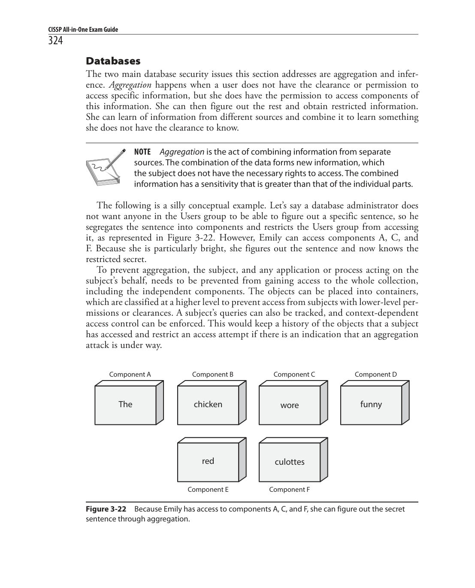
Figure 3-22Because Emily has access to components A, C, and F, she can figure out the secret
The other security issue isinference, which is the intended result of aggregation. The inference problem happens when a subject deduces the full story from the pieces he learned of through aggregation. This is seen when data at a lower security level indirectly portrays data at a higher level.
Inferenceis the ability to derive information not explicitly available.
For example, if a clerk were restricted from knowing the planned movements of troops based in a specific country but did have access to food shipment requirement forms and tent allocation documents, he could figure out that the troops were moving to a specific place because that is where the food and tents are being shipped. The food shipment and tent allocation documents were classified as confidential, and the troop movement was classified as top secret. Because of the varying classifications, the clerk could access and ascertain top-secret information he was not supposed to know. The trick is to prevent the subject, or any application or process acting on behalf of that subject, from indirectly gaining access to the inferable information. This problem is usually dealt with in the development of the database by implementing contentand context-dependent access control rules.Content-dependent access controlis based on the sensitivity of the data. The more sensitive the data, the smaller the subset of individuals who can gain access to the data. Context-dependent access controlmeans that the software “understands” what actions should be allowed based upon the state and sequence of the request. So what does that mean? It means the software must keep track of previous access attempts by the user and understand what sequences of access steps are allowed. Content-dependent access control can go like this: “Does Julio have access to File A?” The system reviews the ACL on File A and returns with a response of “Yes, Julio can access the file, but can only read it.” In a context-dependent access control situation, it would be more like this: “Does Julio have access to File A?” The system then reviews several pieces of data: What other access attempts has Julio made? Is this request out of sequence of how a safe series of requests takes place? Does this request fall within the allowed time period of system access (8a.m. to 5p.m.)? If the answers to all of these questions are within a set of preconfigured parameters, Julio can access the file. If not, he can’t. If context-dependent access control is being used to protect against inference attacks, the database software would need to keep track of what the user is requesting. So Julio makes a request to see field 1, then field 5, then field 20, which the system allows, but once he asks to see field 15, the database does not allow this access attempt. The software must be preprogrammed (usually through a rule-based engine) as to what sequence and how much data Julio is allowed to view. If he is allowed to view more information, he may have enough data to infer something we don’t want him to know. Obviously, content-dependent access control is not as complex as context-dependent control because of the number of items that need to be processed by the system. Some other common attempts to prevent inference attacks are cell suppression, partitioning the database, and noise and perturbation.Cell suppressionis a technique used
to hide specific cells that contain information that could be used in inference attacks. Partitioninga database involves dividing the database into different parts, which makes it much harder for an unauthorized individual to find connecting pieces of data that can be brought together and other information that can be deduced or uncovered.Noise and perturbationis a technique of inserting bogus information in the hopes of misdirecting an attacker or confusing the matter enough that the actual attack will not be fruitful. Often, security is not integrated into the planning and development of a database. Security is an afterthought, and a trusted front end is developed to be used with the database instead. This approach is limited in the granularity of security and in the types of security functions that can take place. A common theme in security is a balance between effective security and functionality. In many cases, the more you secure something, the less functionality you have. Although this could be the desired result, it is important not to excessively impede user productivity when security is being introduced.
Web Applications
Considering their exposed nature, websites are primary targets during an attack. It is, therefore, essential for web developers to abide by the time-honored and time-tested principles to provide the maximum level of deterrence to attackers. Web application security principles are meant to govern programming practices to regulate programming styles and strategically reduce the chances of repeating known software bugs and logical flaws. A good number of websites are exploited on the basis of vulnerabilities arising from reckless programming. With the rapidly growing number of websites out there, the possibility of exploiting such coding errors is vast. The first pillar of implementing security principles is analyzing the website architecture. The clearer and simpler a website is, the easier it is to analyze its various security aspects. Once a website has been strategically analyzed, the user-generated input fed into the website also needs to be critically scrutinized. As a rule, all input must be considered unsafe, or rogue, and ought to be sanitized before being processed. Likewise, all output generated by the system should also be filtered to ensure private or sensitive data is not being disclosed. In addition, using encryption helps secure the input/output operations of a web application. Though encrypted data may be intercepted by malicious users, that data should only be readable, or modifiable, by those with the secret key used to encrypt it. In the event of an error, websites ought to be designed to behave in a predictable and noncompromising manner. This is also generally referred to asfailing securely. Systems that fail securely display friendly error messages without revealing internal system details. An important element in designing security functionality is keeping in perspective the human element. Though programmers may be tempted to prompt users for passwords on every mouse click to keep security effective, web developers must maintain a state of equilibrium between functionality and security. Tedious authentication techniques usually do not stay in practice for too long. Experience has shown that the best security measures are those that are simple, intuitive, and psychologically acceptable.
As discussed in Chapter 1, a commonly ineffective approach to security implementation is the use ofsecurity through obscurity, which assumes that creating overly complex or perplexing programs can reduce the chances of interventions in the software. Though obscure programs may take a tad longer to dissect, this does not guarantee protection from resolute and determined attackers. Protective measures, hence, cannot consist solely of obfuscation. An effective approach to securing web applications is the use of web application firewalls (WAFs). These are systems that inspect the traffic going to (or coming from) a web application in order to filter out potentially malicious content. Since the WAF is separate from the web application, it provides an added layer of defense that can be independently tuned without having to rewrite or reconfigure the web application. At the end, it is important to realize that the implementation of even the most beefy security techniques, without tactical considerations, will cause a website to remain as weak as its weakest link.
Mobile Devices
Many corporations do not incorporate the use of portable devices and mobile cell phone technologies into their security policies or overarching security program. This was all right when phones were just phones, but today they are small computers that can connect to websites and various devices, and thus are new entry points for malicious activities. Since mobile devices are basically small computers, most of the same security vulnerabilities, threats, and risks carry over for this emerging technology. They are penetrated through various attack vectors, they are compromised by malware, sensitive data is stolen from them, denial-of-service attacks can take place, and now that individuals and companies are carrying out credit card transactions on them, they are new and more vulnerable points of presence. The largest hurdle of securing any mobile or portable device is that people do not always equate them to providing as much risk as a workstation or laptop. People do not usually install antimalware software on these devices and ensure that the software is up to date, and they are constantly installing apps with an amazing amount of functionality from any Internet-based website handing them out. The failure to secure mobile devices not only puts the data on the devices at risk, but also puts at risk the workstations and laptops to which many people connect their mobile devices to allow for synchronization. This provides a jumping point from the mobile device to a computer system that may be directly connected to the corporate network. Since mobile devices have large hard drives and extensive applications available, users commonly store spreadsheets, word documents, small databases, and more on them. This means the devices are another means of data leakage. It is important to be aware that cell phones move their data over the airwaves and then the data is put on a wired network by the telephone company or service provider. So, a portion of the distance that the traffic must travel over is wireless, but then the remaining distance may take place over a wired environment. Thus, while mobile carriers typically encrypt their users’ data, typically it is encrypted only while it is traveling over the wireless portion of the network. Once it hits the wired portion of the network, it may
no longer be encrypted. So encrypting data for transmission on a cell phone or portable device does not necessarily promise end-to-end encryption. Unfortunately, these types of attacks on cell phones will never really stop. We will come up with more countermeasures, and the bad guys will come up with new ways to exploit vulnerabilities that we did not think of. It is the same cat and mouse game that is carried out in the traditional network world. But the main issue pertaining to cell phone attacks is that they are not usually included in a corporation’s security program or even recognized as a threat. This will change as more attacks take place through this new entry point and more viruses are written and spread through the interactions of cell phones and portable devices and the corporate network. The following are some of the issues with using mobile devices in an enterprise:
False base stations can be created.
- Confidential data can be stolen.
- Camera and microphone functionality can be used improperly.
- Internet sites can be accessed in violation of company policies.
- Malicious code can be downloaded.
- Encryption can be weak and not end to end.
- Some mobile phone providers have enterprise-wide solutions, which allow the network administrator to create profiles that are deployed to each approved phone. The following is a short list of items that should be put into place for enterprise mobile device security:
Only devices that can be centrally managed should be allowed access to corporate
- resources.
Remote policies should be pushed to each device, and user profiles should be
- encrypted with no local options for modification.
Data encryption, idle timeout locks, screen-saver lockouts, authentication, and
- remote wipe should be enabled.
Bluetooth capabilities should be locked down, only allowed applications should
- be installed, camera policies should be enforced, and restrictions for social media sites (Facebook, Twitter, etc.) should be enabled.
Endpoint security should expand to mobile endpoints.
- 802.1X should be implemented on wireless VoIP clients on mobile devices.
- Implementing security and maintaining it on each and every mobile device is very difficult, so a hybrid approach of “device lockdown” and perimeter control and filtering should be put into place and monitored.
Cyber-Physical Systems
It is almost impossible to distance ourselves from computers because they are part and parcel of virtually every activity in which we engage. This is because we discovered a long
time ago that it was oftentimes easier, better, faster, and cheaper for computers to control physical devices and systems than for people to do so. From thermostats and traffic lights to cars, airplanes, and spacecraft, computers control many of the things that make our lives safe and comfortable. Any system in which computers and physical devices collaborate via the exchange of inputs and outputs to accomplish a task or objective is acyber-physical system. Broadly speaking, these systems fall into two classes, which we describe as follows.
Embedded Systems
The simplest form of cyber-physical system is the embedded system. These systems are cheap, rugged, small, and use very little power. The computing device is part of (or embedded into) a mechanical or electrical device or system. A digital thermometer is an example of a very simple embedded system, and other examples of embedded systems include traffic lights and factory assembly line controllers. Embedded systems are usually built around microcontrollers, which are specialized devices that consist of a CPU, memory, and peripheral control interfaces. Microcontrollers have a very basic operating system, if they have one at all. Some of the very features that make embedded systems useful are also the source of many vulnerabilities. If you think about it, they are meant to be invisible. You are not supposed to think that when you put a load of laundry in your washing machine and start it you are actually executing a program on a tiny computer that will regulate the flow of water and the movements of the motor. When was the last time you thought about how secure the embedded system in your washing machine is? Now, if you transpose that to your workplace, you will find that there are probably dozens, if not hundreds, of embedded systems with which you interact each day. The main challenge in securing embedded systems is that of ensuring the security of the software that drives them. Many vendors build their embedded systems around commercially available microprocessors, but use their own proprietary code that is difficult, if not impossible, for a customer to audit. Depending on the risk tolerance of your organization, this may be acceptable as long as the embedded systems are stand-alone. The problem is that these systems are increasingly shipping with some sort of network connectivity. For example, one organization recently discovered that one of its embedded devices had a “phone home” feature that was not documented, but that resulted in potentially sensitive information being transmitted unencrypted to the manufacturer. If a full audit of the embedded device security is not possible, at a very minimum you should ensure you see what data flows in and out of it across any network.
Internet of Things
The Internet of Things (IoT) is the global network of connected embedded systems. What distinguishes the IoT is that each node is connected to the Internet and is uniquely addressable. By different accounts, this network is expected to reach anywhere between 5 billion and over 1 trillion devices, which makes this a booming sector of the global economy. Perhaps the most visible aspect of this explosion is in the area of smart homes in which lights, furnaces, and even refrigerators collaborate to create the best environment for the residents.
With this level of connectivity and access to physical devices, the IoT poses many security challenges. Among the issues to address by anyone considering adoption of IoT devices are the following:
AuthenticationEmbedded devices are not known for incorporating strong
- authentication support, which is the reason why most IoT devices have very poor (if any) authentication.
EncryptionCryptography is typically expensive in terms of processing power
- and memory requirements, both of which are very limited in IoT devices. The fallout of this is that data at rest and data in motion can be vulnerable in many parts of the IoT.
UpdatesThough IoT devices are networked, many vendors in this fast-moving
- sector do not provide functionality to automatically update their software and firmware when patches are available.
Industrial Control Systems
Industrial control systems (ICS) consist of information technology that is specifically designed to control physical devices in industrial processes. ICS exist on factory floors to control conveyor belts and industrial robots. They exist in the power and water infrastructures to control the flows of these utilities. Due to the roles they typically fulfill in manufacturing and infrastructure, maintaining efficiency is key to effective ICS. Another important consideration is that these systems, unlike the majority of other IT systems, control things that can directly cause physical harm to humans. For these two reasons (efficiency and safety), securing ICS requires a slightly different approach than traditional IT systems. A good resource for this is the NIST Special Publication 800-82, “Guide to Industrial Control Systems (ICS) Security.” ICS is really an umbrella term covering a number of somewhat different technologies that were developed independently to solve different problems. Today, however, it can be hard to tell some of these apart as the ICS technologies continue to converge. In the interest of correctness, we discuss each of the three major categories of ICS in the following sections, but it is important to keep in mind that it is becoming increasingly more difficult to find systems that fit perfectly into only one category.
Programmable Logic Controllers (PLC)When automation (the physical kind, not the computing kind to which we’re accustomed) first showed up on factory floors, it was bulky, brittle, and difficult to maintain. If, for instance, you wanted an automatic hammer to drive nails into boxes moving through a conveyor belt, you would arrange a series of electrical relays such that they would sequentially actuate the hammer, retrieve it, and then wait for the next box. Whenever you wanted to change your process or repurpose the hammer, you would have to suffer through a complex and error-prone reconfiguration process. Programmable logic controllers (PLCs)are computers designed to control electromechanical processes such assembly lines, elevators, roller coasters, and nuclear centrifuges. The idea is that a PLC can be used in one application today and then easily reprogrammed to
control something else tomorrow. PLCs normally connect to the devices they control over a standard interface such as RS-232. The communications protocols themselves, however, are not always standard. While this creates additional challenges to securing PLCs, we are seeing a trend toward standardization of these serial connection protocols. While early PLCs had limited or no network connectivity, it is now rare to see one that is not network-enabled.
Distributed Control System (DCS)Once relay boxes were replaced with PLCs, the next evolution was to integrate these devices into a system. Adistributed control system (DCS)is a network of control devices within fairly close proximity that are part of one or more industrial processes. DCS usage is very common in manufacturing plants, oil refineries, and power plants, and is characterized by decisions being made in a concerted manner, but by different nodes within the system. You can think of a DCS as a hierarchy of devices. At the bottom level, you will find the physical devices that are being controlled or that provide inputs to the system. One level up, you will find the microcontrollers and PLCs that directly interact with the physical devices, but also communicate with higher-level controllers. Above the PLCs are the supervisory computers that control, for example, a given production line. You can also have a higher level that deals with plant-wide controls, which would require some coordination among different production lines. As you can see, the concept of a DCS was born from the need to control fairly localized physical processes. Because of this, the communications protocols in use are not optimized for wide-area communications or for security. Another byproduct of this localized approach is that DCS users felt for many years that all they needed in order to secure their systems was to provide physical security. If the bad guys can’t get into the plant, it was thought, then they can’t break our systems. This is because, typically, a DCS consists of devices within the same plant. However, technological advances and converging technologies are blurring the line between a DCS and a SCADA system.
Supervisory Control and Data Acquisition (SCADA)While DCS technology is well suited for local processes such as those in a manufacturing plant, it was never intended to operate across great distances. Thesupervisory control and data acquisition (SCADA)systems were developed to control large-scale physical processes involving nodes separated by significant distances. The main conceptual differences between DCS and SCADA are size and distances. So, while the control of a power plant is perfectly suited for a traditional DCS, the distribution of the generated power across a power grid would require a SCADA system. SCADA systems typically involve three kinds of devices: endpoints, backends, and user stations. Aremote terminal unit (RTU)is an endpoint that connects directly to sensors and/or actuators. Though there are still plenty of RTUs in use, many of these have now been replaced with PLCs. Thedata acquisition servers (DAS)are backends that receive all data from the endpoints through a telemetry system, and perform whatever correlation or analysis may be necessary. Finally, the users in charge of controlling the system interact with it through the use of ahuman-machine interface (HMI), the user station, that displays the data from the endpoints and allows the users to issue commands to the actuators (e.g., to close a valve or open a switch).
One of the main challenges with operating at great distances is effective communications, particularly when parts of the process occur in areas with limited, spotty, or nonexistent telecommunications infrastructures. SCADA systems commonly use dedicated cables and radio links to cover these large expanses. Many legacy SCADA implementations rely on older proprietary communications protocols and devices. For many years, this led this community to feel secure because only someone with detailed knowledge of an obscure protocol and access to specialized communications gear could compromise the system. In part, this assumption is one of the causes of the lack of effective security controls on legacy SCADA communications. While this thinking may have been arguable in the past, today’s convergence on IP-based protocols makes it clear that this is not a secure way of doing business.
ICS SecurityThe single greatest vulnerability in ICS is their increasing connectivity to traditional IT networks. This has two notable side effects: it accelerates convergence towards standard protocols, and it exposes once-private systems to anyone with an Internet connection. NIST SP 800-82 has a variety of recommendations for ICS security, but we highlight some of the most important ones here:
Apply a risk management process to ICS.
- Segment the network to place IDS/IPS at the subnet boundaries.
- Disable unneeded ports and services on all ICS devices.
- Implement least privilege through the ICS.
- Use encryption wherever feasible.
- Ensure there is a process for patch management.
- Monitor audit trails regularly.
A Few Threats to Review
Now that we have talked about how everything is supposed to work, let’s take a quick look at some of the things that can go wrong when designing a system. Software almost always has bugs and vulnerabilities. The rich functionality demanded by users brings about deep complexity, which usually opens the doors to problems in the computer world. Also, vulnerabilities are always around because attackers continually find ways of using system operations and functionality in a negative and destructive way. Just like there will always be cops and robbers, there will always be attackers and security professionals. It is a game of trying to outwit each other and seeing who will put the necessary effort into winning the game.
Software quality experts estimate an average of six defects in every 1,000 lines of code written in the U.S. Google’s total code base is 2billion lines of code, which could mean 12 million bugs using this average defectrate.
Maintenance Hooks
In the programming world,maintenance hooksare a type of back door. They are instructions within software that only the developer knows about and can invoke, and which give the developer easy access to the code. They allow the developer to view and edit the code without having to go through regular access controls. During the development phase of the software, these can be very useful, but if they are not removed before the software goes into production, they can cause major security issues. An application that has a maintenance hook enables the developer to execute commands by using a specific sequence of keystrokes. Once this is done successfully, the developer can be inside the application looking directly at the code or configuration files. She might do this to watch problem areas within the code, check variable population, export more code into the program, or fix problems she sees taking place. Although this sounds nice and healthy, if an attacker finds out about this maintenance hook, he can take more sinister actions. So all maintenance hooks need to be removed from software before it goes into production.
You might be inclined to think that maintenance hooks are a thing of the past because developers are more security minded these days. This is not true. Developers are still using maintenance hooks, either because they lack understanding of or don’t care about security issues, and many maintenance hooks still reside in older software that organizations are using.
Countermeasures
Because maintenance hooks are usually inserted by programmers, they are the ones who usually have to take them out before the programs go into production. Code reviews and unit and quality assurance testing should always be on the lookout for back doors in case the programmer overlooked extracting them. Because maintenance hooks are within the code of an application or system, there is not much a user can do to prevent their presence, but when a vendor finds out a back door exists in its product, it usually develops and releases a patch to reduce this vulnerability. Because most vendors sell their software without including the associated source code, it may be very difficult for companies who have purchased software to identify back doors. The following lists some preventive measures against back doors:
Use a host-based intrusion detection system to watch for any attackers using back
- doors into the system.
Use file system encryption to protect sensitive information.
- Implement auditing to detect any type of back door use.
Time-of-Check/Time-of-Use Attacks
Specific attacks can take advantage of the way a system processes requests and performs tasks. Atime-of-check/time-of-use (TOC/TOU) attackdeals with the sequence of steps a system uses to complete a task. This type of attack takes advantage of the dependency on the timing of events that take place in a multitasking operating system.
As stated previously, operating systems and applications are, in reality, just lines and lines of instructions. An operating system must carry out instruction 1, then instruction 2, then instruction 3, and so on. This is how it is written. If an attacker can get in between instructions 2 and 3 and manipulate something, she can control the result of these activities. An example of a TOC/TOU attack is if process 1 validates the authorization of a user to open a noncritical text file and process 2 carries out theopencommand. If the attacker can change out this noncritical text file with a password file while process 1 is carrying out its task, she has just obtained access to this critical file. (It is a flaw within the code that allows this type of compromise to take place.)
This type of attack is also referred to as anasynchronous attack. Asynchronous describes a process in which the timing of each step may vary. The attacker gets in between these steps and modifies something. Race conditions are also considered TOC/TOU attacks by some in the industry. Arace conditionis when two different processes need to carry out their tasks on one resource. The processes need to follow the correct sequence. Process 1 needs to carry out its work before process 2 accesses the same resource and carries out its tasks. If process 2 goes before process 1, the outcome could be very different. If an attacker can manipulate the processes so process 2 does its task first, she can control the outcome of the processing procedure. Let’s say process 1’s instructions are to add 3 to a value and process 2’s instructions are to divide by 15. If process 2 carries out its tasks before process 1, the outcome would be different. So if an attacker can make process 2 do its work before process 1, she can control the result. Looking at this issue from a security perspective, there are several types of race condition attacks that are quite concerning. If a system splits up the authentication and authorization steps, an attacker could be authorized before she is even authenticated. For example, in the normal sequence, process 1 verifies the authentication before allowing a user access to a resource, and process 2 authorizes the user to access the resource. If the attacker makes process 2 carry out its tasks before process 1, she can access a resource without the system making sure she has been authenticated properly. So although the terms “race condition” and “TOC/TOU attack” are sometimes used interchangeably, in reality, they are two different things. A race condition is an attack in which an attacker makes processes execute out of sequence to control the result. A TOC/ TOU attack is when an attacker jumps in between two tasks and modifies something to control the result.
Countermeasures
It would take a dedicated attacker with great precision to perform these types of attacks, but it is possible and has been done. To protect against race condition attacks, it is best to notsplit up critical tasks that can have their sequence altered. This means the system should use atomic operations (where only one system call is used) for access control functions. This would not give the processor the opportunity to switch to another process in between two tasks. Unfortunately, using these types of atomic operations is not always possible.
To avoid TOC/TOU attacks, it is best if the operating system can apply software locks to the items it will use when it is carrying out its “checking” tasks. So if a user requests access to a file, while the system is validating this user’s authorization, it should put a software lock on the file being requested. This ensures the file cannot be deleted and replaced with another file. Applying locks can be carried out easily on files, but it is more challenging to apply locks to database components and table entries to provide this type of protection.
Cryptography in Context
Now that you have a pretty good understanding of system architectures, we turn to a topic that has become central to protecting these architectures.Cryptographyis a method of storing and transmitting data in a form that only those it is intended for can read and process. It is considered a science of protecting information by encoding it into an unreadable format. Cryptography is an effective way of protecting sensitive information as it is stored on media or transmitted through untrusted network communication paths. One of the goals of cryptography, and the mechanisms that make it up, is to hide information from unauthorized individuals. However, with enough time, resources, and motivation, hackers can successfully attack most cryptosystems and reveal the encoded information. So a more realistic goal of cryptography is to make obtaining the information too work intensive or time consuming to be worthwhile to the attacker.
The History of Cryptography
Cryptography has roots that begin around 2000b.c.in Egypt, when hieroglyphics were used to decorate tombs to tell the life story of the deceased. The intention of the practice was not so much about hiding the messages themselves; rather, the hieroglyphics were intended to make the life story seem more noble, ceremonial, and majestic. Encryption methods evolved from being mainly for show into practical applications used to hide information from others. A Hebrew cryptographic method required the alphabet to be flipped so each letter in the original alphabet was mapped to a different letter in the flipped, or shifted, alphabet. The encryption method was called atbash, which was used to hide the true meaning of messages. An example of an encryption key used in the atbash encryption scheme is shown here:
For example, the word “security” is encrypted into “hvxfirgb.” What does “xrhhk” come out to be? This is an example of asubstitution cipherbecause each character is replaced with another character. This type of substitution cipher is referred to as amonoalphabetic substitution cipherbecause it uses only one alphabet, whereas apolyalphabetic substitution cipheruses multiple alphabets.
Cipher is another term for algorithm.
This simplistic encryption method worked for its time and for particular cultures, but eventually more complex mechanisms were required. Around 400b.c., the Spartans used a system of encrypting information in which they would write a message on a sheet of papyrus (a type of paper) that was wrapped around a staff (a stick or wooden rod), which was then delivered and wrapped around a different staff by the recipient. The message was only readable if it was wrapped around the correct size staff, which made the letters properly match up, as shown in Figure 3-23. This is referred to as thescytale cipher. When the papyrus was not wrapped around the staff, the writing appeared as just a bunch of random characters. Later, in Rome, Julius Caesar (100–44b.c.) developed a simple method of shifting letters of the alphabet, similar to the atbash scheme. He simply shifted the alphabet by three positions. The following example shows a standard alphabet and a shifted alphabet. The alphabet serves as the algorithm, and the key is the number of locations it has been shifted during the encryption and decryption process.
Standard Alphabet:
- ABCDEFGHIJKLMNOPQRSTUVWXYZ
Cryptographic Alphabet:
- DEFGHIJKLMNOPQRSTUVWXYZABC
As an example, suppose we need to encrypt the message “Logical Security.” We take the first letter of this message,L, and shift up three locations within the alphabet. The encrypted version of this first letter isO, so we write that down. The next letter to be encrypted isO, which matchesRwhen we shift three spaces. We continue this process for the whole message. Once the message is encrypted, a carrier takes the encrypted version to the destination, where the process is reversed.
Plaintext:
- LOGICAL SECURITY
Ciphertext:
- ORJLFDO VHFXULWB
Today, this technique seems too simplistic to be effective, but in the time of Julius Caesar, not very many people could read in the first place, so it provided a high level of protection. The Caesar cipher is an example of a monoalphabetic cipher. Once more people could read and reverse-engineer this type of encryption process, the cryptographers of that day increased the complexity by creating polyalphabetic ciphers.
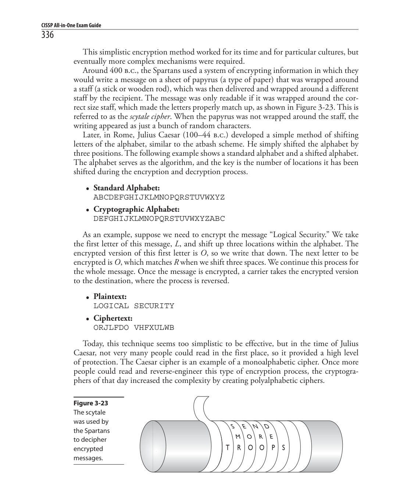
Figure 3-23
ROT13
A more recent encryption method used in the 1980s,ROT13was really the same thing as a Caesar cipher. Instead of shifting 3 spaces in the alphabet, the encryption process shifted 13 spaces. It was not really used to protect data because our society could already easily handle this task. Instead, it was used in online forums (or bulletin boards) when “inappropriate” material, as in nasty jokes, were shared among users. The idea was that if you were interested in reading something potentially “offensive” you could simply use the shift-13 approach and read the material. Other people who did not want to view it would not be offended, because they would just leave the text and not decrypt it.
In the 16th century in France, Blaise de Vigenère developed a polyalphabetic substitution cipher for Henry III. This was based on the Caesar cipher, but it increased the difficulty of the encryption and decryption process. As shown in Figure 3-24, we have a message that needs to be encrypted, which is SYSTEM SECURITY AND CONTROL. We have a key with the value of SECURITY. We also have a Vigenère table, or algorithm, which is really the Caesar cipher on steroids. Whereas the Caesar cipher used a 1-shift alphabet (letters were shifted up three places), the Vigenère cipher has 27 shift alphabets and the letters are shifted up only one place.
Plaintext is the readable version of a message. After an encryption process, the resulting text is referred to asciphertext.
So, looking at the example in Figure 3-24, we take the first value of the key,S, and starting with the first alphabet in our algorithm, trace over to theScolumn. Then we look at the first value of plaintext that needs to be encrypted, which isS, and go down to theSrow. We follow the column and row and see that they intersect on the valueK. That is the first encrypted value of our message, so we write downK. Then we go to the next value in our key, which isE, and the next value of plaintext, which isY. We see that theEcolumn and theYrow intersect at the cell with the value ofC. This is our second encrypted value, so we write that down. We continue this process for the whole message (notice that the key repeats itself, since the message is longer than the key). The resulting ciphertext is the encrypted form that is sent to the destination. The destination must have the same algorithm (Vigenère table) and the same key (SECURITY) to properly reverse the process to obtain a meaningful message. The evolution of cryptography continued as countries refined it using new methods, tools, and practices throughout the Middle Ages. By the late 1800s, cryptography was commonly used in the methods of communication between military factions. During World War II, encryption devices were used for tactical communication, which drastically improved with the mechanical and electromechanical technology that provided the world with telegraphic and radio communication. The rotor cipher machine,
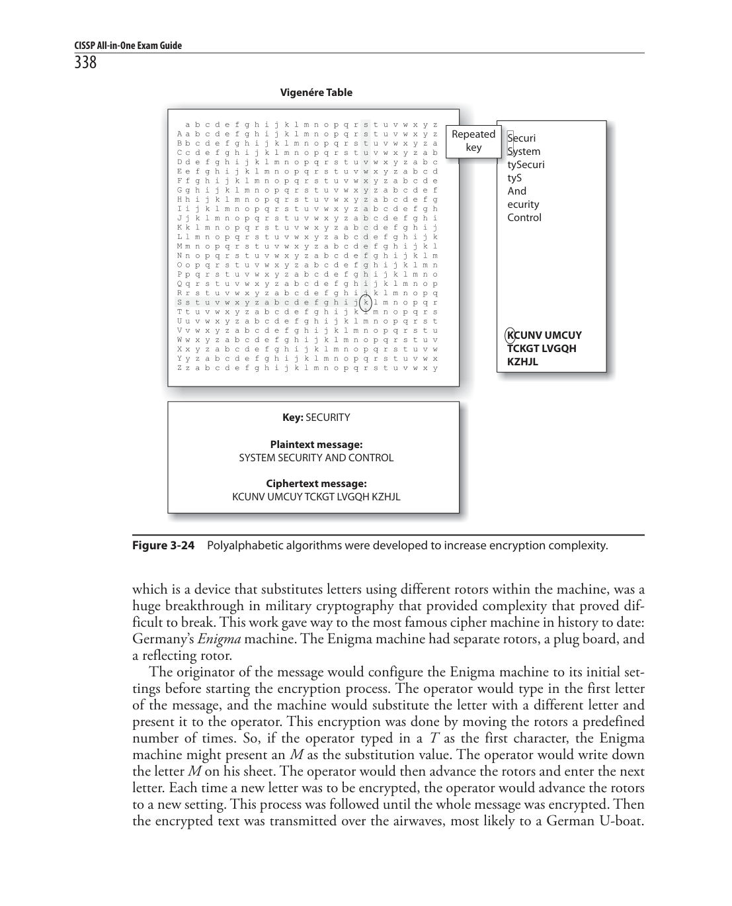
Figure 3-24Polyalphabetic algorithms were developed to increase encryption complexity.
which is a device that substitutes letters using different rotors within the machine, was a huge breakthrough in military cryptography that provided complexity that proved difficult to break. This work gave way to the most famous cipher machine in history to date: Germany’sEnigmamachine. The Enigma machine had separate rotors, a plug board, and a reflecting rotor. The originator of the message would configure the Enigma machine to its initial settings before starting the encryption process. The operator would type in the first letter of the message, and the machine would substitute the letter with a different letter and present it to the operator. This encryption was done by moving the rotors a predefined number of times. So, if the operator typed in aTas the first character, the Enigma machine might present anMas the substitution value. The operator would write down the letterMon his sheet. The operator would then advance the rotors and enter the next letter. Each time a new letter was to be encrypted, the operator would advance the rotors to a new setting. This process was followed until the whole message was encrypted. Then the encrypted text was transmitted over the airwaves, most likely to a German U-boat.
The chosen substitution for each letter was dependent upon the rotor setting, so the crucial and secret part of this process (the key) was the initial setting and how the operators advanced the rotors when encrypting and decrypting a message. The operators at each end needed to know this sequence of increments to advance each rotor in order to enable the German military units to properly communicate. Although the mechanisms of the Enigma were complicated for the time, a team of Polish cryptographers broke its code and gave Britain insight into Germany’s attack plans and military movement. It is said that breaking this encryption mechanism shortened World War II by two years. After the war, details about the Enigma machine were published—one of the machines is exhibited at the Smithsonian Institute. Cryptography has a deep, rich history. Mary, Queen of Scots, lost her life in the 16th century when an encrypted message she sent was intercepted. During the Revolutionary War, Benedict Arnold used a codebook cipher to exchange information on troop movement and strategic military advancements. Militaries have always played a leading role in using cryptography to encode information and to attempt to decrypt the enemy’s encrypted information. William Frederick Friedman, who publishedThe Index of Coincidence and Its Applications in Cryptographyin 1920, is called the “Father of Modern Cryptography” and broke many messages intercepted during World War II. Encryption has been used by many governments and militaries and has contributed to great victory for some because it enabled them to execute covert maneuvers in secrecy. It has also contributed to great defeat for others, when their cryptosystems were discovered and deciphered. When computers were invented, the possibilities for encryption methods and devices expanded exponentially and cryptography efforts increased dramatically. This era brought unprecedented opportunity for cryptographic designers to develop new encryption techniques. A well-known and successful project wasLucifer, which was developed at IBM. Lucifer introduced complex mathematical equations and functions that were later adopted and modified by the U.S. National Security Agency (NSA) to establish the U.S. Data Encryption Standard (DES) in 1976, a federal government standard. DES was used worldwide for financial and other transactions, and was embedded into numerous commercial applications. Though it is no longer considered secure, it lives on as Triple DES, which uses three rounds of DES encryption and is still in use today. A majority of the protocols developed at the dawn of the computing age have been upgraded to include cryptography and to add necessary layers of protection. Encryption is used in hardware devices and in software to protect data, banking transactions, corporate extranet transmissions, e-mail messages, web transactions, wireless communications, the storage of confidential information, faxes, and phone calls. The code breakers and cryptanalysis efforts and the amazing number-crunching capabilities of the microprocessors hitting the market each year have quickened the evolution of cryptography. As the bad guys get smarter and more resourceful, the good guys must increase their efforts and strategy.Cryptanalysisis the science of studying and breaking the secrecy of encryption processes, compromising authentication schemes, and reverseengineering algorithms and keys. Cryptanalysis is an important piece of cryptography and cryptology. When carried out by the “good guys,” cryptanalysis is intended to identify flaws and weaknesses so developers can go back to the drawing board and improve
the components. It is also performed by curious and motivated hackers to identify the same types of flaws, but with the goal of obtaining the encryption key for unauthorized access to confidential information.
Cryptanalysis is a very sophisticated science that encompasses a wide variety of tests and attacks. We will cover these types of attacks later in this chapter. Cryptology, on the other hand, is the study of cryptanalysis and cryptography. Different types of cryptography have been used throughout civilization, but today cryptography is deeply rooted in every part of our communications and computing world. Automated information systems and cryptography play a huge role in the effectiveness of militaries, the functionality of governments, and the economics of private businesses. As our dependency upon technology increases, so does our dependency upon cryptography, because secrets will always need to be kept.
Cryptography Definitions and Concepts
Encryption is a method of transforming readable data, calledplaintext, into a form that appears to be random and unreadable, which is calledciphertext. Plaintext is in a form that can be understood either by a person (a document) or by a computer (executable code). Once it is transformed into ciphertext, neither human nor machine can properly process it until it is decrypted. This enables the transmission of confidential information over insecure channels without unauthorized disclosure. When data is stored on a computer, it is usually protected by logical and physical access controls. When this same sensitive information is sent over a network, it can no longer take advantage of these controls and is in a much more vulnerable state.
A system or product that provides encryption and decryption is referred to as acryptosystemand can be created through hardware components or program code in an application. The cryptosystem uses an encryption algorithm (which determines how simple or complex the encryption process will be), keys, and the necessary software components and protocols. Most algorithms are complex mathematical formulas that are applied in a specific sequence to the plaintext. Most encryption methods use a secret value called a key (usually a long string of bits), which works with the algorithm to encrypt and decrypt the text. Thealgorithm, the set of rules also known as thecipher, dictates how enciphering and deciphering take place. Many of the mathematical algorithms used in computer systems today are publicly known and are not the secret part of the encryption process. If the internal mechanisms of the algorithm are not a secret, then something must be. The secret piece of using a well-known encryption algorithm is the key. A common analogy used to illustrate this point is the use of locks you would purchase from your local hardware store. Let’s say 20 people bought the same brand of lock. Just because these people
share the same type and brand of lock does not mean they can now unlock each other’s doors and gain access to their private possessions. Instead, each lock comes with its own key, and that one key can only open that one specific lock. In encryption, thekey(cryptovariable) is a value that comprises a large sequence of random bits. Is it just any random number of bits crammed together? Not really. An algorithm contains akeyspace, which is a range of values that can be used to construct a key. When the algorithm needs to generate a new key, it uses random values from this keyspace. The larger the keyspace, the more available values that can be used to represent different keys—and the more random the keys are, the harder it is for intruders to figure them out. For example, if an algorithm allows a key length of 2 bits, the keyspace for that algorithm would be 4, which indicates the total number of different keys that would be possible. (Remember that we are working in binary and that 2equals 4.) That would not be a very large keyspace, and certainly it would not take an attacker very long to find the correct key that was used. A large keyspace allows for more possible keys. (Today, we are commonly using key sizes of 128, 256, 512, or even 1,024 bits and larger.) So a key size of 512 bits would provide 2possible combinations (the keyspace). The encryption algorithm should use the entire keyspace and choose the values to make up the keys as randomly as possible. If a smaller keyspace were used, there would be fewer values to choose from when generating a key, as shown in Figure 3-25. This would increase an attacker’s chances of figuring out the key value and deciphering the protected information.
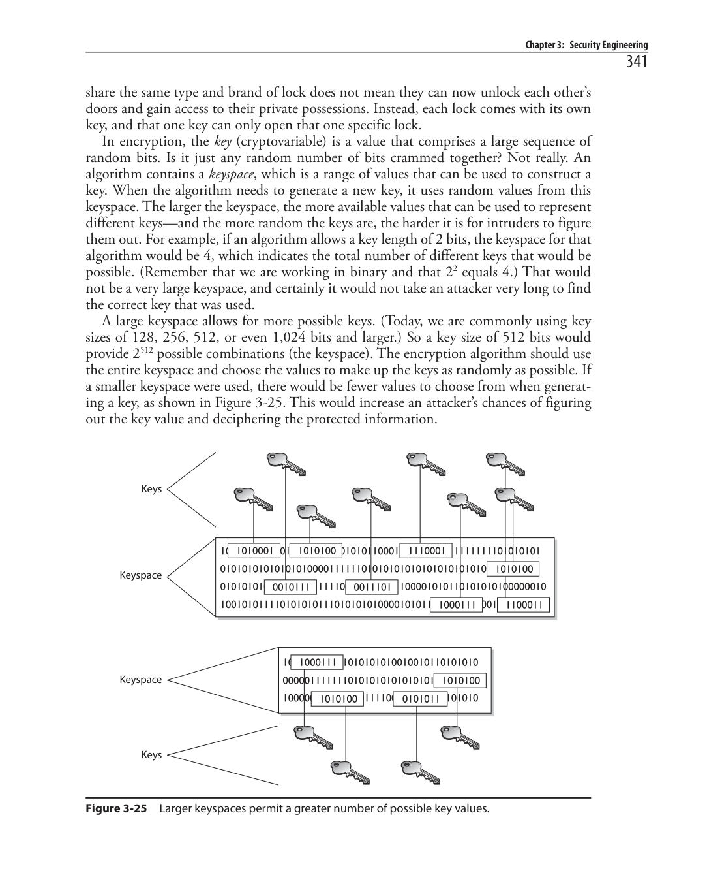
Figure 3-25Larger keyspaces permit a greater number of possible key values.
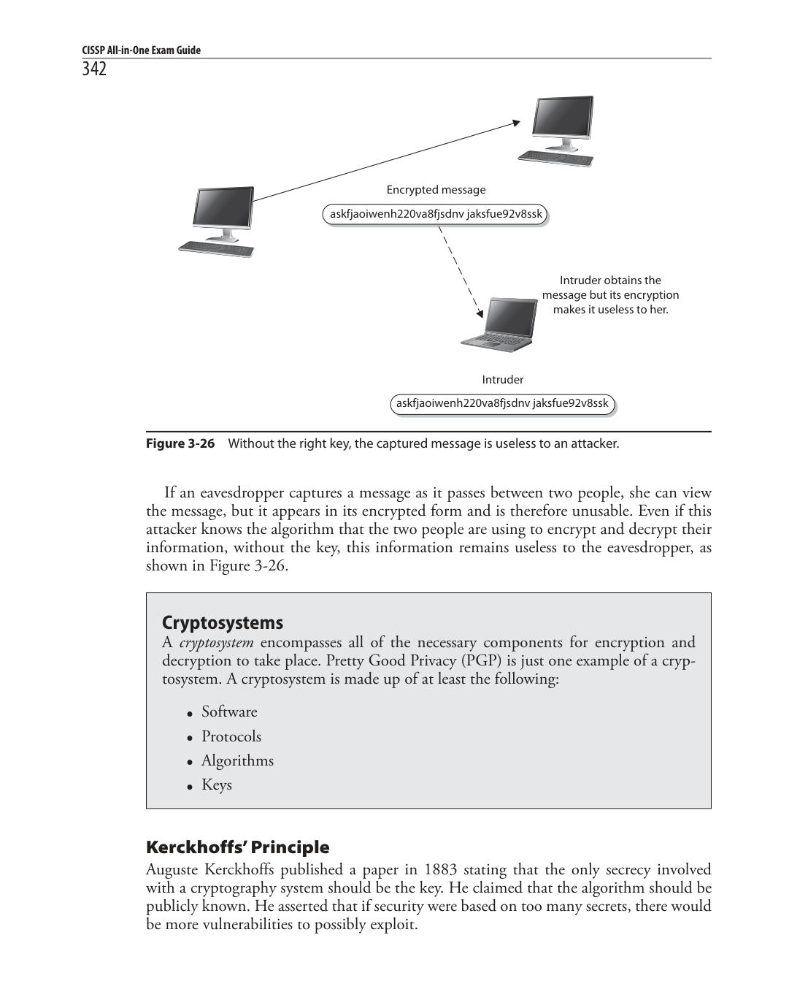
Figure 3-26Without the right key, the captured message is useless to an attacker.
If an eavesdropper captures a message as it passes between two people, she can view the message, but it appears in its encrypted form and is therefore unusable. Even if this attacker knows the algorithm that the two people are using to encrypt and decrypt their information, without the key, this information remains useless to the eavesdropper, as shown in Figure 3-26.
Cryptosystems
Acryptosystemencompasses all of the necessary components for encryption and decryption to take place. Pretty Good Privacy (PGP) is just one example of a cryptosystem. A cryptosystem is made up of at least the following:
Software
- Protocols
- Algorithms
- Keys
Kerckhoffs’ Principle
Auguste Kerckhoffs published a paper in 1883 stating that the only secrecy involved with a cryptography system should be the key. He claimed that the algorithm should be publicly known. He asserted that if security were based on too many secrets, there would be more vulnerabilities to possibly exploit.
So, why do we care what some guy said over 120 years ago? Because this debate is still going on. Cryptographers in certain sectors agree withKerckhoffs’ principle, because making an algorithm publicly available means that many more people can view the source code, test it, and uncover any type of flaws or weaknesses. It is the attitude of “many heads are better than one.” Once someone uncovers some type of flaw, the developer can fix the issue and provide society with a much stronger algorithm. But not everyone agrees with this philosophy. Governments around the world create their own algorithms that are not released to the public. Their stance is that if a smaller number of people know how the algorithm actually works, then a smaller number of people will know how to possibly break it. Cryptographers in the private sector do not agree with this practice and do not commonly trust algorithms they cannot examine. It is basically the same as the open-source versus compiled software debate that is in full force today.
The Strength of the Cryptosystem
Thestrengthof an encryption method comes from the algorithm, the secrecy of the key, the length of the key, the initialization vectors, and how they all work together within the cryptosystem. When strength is discussed in encryption, it refers to how hard it is to figure out the algorithm or key, whichever is not made public. Attempts to break a cryptosystem usually involve processing an amazing number of possible values in the hopes of finding the one value (key) that can be used to decrypt a specific message. The strength of an encryption method correlates to the amount of necessary processing power, resources, and time required to break the cryptosystem or to figure out the value of the key. Breaking a cryptosystem can be accomplished by a brute-force attack, which means trying every possible key value until the resulting plaintext is meaningful. Depending on the algorithm and length of the key, this can be an easy task or one that is close to impossible. If a key can be broken with a Pentium Core i5 processor in three hours, the cipher is not strong at all. If the key can only be broken with the use of a thousand multiprocessing systems over 1.2 million years, then it is pretty darn strong. The introduction of multicore processors has really increased the threat of brute-force attacks.
Attacks are measured in the number of instructions a millioninstruction-per-second (MIPS) system can execute within a year’s time.
The goal when designing an encryption method is to make compromising it too expensive or too time consuming. Another name for cryptography strength iswork factor, which is an estimate of the effort and resources it would take an attacker to penetrate a cryptosystem. How strong a protection mechanism is required depends on the sensitivity of the data being protected. It is not necessary to encrypt information about a friend’s Saturday barbeque with a top-secret encryption algorithm. Conversely, it is not a good idea to send intercepted spy information using PGP. Each type of encryption mechanism has its place and purpose.
Even if the algorithm is very complex and thorough, other issues within encryption can weaken encryption methods. Because the key is usually the secret value needed to actually encrypt and decrypt messages, improper protection of the key can weaken the encryption. Even if a user employs an algorithm that has all the requirements for strong encryption, including a large keyspace and a large and random key value, if she shares her key with others, the strength of the algorithm becomes almost irrelevant. Important elements of encryption are to use an algorithm without flaws, use a large key size, use all possible values within the keyspace selected as randomly as possible, and protect the actual key. If one element is weak, it could be the link that dooms the whole process.
Services of Cryptosystems
Cryptosystems can provide the following services:
ConfidentialityRenders the information unintelligible except by authorized
- entities.
IntegrityData has not been altered in an unauthorized manner since it was
- created, transmitted, or stored.
AuthenticationVerifies the identity of the user or system that created the
- information.
AuthorizationUpon proving identity, the individual is then provided with the
- key or password that will allow access to some resource.
NonrepudiationEnsures that the sender cannot deny sending the message.
- As an example of how these services work, suppose your boss sends you a message telling you that you will be receiving a raise that doubles your salary. The message is encrypted, so you can be sure it really came from your boss (authenticity), that someone did not alter it before it arrived at your computer (integrity), that no one else was able to read it as it traveled over the network (confidentiality), and that your boss cannot deny sending it later when he comes to his senses (nonrepudiation). Different types of messages and transactions require higher or lower degrees of one or all of the services that cryptography methods can supply. Military and intelligence agencies are very concerned about keeping information confidential, so they would choose encryption mechanisms that provide a high degree of secrecy. Financial institutions care about confidentiality, but they also care about the integrity of the data being transmitted, so the encryption mechanism they would choose may differ from the military’s encryption methods. If messages were accepted that had a misplaced decimal point or zero, the ramifications could be far reaching in the financial world. Legal agencies may care most about the authenticity of the messages they receive. If information received ever needed to be presented in a court of law, its authenticity would certainly be questioned; therefore, the encryption method used must ensure authenticity, which confirms who sent the information.
If David sends a message and then later claims he did not send it, this is an act of repudiation. When a cryptography mechanism provides nonrepudiation, the sender cannot later deny he sent the message (well, he can try to deny it, but the cryptosystem proves otherwise). It’s a way of keeping the sender honest. The types and uses of cryptography have increased over the years. At one time, cryptography was mainly used to keep secrets secret (confidentiality), but today we use cryptography to ensure the integrity of data, to authenticate messages, to confirm that a message was received, to provide access control, and much more. In this chapter we cover the different types of cryptography that provide these different types of functionality, along with any related security issues.
One-Time Pad
Aone-time padis a perfect encryption scheme because it is considered unbreakable if implemented properly. It was invented by Gilbert Vernam in 1917, so sometimes it is referred to as the Vernam cipher. This cipher does not use shift alphabets, as do the Caesar and Vigenère ciphers discussed earlier, but instead uses a pad made up of random values, as shown in Figure 3-27. Our plaintext message that needs to be encrypted has been converted into bits, and our one-time pad is made up of random bits. This encryption process uses a binary mathematic function called exclusive-OR, usually abbreviated as XOR. XOR is an operation that is applied to 2 bits and is a function commonly used in binary mathematics and encryption methods. When combining the bits, if both values are the same, the result is 0 (1 XOR 1 = 0). If the bits are different from each other, the result is 1 (1 XOR 0 = 1). For example: So in our example, the first bit of the message is XORed to the first bit of the onetime pad, which results in the ciphertext value 1. The second bit of the message is XORed with the second bit of the pad, which results in the value 0. This process continues until the whole message is encrypted. The result is the encrypted message that is sent to the receiver. In Figure 3-27, we also see that the receiver must have the same one-time pad to decrypt the message by reversing the process. The receiver takes the first bit of the encrypted message and XORs it with the first bit of the pad. This results in the plaintext value. The receiver continues this process for the whole encrypted message until the entire message is decrypted.
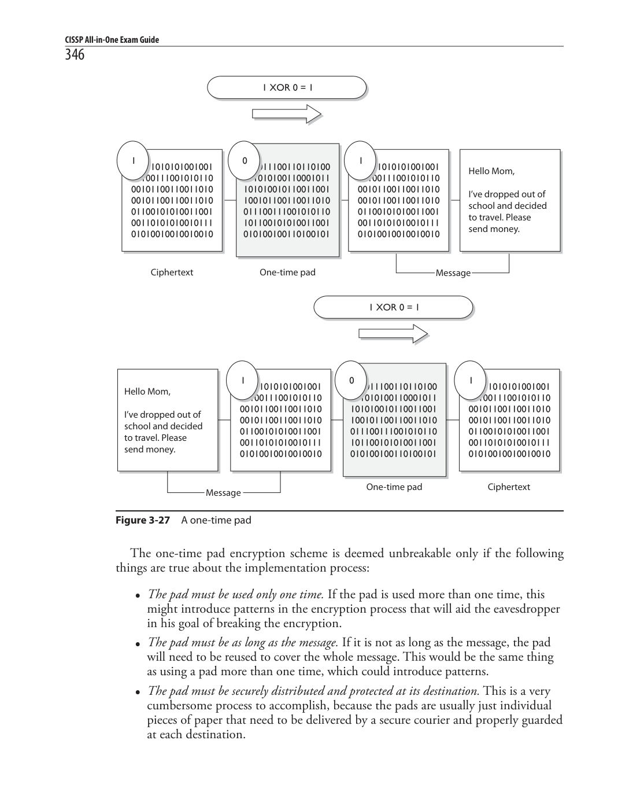
Figure 3-27A one-time pad
The one-time pad encryption scheme is deemed unbreakable only if the following things are true about the implementation process:
The pad must be used only one time.If the pad is used more than one time, this
- might introduce patterns in the encryption process that will aid the eavesdropper in his goal of breaking the encryption.
The pad must be as long as the message.If it is not as long as the message, the pad
- will need to be reused to cover the whole message. This would be the same thing as using a pad more than one time, which could introduce patterns.
The pad must be securely distributed and protected at its destination.This is a very
- cumbersome process to accomplish, because the pads are usually just individual pieces of paper that need to be delivered by a secure courier and properly guarded at each destination.
The pad must be made up of truly random values.This may not seem like a
- difficult task, but even our computer systems today do not have truly random number generators; rather, they have pseudorandom number generators.
Anumber generatoris used to create a stream of random values and must be seeded by an initial value. This piece of software obtains its seeding value from some component within the computer system (time, CPU cycles, and so on). Although a computer system is complex, it is a predictable environment, so if the seeding value is predictable in any way, the resulting values created are not truly random—butpseudorandom. Although the one-time pad approach to encryption can provide a very high degree of security, it is impractical in most situations because of all of its different requirements. Each possible pair of entities that might want to communicate in this fashion must receive, in a secure fashion, a pad that is as long as, or longer than, the actual message. This type of key management can be overwhelming and may require more overhead than it is worth. The distribution of the pad can be challenging, and the sender and receiver must be perfectly synchronized so each is using the same pad. One-time pads have been used throughout history to protect different types of sensitive data. Today, they are still in place for many types of militaries as a backup encryption option if current encryption processes (which require computers and a power source) are unavailable for reasons of war or attacks.
One-Time Pad Requirements
For a one-time pad encryption scheme to be considered unbreakable, each pad in the scheme must be
Made up of truly random values
- Used only one time
- Securely distributed to its destination
- Secured at sender’s and receiver’s sites
- At least as long as the message
Running and Concealment Ciphers
Two spy-novel-type ciphers are the running key cipher and the concealment cipher. The running key ciphercould use a key that does not require an electronic algorithm and bit alterations, but cleverly uses components in the physical world around you. For instance, the algorithm could be a set of books agreed upon by the sender and receiver.The key in this type of cipher could be a book page, line number, and column count. If you get a message
from your supersecret spy buddy and the message reads “149l6c7.299l3c7.911l5c8,” this could mean for you to look at the 1st book in your predetermined series of books, the 49th page, 6th line down the page, and the 7th column. So you write down the letter in that column, which ish.The second set of numbers starts with 2, so you go to the 2nd book, 99th page, 3rd line down, and then to the 7th column, which iso. The last letter you get from the 9th book, 11th page, 5th line, 8th column, which ist. So now you have come up with your important secret message, which ishot. Running key ciphers can be used in different and more complex ways, but this simple example illustrates the point. Aconcealment cipheris a message within a message. If your supersecret spy buddy and you decide your key value is every third word, then when you get a message from him, you will pick out every third word and write it down. Suppose he sends you a message that reads, “The saying, ‘The time is right’ is not cow language, so is now a dead subject.” Because your key is every third word, you come up with “The right cow is dead.”
A concealment cipher, also called a null cipher, is a type of steganography method. Steganography is described later in this chapter.
No matter which of these two types of cipher is used, the roles of the algorithm and key are the same, even if they are not mathematical equations. In the running key cipher, the algorithm may be a predefined set of books. The key indicates the book, page, line, and word within that line. In substitution ciphers, the algorithm dictates that substitution will take place using a predefined alphabet or sequence of characters, and the key indicates that each character will be replaced with another character, as in the third character that follows it in that sequence of characters. In actual mathematical structures, the algorithm is a set of mathematical functions that will be performed on the message, and the key can indicate in which order these functions take place. So even if an attacker knows the algorithm, and we have to assume he does, if he does not know the key, the message is still useless to him.
Steganography
Steganographyis a method of hiding data in another media type so the very existence of the data is concealed. Common steps are illustrated in Figure 3-28. Only the sender and receiver are supposed to be able to see the message because it is secretly hidden in a graphic, Wave file, document, or other type of media. The message is often, but not necessarily, encrypted, just hidden. Encrypted messages can draw attention because it tells the bad guy, “This is something sensitive.” A message hidden in a picture of your grandmother would not attract this type of attention, even though the same secret message can be embedded into this image. Steganography is a type of security through obscurity. Steganography includes the concealment of information within computer files. In digital steganography, electronic communications may include steganographic coding inside of a document file, image file, program, or protocol. Media files are ideal for steganographic transmission because of their large size. As a simple example, a sender might
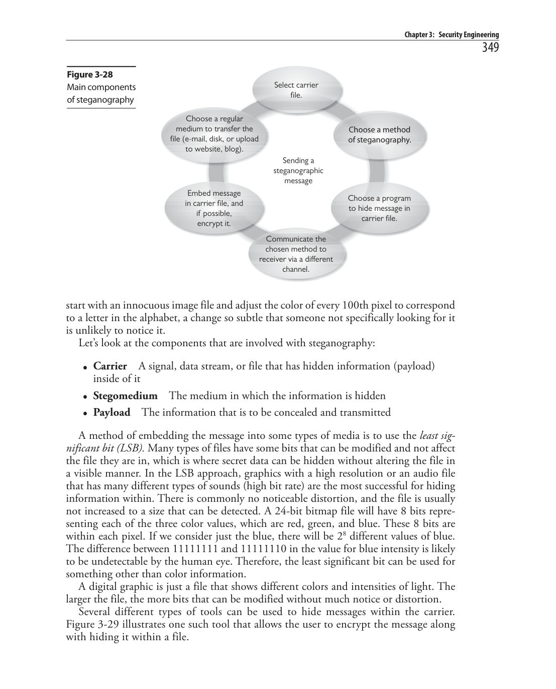
Figure 3-28
start with an innocuous image file and adjust the color of every 100th pixel to correspond to a letter in the alphabet, a change so subtle that someone not specifically looking for it is unlikely to notice it. Let’s look at the components that are involved with steganography:
CarrierA signal, data stream, or file that has hidden information (payload)
- inside of it
StegomediumThe medium in which the information is hidden
- PayloadThe information that is to be concealed and transmitted
- A method of embedding the message into some types of media is to use theleast significant bit(LSB).Many types of files have some bits that can be modified and not affect the file they are in, which is where secret data can be hidden without altering the file in a visible manner. In the LSB approach, graphics with a high resolution or an audio file that has many different types of sounds (high bit rate) are the most successful for hiding information within. There is commonly no noticeable distortion, and the file is usually not increased to a size that can be detected. A 24-bit bitmap file will have 8 bits representing each of the three color values, which are red, green, and blue. These 8 bits are within each pixel. If we consider just the blue, there will be 2different values of blue. The difference between 11111111 and 11111110 in the value for blue intensity is likely to be undetectable by the human eye. Therefore, the least significant bit can be used for something other than color information. A digital graphic is just a file that shows different colors and intensities of light. The larger the file, the more bits that can be modified without much notice or distortion. Several different types of tools can be used to hide messages within the carrier. Figure 3-29 illustrates one such tool that allows the user to encrypt the message along with hiding it within a file.
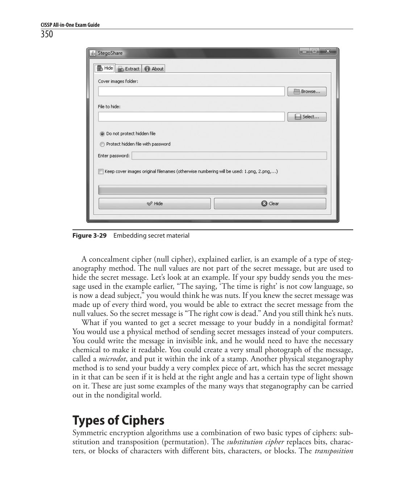
Figure 3-29Embedding secret material
A concealment cipher (null cipher), explained earlier, is an example of a type of steganography method. The null values are not part of the secret message, but are used to hide the secret message. Let’s look at an example. If your spy buddy sends you the message used in the example earlier, “The saying, ‘The time is right’ is not cow language, so is now a dead subject,” you would think he was nuts. If you knew the secret message was made up of every third word, you would be able to extract the secret message from the null values. So the secret message is “The right cow is dead.” And you still think he’s nuts. What if you wanted to get a secret message to your buddy in a nondigital format? You would use a physical method of sending secret messages instead of your computers. You could write the message in invisible ink, and he would need to have the necessary chemical to make it readable. You could create a very small photograph of the message, called amicrodot, and put it within the ink of a stamp. Another physical steganography method is to send your buddy a very complex piece of art, which has the secret message in it that can be seen if it is held at the right angle and has a certain type of light shown on it. These are just some examples of the many ways that steganography can be carried out in the nondigital world.
Types of Ciphers
Symmetric encryption algorithms use a combination of two basic types of ciphers: substitution and transposition (permutation). Thesubstitution cipherreplaces bits, characters, or blocks of characters with different bits, characters, or blocks. Thetransposition
cipherdoes not replace the original text with different text, but rather moves the original values around. It rearranges the bits, characters, or blocks of characters to hide the original meaning.
Substitution Ciphers
A substitution cipher uses a key to dictate how the substitution should be carried out. In theCaesar cipher, each letter is replaced with the letter three places beyond it in the alphabet. The algorithm is the alphabet, and the key is the instruction “shift up three.” As a simple example, if George uses the Caesar cipher with the English alphabet to encrypt the important message “meow,” the encrypted message would be “phrz.” Substitution is used in today’s symmetric algorithms, but it is extremely complex compared to this example, which is only meant to show you the concept of how a substitution cipher works in its most simplistic form.
Transposition Ciphers
In a transposition cipher, the values are scrambled, or put into a different order. The key determines the positions the values are moved to, as illustrated in Figure 3-30. This is a simplistic example of a transposition cipher and only shows one way of performing transposition. When implemented with complex mathematical functions, transpositions can become quite sophisticated and difficult to break. Symmetric algorithms employed today use both long sequences of complicated substitutions and transpositions on messages. The algorithm contains the possible ways that substitution and transposition processescantake place (represented in mathematical formulas). The key is used as
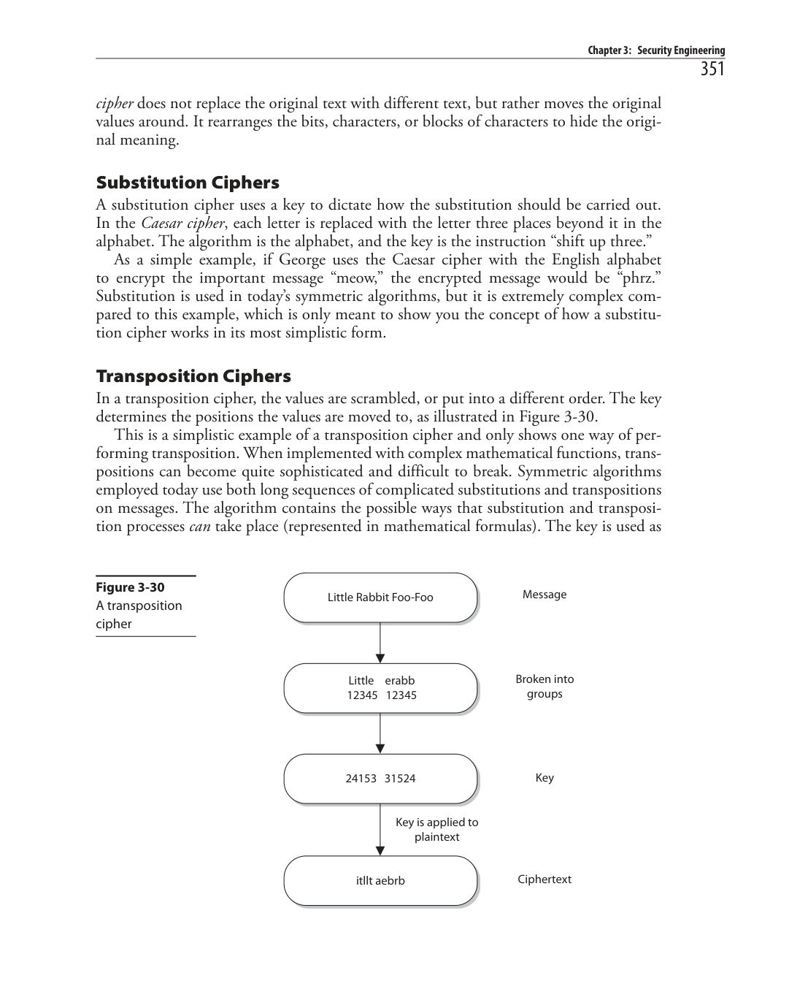
Figure 3-30
the instructions for the algorithm, dictating exactly how these processeswillhappen and in what order. To understand the relationship between an algorithm and a key, let’s look at Figure 3-31. Conceptually, an algorithm is made up of different boxes, each of which has a different set of mathematical formulas that dictate the substitution and transposition steps that will take place on the bits that enter the box. To encrypt our message, the bit values must go through these different boxes. If each of our messages goes through each of these different boxes in the same order with the same values, the eavesdropper will be able to easily reverse-engineer this process and uncover our plaintext message. To foil an eavesdropper, we use a key, which is a set of values that indicates which box should be used, in what order, and with what values. So if message A is encrypted with key 1, the key will make the message go through boxes 1, 6, 4, and then 5. When we need to encrypt message B, we will use key 2, which will make the message go through boxes 8, 3, 2, and then 9. It is the key that adds the randomness and the secrecy to the encryption process. Simple substitution and transposition ciphers are vulnerable to attacks that perform frequency analysis. In every language, some words and patterns are used more often than others. For instance, in the English language, the most commonly used letter is E. If Mike is carrying out frequency analysis on a message, he will look for the most frequently repeated pattern of 8 bits (which makes up a character). So, if Mike sees that there are 12 patterns of 8 bits and he knows thatEis the most commonly used letter in
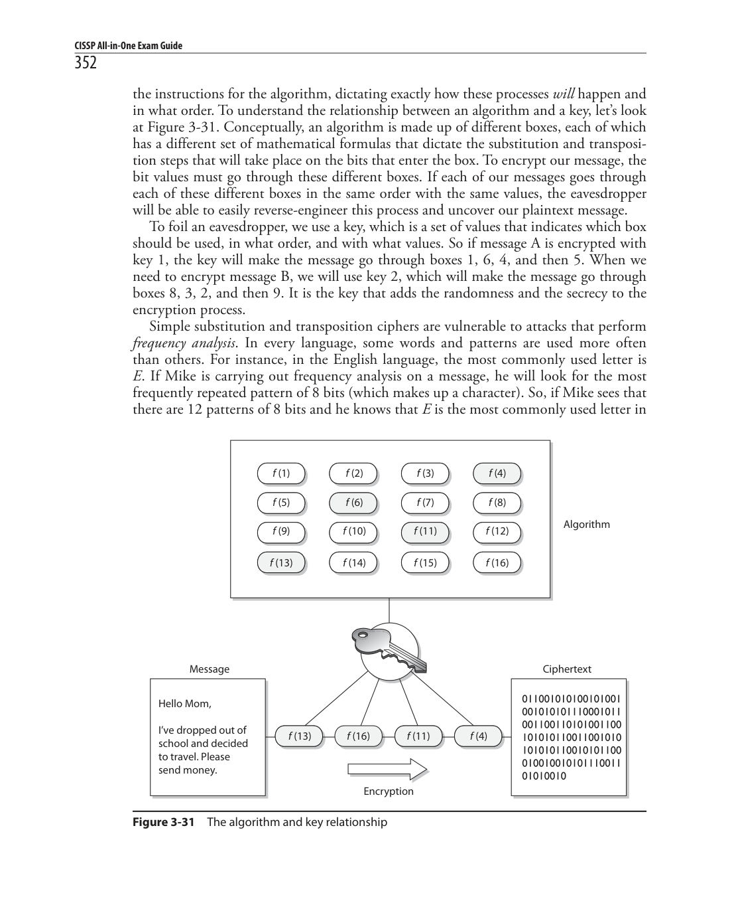
Figure 3-31The algorithm and key relationship
the language, he will replace these bits with this vowel. This allows him to gain a foothold on the process, which will allow him to reverse-engineer the rest of the message. Today’s symmetric algorithms use substitution and transposition methods in their encryption processes, but the mathematics used are (or should be) too complex to allow for simplistic frequency-analysis attacks to be successful.
Key Derivation Functions
For complex keys to be generated, a master key is commonly created, and then symmetric keys are generated from it. For example, if an application is responsible for creating a session key for each subject that requests one, it should not be giving out the same instance of that one key. Different subjects need to have different symmetric keys to ensure that the window for the adversary to capture and uncover that key is smaller than if the same key were to be used over and over again. When two or more keys are created from a master key, they are calledsubkeys. Key Derivation Functions (KDFs)are used to generate keys that are made up of random values. Different values can be used independently or together as random key material. The algorithm is created to use specific hash, password, and/or salt values, which will go through a certain number of rounds of mathematical functions dictated by the algorithm. The more rounds that this keying material goes through, the more assurance and security for the cryptosystem overall. It is important to remember that the algorithm stays static and the randomness provided by cryptography is mainly by means of the keying material.
Methods of Encryption
Although there can be several pieces to an encryption process, the two main pieces are the algorithms and the keys. As stated earlier, algorithms used in computer systems are complex mathematical formulas that dictate the rules of how the plaintext will be turned into ciphertext. A key is a string of random bits that will be used by the algorithm to add to the randomness of the encryption process. For two entities to be able to communicate via encryption, they must use the same algorithm and, many times, the same key. In some encryption technologies, the receiver and the sender use the same key, and in other encryption technologies, they must use different but related keys for encryption and decryption purposes. The following sections explain the differences between these two types of encryption methods.
Symmetric vs. Asymmetric Algorithms
Cryptography algorithms are eithersymmetric algorithms, which use symmetric keys (also called secret keys), orasymmetric algorithms, which use asymmetric keys (also called public and private keys). As if encryption were not complicated enough, the terms used to describe the key types only make it worse. Just pay close attention and you will get through this fine.
Symmetric Cryptography
In a cryptosystem that uses symmetric cryptography, the sender and receiver use two instances of the same key for encryption and decryption, as shown in Figure 3-32. So the key has dual functionality, in that it can carry out both encryption and decryption processes. Symmetric keys are also calledsecretkeys, because this type of encryption relies on each user to keep the key a secret and properly protected. If an intruder were to get this key, they could decrypt any intercepted message encrypted with it. Each pair of users who want to exchange data using symmetric key encryption must have two instances of the same key. This means that if Dan and Iqqi want to communicate, both need to obtain a copy of the same key. If Dan also wants to communicate using symmetric encryption with Norm and Dave, he needs to have three separate keys, one for each friend. This might not sound like a big deal until Dan realizes that he may communicate with hundreds of people over a period of several months, and keeping track and using the correct key that corresponds to each specific receiver can become a daunting task. If 10 people needed to communicate securely with each other using symmetric keys, then 45 keys would need to be kept track of. If 100 people were going to communicate, then 4,950 keys would be involved. The equation used to calculate the number of symmetric keys needed is
N(N – 1)/2 = number of keys
When using symmetric algorithms, the sender and receiver use the same key for encryption and decryption functions. The security of the symmetric encryption method is completely dependent on how well users protect the key. This should raise red flags for you if you have ever had to depend on a whole staff of people to keep a secret. If a key is compromised, then all messages encrypted with that key can be decrypted and read by an intruder. This is complicated further by how symmetric keys are actually shared and
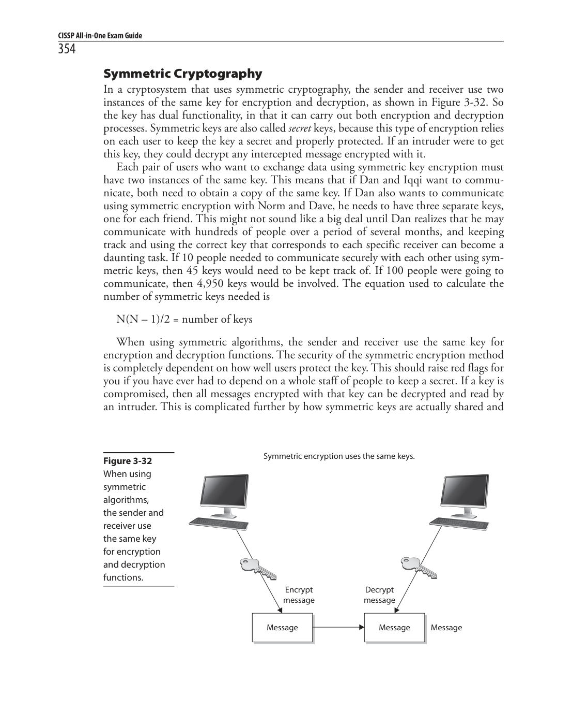
Figure 3-32
updated when necessary. If Dan wants to communicate with Norm for the first time, Dan has to figure out how to get the right key to Norm securely. It is not safe to just send it in an e-mail message, because the key is not protected and can be easily intercepted and used by attackers. Thus, Dan must get the key to Norm through anout-of-band method. Dan can save the key on a thumb drive and walk over to Norm’s desk, or have a secure courier deliver it to Norm. This is a huge hassle, and each method is very clumsy and insecure. Because both users employ the same key to encrypt and decrypt messages, symmetric cryptosystems can provide confidentiality, but they cannot provide authentication or nonrepudiation. There is no way to prove through cryptography who actually sent a message if two people are using the same key. If symmetric cryptosystems have so many problems and flaws, why use them at all? Because they are very fast and can be hard to break. Compared with asymmetric systems, symmetric algorithms scream in speed. They can encrypt and decrypt relatively quickly large amounts of data that would take an unacceptable amount of time to encrypt and decrypt with an asymmetric algorithm. It is also difficult to uncover data encrypted with a symmetric algorithm if a large key size is used. For many of our applications that require encryption, symmetric key cryptography is the only option. The following list outlines the strengths and weakness of symmetric key systems:
Strengths: Much faster (less computationally intensive) than asymmetric systems.
- Hard to break if using a large key size.
- Weaknesses:
Requires a secure mechanism to deliver keys properly.
- Each pair of users needs a unique key, so as the number of individuals increases,
- so does the number of keys, possibly making key management overwhelming.
Provides confidentiality but not authenticity or nonrepudiation.
- The following are examples of symmetric algorithms, which will be explained later in the “Block and Stream Ciphers” section:
Data Encryption Standard (DES)
- Triple-DES (3DES)
- Blowfish
- International Data Encryption Algorithm (IDEA)
- RC4, RC5, and RC6
- Advanced Encryption Standard (AES)
Asymmetric Cryptography
In symmetric key cryptography, a single secret key is used between entities, whereas in public key systems, each entity has different keys, orasymmetric keys. The two different asymmetric keys are mathematically related. If a message is encrypted by one key, the other key is required in order to decrypt the message. In a public key system, the pair of keys is made up of one public key and one private key. Thepublic keycan be known to everyone, and theprivate keymust be known and used only by the owner. Many times, public keys are listed in directories and databases of e-mail addresses so they are available to anyone who wants to use these keys to encrypt or decrypt data when communicating with a particular person. Figure 3-33 illustrates the use of the different keys. The public and private keys of an asymmetric cryptosystem are mathematically related, but if someone gets another person’s public key, she should not be able to figure out the corresponding private key. This means that if an eavesdropper gets a copy of Bob’s public key, she can’t employ some mathematical magic and find out Bob’s private key. But if someone gets Bob’s private key, then there is big trouble—no one other than the owner should have access to a private key. If Bob encrypts data with his private key, the receiver must have a copy of Bob’s public key to decrypt it. The receiver can decrypt Bob’s message and decide to reply to Bob in an encrypted form. All the receiver needs to do is encrypt her reply with Bob’s public key, and then Bob can decrypt the message with his private key. It is not possible to encrypt and decrypt using the same key when using an asymmetric key encryption technology because, although mathematically related, the two keys are not the same key, as they are in symmetric cryptography. Bob can encrypt data with his private key, and the receiver can then decrypt it with Bob’s public key. By decrypting the message with Bob’s public key, the receiver can be sure the message really came from Bob. A message can be decrypted with a public key only if the message was encrypted with the corresponding private key. This provides authentication, because Bob is the only one who is supposed
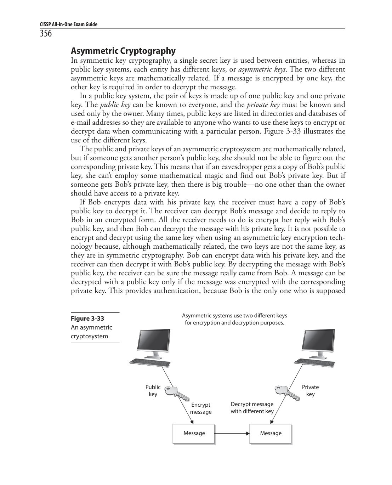
Figure 3-33
to have his private key. If the receiver wants to make sure Bob is the only one who can read her reply, she will encrypt the response with his public key. Only Bob will be able to decrypt the message because he is the only one who has the necessary private key. The receiver can also choose to encrypt data with her private key instead of using Bob’s public key. Why would she do that? Authentication—she wants Bob to know that the message came from her and no one else. If she encrypted the data with Bob’s public key, it does not provide authenticity because anyone can get Bob’s public key. If she uses her private key to encrypt the data, then Bob can be sure the message came from her and no one else. Symmetric keys do not provide authenticity, because the same key is used on both ends. Using one of the secret keys does not ensure the message originated from a specific individual. If confidentiality is the most important security service to a sender, she would encrypt the file with the receiver’s public key. This is called asecure message formatbecause it can only be decrypted by the person who has the corresponding private key. If authentication is the most important security service to the sender, then she would encrypt the data with her private key. This provides assurance to the receiver that the only person who could have encrypted the data is the individual who has possession of that private key. If the sender encrypted the data with the receiver’s public key, authentication is not provided because this public key is available to anyone. Encrypting data with the sender’s private key is called anopen message format because anyone with a copy of the corresponding public key can decrypt the message. Confidentiality is not ensured. Each key type can be used to encrypt and decrypt, so do not get confused and think the public key is only for encryption and the private key is only for decryption. They both have the capability to encrypt and decrypt data. However, if data is encrypted with a private key, it cannot be decrypted with a private key. If data is encrypted with a private key, it must be decrypted with the corresponding public key. An asymmetric algorithm works much more slowly than a symmetric algorithm, because symmetric algorithms carry out relatively simplistic mathematical functions on the bits during the encryption and decryption processes. They substitute and scramble (transposition) bits, which is not overly difficult or processor intensive. The reason it is hard to break this type of encryption is that the symmetric algorithms carry out this type of functionality over and over again. So a set of bits will go through a long series of being substituted and scrambled. Asymmetric algorithms are slower than symmetric algorithms because they use much more complex mathematics to carry out their functions, which requires more processing time. Although they are slower, asymmetric algorithms can provide authentication and nonrepudiation, depending on the type of algorithm being used. Asymmetric systems also provide for easier and more manageable key distribution than symmetric systems and do not have the scalability issues of symmetric systems. The reason for these differences is that, with asymmetric systems, you can send out your public key to all of the people you need to communicate with, instead of keeping track of a unique key for each one of them. The “Hybrid Encryption Methods” section later in this chapter shows how these two systems can be used together to get the best of both worlds.
Public key cryptography is asymmetric cryptography. The terms can be used interchangeably.
The following list outlines the strengths and weaknesses of asymmetric key algorithms:
Strengths: Better key distribution than symmetric systems.
- Better scalability than symmetric systems.
- Can provide authentication and nonrepudiation.
- Weaknesses:
Works much more slowly than symmetric systems.
- Mathematically intensive tasks.
- The following are examples of asymmetric key algorithms:
Rivest-Shamir-Adleman (RSA)
- Elliptic curve cryptosystem (ECC)
- Diffie-Hellman
- El Gamal
- Digital Signature Algorithm (DSA)
- These algorithms will be explained further in the “Types of Asymmetric Systems” section later in the chapter. Table 3-1 summarizes the differences between symmetric and asymmetric algorithms.
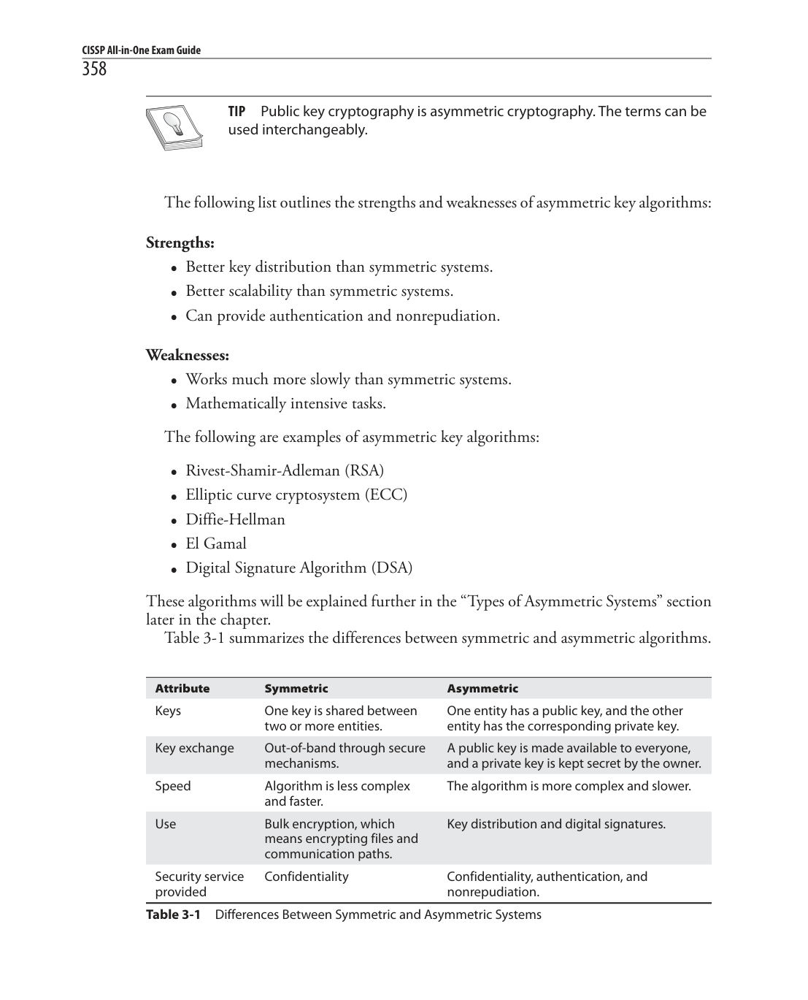
KeysOne key is shared betweenOne entity has a public key, and the other
Digital signatures will be discussed later in the section “DigitalSignatures.”
Block and Stream Ciphers
The two main types of symmetric algorithms are block ciphers, which work on blocks of bits, and stream ciphers, which work on one bit at a time.
Block Ciphers
When ablock cipheris used for encryption and decryption purposes, the message is divided into blocks of bits. These blocks are then put through mathematical functions, one block at a time. Suppose you need to encrypt a message you are sending to your mother and you are using a block cipher that uses 64 bits. Your message of 640 bits is chopped up into 10 individual blocks of 64 bits. Each block is put through a succession of mathematical formulas, and what you end up with is 10 blocks of encrypted text.
You send this encrypted message to your mother. She has to have the same block cipher and key, and those 10 ciphertext blocks go back through the algorithm in the reverse sequence and end up in your plaintext message. A strong cipher contains the right level of two main attributes: confusion and diffusion.Confusionis commonly carried out through substitution, whilediffusionis carried out by using transposition. For a cipher to be considered strong, it must contain both of these attributes to ensure that reverse-engineering is basically impossible. The randomness of the key values and the complexity of the mathematical functions dictate the level of confusion and diffusion involved. In algorithms, diffusion takes place as individual bits of a block are scrambled, or diffused, throughout that block. Confusion is provided by carrying out complex substitution functions so the eavesdropper cannot figure out how to substitute the right
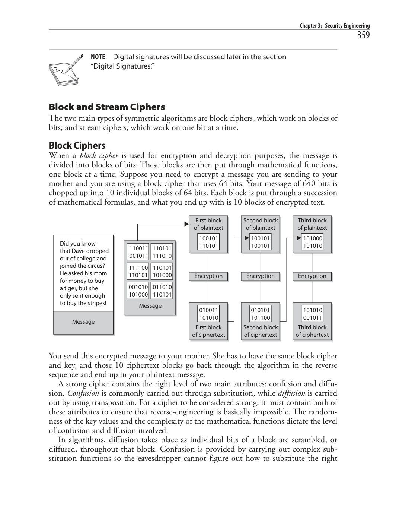
Diagram (p. 393)
values and come up with the original plaintext. Suppose you have 500 wooden blocks with individual letters written on them. You line them all up to spell out a paragraph (plaintext). Then you substitute 300 of them with another set of 300 blocks (confusion through substitution). Then you scramble all of these blocks up (diffusion through transposition) and leave them in a pile. For someone else to figure out your original message, they would have to substitute the correct blocks and then put them back in the right order. Good luck. Confusion pertains to making the relationship between the key and resulting ciphertext as complex as possible so the key cannot be uncovered from the ciphertext. Each ciphertext value should depend upon several parts of the key, but this mapping between the key values and the ciphertext values should seem completely random to the observer. Diffusion, on the other hand, means that a single plaintext bit has influence over several of the ciphertext bits. Changing a plaintext value should change many ciphertext values, not just one. In fact, in a strong block cipher, if one plaintext bit is changed, it will change every ciphertext bit with the probability of 50 percent. This means that if one plaintext bit changes, then about half of the ciphertext bits will change. A very similar concept of diffusion is theavalanche effect. If an algorithm follows a strict avalanche effect criteria, this means that if the input to an algorithm is slightly modified, then the output of the algorithm is changed significantly. So a small change to the key or the plaintext should cause drastic changes to the resulting ciphertext. The ideas of diffusion and avalanche effect are basically the same—they were just derived from different people. Horst Feistel came up with the avalanche term, while Claude Shannon came up with the diffusion term. If an algorithm does not exhibit the necessary degree of the avalanche effect, then the algorithm is using poor randomization. This can make it easier for an attacker to break the algorithm. Block ciphers use diffusion and confusion in their methods. Figure 3-34 shows a conceptual example of a simplistic block cipher. It has four block inputs, and each block is made up of 4 bits. The block algorithm has two layers of 4-bit substitution boxes called S-boxes.Each S-box contains a lookup table used by the algorithm as instructions on how the bits should be encrypted. Figure 3-34 shows that the key dictates what S-boxes are to be used when scrambling the original message from readable plaintext to encrypted nonreadable ciphertext. Each S-box contains the different substitution methods that can be performed on each block. This example is simplistic—most block ciphers work with blocks of 32, 64, or 128 bits in size, and many more S-boxes are usually involved.
Stream Ciphers
As stated earlier, a block cipher performs mathematical functions on blocks of bits. A stream cipher, on the other hand, does not divide a message into blocks. Instead, a stream ciphertreats the message as a stream of bits and performs mathematical functions on each bit individually. When using a stream cipher, a plaintext bit will be transformed into a different ciphertext bit each time it is encrypted. Stream ciphers usekeystream generators, which produce a stream of bits that is XORed with the plaintext bits to produce ciphertext, as shown in Figure 3-35.
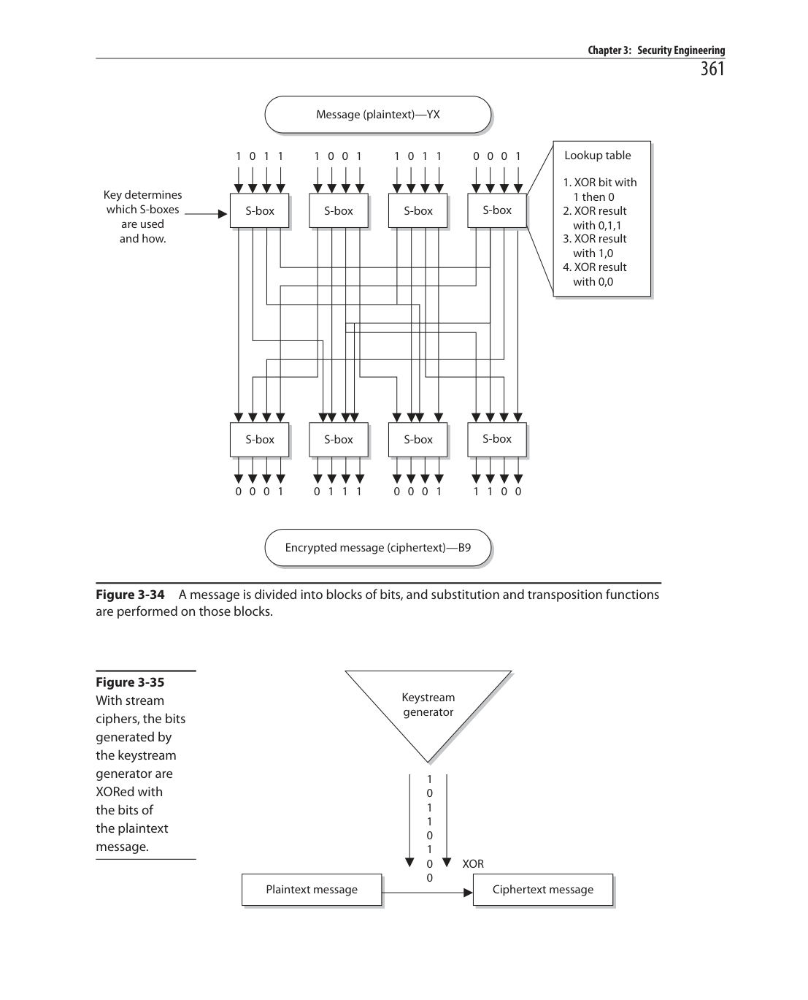
Figure 3-34A message is divided into blocks of bits, and substitution and transposition functions
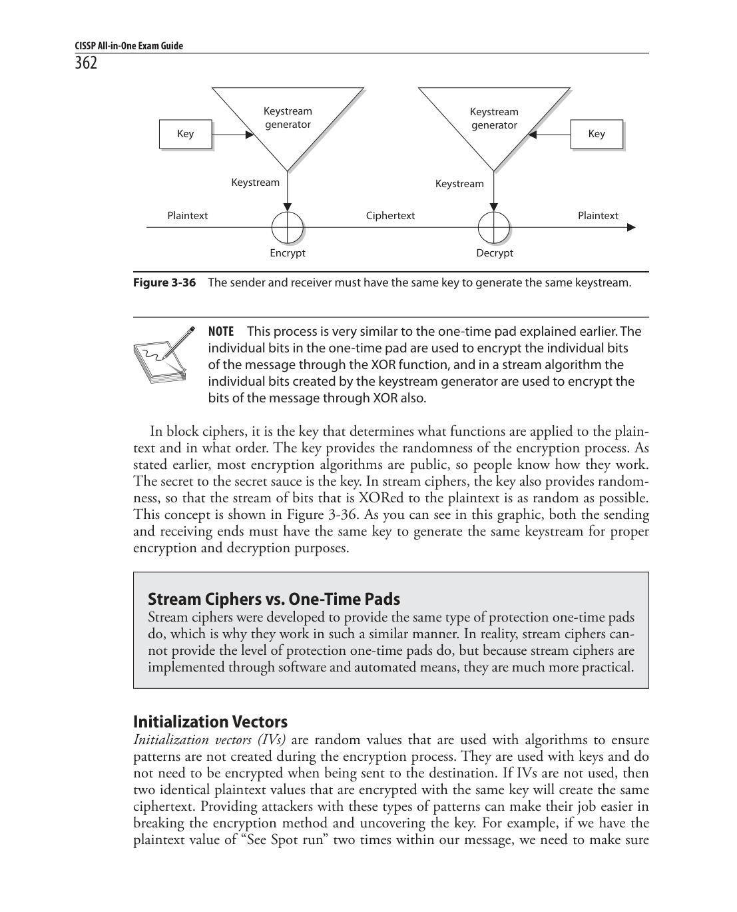
Figure 3-36The sender and receiver must have the same key to generate the same keystream.
This process is very similar to the one-time pad explained earlier. The individual bits in the one-time pad are used to encrypt the individual bits of the message through the XOR function, and in a stream algorithm the individual bits created by the keystream generator are used to encrypt the bits of the message through XOR also. In block ciphers, it is the key that determines what functions are applied to the plaintext and in what order. The key provides the randomness of the encryption process. As stated earlier, most encryption algorithms are public, so people know how they work. The secret to the secret sauce is the key. In stream ciphers, the key also provides randomness, so that the stream of bits that is XORed to the plaintext is as random as possible. This concept is shown in Figure 3-36. As you can see in this graphic, both the sending and receiving ends must have the same key to generate the same keystream for proper encryption and decryption purposes.
Stream Ciphers vs. One-Time Pads
Stream ciphers were developed to provide the same type of protection one-time pads do, which is why they work in such a similar manner. In reality, stream ciphers cannot provide the level of protection one-time pads do, but because stream ciphers are implemented through software and automated means, they are much more practical.
Initialization Vectors
Initialization vectors (IVs)are random values that are used with algorithms to ensure patterns are not created during the encryption process. They are used with keys and do not need to be encrypted when being sent to the destination. If IVs are not used, then two identical plaintext values that are encrypted with the same key will create the same ciphertext. Providing attackers with these types of patterns can make their job easier in breaking the encryption method and uncovering the key. For example, if we have the plaintext value of “See Spot run” two times within our message, we need to make sure
that even though there is a pattern in the plaintext message, a pattern in the resulting ciphertext will not be created. So the IV and key are both used by the algorithm to provide more randomness to the encryption process. A strong and effective stream cipher contains the following characteristics:
Easy to implement in hardwareComplexity in the hardware design makes
- it more difficult to verify the correctness of the implementation and can slow itdown.
Long periods of no repeating patterns within keystream valuesBits
- generated by the keystream are not truly random in most cases, which will eventually lead to the emergence of patterns; we want these patterns to be rare.
A keystream not linearly related to the keyIf someone figures out the
- keystream values, that does not mean she now knows the key value.
Statistically unbiased keystream (as many zeroes as ones)There should be
- no dominance in the number of zeroes or ones in the keystream.
Stream ciphers require a lot of randomness and encrypt individual bits at a time. This requires more processing power than block ciphers require, which is why stream ciphers are better suited to be implemented at the hardware level. Because block ciphers do not require as much processing power, they can be easily implemented at the software level. Overall, stream ciphers are considered less secure than block ciphers and are used less frequently. One difficulty in proper stream cipher implementation is generating a truly random and unbiased keystream. Many stream ciphers have been broken because it was uncovered that their keystreams had redundancies. One way in which stream ciphers are advantageous compared to block ciphers is when streaming communication data needs to be encrypted. Stream ciphers can encrypt and decrypt more quickly and are able to scale better within increased bandwidth requirements. When real-time applications, as in VoIP or multimedia, have encryption requirements, it is common that stream ciphers are implemented to accomplish this task. It is also worth pointing out that a computational error in a block encryption may render one block undecipherable, whereas a single computation error in stream encryption will propagate through the remainder of the stream.
Cryptographic Transformation Techniques
We have covered diffusion, confusion, avalanche, IVs, and random number generation. Some other techniques used in algorithms to increase their cryptographic strength are listed here:
CompressionReduce redundancy before plaintext is encrypted. Compression
- functions are run on the text before it goes into the encryption algorithm.
ExpansionExpanding the plaintext by duplicating values. Commonly used to
- increase the plaintext size to map to key sizes.
PaddingAdding material to plaintext data before it is encrypted.
- Key mixingUsing a portion (subkey) of a key to limit the exposure of the key.
- Key schedules are used to generate subkeys from master keys.
Hybrid Encryption Methods
Up to this point, we have figured out that symmetric algorithms are fast but have some drawbacks (lack of scalability, difficult key management, and they provide only confidentiality). Asymmetric algorithms do not have these drawbacks but are very slow. We just can’t seem to win. So we turn to a hybrid system that uses symmetric and asymmetric encryption methods together.
Asymmetric and Symmetric Algorithms Used Together
Public key cryptographyuses two keys (public and private) generated by an asymmetric algorithm for protecting encryption keys and key distribution, and a secret key is generated by a symmetric algorithm and used for bulk encryption. This is a hybrid use of the two different algorithms: asymmetric and symmetric. Each algorithm has its pros and cons, so using them together can be the best of both worlds. In the hybrid approach, the two technologies are used in a complementary manner, with each performing a different function. A symmetric algorithm creates keys used for encrypting bulk data, and an asymmetric algorithm creates keys used for automated key distribution. When a symmetric key is used for bulk data encryption, this key is used to encrypt the message you want to send. When your friend gets the message you encrypted, you want him to be able to decrypt it, so you need to send him the necessary symmetric key to use to decrypt the message. You do not want this key to travel unprotected, because if the message were intercepted and the key were not protected, an eavesdropper could intercept the message that contains the necessary key to decrypt your message and read your information. If the symmetric key needed to decrypt your message is not protected, there is no use in encrypting the message in the first place. So you should use an asymmetric algorithm to encrypt the symmetric key, as depicted in Figure 3-37. Why use the symmetric key on the message and the asymmetric key on the symmetric key? As stated earlier, the asymmetric algorithm takes longer because the math is more complex. Because your message is most likely going to be longer than the length of the key, you use the faster algorithm (symmetric) on the message and the slower algorithm (asymmetric) on the key. How does this actually work? Let’s say Bill is sending Paul a message that Bill wants only Paul to be able to read. Bill encrypts his message with a secret key, so now Bill has ciphertext and a symmetric key. The key needs to be protected, so Bill encrypts the symmetric key with an asymmetric key. Remember that asymmetric algorithms use private and public keys, so Bill will encrypt the symmetric key with Paul’s public key. Now Bill has ciphertext from the message and ciphertext from the symmetric key. Why did Bill encrypt the symmetric key with Paul’s public key instead of his own private key? Because if Bill encrypted it with his own private key, then anyone with Bill’s public key could decrypt it and retrieve the symmetric key. However, Bill does not want anyone who has his public key to read his message to Paul. Bill only wants Paul to be able to read it. So Bill encrypts the symmetric key with Paul’s public key. If Paul has done a good job protecting his private key, he will be the only one who can read Bill’s message.
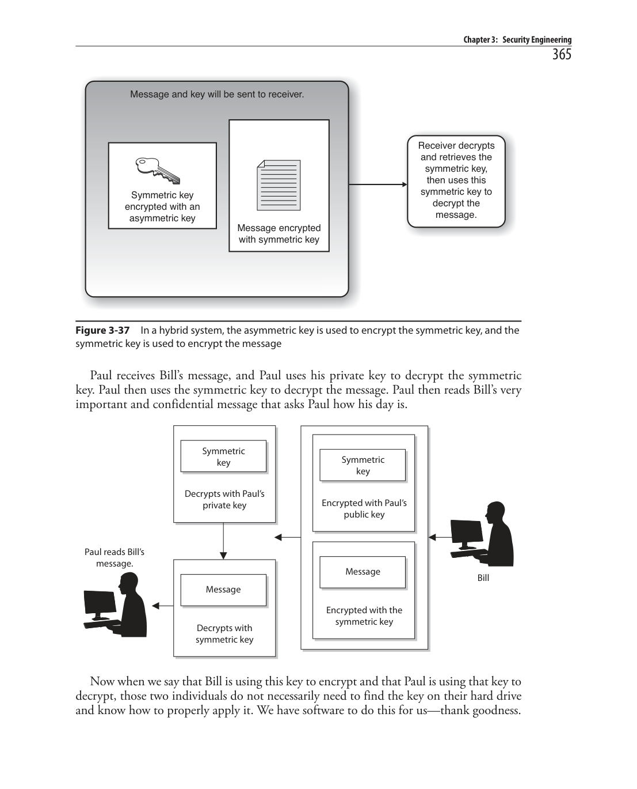
Figure 3-37In a hybrid system, the asymmetric key is used to encrypt the symmetric key, and the
Paul receives Bill’s message, and Paul uses his private key to decrypt the symmetric key. Paul then uses the symmetric key to decrypt the message. Paul then reads Bill’s very important and confidential message that asks Paul how his day is.
Now when we say that Bill is using this key to encrypt and that Paul is using that key to decrypt, those two individuals do not necessarily need to find the key on their hard drive and know how to properly apply it. We have software to do this for us—thank goodness.
If this is your first time with these issues and you are struggling, don’t worry. Just remember the following points:
An asymmetric algorithm performs encryption and decryption by using public
- and private keys that are related to each other mathematically.
A symmetric algorithm performs encryption and decryption by using a shared
- secret key.
A symmetric key is used to encrypt and/or decrypt the actual message.
- Public keys are used to encrypt the symmetric key for secure key exchange.
- A secret key is synonymous with a symmetric key.
- An asymmetric key refers to a public or private key.
- So, that is how a hybrid system works. The symmetric algorithm uses a secret key that will be used to encrypt the bulk, or the message, and the asymmetric key encrypts the secret key for transmission. Now to ensure that some of these concepts are driven home, ask these questions of yourself without reading the answers provided:
1.If a symmetric key is encrypted with a receiver’s public key, what security service(s) is (are) provided? 2.If data is encrypted with the sender’s private key, what security service(s) is (are) provided? 3.If the sender encrypts data with the receiver’s private key, what security services(s) is (are) provided? 4.Why do we encrypt the message with the symmetric key? 5.Why don’t we encrypt the symmetric key with another symmetric key?
Answers: 1.Confidentiality, because only the receiver’s private key can be used to decrypt the symmetric key, and only the receiver should have access to this private key. 2.Authenticity of the sender and nonrepudiation. If the receiver can decrypt the encrypted data with the sender’s public key, then she knows the data was encrypted with the sender’s private key. 3.None, because no one but the owner of the private key should have access to it. Trick question. 4.Because the asymmetric key algorithm is too slow. 5.We need to get the necessary symmetric key to the destination securely, which can only be carried out through asymmetric cryptography via the use of public and private keys to provide a mechanism for secure transport of the symmetric key.
Digital Envelopes
When cryptography is new to people, the process of using symmetric and asymmetric cryptography together can be a bit confusing. But it is important to understand these concepts, because they really are the core, fundamental concepts of all cryptography. This process is not just used in an e-mail client or in a couple of products—this is how it is done when data and a symmetric key must be protected in transmission. The use of these two technologies together can be referred to as a hybrid approach, but more commonly as adigital envelope.
Session Keys
Asession keyis a single-use symmetric key that is used to encrypt messages between two users during a communication session. A session key is no different from the symmetric key described in the previous section, but it is only good for one communication session between users. If Tanya has a symmetric key she uses to always encrypt messages between Lance and herself, then this symmetric key would not be regenerated or changed. They would use the same key every time they communicated using encryption. However, using the same
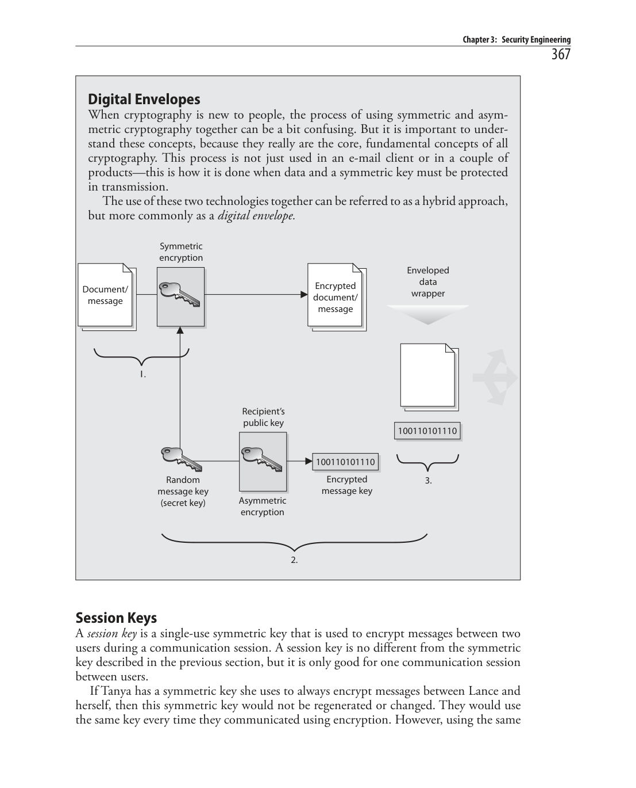
Diagram (p. 401)
key repeatedly increases the chances of the key being captured and the secure communication being compromised. If, on the other hand, a new symmetric key were generated each time Lance and Tanya wanted to communicate, as shown in Figure 3-38, it would be used only during their one dialogue and then destroyed. If they wanted to communicate an hour later, a new session key would be created and shared. A session key provides more protection than static symmetric keys because it is valid for only one session between two computers. If an attacker were able to capture the session key, she would have a very small window of time to use it to try to decrypt messages being passed back and forth. In cryptography, almost all data encryption takes place through the use of session keys. When you write an e-mail and encrypt it before sending it over the wire, it is actually being encrypted with a session key. If you write another message to the same person one minute later, a brand-new session key is created to encrypt that new message. So if an eavesdropper happens to figure out one session key, that does not mean she has access to all other messages you write and send off. When two computers want to communicate using encryption, they must first go through a handshaking process. The two computers agree on the encryption algorithms that will be used and exchange the session key that will be used for data encryption. In a sense, the two computers set up a virtual connection between each other and are said to be in session. When this session is done, each computer tears down any data structures it built to enable this communication to take place, releases the resources, and destroys the session key. These things are taken care of by operating systems and applications in the
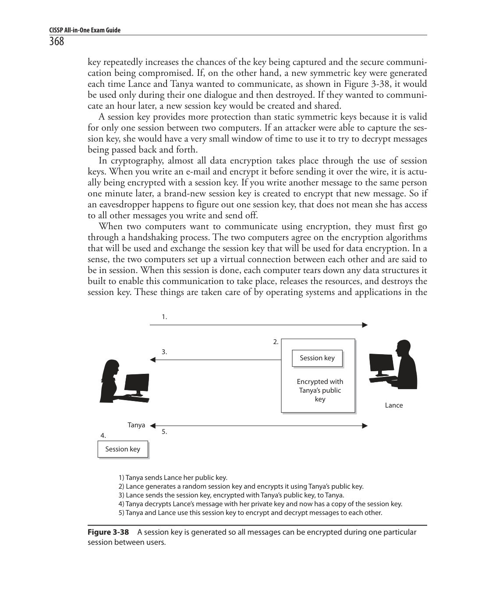
Figure 3-38A session key is generated so all messages can be encrypted during one particular
background, so a user would not necessarily need to be worried about using the wrong type of key for the wrong reason. The software will handle this, but it is important for security professionals to understand the difference between the key types and the issues that surround them.
Private and symmetric keys should not be available in cleartext. This may seem obvious to you, but there have been several implementations over time that have allowed for this type of compromise to take place. Unfortunately, we don’t always seem to be able to call an apple an apple. In many types of technology, the exact same thing can have more than one name. You could see symmetric cryptography referred to as any of the following: Secret key cryptography
- Session key cryptography
- Private key cryptography
- Shared-key cryptography
- We know the difference between secret keys (static) and session keys (dynamic), but what is this “single key” and “private key” mess? Well, using the term “single key” makes sense, because the sender and receiver are using one single key. It’s unfortunate that the term “private key” can be used to describe symmetric cryptography, because it only adds more confusion to the difference between symmetric cryptography (where one symmetric key is used) and asymmetric cryptography (where both a private and public key are used). You just need to remember this little quirk and still understand the difference between symmetric and asymmetric cryptography.
Types of Symmetric Systems
Several types of symmetric algorithms are used today. They have different methods of providing encryption and decryption functionality. The one thing they all have in common is that they are symmetric algorithms, meaning the sender and receiver are using two instances of the same key. In this section, we will be walking through many of the following algorithms and their characteristics:
Data Encryption Standard (DES)
- Triple-DES (3DES)
- Advanced Encryption Standard (AES)
- International Data Encryption Algorithm (IDEA)
- Blowfish
- RC4, RC5, and RC6
Data Encryption Standard
Data Encryption Standard(DES)has had a long and rich history within the computer community. The National Institute of Standards and Technology (NIST) researched the need for the protection of sensitive but unclassified data during the 1960s and initiated a cryptography program in the early 1970s. NIST invited vendors to submit data encryption algorithms to be used as a cryptographic standard. IBM had already been developing encryption algorithms to protect financial transactions. In 1974, IBM’s 128-bit algorithm, named Lucifer, was submitted and accepted. The NSA modified this algorithm to use a key size of 64 bits (with 8 bits used for parity, resulting in an effective key length of 56 bits) instead of the original 128 bits, and named it theData Encryption Algorithm(DEA).Controversy arose about whether the NSA weakened Lucifer on purpose to enable it to decrypt messages not intended for it, but in the end the modified Lucifer became a national cryptographic standard in 1977 and an American National Standards Institute (ANSI) standard in 1978.
DEA is the algorithm that fulfills DES, which is really just a standard. So DES is the standard and DEA is the algorithm, but in the industry we usually just refer to it as DES. The CISSP exam may refer to the algorithm by either name, so remember both. DES has been implemented in a majority of commercial products using cryptography functionality and in the applications of almost all government agencies. It was tested and approved as one of the strongest and most efficient cryptographic algorithms available. The continued overwhelming support of the algorithm is what caused the most confusion when the NSA announced in 1986 that, as of January 1988, the agency would no longer endorse DES and that DES-based products would no longer fall under compliance with Federal Standard 1027. The NSA felt that because DES had been so popular for so long, it would surely be targeted for penetration and become useless as an official standard. Many researchers disagreed, but the NSA wanted to move on to a newer, more secure, and less popular algorithm as the new standard. The NSA’s decision to drop its support for DES caused major concern and negative feedback. At that time, it was shown that DES still provided the necessary level of protection; that projections estimated a computer would require thousands of years to crack DES; that DES was already embedded in thousands of products; and that there was no equivalent substitute. The NSA reconsidered its decision, and NIST ended up recertifying DES for another five years. In 1998, the Electronic Frontier Foundation built a computer system for $250,000 that broke DES in three days by using a brute-force attack against the keyspace. It contained 1,536 microprocessors running at 40 MHz, which performed 60 million test decryptions per second per chip. Although most people do not have these types of systems to conduct such attacks, the rise of technologies such as botnets and cloud computing make this feasible for the average attacker. This brought about 3DES, which provides stronger protection, as discussed later in the chapter.
DES was later replaced by theRijndaelalgorithm as theAdvanced Encryption Standard (AES)by NIST. This means that Rijndael is the new approved method of encrypting sensitive but unclassified information for the U.S. government; it has been accepted by, and is widely used in, the public arena today.
How Does DES Work?
DES is a symmetric block encryption algorithm. When 64-bit blocks of plaintext go in, 64-bit blocks of ciphertext come out. It is also a symmetric algorithm, meaning the same key is used for encryption and decryption. It uses a 64-bit key: 56 bits make up the true key, and 8 bits are used for parity. When the DES algorithm is applied to data, it divides the message into blocks and operates on them one at a time. The blocks are put through 16 rounds of transposition and substitution functions. The order and type of transposition and substitution functions depend on the value of the key used with the algorithm. The result is 64-bit blocks of ciphertext.
What Does It Mean When an Algorithm Is Broken?
As described in an earlier section, DES was finally broken with a dedicated computer (lovingly named the DES Cracker, aka Deep Crack). But what does “broken” really mean? In most instances, an algorithm is broken if someone is able to uncover a key that was used during an encryption process. So let’s say Kevin encrypted a message and sent it to Valerie. Marc captures this encrypted message and carries out a brute-force attack on it, which means he tries to decrypt the message with different keys until he uncovers the right one. Once he identifies this key, the algorithm is considered broken. So does that mean the algorithm is worthless? It depends on who your enemies are. If an algorithm is broken through a brute-force attack, this just means the attacker identified the one key that was used for one instance of encryption. But in proper implementations, we should be encrypting data with session keys, which are good only for that one session. So even if the attacker uncovers one session key, it may be useless to the attacker, in which case he now has to work to identify a new session key. If your information is of sufficient value that enemies or thieves would exert a lot of resources to break the encryption (as may be the case for financial transactions or military secrets), you would not use an algorithm that has been broken. If you are encrypting messages to your mother about a meatloaf recipe, you likely are not going to worry about whether the algorithm has been broken. So defeating an algorithm can take place through brute-force attacks or by identifying weaknesses in the algorithm itself. Brute-force attacks have increased in potency because of the increased processing capacity of computers today. An algorithm that uses a 40-bit key has around 1 trillion possible key values. If a 56-bit key is used, then there are approximately 72 quadrillion different key values. This may seem like a lot, but relative to today’s computing power, these key sizes do not provide much protection at all. On a final note, algorithms are built on the current understanding of mathematics. As the human race advances in mathematics, the level of protection that today’s algorithms provide may crumble.
DES Modes
Block ciphers have several modes of operation. Each mode specifies how a block cipher will operate. One mode may work better in one type of environment for specific functionality, whereas another mode may work better in another environment with totally different requirements. It is important that vendors who employ DES (or any block cipher) understand the different modes and which one to use for which purpose. DES and other symmetric block ciphers have several distinct modes of operation that are used in different situations for different results. You just need to understand five of them:
Electronic Code Book (ECB)
- Cipher Block Chaining (CBC)
- Cipher Feedback (CFB)
- Output Feedback (OFB)
- Counter (CTR)
- Electronic Code Book (ECB) ModeECBmode operates like a code book. A 64-bit data block is entered into the algorithm with a key, and a block of ciphertext is produced. For a given block of plaintext and a given key, the same block of ciphertext is always produced. Not all messages end up in neat and tidy 64-bit blocks, so ECB incorporates padding to address this problem. ECB is the easiest and fastest mode to use, but as we will see, it has its dangers. A key is basically instructions for the use of a code book that dictates how a block of text will be encrypted and decrypted. The code book provides the recipe of substitutions and permutations that will be performed on the block of plaintext. The security issue with using ECB mode is that each block is encrypted with the exact same key, and thus the exact same code book. So, two bad things can happen here: an attacker could uncover the key and thus have the key to decrypt all the blocks of data, or an attacker could gather the ciphertext and plaintext of each block and build the code book that was used, without needing the key. The crux of the problem is that there is not enough randomness to the process of encrypting the independent blocks, so if this mode is used to encrypt a large amount of data, it could be cracked more easily than the other modes that block ciphers can work in. So the next question to ask is, why even use this mode? This mode is the fastest and easiest, so we use it to encrypt small amounts of data, such as PINs, challenge-response values in authentication processes, and encrypting keys. Because this mode works with blocks of data independently, data within a file does not have to be encrypted in a certain order. This is very helpful when using encryption in databases. A database has different pieces of data accessed in a random fashion. If it is encrypted in ECB mode, then any record or table can be added, encrypted, deleted, or decrypted independently of any other table or record. Other DES modes are dependent upon the text encrypted before them. This dependency makes it harder to encrypt and decrypt smaller amounts of text, because the previous encrypted text would need to be decrypted first. (After we cover chaining in the next section, this dependency will make more sense.)
ECB mode does not use chaining, so you should not use it to encrypt large amounts of data because patterns would eventually show themselves. Some important characteristics of ECB mode encryption are as follows:
Operations can be run in parallel, which decreases processing time.
- Errors are contained. If an error takes place during the encryption process, it only
- affects one block of data.
It is only usable for the encryption of short messages.
- It cannot carry out preprocessing functions before receiving plaintext.
- Cipher Block Chaining (CBC) ModeIn ECB mode, a block of plaintext and a key will always give the same ciphertext. This means that if the word “balloon” were encrypted and the resulting ciphertext was “hwicssn,” each time it was encrypted using the same key, the same ciphertext would always be given. This can show evidence of a pattern, enabling an eavesdropper, with some effort, to discover the pattern and get a step closer to compromising the encryption process. Cipher Block Chaining (CBC)mode does not reveal a pattern because each block of text, the key, and the value based on the previous block are processed in the algorithm and applied to the next block of text, as shown in Figure 3-39. This results in more random ciphertext. Ciphertext is extracted and used from the previous block of text. This provides dependence between the blocks, in a sense chaining them together. This is where the name Cipher Block Chaining comes from, and it is this chaining effect that hides any patterns. The results of one block are XORed with the next block before it is encrypted, meaning each block is used to modify the following block. This chaining effect means that a particular ciphertext block is dependent upon all blocks before it, not just the previous block.
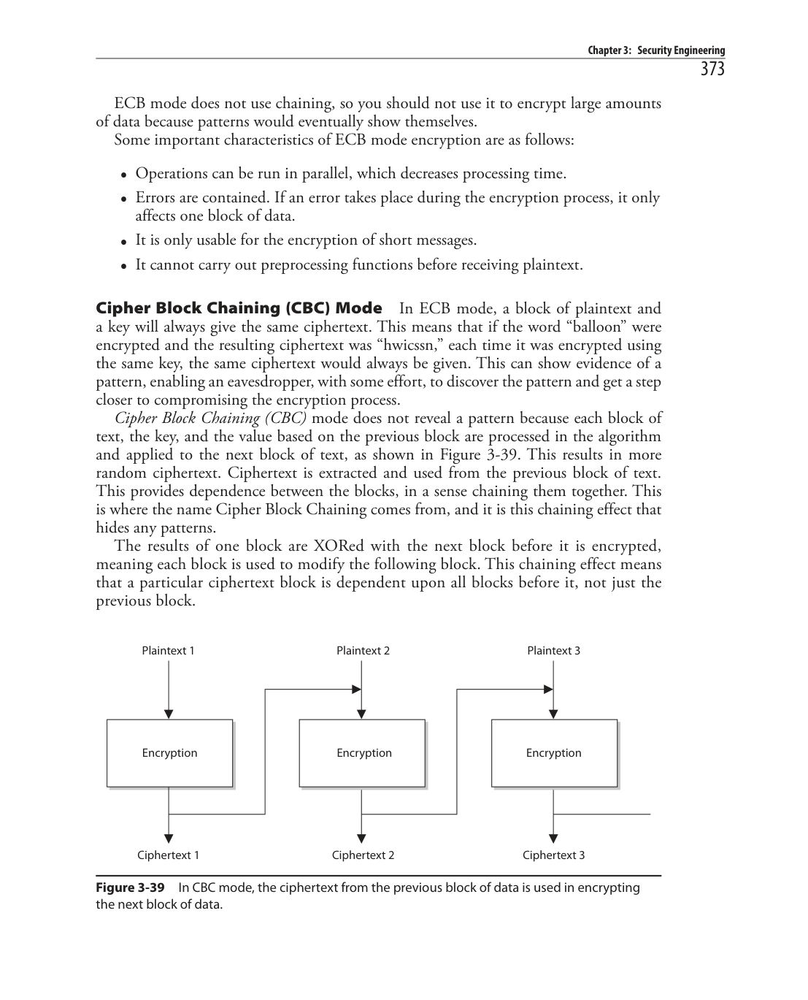
Figure 3-39In CBC mode, the ciphertext from the previous block of data is used in encrypting
As an analogy, let’s say you have five buckets of marbles. Each bucket contains a specific color of marbles: red, blue, yellow, black, and green. You shake and tumble (encrypt) the first bucket of red marbles (block of bits) to get them all mixed up. Then you take the second bucket of marbles, which are blue, and pour in the red marbles and go through the same exercise of shaking and tumbling them. You pour this bucket of red and blue marbles into your next bucket of yellow marbles and shake them all up. This illustrates the incorporated randomness that is added when using chaining in a block encryption process. When we encrypt our very first block using CBC, we do not have a previous block of ciphertext to “dump in” and use to add the necessary randomness to the encryption process. If we do not add a piece of randomness when encrypting this first block, then the bad guys could identify patterns, work backward, and uncover the key. So, we use an initialization vector (IVs were introduced previously in the “Initialization Vectors” section). The 64-bit IV is XORed with the first block of plaintext, and then it goes through its encryption process. The result of that (ciphertext) is XORed with the second block of plaintext, and then the second block is encrypted. This continues for the whole message. It is the chaining that adds the necessary randomness that allows us to use CBC mode to encrypt large files. Neither the individual blocks nor the whole message will show patterns that will allow an attacker to reverse-engineer and uncover the key. If we choose a different IV each time we encrypt a message, even if it is the same message, the ciphertext will always be unique. This means that if you send the same message out to 50 people and encrypt each message using a different IV, the ciphertext for each message will be different. Pretty nifty.
Cipher Feedback (CFB) ModeSometimes block ciphers can emulate a stream cipher. Before we dig into how this would happen, let’s first look at why. If you are going to send an encrypted e-mail to your boss, your e-mail client will use a symmetric block cipher working in CBC mode. The e-mail client would not use ECB mode because most messages are long enough to show patterns that can be used to reverse-engineer the process and uncover the encryption key. The CBC mode is great to use when you need to send large chunks of data at a time. But what if you are not sending large chunks of data at one time, but instead are sending a steady stream of data to a destination? If you are working on a terminal that communicates with a back-end terminal server, what is really going on is that each keystroke and mouse movement you make is sent to the back-end server in chunks of 8 bits to be processed. So even though it seems as though the computer you are working on is carrying out your commands and doing the processing you are requesting, it is not—this is happening on the server. Thus, if you need to encrypt the data that goes from your terminal to the terminal server, you could not use CBC mode because it only encrypts blocks of data 64 bits in size. You have blocks of 8 bits that you need to encrypt. So what do you do now? We have just the mode for this type of situation! Figure 3-40 illustrates howCipher Feedback (CFB)mode works, which is really a combination of a block cipher and a stream cipher. For the first block of 8 bits that needs to be encrypted, we do the same thing we did in CBC mode, which is to use an IV. Recall how stream ciphers work: The key and the IV are used by the algorithm to create
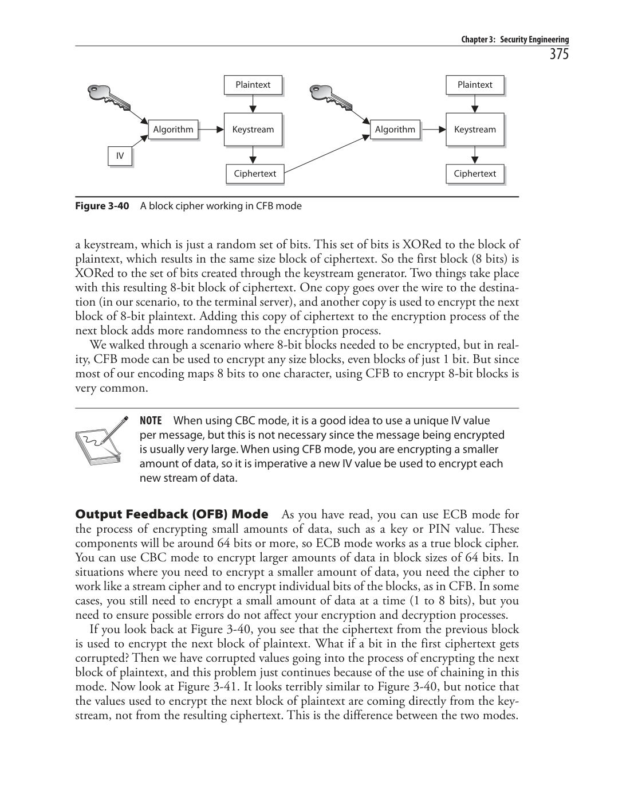
Figure 3-40A block cipher working in CFB mode
a keystream, which is just a random set of bits. This set of bits is XORed to the block of plaintext, which results in the same size block of ciphertext. So the first block (8 bits) is XORed to the set of bits created through the keystream generator. Two things take place with this resulting 8-bit block of ciphertext. One copy goes over the wire to the destination (in our scenario, to the terminal server), and another copy is used to encrypt the next block of 8-bit plaintext. Adding this copy of ciphertext to the encryption process of the next block adds more randomness to the encryption process. We walked through a scenario where 8-bit blocks needed to be encrypted, but in reality, CFB mode can be used to encrypt any size blocks, even blocks of just 1 bit. But since most of our encoding maps 8 bits to one character, using CFB to encrypt 8-bit blocks is very common.
When using CBC mode, it is a good idea to use a unique IV value per message, but this is not necessary since the message being encrypted is usually very large. When using CFB mode, you are encrypting a smaller amount of data, so it is imperative a new IV value be used to encrypt each new stream of data.
Output Feedback (OFB) ModeAs you have read, you can use ECB mode for the process of encrypting small amounts of data, such as a key or PIN value. These components will be around 64 bits or more, so ECB mode works as a true block cipher. You can use CBC mode to encrypt larger amounts of data in block sizes of 64 bits. In situations where you need to encrypt a smaller amount of data, you need the cipher to work like a stream cipher and to encrypt individual bits of the blocks, as in CFB. In some cases, you still need to encrypt a small amount of data at a time (1 to 8 bits), but you need to ensure possible errors do not affect your encryption and decryption processes. If you look back at Figure 3-40, you see that the ciphertext from the previous block is used to encrypt the next block of plaintext. What if a bit in the first ciphertext gets corrupted? Then we have corrupted values going into the process of encrypting the next block of plaintext, and this problem just continues because of the use of chaining in this mode. Now look at Figure 3-41. It looks terribly similar to Figure 3-40, but notice that the values used to encrypt the next block of plaintext are coming directly from the keystream, not from the resulting ciphertext. This is the difference between the two modes.
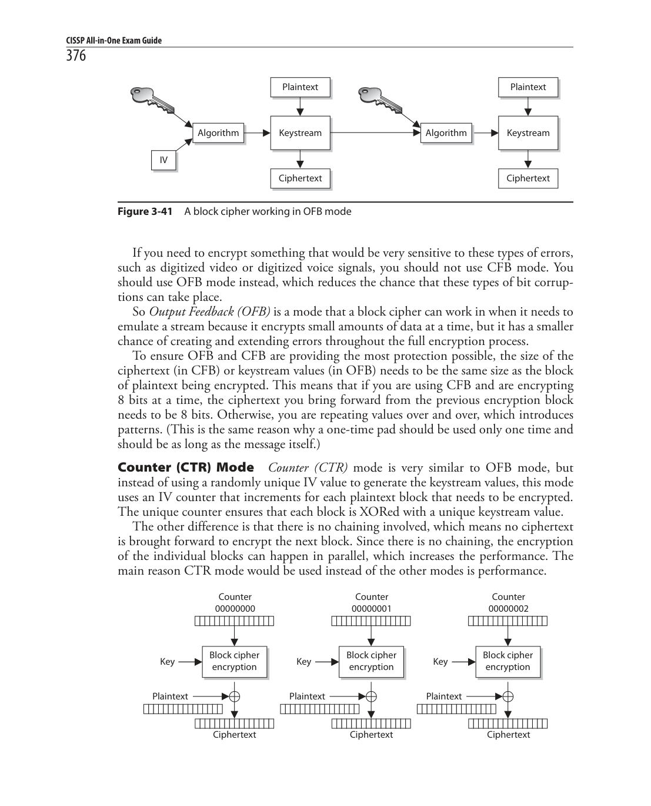
Figure 3-41A block cipher working in OFB mode
If you need to encrypt something that would be very sensitive to these types of errors, such as digitized video or digitized voice signals, you should not use CFB mode. You should use OFB mode instead, which reduces the chance that these types of bit corruptions can take place. SoOutput Feedback (OFB)is a mode that a block cipher can work in when it needs to emulate a stream because it encrypts small amounts of data at a time, but it has a smaller chance of creating and extending errors throughout the full encryption process. To ensure OFB and CFB are providing the most protection possible, the size of the ciphertext (in CFB) or keystream values (in OFB) needs to be the same size as the block of plaintext being encrypted. This means that if you are using CFB and are encrypting 8 bits at a time, the ciphertext you bring forward from the previous encryption block needs to be 8 bits. Otherwise, you are repeating values over and over, which introduces patterns. (This is the same reason why a one-time pad should be used only one time and should be as long as the message itself.)
Counter (CTR) ModeCounter (CTR)mode is very similar to OFB mode, but instead of using a randomly unique IV value to generate the keystream values, this mode uses an IV counter that increments for each plaintext block that needs to be encrypted. The unique counter ensures that each block is XORed with a unique keystream value. The other difference is that there is no chaining involved, which means no ciphertext is brought forward to encrypt the next block. Since there is no chaining, the encryption of the individual blocks can happen in parallel, which increases the performance. The main reason CTR mode would be used instead of the other modes is performance.
CTR mode has been around for quite some time and is used in encrypting ATM cells for virtual circuits, in IPSec, and in the wireless security standard IEEE 802.11i. A developer would choose to use this mode in these situations because individual ATM cells or packets going through an IPSec tunnel or over radio frequencies may not arrive at the destination in order. Since chaining is not involved, the destination can decrypt and begin processing the packets without having to wait for the full message to arrive and thendecrypt all the data.
Synchronous vs. Asynchronous
Synchronouscryptosystems use keystreams to encrypt plaintext one bit at a time. The keystream values are “in sync” with the plaintext values. Anasynchronouscryptosystem uses previously generated output to encrypt the current plaintext values. So a stream algorithm would be considered synchronous, while a block algorithm using chaining would be considered asynchronous.
Triple-DES
We went from DES toTriple-DES (3DES), so it might seem we skipped Double-DES. We did. Double-DES has a key length of 112 bits, but there is a specific attack against Double-DES that reduces its work factor to about the same as DES. Thus, it is no more secure than DES. So let’s move on to 3DES. Many successful attacks against DES and the realization that the useful lifetime of DES was about up brought much support for 3DES. NIST knew that a new standard had to be created, which ended up being AES (discussed in the next section), but a quick fix was needed in the meantime to provide more protection for sensitive data. The result: 3DES (aka TDEA—Triple Data Encryption Algorithm). 3DES uses 48 rounds in its computation, which makes it highly resistant to differential cryptanalysis. However, because of the extra work 3DES performs, there is a heavy performance hit. It can take up to three times longer than DES to perform encryption and decryption. Although NIST has selected the Rijndael algorithm to replace DES astheAES, NIST and others expect 3DES to be around and used for quite some time. 3DES can work in different modes, and the mode chosen dictates the number of keys used and what functions are carried out:
DES-EEE3Uses three different keys for encryption, and the data is encrypted,
- encrypted, encrypted.
DES-EDE3Uses three different keys for encryption, and the data is encrypted,
- decrypted, encrypted.
DES-EEE2The same as DES-EEE3, but uses only two keys, and the first and
- third encryption processes use the same key.
DES-EDE2The same as DES-EDE3, but uses only two keys, and the first and
- third encryption processes use the same key.
EDE may seem a little odd at first. How much protection could be provided by encrypting something, decrypting it, and encrypting it again? The decrypting portion here is decrypted with a different key. When data is encrypted with one symmetric key and decrypted with a different symmetric key, it is jumbled even more. So the data is not actually decrypted in the middle function; it is just run through a decryption process with a different key. Pretty tricky.
Advanced Encryption Standard
After DES was used as an encryption standard for over 20 years and it was cracked in a relatively short time once the necessary technology was available, NIST decided a new standard, theAdvanced Encryption Standard (AES), needed to be put into place. In January 1997, NIST announced its request for AES candidates and outlined the requirements in FIPS PUB 197. AES was to be a symmetric block cipher supporting key sizes of 128, 192, and 256 bits. The following five algorithms were the finalists:
MARSDeveloped by the IBM team that created Lucifer
- RC6Developed by RSA Laboratories
- SerpentDeveloped by Ross Anderson, Eli Biham, and Lars Knudsen
- TwofishDeveloped by Counterpane Systems
- RijndaelDeveloped by Joan Daemen and Vincent Rijmen
- Out of these contestants, Rijndael was chosen. The block sizes that Rijndael supports are 128, 192, and 256 bits. The number of rounds depends upon the size of the block and the key length:
If both the key and block size are 128 bits, there are 10 rounds.
- If both the key and block size are 192 bits, there are 12 rounds.
- If both the key and block size are 256 bits, there are 14 rounds.
- Rijndael works well when implemented in software and hardware in a wide range of products and environments. It has low memory requirements and has been constructed to easily defend against timing attacks. Rijndael was NIST’s choice to replace DES. It is now the algorithm required to protect sensitive but unclassified U.S. government information.
DEA is the algorithm used within DES, and Rijndael is the algorithm used in AES. In the industry, we refer to these as DES and AES instead of by the actual algorithms.
International Data Encryption Algorithm
International Data Encryption Algorithm(IDEA)is a block cipher and operates on 64-bit blocks of data. The 64-bit data block is divided into 16 smaller blocks, and each has eight
rounds of mathematical functions performed on it. The key is 128 bits long, and IDEA is faster than DES when implemented in software. The IDEA algorithm offers different modes similar to the modes described in the DES section, but it is considered harder to break than DES because it has a longer key size. IDEA is used in PGP and other encryption software implementations. It was thought to replace DES, but it is patented, meaning that licensing fees would have to be paid to use it. As of this writing, there have been no successful practical attacks against this algorithm, although there have been numerous attempts.
Blowfish
Blowfishis a block cipher that works on 64-bit blocks of data. The key length can be anywhere from 32 bits up to 448 bits, and the data blocks go through 16 rounds of cryptographic functions. It was intended as a replacement to the aging DES. While many of the other algorithms have been proprietary and thus encumbered by patents or kept as government secrets, this isn’t the case with Blowfish. Bruce Schneier, the creator of Blowfish, has stated, “Blowfish is unpatented, and will remain so in all countries. The algorithm is hereby placed in the public domain, and can be freely used by anyone.” Nice guy.
RC4
RC4is one of the most commonly implemented stream ciphers. It has a variable key size, is used in the Secure Sockets Layer (SSL) protocol, and was (improperly) implemented in the 802.11 WEP protocol standard. RC4 was developed in 1987 by Ron Rivest and was considered a trade secret of RSA Data Security, Inc., until someone posted the source code on a mailing list. Since the source code was released nefariously, the stolen algorithm is sometimes implemented and referred to as ArcFour or ARC4 because the title RC4 is trademarked. The algorithm is very simple, fast, and efficient, which is why it became so popular. But it is vulnerable to modification attacks. This is one reason that IEEE 802.11i moved from the RC4 algorithm to the AES algorithm.
RC5
RC5is a block cipher that has a variety of parameters it can use for block size, key size, and the number of rounds used. It was created by Ron Rivest. The block sizes used in this algorithm are 32, 64, or 128 bits, and the key size goes up to 2,048 bits. The number of rounds used for encryption and decryption is also variable. The number of rounds can go up to 255.
RC6
RC6is a block cipher that was built upon RC5, so it has all the same attributes as RC5. The algorithm was developed mainly to be submitted as AES, but Rijndael was chosen instead. There were some modifications of the RC5 algorithm to increase the overall speed, the result of which is RC6.
Cryptography Notation
In some resources, you may run acrossrc5-w/r/borRC5-32/12/16. This is a type of shorthand that describes the configuration of the algorithm:
w= Word size, in bits, which can be 16, 32, or 64 bits in length
- r= Number of rounds, which can be 0 to 255
- b= Key size, in bytes
- SoRC5-32/12/16would mean the following:
32-bit words, which means it encrypts 64-bit data blocks
- Using 12 rounds
- With a 16-byte (128-bit) key
- A developer configures these parameters (words, number of rounds, key size) for the algorithm for specific implementations. The existence of these parameters gives developers extensive flexibility.
Types of Asymmetric Systems
As described earlier in the chapter, using purely symmetric key cryptography has three drawbacks, which affect the following:
Security servicesPurely symmetric key cryptography provides confidentiality
- only, not authentication or nonrepudiation.
ScalabilityAs the number of people who need to communicate increases,
- so does the number of symmetric keys required, meaning more keys must be managed. Secure key distributionThe symmetric key must be delivered to its
- destination through a secure courier.
Despite these drawbacks, symmetric key cryptography was all that the computing society had available for encryption for quite some time. Symmetric and asymmetric cryptography did not arrive on the same day or even in the same decade. We dealt with the issues surrounding symmetric cryptography for quite some time, waiting for someone smarter to come along and save us from some of this grief.
Diffie-Hellman Algorithm
The first group to address the shortfalls of symmetric key cryptography decided to attack the issue of secure distribution of the symmetric key. Whitfield Diffie and Martin Hellman worked on this problem and ended up developing the first asymmetric key agreement algorithm, called, naturally, Diffie-Hellman.
To understand howDiffie-Hellmanworks, consider an example. Let’s say that Tanya and Erika would like to communicate over an encrypted channel by using Diffie- Hellman. They would both generate a private and public key pair and exchange public keys. Tanya’s software would take her private key (which is just a numeric value) and Erika’s public key (another numeric value) and put them through the Diffie- Hellman algorithm. Erika’s software would take her private key and Tanya’s public key and insert them into the Diffie-Hellman algorithm on her computer. Through this process, Tanya and Erika derive the same shared value, which is used to create instances of symmetric keys. So, Tanya and Erika exchanged information that did not need to be protected (their public keys) over an untrusted network, and in turn generated the exact same symmetric key on each system. They both can now use these symmetric keys to encrypt, transmit, and decrypt information as they communicate with each other.
The preceding example describes keyagreement, which is different from keyexchange, the functionality used by the other asymmetric algorithms that will be discussed in this chapter. With key exchange functionality, the sender encrypts the symmetric key with the receiver’s public key before transmission. The Diffie-Hellman algorithm enables two systems to generate a symmetric key securely without requiring a previous relationship or prior arrangements. The algorithm allows for key distribution, but does not provide encryption or digital signature functionality. The algorithm is based on the difficulty of calculating discrete logarithms in a finite field. The original Diffie-Hellman algorithm is vulnerable to a man-in-the-middle attack, because no authentication occurs before public keys are exchanged. In our example, when Tanya sends her public key to Erika, how does Erika really know it is Tanya’s public key? What if Lance spoofed his identity, told Erika he was Tanya, and sent over his key? Erika would accept this key, thinking it came from Tanya. Let’s walk through the steps of how this type of attack would take place, as illustrated in Figure 3-42: 1.Tanya sends her public key to Erika, but Lance grabs the key during transmission so it never makes it to Erika. 2.Lance spoofs Tanya’s identity and sends over his public key to Erika. Erika now thinks she has Tanya’s public key. 3.Erika sends her public key to Tanya, but Lance grabs the key during transmission so it never makes it to Tanya. 4.Lance spoofs Erika’s identity and sends over his public key to Tanya. Tanya now thinks she has Erika’s public key. 5.Tanya combines her private key and Lance’s public key and creates symmetric key S1.
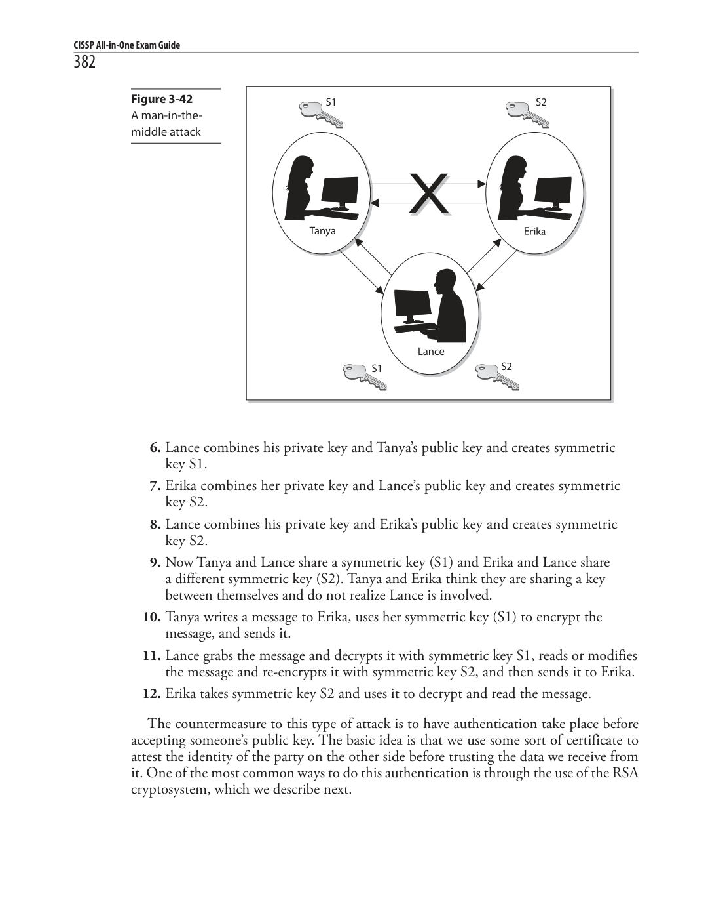
Figure 3-42
6.Lance combines his private key and Tanya’s public key and creates symmetric key S1. 7.Erika combines her private key and Lance’s public key and creates symmetric key S2. 8.Lance combines his private key and Erika’s public key and creates symmetric key S2. 9.Now Tanya and Lance share a symmetric key (S1) and Erika and Lance share a different symmetric key (S2). Tanya and Erika think they are sharing a key between themselves and do not realize Lance is involved. 10.Tanya writes a message to Erika, uses her symmetric key (S1) to encrypt the message, and sends it. 11.Lance grabs the message and decrypts it with symmetric key S1, reads or modifies the message and re-encrypts it with symmetric key S2, and then sends it to Erika. 12.Erika takes symmetric key S2 and uses it to decrypt and read the message.
The countermeasure to this type of attack is to have authentication take place before accepting someone’s public key. The basic idea is that we use some sort of certificate to attest the identity of the party on the other side before trusting the data we receive from it. One of the most common ways to do this authentication is through the use of the RSA cryptosystem, which we describe next.
MQV(Menezes-Qu-Vanstone) is an authentication key agreement cryptography function very similar to Diffie-Hellman. The users’ public keys are exchanged to create session keys. It provides protection from an attacker figuring out the session key because the attacker would need to have both users’ private keys.
What Is the Difference Between Public Key Cryptography
and Public Key Infrastructure?
Public key cryptography is the use of an asymmetric algorithm. Thus, the terms asymmetric algorithm and public key cryptography are interchangeable. Examples of asymmetric algorithms are RSA, elliptic curve cryptosystems (ECC), Diffie-Hellman, El Gamal, and knapsack. These algorithms are used to create public/private key pairs, perform key exchange or agreement, and generate and verify digital signatures. Public key infrastructure(PKI)is a different animal. It is not an algorithm, a protocol, or an application—it is an infrastructure based on public key cryptography.
RSA
RSA, named after its inventors Ron Rivest, Adi Shamir, and Leonard Adleman, is a public key algorithm that is the most popular when it comes to asymmetric algorithms. RSA is a worldwide de facto standard and can be used for digital signatures, key exchange, and encryption. It was developed in 1978 at MIT and provides authentication as well as key encryption. The security of this algorithm comes from the difficulty of factoring large numbers into their original prime numbers. The public and private keys are functions of a pair of large prime numbers, and the necessary activity required to decrypt a message from ciphertext to plaintext using a private key is comparable to factoring a product into two prime numbers.
A prime number is a positive whole number whose only factors (i.e., integer divisors) are 1 and the number itself.
One advantage of using RSA is that it can be used for encryption and digital signatures. Using its one-way function, RSA provides encryption and signature verification, and the inverse direction performs decryption and signature generation. RSA has been implemented in applications; in operating systems by Microsoft, Apple, Sun, and Novell; and at the hardware level in network interface cards, secure telephones, and smart cards. It can be used as akey exchange protocol, meaning it is used to encrypt the symmetric key to get it securely to its destination. RSA has been most commonly used with the symmetric algorithm DES, which is quickly being replaced
with AES. So,when RSA is used as a key exchange protocol, a cryptosystem generates a symmetric key using either the DES or AES algorithm. Then the system encrypts the symmetric key with the receiver’s public key and sends it to the receiver. The symmetric key is protected because only the individual with the corresponding private key can decrypt and extract the symmetric key.
Diving into Numbers
Cryptography is really all about using mathematics to scramble bits into an undecipherable form and then using the same mathematics in reverse to put the bits back into a form that can be understood by computers and people. RSA’s mathematics are based on the difficulty of factoring a large integer into its two prime factors. Put on your nerdy hat with the propeller and let’s look at how this algorithm works. The algorithm creates a public key and a private key from a function of large prime numbers. When data is encrypted with a public key, only the corresponding private key can decrypt the data. This act of decryption is basically the same as factoring the product of two prime numbers. So, let’s say Ken has a secret (encrypted message), and for you to be able to uncover the secret, you have to take a specific large number and factor it and come up with the two numbers Ken has written down on a piece of paper. This may sound simplistic, but the number you must properly factor can be 2in size. Not as easy as you may think. The following sequence describes how the RSA algorithm comes up with the keys in the first place:
1.Choose two random large prime numbers,pandq. 2.Generate the product of these numbers:n=pq. nis used as the modulus. 3.Choose a random integere(the public key) that is greater than 1 but less than (p– 1)(q– 1).Make sure thateand (p– 1)(q– 1) are relatively prime. 4.Compute the corresponding private key,d, such thatde– 1 is a multiple of (p– 1)(q– 1). 5.The public key = (n,e). 6.The private key = (n,d). 7.The original prime numberspandqare discarded securely.
We now have our public and private keys, but how do they work together? If you need to encrypt messagemwith your public key (e,n), the following formula is carried out: C=mmodn
Then you need to decrypt the message with your private key (d), so the following formula is carried out: M=cmodn
You may be thinking, “Well, I don’t understand these formulas, but they look simple enough. Why couldn’t someone break these small formulas and uncover the encryption key?” Maybe someone will one day. As the human race advances in its understanding of mathematics and as processing power increases and cryptanalysis evolves, the RSA algorithm may be broken one day. If we were to figure out how to quickly and more easily factor large numbers into their original prime values, all of these cards would fall down, and this algorithm would no longer provide the security it does today. But we have not hit that bump in the road yet, so we are all happily using RSA in our computing activities.
One-Way Functions
Aone-way functionis a mathematical function that is easier to compute in one direction than in the opposite direction. An analogy of this is when you drop a glass on the floor. Although dropping a glass on the floor is easy, putting all the pieces back together again to reconstruct the original glass is next to impossible. This concept is similar to how a one-way function is used in cryptography, which is what the RSA algorithm, and all other asymmetric algorithms, are based upon. The easy direction of computation in the one-way function that is used in the RSA algorithm is the process of multiplying two large prime numbers. Multiplying the two numbers to get the resulting product is much easier than factoring the product and recovering the two initial large prime numbers used to calculate the obtained product, which is the difficult direction. RSA is based on the difficulty of factoring large numbers that are the product of two large prime numbers. Attacks on these types of cryptosystems do not necessarily try every possible key value, but rather try to factor the large number, which will give the attacker the private key. When a user encrypts a message with a public key, this message is encoded with a one-way function (breaking a glass). This function supplies atrapdoor(knowledge of how to put the glass back together), but the only way the trapdoor can be taken advantage of is if it is known about and the correct code is applied. The private key provides this service. The private key knows about the trapdoor, knows how to derive the original prime numbers, and has the necessary programming code to take advantage of this secret trapdoor to unlock the encoded message (reassembling the broken glass). Knowing about the trapdoor and having the correct functionality to take advantage of it are what make the private key private. When a one-way function is carried out in the easy direction, encryption and digital signature verification functionality are available. When the one-way function is carried out in the hard direction, decryption and signature generation functionality are available. This means only the public key can carry out encryption and signature verification and only the private key can carry out decryption and signature generation. As explained earlier in this chapter,work factoris the amount of time and resources it would take for someone to break an encryption method. In asymmetric algorithms, the work factor relates to the difference in time and effort that carrying out a one-way function
in the easy direction takes compared to carrying out a one-way function in the hard direction. In most cases, the larger the key size, the longer it would take for the bad guy to carry out the one-way function in the hard direction (decrypt a message). The crux of this section is that all asymmetric algorithms provide security by using mathematical equations that are easy to perform in one direction and next to impossible to perform in the other direction. The “hard” direction is based on a “hard” mathematical problem. RSA’s hard mathematical problem requires factoring large numbers into their original prime numbers. Diffie-Hellman and El Gamal are based on the difficulty of calculating logarithms in a finite field.
El Gamal
El Gamalis a public key algorithm that can be used for digital signatures, encryption, and key exchange. It is based not on the difficulty of factoring large numbers, but on calculating discrete logarithms in a finite field. A discrete logarithm is the power to which we must raise a given integer in order to get another given integer. In other words, ifb andgare integers, thenkis the logarithm in the equationb=g. When the numbers are large, calculating the logarithm becomes very difficult. In fact, we know of no efficient way of doing this using modern computers. This is what makes discrete logarithms useful in cryptography. El Gamal is actually an extension of the Diffie-Hellman algorithm. Although El Gamal provides the same type of functionality as some of the other asymmetric algorithms, its main drawback is performance. When compared to other algorithms, this algorithm is usually the slowest.
Elliptic Curve Cryptosystems
Elliptic curves are rich mathematical structures that have shown usefulness in many different types of applications. Anelliptic curve cryptosystem(ECC)provides much of the same functionality RSA provides: digital signatures, secure key distribution, and encryption. One differing factor is ECC’s efficiency. ECC is more efficient than RSA and any other asymmetric algorithm. Figure 3-43 is an example of an elliptic curve. In this field of mathematics, points on the curve compose a structure called a group. These points are the values used in mathematical formulas for ECC’s encryption and decryption processes. The algorithm computes discrete logarithms of elliptic curves, which is different from calculating discrete logarithms in a finite field (which is what Diffie-Hellman and El Gamal use). Some devices have limited processing capacity, storage, power supply, and bandwidth, such as wireless devices and cellular telephones. With these types of devices, efficiency of resource use is very important. ECC provides encryption functionality, requiring a smaller percentage of the resources compared to RSA and other algorithms, so it is used in these types of devices.
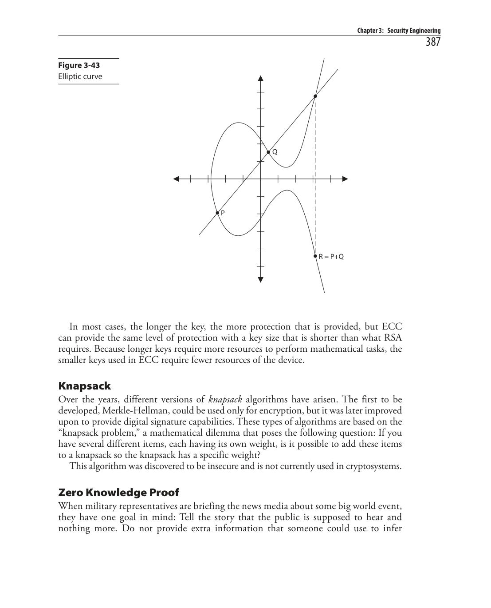
Figure 3-43
In most cases, the longer the key, the more protection that is provided, but ECC can provide the same level of protection with a key size that is shorter than what RSA requires. Because longer keys require more resources to perform mathematical tasks, the smaller keys used in ECC require fewer resources of the device.
Knapsack
Over the years, different versions ofknapsackalgorithms have arisen. The first to be developed, Merkle-Hellman, could be used only for encryption, but it was later improved upon to provide digital signature capabilities. These types of algorithms are based on the “knapsack problem,” a mathematical dilemma that poses the following question: If you have several different items, each having its own weight, is it possible to add these items to a knapsack so the knapsack has a specific weight? This algorithm was discovered to be insecure and is not currently used in cryptosystems.
Zero Knowledge Proof
When military representatives are briefing the news media about some big world event, they have one goal in mind: Tell the story that the public is supposed to hear and nothing more. Do not provide extra information that someone could use to infer
more information than they are supposed to know. The military has this goal because it knows that not just the good guys are watching CNN. This is an example ofzero knowledge proof. You tell someone just the information they need to know without “giving up the farm.” Zero knowledge proof is used in cryptography also. For example, if Irene encrypts something with her private key, you can verify her private key was used by decrypting the data with her public key. By encrypting something with her private key, Irene is proving to you that she has her private key—but she does not give or show you her private key. Irene does not “give up the farm” by disclosing her private key. In a zero knowledge proof, the verifier cannot prove to another entity that this proof is real because the verifier does not have the private key to prove it. So, only the owner of the private key can prove she has possession of the key.
Message Integrity
Parity bits and cyclic redundancy check (CRC) functions have been used in protocols to detect modifications in streams of bits as they are passed from one computer to another, but they can usually detect only unintentional modifications. Unintentional modifications can happen if a spike occurs in the power supply, if there is interference or attenuation on a wire, or if some other type of physical condition happens that causes the corruption of bits as they travel from one destination to another. Parity bits cannot identify whether a message was captured by an intruder, altered, and then sent on to the intended destination. The intruder can just recalculate a new parity value that includes his changes, and the receiver would never know the difference. For this type of protection, hash algorithms are required to successfully detect intentional and unintentional unauthorized modifications to data. We will now dive into hash algorithms and their characteristics.
The One-Way Hash
Aone-way hashis a function that takes a variable-length string (a message) and produces a fixed-length value called a hash value. For example, if Kevin wants to send a message to Maureen and he wants to ensure the message does not get altered in an unauthorized fashion while it is being transmitted, he would calculate a hash value for the message and append it to the message itself. When Maureen receives the message, she performs the same hashing function Kevin used and then compares her result with the hash value sent with the message. If the two values are the same, Maureen can be sure the message was not altered during transmission. If the two values are different, Maureen knows the message was altered, either intentionally or unintentionally, and she discards the message. The hashing algorithm is not a secret—it is publicly known. The secrecy of the oneway hashing function is its “one-wayness.” The function is run in only one direction, not the other direction. This is different from the one-way function used in public key
cryptography, in which security is provided based on the fact that, without knowing a trapdoor, it is very hard to perform the one-way function backward on a message and come up with readable plaintext. However, one-way hash functions are never used in reverse; they create a hash value and call it a day. The receiver does not attempt to reverse the process at the other end, but instead runs the same hashing function one way and compares the two results. The hashing one-way function takes place without the use of any keys. This means, for example, that if Cheryl writes a message, calculates a message digest, appends the digest to the message, and sends it on to Scott, Bruce can intercept this message, alter Cheryl’s message, recalculate another message digest, append it to the message, and send it on to Scott. When Scott receives it, he verifies the message digest, but never knows the message was actually altered by Bruce. Scott thinks the message came straight from Cheryl and was never modified because the two message digest values are the same. If Cheryl wanted more protection than this, she would need to usemessage authentication code (MAC). A MAC function is an authentication scheme derived by applying a secret key to a message in some form. This does not mean the symmetric key is used to encrypt the message, though. You should be aware of three basic types of MAC functions: a hash MAC (HMAC), CBC-MAC, and CMAC.
HMAC
In the previous example, if Cheryl were to use an HMAC function instead of just a plain hashing algorithm, a symmetric key would be concatenated with her message. The result of this process would be put through a hashing algorithm, and the result would be a MAC value. This MAC value would then be appended to her message and sent to Scott. If Bruce were to intercept this message and modify it, he would not have the necessary symmetric key to create the MAC value that Scott will attempt to generate. Figure 3-44 walks through these steps. The top portion of Figure 3-44 shows the steps of a hashing process:
1.The sender puts the message through a hashing function. 2.A message digest value is generated. 3.The message digest is appended to the message. 4.The sender sends the message to the receiver. 5.The receiver puts the message through a hashing function. 6.The receiver generates her own message digest value. 7.The receiver compares the two message digest values. If they are the same, the message has not been altered.
The bottom half of Figure 3-44 shows the steps of an HMAC function:
1.The sender concatenates a symmetric key with the message. 2.The result is put through a hashing algorithm.
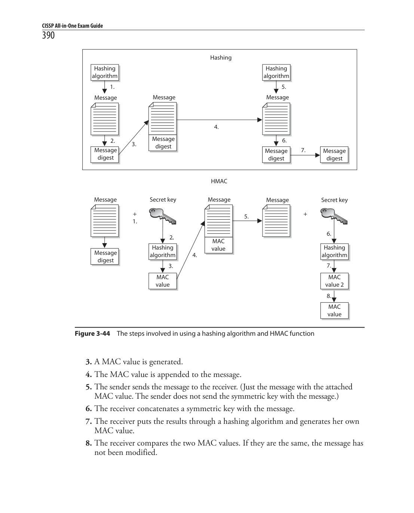
Figure 3-44The steps involved in using a hashing algorithm and HMAC function
3.A MAC value is generated. 4.The MAC value is appended to the message. 5.The sender sends the message to the receiver. (Just the message with the attached MAC value. The sender does not send the symmetric key with the message.) 6.The receiver concatenates a symmetric key with the message. 7.The receiver puts the results through a hashing algorithm and generates her own MAC value. 8.The receiver compares the two MAC values. If they are the same, the message has not been modified.
Now, when we say that the message is concatenated with a symmetric key, we don’t mean a symmetric key is used to encrypt the message. The message is not encrypted in an HMAC function, so there is no confidentiality being provided. Think about throwing a message in a bowl and then throwing a symmetric key in the same bowl. If you dump the contents of the bowl into a hashing algorithm, the result will be a MAC value. This type of technology requires the sender and receiver to have the same symmetric key. The HMAC function does not involve getting the symmetric key to the destination securely. That would have to happen through one of the other technologies we have discussed already (Diffie-Hellman and key agreement, or RSA and key exchange).
CBC-MAC
If aCipher Block Chaining Message Authentication Code (CBC-MAC)is being used, the message is encrypted with a symmetric block cipher in CBC mode, and the output of the final block of ciphertext is used as the MAC. The sender does not send the encrypted version of the message, but instead sends the plaintext version and the MAC attached to the message. The receiver receives the plaintext message and encrypts it with the same symmetric block cipher in CBC mode and calculates an independent MAC value. Thereceiver compares the new MAC value with the MAC value sent with the message. This method does not use a hashing algorithm as does HMAC. The use of the symmetric key ensures that the only person who can verify the integrity of the message is the person who has a copy of this key. No one else can verify the data’s integrity, and if someone were to make a change to the data, he could not generate the MAC value (HMAC or CBC-MAC) the receiver would be looking for. Any modifications would be detected by the receiver. Now the receiver knows that the message came from the system that has the other copy of the same symmetric key, so MAC provides a form of authentication. It provides data origin authentication, sometimes referred to assystem authentication. This is different from user authentication, which would require the use of a private key. A private key is bound to an individual; a symmetric key is not. MAC authentication provides the weakest form of authentication because it is not bound to a user, just to a computer or device.
The same key should not be used for authentication and encryption.
As with most things in security, the industry found some security issues with CBC- MAC and createdCipher-Based Message Authentication Code (CMAC). CMAC provides the same type of data origin authentication and integrity as CBC-MAC, but is more secure mathematically. CMAC is a variation of CBC-MAC. It is approved to work with
AES and Triple-DES. CRCs are used to identify data modifications, but these are commonly used lower in the network stack. Since these functions work lower in the network stack, they are used to identify modifications (as in corruption) when the packet is transmitted from one computer to another. HMAC, CBC-MAC, and CMAC work higher in the network stack and can identify not only transmission errors (accidental), but also more nefarious modifications, as in an attacker messing with a message for her own benefit. This means all of these technologies (except CRC) can identify intentional, unauthorized modifications and accidental changes—three in one! So here is how CMAC works: The symmetric algorithm (AES or 3DES) creates the symmetric key. This key is used to create subkeys. The subkeys are used individually to encrypt the individual blocks of a message as shown in Figure 3-45. This is exactly how CBC-MAC works, but with some better math that works underneath the hood. The math that is underneath is too deep for the CISSP exam. To understand more about this math, please visit http://csrc.nist.gov/publications/nistpubs/800-38B/SP_800-38B.pdf. Although digging into the CMAC mathematics is too deep for the CISSP exam, what you do need to know is that it is a block cipher–based message authentication code algorithm and how the foundations of the algorithm type works.
A newer block mode combines CTR mode and CBC-MAC and is calledCCM. The goal of using this mode is to provide both data origin authentication and encryption through the use of the same key. One key value is used for the counter values for CTR mode encryption and the IV value for CBC-MAC operations. The IEEE 802.11i wireless security standard outlines the use of CCM mode for the block cipher AES.
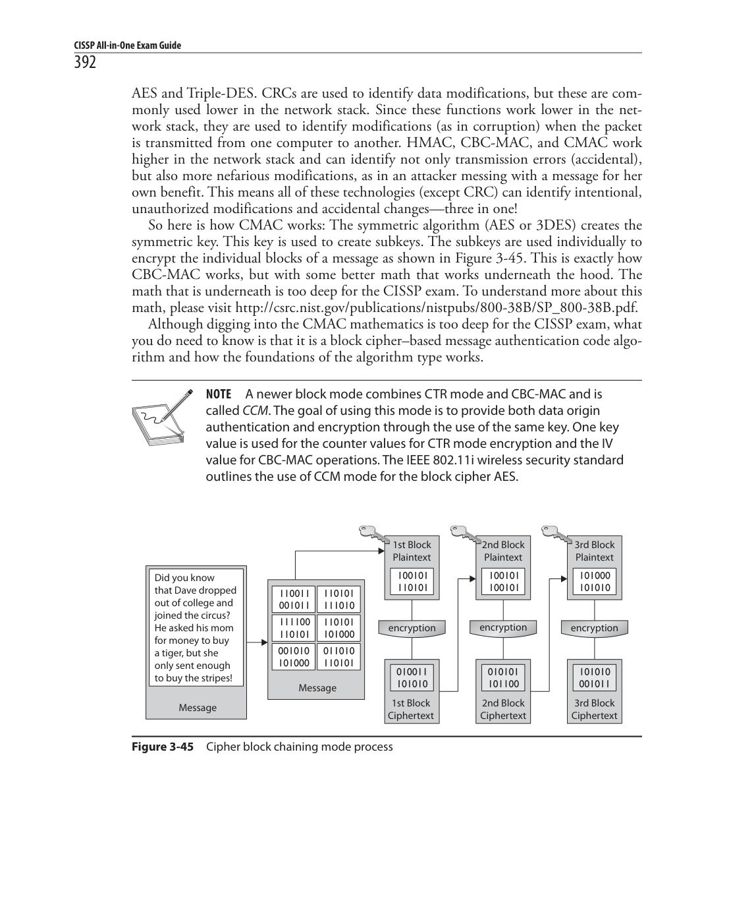
Figure 3-45Cipher block chaining mode process
Hashes, HMACs, CBC-MACs, CMACs—Oh My!
MACs and hashing processes can be confusing. The following table simplifies the differences between them.
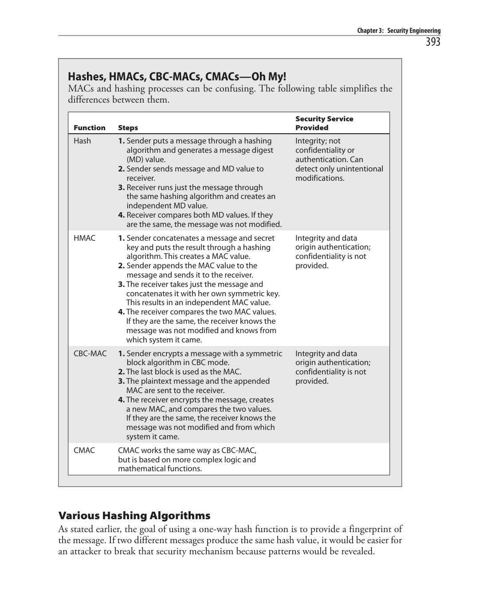
Hash1.Sender puts a message through a hashingIntegrity; not
Various Hashing Algorithms
As stated earlier, the goal of using a one-way hash function is to provide a fingerprint of the message. If two different messages produce the same hash value, it would be easier for an attacker to break that security mechanism because patterns would be revealed.
A strong one-hash function should not provide the same hash value for two or more different messages. If a hashing algorithm takes steps to ensure it does not create the same hash value for two or more messages, it is said to becollision free. Strong cryptographic hash functions have the following characteristics:
The hash should be computed over the entire message.
- The hash should be a one-way function so messages are not disclosed by their
- values.
Given a message and its hash value, computing another message with the same
- hash value should be impossible.
The function should be resistant to birthday attacks (explained in the upcoming
- section “Attacks Against One-Way Hash Functions”).
Table 3-2 and the following sections quickly describe some of the available hashing algorithms used in cryptography today.
MD4
MD4is a one-way hash function designed by Ron Rivest. It also produces a 128-bit message digest value. It was used for high-speed computation in software implementations and was optimized for microprocessors. It is no longer considered secure.
MD5
MD5was also created by Ron Rivest and is the newer version of MD4. It still produces a 128-bit hash, but the algorithm is more complex, which makes it harder to break. MD5 added a fourth round of operations to be performed during the hashing functions and makes several of its mathematical operations carry out more steps or more complexity to provide a higher level of security. Recent research has shown MD5 to be subject to collision attacks, and it is therefore no longer suitable for applications like SSL certificates and digital signatures that require collision attack resistance. It is still
Message Digest 4 (MD4) algorithmProduces a 128-bit hash value.
commonly used for file integrity checksums, such as those required by some intrusion detection systems, as well as for forensic evidence integrity.
SHA
SHAwas designed by NSA and published by NIST to be used with the Digital Signature Standard (DSS), which is discussed a bit later in more depth. SHA was designed to be used in digital signatures and was developed when a more secure hashing algorithm was required for U.S. government applications. SHA produces a 160-bit hash value, or message digest. This is then inputted into an asymmetric algorithm, which computes the signature for a message. SHA is similar to MD4. It has some extra mathematical functions and produces a 160-bit hash instead of a 128-bit hash, which makes it more resistant to brute-force attacks, including birthday attacks. SHA was improved upon and renamed SHA-1. Recently, SHA-1 was found to be vulnerable to collisions and is no longer considered secure for applications requiring collision resistance. Newer versions of this algorithm (collectively known as the SHA-2 and SHA-3 families) have been developed and released: SHA-256, SHA-384, and SHA-512. The SHA-2 and SHA-3 families are considered secure for all uses.
Attacks Against One-Way Hash Functions
A strong hashing algorithm does not produce the same hash value for two different messages. If the algorithm does produce the same value for two distinctly different messages, this is called acollision. An attacker can attempt to force a collision, which is referred to as abirthday attack. This attack is based on the mathematical birthday paradox that exists in standard statistics. Now hold on to your hat while we go through this—it is a bit tricky: How many people must be in the same room for the chance to be greater than even that another person has the same birthday as you?
Answer:253
How many people must be in the same room for the chance to be greater than even that at least two people share the same birthday?
Answer:23
This seems a bit backward, but the difference is that in the first instance, you are looking for someone with a specific birthday date that matches yours. In the second instance, you are looking for any two people who share the same birthday. There is a higher probability of finding two people who share a birthday than of finding another person who shares your birthday. Or, stated another way, it is easier to find two matching values in a sea of values than to find a match for just one specific value. Why do we care? The birthday paradox can apply to cryptography as well. Since any random set of 23 people most likely (at least a 50 percent chance) includes two people
who share a birthday, by extension, if a hashing algorithm generates a message digest of 60 bits, there is a high likelihood that an adversary can find a collision using only 2inputs. The main way an attacker can find the corresponding hashing value that matches a specific message is through a brute-force attack. If he finds a message with a specific hash value, it is equivalent to finding someone with a specific birthday. If he finds two messages with the same hash values, it is equivalent to finding two people with the same birthday. The output of a hashing algorithm isn, and to find a message through a brute-force attack that results in a specific hash value would require hashing 2random messages. To take this one step further, finding two messages that hash to the same value would require review of only 2messages.
How Would a Birthday Attack Take Place?
Sue and Joe are going to get married, but before they do, they have a prenuptial contract drawn up that states if they get divorced, then Sue takes her original belongings and Joe takes his original belongings. To ensure this contract is not modified, it is hashed and a message digest value is created. One month after Sue and Joe get married, Sue carries out some devious activity behind Joe’s back. She makes a copy of the message digest value without anyone knowing. Then she makes a new contract that states that if Joe and Sue get a divorce, Sue owns both her own original belongings and Joe’s original belongings. Sue hashes this new contract and compares the new message digest value with the message digest value that correlates with the contract. They don’t match. So Sue tweaks her contract ever so slightly and creates another message digest value and compares them. She continues to tweak her contract until she forces a collision, meaning her contract creates the same message digest value as the original contract. Sue then changes out the original contract with her new contract and quickly divorces Joe. When Sue goes to collect Joe’s belongings and he objects, she shows him that no modification could have taken place on the original document because it still hashes out to the same message digest. Sue then moves to an island. Hash algorithms usually use message digest sizes (the value ofn) that are large enough to make collisions difficult to accomplish, but they are still possible. An algorithm that has 160-bit output, like SHA-1, may require approximately 2computations to break. This means there is a less than 1 in 2chance that someone could carry out a successful birthday attack. The main point of discussing this paradox is to show how important longer hashing values truly are. A hashing algorithm that has a larger bit output is less vulnerable to brute-force attacks such as a birthday attack. This is the primary reason why the new versions of SHA have such large message digest values.
Digital Signatures
Adigital signatureis a hash value that has been encrypted with the sender’s private key. The act of signing means encrypting the message’s hash value with a private key, as shown in Figure 3-46.
Figure 3-46Creating a digital signature for a message
From our earlier example in the section “The One-Way Hash,” if Kevin wants to ensure that the message he sends to Maureen is not modifiedandhe wants her to be sure it came only from him, he can digitally sign the message. This means that a one-way hashing function would be run on the message, and then Kevin would encrypt that hash value with his private key. When Maureen receives the message, she will perform the hashing function on the message and come up with her own hash value. Then she will decrypt the sent hash value (digital signature) with Kevin’s public key. She then compares the two values, and if they are the same, she can be sure the message was not altered during transmission. She is also sure the message came from Kevin because the value was encrypted with his private key. The hashing function ensures the integrity of the message, and the signing of the hash value provides authentication and nonrepudiation. The act of signing just means the value was encrypted with a private key. We need to be clear on all the available choices within cryptography, because different steps and algorithms provide different types of security services:
A message can be encrypted, which provides confidentiality.
- A message can be hashed, which provides integrity.
- A message can be digitally signed, which provides authentication,
- nonrepudiation, and integrity.
A message can be encrypted and digitally signed, which provides confidentiality,
- authentication, nonrepudiation, and integrity.
Some algorithms can only perform encryption, whereas others support digital signatures and encryption. When hashing is involved, a hashing algorithm is used, not an encryption algorithm. It is important to understand that not all algorithms can necessarily provide all security services. Most of these algorithms are used in some type of combination to provide all the necessary security services required of an environment. Table 3-3 shows the services provided by the algorithms.
Digital Signature Standard
Because digital signatures are so important in proving who sent which messages, the U.S. government decided to establish standards pertaining to their functions and acceptable use. In 1991, NIST proposed a federal standard called theDigital Signature Standard (DSS). It was developed for federal departments and agencies, but most vendors also designed their products to meet these specifications. The federal government requires its departments to use DSA, RSA, or the elliptic curve digital signature algorithm (ECDSA)
RSAXXX
and SHA. SHA creates a 160-bit message digest output, which is then inputted into one of the three mentioned digital signature algorithms. SHA is used to ensure the integrity of the message, and the other algorithms are used to digitally sign the message. This is an example of how two different algorithms are combined to provide the right combination of security services. RSA and DSA are the best known and most widely used digital signature algorithms. DSA was developed by the NSA. Unlike RSA, DSA can be used only for digital signatures, and DSA is slower than RSA in signature verification. RSA can be used for digital signatures, encryption, and secure distribution of symmetric keys.
Public Key Infrastructure
Public key infrastructure(PKI)consists of programs, data formats, procedures, communication protocols, security policies, and public key cryptographic mechanisms working in a comprehensive manner to enable a wide range of dispersed people to communicate in a secure and predictable fashion. In other words, a PKI establishes a level of trust within an environment. PKI is an ISO authentication framework that uses public key cryptography and the X.509 standard. The framework was set up to enable authentication to happen across different networks and the Internet. Particular protocols and algorithms are not specified, which is why PKI is called a framework and not a specific technology. PKI provides authentication, confidentiality, nonrepudiation, and integrity of the messages exchanged. It is ahybridsystem of symmetric and asymmetric key algorithms and methods, which were discussed in earlier sections. There is a difference between public key cryptography and PKI. Public key cryptography is another name for asymmetric algorithms, while PKI is what its name states—it is an infrastructure. The infrastructure assumes that the receiver’s identity can be positively ensured through certificates and that an asymmetric algorithm will automatically carry out the process of key exchange. The infrastructure therefore contains the pieces that will identify users, create and distribute certificates, maintain and revoke certificates, distribute and maintain encryption keys, and enable all technologies to communicate and work together for the purpose of encrypted communication and authentication. Public key cryptography is one piece in PKI, but many other pieces make up this infrastructure. An analogy can be drawn with the e-mail protocol Simple Mail Transfer Protocol (SMTP). SMTP is the technology used to get e-mail messages from here to there, but many other things must be in place before this protocol can be productive. We need e-mail clients, e-mail servers, and e-mail messages, which together build a type of infrastructure—an e-mail infrastructure. PKI is made up of many different parts: certificate authorities, registration authorities, certificates, keys, and users. The following sections explain these parts and how they all work together.
Certificate Authorities
Each person who wants to participate in a PKI requires a digital certificate, which is a credential that contains the public key for that individual along with other identifying information. The certificate is created and signed (digital signature) by a trusted third
party, which is acertificate authority(CA). When the CA signs the certificate, it binds the individual’s identity to the public key, and the CA takes liability for the authenticity of that individual. It is this trusted third party (the CA) that allows people who have never met to authenticate to each other and to communicate in a secure method. If Kevin has never met Dave but would like to communicate securely with him, and they both trust the same CA, then Kevin could retrieve Dave’s digital certificate and start the process. A CA is a trusted organization (or server) that maintains and issues digital certificates. When a person requests a certificate, theregistration authority (RA)verifies that individual’s identity and passes the certificate request off to the CA. The CA constructs the certificate, signs it, sends it to the requester, and maintains the certificate over its lifetime. When another person wants to communicate with this person, the CA will basically vouch for that person’s identity. When Dave receives a digital certificate from Kevin, Dave will go through steps to validate it. Basically, by providing Dave with his digital certificate, Kevin is stating, “I know you don’t know or trust me, but here is this document that was created by someone you do know and trust. The document says I am a good guy and you should trust me.” Once Dave validates the digital certificate, he extracts Kevin’s public key, which is embedded within it. Now Dave knows this public key is bound to Kevin. He also knows that if Kevin uses his private key to create a digital signature and Dave can properly decrypt it using this public key, it did indeed come from Kevin.
Remember the man-in-the-middle attack covered earlier in the section “The Diffie-Hellman Algorithm”? This attack is possible if two users are not working in a PKI environment and do not truly know the identity of the owners of the public keys. Exchanging digital certificates can thwart this type of attack.
Diagram (p. 434)
The CA can be internal to an organization. Such a setup would enable the company to control the CA server, configure how authentication takes place, maintain the certificates, and recall certificates when necessary. Other CAs are organizations dedicated to this type of service, and other individuals and companies pay them to supply it. Some well-known CAs are Entrust and VeriSign. All browsers have several well-known CAs configured by default. Most are configured to trust dozens or hundreds of CAs.
More and more organizations are setting up their own internal PKIs. When these independent PKIs need to interconnect to allow for secure communication to take place (either between departments or between different companies), there must be a way for the two root CAs to trust each other. The two CAs do not have a CA above them they can both trust, so they must carry out cross certification.Cross certificationis the process undertaken by CAs to establish a trust relationship in which they rely upon each other’s digital certificates and public keys as if they had issued them themselves. When this is set up, a CA for one company can validate digital certificates from the other company and vice versa. The CA is responsible for creating and handing out certificates, maintaining them, and revoking them if necessary. Revocation is handled by the CA, and the revoked certificate information is stored on acertificate revocation list (CRL). This is a list of every certificate that has been revoked. This list is maintained and updated periodically. A certificate may be revoked because the key holder’s private key was compromised or because the CA discovered the certificate was issued to the wrong person. An analogy for the use of a CRL is how a driver’s license is used by a police officer. If an officer pulls over Sean for speeding, the officer will ask to see Sean’s license. The officer will then run a check on the license to find out if Sean is wanted for any other infractions of the law and to verify the license has not expired. The same thing happens when a person compares a certificate to a CRL. If the certificate became invalid for some reason, the CRL is the mechanism for the CA to let others know this information.
CRLs are the thorn in the side of many PKI implementations. They are challenging for a long list of reasons. By default, web browsers do not check a CRL to ensure that a certificate is not revoked. So when you are setting up an SSL connection to do e-commerce over the Internet, you could be relying on a certificate that has actually been revoked. Not good. Online Certificate Status Protocol(OCSP)is being used more and more rather than the cumbersome CRL approach. When using just a CRL, either the user’s browser must check a central CRL to find out if the certification has been revoked, or the CA has to continually push out CRL values to the clients to ensure they have an updated CRL. If OCSP is implemented, it does this work automatically in the background. It carries out real-time validation of a certificate and reports back to the user whether the certificate is valid, invalid, or unknown. OCSP checks the CRL that is maintained by
the CA. Sothe CRL is still being used, but now we have a protocol developed specifically to check the CRL during a certificate validation process.
Certificates
One of the most important pieces of a PKI is its digital certificate. Acertificateis the mechanism used to associate a public key with a collection of components in a manner that is sufficient to uniquely identify the claimed owner. The standard for how the CA creates the certificate isX.509, which dictates the different fields used in the certificate and the valid values that can populate those fields. The most commonly used version is 3 of this standard, which is often denoted as X.509v3. Many cryptographic protocols use this type of certificate, including SSL. The certificate includes the serial number, version number, identity information, algorithm information, lifetime dates, and the signature of the issuing authority, as shown in Figure 3-47.
The Registration Authority
Theregistration authority (RA)performs the certification registration duties. The RA establishes and confirms the identity of an individual, initiates the certification process with a CA on behalf of an end user, and performs certificate life-cycle management functions. The RA cannot issue certificates, but can act as a broker between the user and the CA. When users need new certificates, they make requests to the RA, and the RA verifies all necessary identification information before allowing a request to go to the CA.
Figure 3-47Each certificate has a structure with all the necessary identifying information in it.
PKI Steps
Now that we know some of the main pieces of a PKI and how they actually work together, let’s walk through an example. First, suppose that John needs to obtain a digital certificate for himself so he can participate in a PKI. The following are the steps to do so:
1.John makes a request to the RA. 2.The RA requests certain identification information from John, such as a copy of his driver’s license, his phone number, his address, and other identifying information. 3.Once the RA receives the required information from John and verifies it, the RAsends his certificate request to the CA. 4.The CA creates a certificate with John’s public key and identity information embedded. (The private/public key pair is generated either by the CA or on John’s machine, which depends on the systems’ configurations. If it is created at the CA, his private key needs to be sent to him by secure means. In most cases, the user generates this pair and sends in his public key during the registration process.)
Now John is registered and can participate in a PKI. John and Diane decide they want to communicate, so they take the following steps, shown in Figure 3-48:
1.John requests Diane’s public key from a public directory. 2.The directory, sometimes called a repository, sends Diane’s digital certificate. 3.John verifies the digital certificate and extracts her public key. John uses this public key to encrypt a session key that will be used to encrypt their messages. John sends the encrypted session key to Diane. John also sends his certificate, containing his public key, to Diane. 4.When Diane receives John’s certificate, her browser looks to see if it trusts the CA that digitally signed this certificate. Diane’s browser trusts this CA and, after she verifies the certificate, both John and Diane can communicate using encryption.
Figure 3-48
A PKI may be made up of the following entities and functions:
Certification authority
- Registration authority
- Certificate repository
- Certificate revocation system
- Key backup and recovery system
- Automatic key update
- Management of key histories
- Timestamping
- Client-side software
- PKI supplies the following security services:
Confidentiality
- Access control
- Integrity
- Authentication
- Nonrepudiation
- A PKI must retain a key history, which keeps track of all the old and current public keys that have been used by individual users. For example, if Kevin encrypted a symmetric key with Dave’s old public key, there should be a way for Dave to still access this data. This can only happen if the CA keeps a proper history of Dave’s old certificates and keys.
Another important component that must be integrated into a PKI is a reliable time source that provides a way for secure timestamping. This comes into play when true nonrepudiation is required.
Key Management
Cryptography can be used as a security mechanism to provide confidentiality, integrity, and authentication, but not if the keys are compromised in any way. The keys can be captured, modified, corrupted, or disclosed to unauthorized individuals. Cryptography is based on a trust model. Individuals must trust each other to protect their own keys; trust the administrator who is maintaining the keys; and trust a server that holds, maintains, and distributes the keys.
Many administrators know that key management causes one of the biggest headaches in cryptographic implementation. There is more to key maintenance than using them to encrypt messages. The keys must be distributed securely to the right entities and updated continuously. They must also be protected as they are being transmitted and while they are being stored on each workstation and server. The keys must be generated, destroyed, and recovered properly. Key management can be handled through manual or automatic processes. The keys are stored before and after distribution. When a key is distributed to a user, it does not just hang out on the desktop. It needs a secure place within the file system to be stored and used in a controlled method. The key, the algorithm that will use the key, configurations, and parameters are stored in a module that also needs to be protected. If an attacker is able to obtain these components, she could masquerade as another user and decrypt, read, and re-encrypt messages not intended for her. Historically, physical cryptographic keys were kept in secured boxes and delivered by escorted couriers. The keys could be distributed to a main server, and then the local administration would distribute them, or the courier would visit each computer individually. Some implementations distributed a master key to a site, and then that key was used to generate unique secret keys to be used by individuals at that location. Today, most key distributions are handled by a protocol through automated means and not manually by an individual. A company must evaluate the overhead of key management, the required security level, and cost-benefit issues to decide how it will conduct key management, but overall, automation provides a more accurate and secure approach. When using the Kerberos protocol (which we will describe in Chapter 5), a Key Distribution Center (KDC) is used to store, distribute, and maintain cryptographic session and secret keys. This method provides an automated method of key distribution. The computer that wants to access a service on another computer requests access via the KDC. The KDC then generates a session key to be used between the requesting computer and the computer providing the requested resource or service. The automation of this process reduces the possible errors that can happen through a manual process, but if the ticket-granting service (TGS) portion of the KDC gets compromised in any way, then all the computers and their services are affected and possibly compromised. In some instances, keys are still managed through manual means. Unfortunately, although many companies use cryptographic keys, they rarely, if ever, change them, either because of the hassle of key management or because the network administrator is already overtaxed with other tasks or does not realize the task actually needs to take place. The frequency of use of a cryptographic key has a direct correlation to how often the key should be changed. The more a key is used, the more likely it is to be captured and compromised. If a key is used infrequently, then this risk drops dramatically. The necessary level of security and the frequency of use can dictate the frequency of key updates. A mom-and-pop diner might only change its cryptography keys every month, whereas an information warfare military unit might change them every day or every week. The important thing is to change the keys using a secure method.
Key management is the most challenging part of cryptography and also the most crucial. It is one thing to develop a very complicated and complex algorithm and key method, but if the keys are not securely stored and transmitted, it does not really matter how strong the algorithm is.
Key Management Principles
Keys should not be in cleartext outside the cryptography device. As stated previously, many cryptography algorithms are known publicly, which puts more stress on protecting the secrecy of the key. If attackers know how the actual algorithm works, in many cases, all they need to figure out is the key to compromise a system. This is why keys should not be available in cleartext—the key is what brings secrecy to encryption. These steps, and all of key distribution and maintenance, should be automated and hidden from the user. These processes should be integrated into software or the operating system. It only adds complexity and opens the doors for more errors when processes are done manually and depend upon end users to perform certain functions. Keys are at risk of being lost, destroyed, or corrupted. Backup copies should be available and easily accessible when required. If data is encrypted and then the user accidentally loses the necessary key to decrypt it, this information would be lost forever if there were not a backup key to save the day. The application being used for cryptography may have key recovery options, or it may require copies of the keys to be kept in a secure place. Different scenarios highlight the need for key recovery or backup copies of keys. For example, if Bob has possession of all the critical bid calculations, stock value information, and corporate trend analysis needed for tomorrow’s senior executive presentation, and Bob has an unfortunate confrontation with a bus, someone is going to need to access this data after the funeral. As another example, if an employee leaves the company and has encrypted important documents on her computer before departing, the company would probably still want to access that data later. Similarly, if the vice president did not know that running a large magnet over the USB drive that holds his private key was not a good idea, he would want his key replaced immediately instead of listening to a lecture about electromagnetic fields and how they rewrite sectors on media. Of course, having more than one key increases the chance of disclosure, so a company needs to decide whether it wants to have key backups and, if so, what precautions to put into place to protect them properly. A company can choose to have multiparty control for emergency key recovery. This means that if a key must be recovered, more than one person is needed for this process. The key recovery process could require two or more other individuals to present their private keys or authentication information. These individuals should not all be members of the IT department. There should be a member from management, an individual from security, and one individual from the IT department, for example. All of these requirements reduce the potential for abuse and would require collusion for fraudulent activities to take place.
Rules for Keys and Key Management
Key management is critical for proper protection. The following are responsibilities that fall under the key management umbrella:
The key length should be long enough to provide the necessary level
- ofprotection.
Keys should be stored and transmitted by secure means.
- Keys should be extremely random, and the algorithm should use the full
- spectrum of the keyspace.
The key’s lifetime should correspond with the sensitivity of the data it is
- protecting. (Less secure data may allow for a longer key lifetime, whereas more sensitive data might require a shorter key lifetime.)
The more the key is used, the shorter its lifetime should be.
- Keys should be backed up or escrowed in case of emergencies.
- Keys should be properly destroyed when their lifetime comes to an end.
- Key escrowis a process or entity that can recover lost or corrupted cryptographic keys; thus, it is a common component of key recovery operations. When two or more entities are required to reconstruct a key for key recovery processes, this is known asmultiparty key recovery. Multiparty key recovery implements dual control, meaning that two or more people have to be involved with a critical task.
Trusted Platform Module
TheTrusted Platform Module (TPM)is a microchip installed on the motherboard of modern computers and is dedicated to carrying out security functions that involve the storage and processing of symmetric and asymmetric keys, hashes, and digital certificates. The TPM was devised by the Trusted Computing Group (TCG), an organization that promotes open standards to help strengthen computing platforms against security weaknesses and attacks. The essence of the TPM lies in a protected and encapsulated microcontroller security chip that provides a safe haven for storing and processing security-intensive data such as keys, passwords, and digital certificates. The use of a dedicated and encoded hardware-based platform drastically improves the Root of Trust of the computing system while allowing for a vastly superior implementation and integration of security features. The introduction of TPM has made it much harder to access information on computing devices without proper authorization and allows for effective detection of malicious configuration changes to a computing platform.
TPM Uses
The most common usage scenario of the TPM is tobinda hard disk drive, where the content of a given hard disk drive is affixed with a particular computing system. The content of the hard disk drive is encrypted, and the decryption key is stored away in the TPM chip. To ensure safe storage of the decryption key, it is further “wrapped” with another encryption key. Binding a hard disk drive makes its content basically inaccessible to other systems, and any attempt to retrieve the drive’s content by attaching it to another system will be very difficult. However, in the event of the TPM chip’s failure, the hard drive’s content will be rendered useless, unless a backup of the key has been escrowed. Another application of the TPM issealinga system’s state to a particular hardware and software configuration. Sealing a computing system through TPM is used to deter any attempts to tamper with a system’s configurations. In practice, this is similar to how hashes are used to verify the integrity of files shared over the Internet (or any other untrusted medium). Sealing a system is fairly straightforward. The TPM generates hash values based on the system’s configuration files and stores them in its memory. A sealed system will only be activated once the TPM verifies the integrity of the system’s configuration by comparing it with the original “sealing” value. The TPM is essentially a securely designed microcontroller with added modules to perform cryptographic functions. These modules allow for accelerated and storage processing of cryptographic keys, hash values, and pseudonumber sequences. The TPM’s internal storage is based on nonvolatile random access memory (NVRAM), which retains its information when power is turned off and is therefore termednonvolatile. TPM’s internal memory is divided into two different segments: persistent (static) and versatile (dynamic) memory modules.
Persistent Memory
Two kinds of keys are present in the static memory:
Endorsement Key (EK)A public/private key pair that is installed in the TPM
- at the time of manufacture and cannot be modified. The private key is always present inside the TPM, while the public key is used to verify the authenticity of the TPM itself. The EK, installed in the TPM, is unique to that TPM and its platform.
Storage Root Key (SRK)The master wrapping key used to secure the keys
- stored in the TPM.
Versatile Memory
Three kinds of keys (or values) are present in the versatile memory:
Attestation Identity Key (AIK)Used for the attestation of the TPM chip
- itself to service providers. The AIK is linked to the TPM’s identity at the time of development, which in turn is linked to the TPM’s Endorsement Key. Therefore, the AIK ensures the integrity of the EK.
Platform Configuration Registers (PCR)Used to store cryptographic hashes
- of data used for TPM’s “sealing” functionality.
Storage keysUsed to encrypt the storage media of the computer system.
Attacks on Cryptography
Eavesdropping and sniffing data as it passes over a network are consideredpassive attacks because the attacker is not affecting the protocol, algorithm, key, message, or any parts of the encryption system. Passive attacks are hard to detect, so in most cases methods are put in place to try to prevent them rather than to detect and stop them. Altering messages, modifying system files, and masquerading as another individual are acts that are consideredactive attacksbecause the attacker is actually doing something instead of sitting back and gathering data. Passive attacks are usually used to gain information prior to carrying out an active attack. The common attack vectors in cryptography are key, algorithm, implementation, data, and people. We should assume that the attacker knows what algorithm we are using and that the attacker has access to all encrypted text. The following sections address some active attacks that relate to cryptography.
Diagram (p. 443)
Ciphertext-Only Attacks
In this type of attack, the attacker has the ciphertext of several messages. Each of the messages has been encrypted using the same encryption algorithm. The attacker’s goal is to discover the key used in the encryption process. Once the attacker figures out the key, she can decrypt all other messages encrypted with the same key. Aciphertext-only attackis the most common type of active attack because it is very easy to get ciphertext by sniffing someone’s traffic, but it is the hardest attack to actually be successful at because the attacker has so little information about the encryption process.
Known-Plaintext Attacks
Inknown-plaintext attacks, the attacker has the plaintext and corresponding ciphertext of one or more messages. Again, the goal is to discover the key used to encrypt the messages so other messages can be deciphered and read. Messages usually start with the same type of beginning and close with the same type of ending. An attacker might know that each message a general sends out to his commanders always starts with certain greetings and ends with specific salutations and the general’s name and contact information. In this instance, the attacker has some of the plaintext (the data that is the same on each message) and can capture an encrypted message, and therefore capture the ciphertext. Once a few pieces of the puzzle are discovered, the rest is accomplished by reverse-engineering, frequency analysis, and brute-force attempts. Known-plaintext attacks were used by the United States against the Germans and the Japanese during World War II.
Chosen-Plaintext Attacks
Inchosen-plaintext attacks, the attacker has the plaintext and ciphertext, but can choose the plaintext that gets encrypted to see the corresponding ciphertext. This gives the attacker more power and possibly a deeper understanding of the way the encryption process works so she can gather more information about the key being used. Once the key is discovered, other messages encrypted with that key can be decrypted. How would this be carried out? Doris can e-mail a message to you that she thinks you not only will believe, but will also panic about, encrypt, and send to someone else. Suppose Doris sends you an e-mail that states, “The meaning of life is 42.” You may think you have received an important piece of information that should be concealed from others, everyone except your friend Bob, of course. So you encrypt Doris’s message and send it to Bob. Meanwhile Doris is sniffing your traffic and now has a copy of the plaintext of the message, because she wrote it, and a copy of the ciphertext.
Chosen-Ciphertext Attacks
Inchosen-ciphertext attacks, the attacker can choose the ciphertext to be decrypted and has access to the resulting decrypted plaintext. Again, the goal is to figure out the key. This is a harder attack to carry out compared to the previously mentioned attacks, and the attacker may need to have control of the system that contains the cryptosystem.
All of these attacks have a derivative form, the names of which are the same except for putting the word “adaptive” in front of them, such as adaptive chosen-plaintext and adaptive chosen-ciphertext. What this means is that the attacker can carry out one of these attacks and, depending upon what she gleaned from that first attack, modify her next attack. This is the process of reverse-engineering or cryptanalysis attacks: using what you learned to improve your next attack.
Differential Cryptanalysis
This type of attack also has the goal of uncovering the key that was used for encryption purposes. This attack looks at ciphertext pairs generated by encryption of plaintext pairs with specific differences and analyzes the effect and result of those differences. One such attack was invented in 1990 as an attack against DES, and it turned out to be an effective and successful attack against DES and other block algorithms. The attacker takes two messages of plaintext and follows the changes that take place to the blocks as they go through the different S-boxes. (Each message is being encrypted with the same key.) The differences identified in the resulting ciphertext values are used to map probability values to different possible key values. The attacker continues this process with several more sets of messages and reviews the common key probability values. One key value will continue to show itself as the most probable key used in the encryption processes. Since the attacker chooses the different plaintext messages for this attack, it is considered a type of chosen-plaintext attack.
Public vs. Secret Algorithms
The public mainly uses algorithms that are known and understood versus the secret algorithms where the internal processes and functions are not released to the public. In general, cryptographers in the public sector feel as though the strongest and best-engineered algorithms are the ones released for peer review and public scrutiny, because a thousand brains are better than five, and many times some smarty-pants within the public population can find problems within an algorithm that the developers did not think of. This is why vendors and companies have competitions to see if anyone can break their code and encryption processes. If someone does break it, that means the developers must go back to the drawing board and strengthen this or that piece. Not all algorithms are released to the public, such as the ones developed by the NSA. Because the sensitivity level of what the NSA encrypts is so important, it wants as much of the process to be as secret as possible. The fact that the NSA does not release its algorithms for public examination and analysis does not mean its algorithms are weak. Its algorithms are developed, reviewed, and tested by many of the top cryptographic pros around, and are of very high quality.
Linear Cryptanalysis
Linear cryptanalysisis another type of attack that carries out functions to identify the highest probability of a specific key employed during the encryption process using a block algorithm. The attacker carries out a known-plaintext attack on several different messages encrypted with the same key. The more messages the attacker can use and put through this type of attack, the higher the confidence level in the probability of a specific key value. The attacker evaluates the input and output values for each S-box. He evaluates the probability of input values ending up in a specific combination. Identifying specific output combinations allows him to assign probability values to different keys until one shows a continual pattern of having the highest probability.
Side-Channel Attacks
All of the attacks we have covered thus far have been based mainly on the mathematics of cryptography. Using plaintext and ciphertext involves high-powered mathematical tools that are needed to uncover the key used in the encryption process. But what if we took a different approach? Let’s say we see something that looks like a duck, walks like a duck, sounds like a duck, swims in water, and eats bugs and small fish. We could confidently conclude that this is a duck. Similarly, in cryptography, we can review facts and infer the value of an encryption key. For example, we could detect how much power consumption is used for encryption and decryption (the fluctuation of electronic voltage). We could also intercept the radiation emissions released and then calculate how long the processes took. Looking around the cryptosystem, or its attributes and characteristics, is different from looking into the cryptosystem and trying to defeat it through mathematical computations. If Omar wants to figure out what you do for a living, but he doesn’t want you to know he is doing this type of reconnaissance work, he won’t ask you directly. Instead, he will find out when you go to work and when you come home, the types of clothing you wear, the items you carry, and whom you talk to—or he can just follow you to work. These are examples ofside channels. So, in cryptography, gathering “outside” information with the goal of uncovering the encryption key is just another way of attacking a cryptosystem. An attacker could measure power consumption, radiation emissions, and the time it takes for certain types of data processing. With this information, he can work backward by reverse-engineering the process to uncover an encryption key or sensitive data. A power attack reviews the amount of heat released. This type of attack has been successful in uncovering confidential information from smart cards. In 1995, RSA private keys were uncovered by measuring the relative time cryptographic operations took. The idea is that instead of attacking a device head on, just watch how it performs to figure out how it works. In biology, scientists can choose to carry out a noninvasive experiment, which will watch an organism eat, sleep, mate, and so on. This type of approach learns about the organism through understanding its behaviors instead of killing it and looking at it from the inside out.
Replay Attacks
A big concern in distributed environments is thereplay attack, in which an attacker captures some type of data and resubmits it with the hopes of fooling the receiving device into thinking it is legitimate information. Many times, the data captured and resubmitted is authentication information, and the attacker is trying to authenticate herself as someone else to gain unauthorized access. Timestamps and sequence numbers are two countermeasures to replay attacks. Packets can contain sequence numbers, so each machine will expect a specific number on each receiving packet. If a packet has a sequence number that has been previously used, this is an indication of a replay attack. Packets can also be timestamped. A threshold can be set on each computer to only accept packets within a certain timeframe. If a packet is received that is past this threshold, it can help identify a replay attack.
Algebraic Attacks
Algebraic attacksanalyze the vulnerabilities in the mathematics used within the algorithm and exploit the intrinsic algebraic structure. For instance, attacks on the “textbook” version of the RSA cryptosystem exploit properties of the algorithm, such as the fact that the encryption of a raw “0” message is “0.”
Analytic Attacks
Analytic attacksidentify algorithm structural weaknesses or flaws, as opposed to bruteforce attacks, which simply exhaust all possibilities without respect to the specific properties of the algorithm. Examples include the Double DES attack and RSA factoring attack.
Statistical Attacks
Statistical attacksidentify statistical weaknesses in algorithm design for exploitation—for example, if statistical patterns are identified, as in the number of zeros compared to the number of ones. For instance, a random number generator (RNG) may be biased. If keys are taken directly from the output of the RNG, then the distribution of keys would also be biased. The statistical knowledge about the bias could be used to reduce the search time for the keys.
Social Engineering Attacks
Attackers can trick people into providing their cryptographic key material through various social engineering attack types. Social engineering attacks are carried out on people with the goal of tricking them into divulging some type of sensitive information that can be used by the attacker. The attacker may convince the victim that he is a security administrator that requires the cryptographic data for some type of operational effort. The attacker could then use the data to decrypt and gain access to sensitive data. The attacks can be carried out through persuasion, coercion (rubber-hose cryptanalysis), or bribery (purchase-key attack).
Meet-in-the-Middle Attacks
This term refers to a mathematical analysis used to try and break a math problem from both ends. It is a technique that works on the forward mapping of a function and the inverse of the second function at the same time. The attack works by encrypting from one end and decrypting from the other end, thusmeeting in the middle.
Site and Facility Security
Let’s recap briefly where we’ve been so far in this chapter. We covered a variety of computing architectures and how to evaluate the security of systems built upon them. Since it is critical to protect not only our computing systems but also the information that makes them useful to us, we included a lengthy discussion on cryptography. This gives us a very solid base on which to engineer security into our systems. (We defer the discussion on network issues until the next chapter.) Unfortunately, this is not enough. If skilled attackers can have “alone time” with our systems, the odds are very good that they will be able to compromise the security of those systems. We must then ensure that we make it difficult for unauthorized persons to gain physical access in the first place. Many people in the information security field do not think as much aboutphysical security as they do aboutinformationandcomputersecurity and the associated hackers, ports, malware, and technology-oriented security countermeasures. But information security without proper physical security could be a waste of time. Physical security has a different set of vulnerabilities, threats, and countermeasures from that of computer and information security. The set for physical security has more to do with physical destruction, intruders, environmental issues, theft, and vandalism. When security professionals look atinformationsecurity, they think about how someone can enter an environment in an unauthorized manner through a port, wireless access point, or software exploitation. When security professionals look atphysicalsecurity, they are concerned with how people can physically enter an environment and cause an array of damages. The threats that an organization faces fall into these broad categories:
Natural environmental threatsFloods, earthquakes, storms and tornadoes,
- fires, extreme temperature conditions, and so forth
Supply system threatsPower distribution outages, communications
- interruptions, and interruption of other resources such as water, gas, air filtration, and so on
Manmade threatsUnauthorized access (both internal and external),
- explosions, damage by disgruntled employees, employee errors and accidents, vandalism, fraud, theft, and others
Politically motivated threatsStrikes, riots, civil disobedience, terrorist attacks,
- bombings, and so forth
Inallsituations,theprimaryconsideration,aboveallelse,isthatnothing shouldimpedelife safetygoals. When we discuss life safety, protecting human life is
the first priority. Good planning helps balance life safety concerns and other security measures. For example, barring a door to prevent unauthorized physical intrusion might prevent individuals from being able to escape in the event of a fire. Life safety goals should always take precedence over all other types of goals; thus, this door might allow insiders to exit through it after pushing an emergency bar, but not allow external entities in. As we consider site and facility security, we must implementlayered defense models, which means that physical controls should work together in a tiered architecture. The concept is that if one layer fails, other layers will protect the valuable asset. Layers would be implemented moving from the perimeter toward the asset. For example, you would have a fence, then your facility walls, then an access control card device, then a guard, then an IDS, and then locked computer cases and safes. This series of layers will protect the company’s most sensitive assets, which would be placed in the innermost control zone of the environment. So if the bad guy were able to climb over your fence and outsmart the security guard, he would still have to circumvent several layers of controls before getting to your precious resources and systems. Security needs to protect all the assets of the organization and enhance productivity by providing a secure and predictable environment. Good security enables employees to focus on their tasks at hand and encourages attackers to move on to an easier target. We’ll next look at physical security that can affect theavailabilityof company resources, theintegrityof the assets and environment, and theconfidentialityof the data and business processes.
The Site Planning Process
A designer, or team of designers, needs to be identified to create or improve upon an organization’s current site and facility security program. The team must work with management to define the objectives of the program, design the program, and develop performance-based metrics and evaluation processes to ensure the objectives are continually being met. The objectives of the site and facility security program depend upon the level of protection required for the various assets and the company as a whole. And this required level of protection, in turn, depends upon the organization’s acceptable risk level. This acceptable risk level should be derived from the laws and regulations with which the organization must comply and from the threat profile of the organization overall. This requires identifying who and what could damage business assets, identifying the types of attacks and crimes that could take place, and understanding the business impact of these threats. The type of physical countermeasures required and their adequacy or inadequacy need to be measured against the organization’s threat profile. A financial institution has a much different threat profile, and thus a much different acceptable risk level, when compared to a grocery store. The threat profile of a hospital is different from the threat profile of a military base or a government agency. The team must understand the types of adversaries it must consider, the capabilities of these adversaries, and the resources and tactics these individuals would use. (Review Chapter 1 for a discussion of acceptable risk-level concepts.)
Physical security is a combination of people, processes, procedures, technology, and equipment to protect resources. The design of a solid physical security program should be methodical and should weigh the objectives of the program and the available resources. Although every organization is different, the approach to constructing and maintaining a physical security program is the same. The organization must first define the vulnerabilities, threats, threat agents, and targets.
Remember that a vulnerability is a weakness and a threat is the potential that someone will identify this weakness and use it against you. The threat agent is the person or mechanism that actually exploits this identified vulnerability. Threats can be grouped into categories such as internal and external threats. Internal threats may include faulty technology, fire hazards, or employees who aim to damage the company in some way. Employees have intimate knowledge of the company’s facilities and assets, which is usually required to perform tasks and responsibilities—but this makes it easier for the insider to carry out damaging activity without being noticed. Unfortunately, a large threat to companies can be their own security guards, which is usually not realized until it is too late. These people have keys and access codes to all portions of a facility and usually work during employee off-hours. This gives the guards ample windows of opportunity to carry out their crimes. It is critical for a company to carry out a background investigation, or to pay a company to perform this service, before hiring a security guard. If you hire a wolf to guard the chicken coop, things can get ugly. External threats come in many different forms as well. Government buildings are usually chosen targets for some types of political revenge. If a company performs abortions or conducts animal research, then activists are usually a large and constant threat. And, of course, banks and armored cars are tempting targets for organized crime members. A threat that is even trickier to protect against iscollusion, in which two or more people work together to carry out fraudulent activity. Many criminal cases have uncovered insiders working with outsiders to defraud or damage a company. The types of controls for this type of activity are procedural protection mechanisms. This may include separation of duties, preemployment background checks, rotations of duties, and supervision. As with any type of security, most attention and awareness surrounds the exciting and headline-grabbing tidbits about large crimes being carried out and criminals being captured. In information security, most people are aware of viruses and hackers, but not of the components that make up a corporate security program. The same is true for physical security. Many people talk about current robberies, murders, and other criminal activity at the water cooler, but do not pay attention to the necessary framework that should be erected and maintained to reduce these types of activities. An organization’s physical security program should address the following goals: Crime and disruption prevention through deterrenceFences, security
- guards, warning signs, and so forth
Reduction of damage through the use of delaying mechanismsLayers of
- defenses that slow down the adversary, such as locks, security personnel, and barriers
Crime or disruption detectionSmoke detectors, motion detectors, CCTV,
- and so forth
Incident assessmentResponse of security guards to detected incidents and
- determination of damage level
Response proceduresFire suppression mechanisms, emergency response
- processes, law enforcement notification, and consultation with outside security professionals
So, an organization should try to prevent crimes and disruptions from taking place, but must also plan to deal with them when they do happen. A criminal should be delayed in her activities by having to penetrate several layers of controls before gaining access to a resource. All types of crimes and disruptions should be able to be detected through components that make up the physical security program. Once an intrusion is discovered, a security guard should be called upon to assess the situation. The security guard must then know how to properly respond to a large range of potentially dangerous activities. The emergency response activities could be carried out by the organization’s internal security team or by outside experts. This all sounds straightforward enough, until the team responsible for developing the physical security program looks at all the possible threats, the finite budget that the team has to work with, and the complexity of choosing the right combination of countermeasures and ensuring that they all work together in a manner that ensures no gaps of protection. All of these components must be understood in depth before the design of a physical security program can begin. As with all security programs, it is possible to determine how beneficial and effective your physical security program is only if it is monitored through aperformance-based approach. This means you should devise measurements and metrics to gauge the effectiveness of your countermeasures. This enables management to make informed business decisions when investing in the protection of the organization’s physical security. The goal is to increase the performance of the physical security program and decrease the risk to the company in a cost-effective manner. You should establish a baseline of performance and thereafter continually evaluate performance to make sure that the company’s protection objectives are being met. The following list provides some examples of possible performance metrics:
Number of successful crimes
- Number of successful disruptions
- Number of unsuccessful crimes
- Number of unsuccessful disruptions
- Time between detection, assessment, and recovery steps
- Business impact of disruptions
- Number of false-positive detection alerts
- Time it took for a criminal to defeat a control
- Time it took to restore the operational environment
- Financial loss of a successful crime
- Financial loss of a successful disruption
- Capturing and monitoring these types of metrics enables the organization to identify deficiencies, evaluate improvement measures, and perform cost/benefit analyses.
Metrics are becoming more important in all domains of security because organizations need to allocate the necessary controls and countermeasures to mitigate risks in a cost-beneficial manner. You can’t manage what you can’t measure. The physical security team needs to carry out a risk analysis, which will identify the organization’s vulnerabilities, threats, and business impacts. The team should present these findings to management and work with management to define an acceptable risk level for the physical security program. From there, the team must develop baselines (minimum levels of security) and metrics in order to evaluate and determine if the baselines are being met by the implemented countermeasures. Once the team identifies and implements the countermeasures, the performance of these countermeasures should be continually evaluated and expressed in the previously created metrics. These performance values are compared to the set baselines. If the baselines are continually maintained, then the security program is successful because the company’s acceptable risk level is not being exceeded. This is illustrated in Figure 3-49.
Figure 3-49Relationships of risk, baselines, and countermeasures
Similarities in Approaches
The risk analysis steps that need to take place for the development of a physical security program are similar to the steps outlined for the development of an organizational security program and for business impact analysis (both covered in Chapter1), because each of these processes (development of an information security program, a physical security program, or a business continuity plan) accomplishes goals that are similar to the goals of the other two processes, but with different focuses. Each process requires a team to carry out a risk analysis to determine the company’s threats and risks. An information security program looks at the internal and external threats to resources and data through business processes and technological means. Business continuity planning looks at how natural disasters and disruptions could damage the organization, while a physical security program looks at internal and external physical threats to the company resources. Each requires a solid risk analysis process. Review Chapter 1 to understand the core components of every risk analysis.
So, before an effective physical security program can be rolled out, the following steps must be taken:
1.Identify a team of internal employees and/or external consultants who will build the physical security program through the following steps. 2.Define the scope of the effort: site or facility. 3.Carry out a risk analysis to identify the vulnerabilities and threats and to calculate the business impact of each threat. 4.Identify regulatory and legal requirements that the organization must meet andmaintain. 5.Work with management to define an acceptable risk level for the physical security program. 6.Derive the required performance baselines from the acceptable risk level. 7.Create countermeasure performance metrics. 8.Develop criteria from the results of the analysis, outlining the level of protection and performance required for the following categories of the security program: Deterrence
- Delaying
- Detection
- Assessment
- Response
- 9.Identify and implement countermeasures for each program category.
10.Continuously evaluate countermeasures against the set baselines to ensure the acceptable risk level is not exceeded.
Legal Requirements
In physical security there are some regulatory and high-level legal requirements that must be met, but many of them just have high-level statements, as in “protect personnel” or “implement lifesaving controls.” It is up to the organization to figure out how to actually meet these requirements in a practical manner. In the United States there is a lot of case law that pertains to physical security requirements, which is built upon precedence. This means that there have been lawsuits pertaining to specific physical security instances and a judgment was made on liability. For example, there is no law that dictates that you must put up a yellow sign indicating that a floor is wet. Many years ago someone somewhere slipped on a wet floor and sued the company, and the judge ruled that the company was negligent and liable for the person’s injuries. Now it is built into many company procedures that after a floor is mopped or there is a spill, this yellow sign is put in place so no one will fall and sue the company. It is hard to think about and cover all of these issues since there is no specific checklist to follow. This is why it is a good idea to consult with a physical security expert when developing a physical security program.
Once these steps have taken place then the team is ready to move forward in its actual design phase. The design will incorporate the controls required for each category of the program: deterrence, delaying, detection, assessment, and response. We will dig deeper into these categories and their corresponding controls later in the chapter in the section “Designing a Physical Security Program.” One of the most commonly used approaches in physical security program development is described in the following section.
Crime Prevention Through Environmental Design
Crime Prevention Through Environmental Design(CPTED)is a discipline that outlines how the proper design of a physical environment can reduce crime by directly affecting human behavior. It provides guidance in loss and crime prevention through proper facility construction and environmental components and procedures. CPTED concepts were developed in the 1960s. They have been expanded upon and have matured as our environments and crime types have evolved. CPTED has been used not just to develop corporate physical security programs, but also for large-scale activities such as development of neighborhoods, towns, and cities. It addresses landscaping, entrances, facility and neighborhood layouts, lighting, road placement, and traffic circulation patterns. It looks at microenvironments, such as offices and restrooms, and macroenvironments, like campuses and cities. The crux of CPTED is that the physical
environment can be manipulated to create behavioral effects that will reduce crime and the fear of crime. It looks at the components that make up the relationship between humans and their environment. This encompasses the physical, social, and psychological needs of the users of different types of environments and predictable behaviors of these users and offenders. CPTED provides guidelines on items some of us might not consider. For example, hedges and planters around a facility should not be higher than 2.5 feet tall so they cannot be used to gain access to a window. A data center should be located at the center of a facility so the facility’s walls will absorb any damages from external forces, instead of the data center itself. Street furnishings (benches and tables) encourage people to sit and watch what is going on around them, which discourages criminal activity. A corporation’s landscape should not include wooded areas or other places where intruders can hide. CCTV cameras should be mounted in full view so that criminals know their activities will be captured and other people know that the environment is well monitored and thus safer. CPTED and target hardening are two different approaches.Target hardeningfocuses on denying access through physical and artificial barriers (alarms, locks, fences, and so on). Traditional target hardening can lead to restrictions on the use, enjoyment, and aesthetics of an environment. Sure, we can implement hierarchies of fences, locks, and intimidating signs and barriers—but how pretty would that be? If your environment is a prison, this look might be just what you need. But if your environment is an office building, you’re not looking for Fort Knox décor. Nevertheless, you still must provide the necessary levels of protection, but your protection mechanisms should be more subtle and unobtrusive. Let’s say your organization’s team needs to protect a side door at your facility. The traditional target-hardening approach would be to put locks, alarms, and cameras on the door; install an access control mechanism, such as a proximity reader; and instruct security guards to monitor this door. The CPTED approach would be to ensure there is no sidewalk leading to this door from the front of the building if you don’t want customers using it. The CPTED approach would also ensure no tall trees or bushes block the ability to view someone using this door. Barriers such as trees and bushes may make intruders feel more comfortable in attempting to break in through a secluded door. The best approach is usually to build an environment from a CPTED approach and then apply the target-hardening components on top of the design where needed. If a parking garage were developed using the CPTED approach, the stair towers and elevators within the garage might have glass windows instead of metal walls, so people would feel safer, and potential criminals would not carry out crimes in this more visible environment. Pedestrian walkways would be created such that people could look out across the rows of cars and see any suspicious activities. The different rows for cars to park in would be separated by low walls and structural pillars, instead of solid walls, to allow pedestrians to view activities within the garage. The goal is to not provide any hidden areas where criminals can carry out their crimes and to provide an open-viewed area so if a criminal does attempt something malicious, there is a higher likelihood of someone seeing it.
CPTED provides three main strategies to bring together the physical environment and social behavior to increase overall protection: natural access control, natural surveillance, and natural territorial reinforcement.
Natural Access Control
Natural access controlis the guidance of people entering and leaving a space by the placement of doors, fences, lighting, and even landscaping. For example, an office building may have external bollards with lights in them, as shown in Figure 3-50. These bollards actually carry out different safety and security services. The bollards themselves protect the facility from physical destruction by preventing people from driving their cars into the building. The light emitted helps ensure that criminals do not have a dark place to hide. And the lights and bollard placement guide people along the sidewalk to the entrance, instead of using signs or railings. As shown in Figure 3-50, the landscape, sidewalks, lighted bollards, and clear sight lines are used as natural access controls. They work together to give individuals a feeling of being in a safe environment and help dissuade criminals by working as deterrents.
Bollards are short posts commonly used to prevent vehicular access and to protect a building or people walking on a sidewalk from vehicles. They can also be used to direct foot traffic.
Figure 3-50Sidewalks, lights, and landscaping can be used for protection.
Clear lines of sight and transparency can be used to discourage potential offenders, because of the absence of places to hide or carry out criminal activities. The CPTED model shows howsecurity zonescan be created. An environment’s space should be divided into zones with different security levels, depending upon who needs to be in that zone and the associated risk. The zones can be labeled as controlled, restricted, public, or sensitive. This is conceptually similar to information classification, as described in Chapter 2. In a data classification program, different classifications are created, along with data handling procedures and the level of protection that each classification requires. The same is true of physical zones. Each zone should have a specific protection level required of it, which will help dictate the types of controls that should be put into place.
Access control should be in place to control and restrict individuals from going from one security zone to the next. Access control should also be in place for all facility entrances and exits. The security program development team needs to consider other ways in which intruders can gain access to buildings, such as by climbing adjacent trees to access skylights, upper-story windows, and balconies. The following controls are commonly used for access controls within different organizations:
Limit the number of entry points.
- Force all guests to go to a front desk and sign in before entering the environment.
Diagram (p. 457)
Reduce the number of entry points even further after hours or during the
- weekend, when not as many employees are around.
Implement sidewalks and landscaping to guide the public to a main entrance.
- Implement a back driveway for suppliers and deliveries that is not easily
- accessible to the public.
Provide lighting for the pathways the public should follow to enter a building to
- help encourage use of only one entry for access.
Implement sidewalks and grassy areas to guide vehicle traffic to only enter and
- exit through specific locations.
Provide parking in the front of the building (not the back or sides) so people will
- be directed to enter the intended entrance.
These types of access controls are used all of the time, and we usually do not think about them. They are built into the natural environment to manipulate us into doing what the owner of the facility wants us to do. When you are walking on a sidewalk that leads to an office front door and there are pretty flowers on both sides of the sidewalk, know that they are put there because people tend not to step off a sidewalk and crush pretty flowers. Flowers are commonly placed on both sides of a sidewalk to help ensure that people stay on the sidewalk. Subtle and sneaky, but these control mechanisms work. More obvious access barriers can be naturally created (cliffs, rivers, hills), existing manmade elements (railroad tracks, highways), or artificial forms designed specifically to impede movement (fences, closing streets). These can be used in tandem or separately to provide the necessary level of access control.
Natural Surveillance
Surveillance can also take place through organized means (security guards), mechanical means (CCTV), and natural strategies (straight lines of sight, low landscaping, raised entrances). The goal ofnatural surveillanceis to make criminals feel uncomfortable by providing many ways observers could potentially see them and to make all other people feel safe and comfortable by providing an open and well-designed environment. Natural surveillance is the use and placement of physical environmental features, personnel walkways, and activity areas in ways that maximize visibility. Figure 3-51 illustrates a stairway in a parking garage designed to be open and allow easy observation. Next time you are walking down a street and see a bench next to a building or you see a bench in a park, know that the city has not allocated funds for these benches just in case your legs get tired. These benches are strategically placed so that people will sit and watch other people. This is a very good surveillance system. The people who are watching others do not realize that they are actually protecting the area, but many criminals will identify them and not feel as confident in carrying out some type of malicious deed. Walkways and bicycle paths are commonly installed so that there will be a steady flow of pedestrians who could identify malicious activity. Buildings might have large windows that overlook sidewalks and parking lots for the same reason. Shorter fences might be
Figure 3-51Open areas reduce the likelihood of criminal activity.
installed so people can see what is taking place on both sides of the fence. Certain highrisk areas have more lighting than what is necessary so that people from a distance can see what is going on. These high-risk areas could be stairs, parking areas, bus stops, laundry rooms, children’s play areas, dumpsters, and recycling stations. These constructs help people protect people without even knowing it.
Natural Territorial Reinforcement
The third CPTED strategy is naturalterritorial reinforcement, which creates physical designs that emphasize or extend the company’s physical sphere of influence so legitimate users feel a sense of ownership of that space. Territorial reinforcement can be implemented through the use of walls, fences, landscaping, light fixtures, flags, clearly marked addresses, and decorative sidewalks. The goal of territorial reinforcement is to create a sense of a dedicated community. Companies implement these elements so employees feel proud of their environment and have a sense of belonging, which they will defend if required to do so. These elements are also implemented to give potential offenders the impression that they do not belong there, that their activities are at risk of being observed, and that their illegal activities will not be tolerated or ignored.
Most corporate environments use a mix of the CPTED and target-hardening approaches. CPTED deals mainly with the construction of the facility, its internal and external designs, and exterior components such as landscaping and lighting. If the environment is built based on CPTED, then the target hardening is like icing on the cake. The target-hardening approach applies more granular protection mechanisms, such as locks and motion detectors. The rest of the chapter looks at physical controls that can be used in both models.
Designing a Physical Security Program
If a team is organized to assess the protection level of an existing facility, it needs to investigate the following:
Construction materials of walls and ceilings
- Power distribution systems
- Communication paths and types (copper, telephone, fiber)
- Surrounding hazardous materials
- Exterior components:
- Topography
- Proximity to airports, highways, railroads
- Potential electromagnetic interference from surrounding devices
- Climate
- Soil
- Existing fences, detection sensors, cameras, barriers
- Operational activities that depend upon physical resources
- Vehicle activity
- Neighbors
- To properly obtain this information, the team should do physical surveys and interview various employees. All of this collected data will help the team to evaluate the current controls, identify weaknesses, and ensure operational productivity is not negatively affected by implementing new controls. Although there are usually written policies and procedures on whatshouldbe taking place pertaining to physical security, policies and reality do not always match up. It is important for the team to observe how the facility is used, note daily activities that could introduce vulnerabilities, and determine how the facility is protected. This information should be documented and compared to the information within the written policy and procedures. In most cases, existing gaps must be addressed and fixed. Just writing out a policy helps no one if it is not actually followed.
Every organization must comply with various regulations, whether they be safety and health regulations; fire codes; state and local building codes; Departments of Defense, Energy, or Labor requirements; or some other agency’s regulations. The organization may also have to comply with requirements of the Occupational Safety and Health Administration (OSHA) and the Environmental Protection Agency (EPA), if it is operating in the United States, or with the requirements of equivalent organizations within another country. The physical security program development team must understand all the regulations the organization must comply with and how to reach compliance through physical security and safety procedures. Legal issues must be understood and properly addressed as well. These issues may include access availability for the disabled, liability issues, the failure to protect assets, and so on. This long laundry list of items can get a company into legal trouble if it is not doing what it is supposed to. Occasionally, the legal trouble may take the form of a criminal case—for example, if doors default to being locked when power is lost and, as a result, several employees are trapped and killed during a fire, criminal negligence may be alleged. Legal trouble can also come in the form of civil cases—for instance, if a company does not remove the ice on its sidewalks and a pedestrian falls and breaks his ankle, the pedestrian may sue the company. The company may be found negligent and held liable for damages. Every organization should have afacility safety officer, whose main job is to understand all the components that make up the facility and what the company needs to do to protect its assets and stay within compliance. This person should oversee facility management duties day in and day out, but should also be heavily involved with the team that has been organized to evaluate the organization’s physical security program. A physical security program is a collection of controls that are implemented and maintained to provide the protection levels necessary to be in compliance with the physical security policy. The policy should embody all the regulations and laws that must be adhered to and should set the risk level the company is willing to accept. By this point, the team has carried out a risk analysis, which consisted of identifying the company’s vulnerabilities, threats, and business impact pertaining to the identified threats. The program design phase should begin with a structured outline, which will evolve into a framework. This framework will then be fleshed out with the necessary controls and countermeasures. The outline should contain the program categories and the necessary countermeasures. The following is a simplistic example:
I.Deterrence of criminal activity A.Fences B.Warning signs C.Security guards D.Dogs II.Delay of intruders to help ensure they can be caught A.Locks B.Defense-in-depth measures C.Access controls
III.Detection of intruders A.External intruder sensors B.Internal intruder sensors IV.Assessment of situations A.Security guard procedures B.Damage assessment criteria V.Response to intrusions and disruptions A.Communication structure (calling tree) B.Response force C.Emergency response procedures D.Police, fire, medical personnel
The team can then start addressing each phase of the security program, usually starting with the facility.
Facility
When a company decides to erect a building, it should consider several factors before pouring the first batch of concrete. Of course, it should review land prices, customer population, and marketing strategies, but as security professionals, we are more interested in the confidence and protection that a specific location can provide. Some organizations that deal with top-secret or confidential information and processes make their facilities unnoticeable so they do not attract the attention of would-be attackers. The building may be hard to see from the surrounding roads, the company signs and logos may be small and not easily noticed, and the markings on the building may not give away any information that pertains to what is going on inside that building. It is a type of urban camouflage that makes it harder for the enemy to seek out that company as a target. This is very common for telecommunication facilities that contain critical infrastructure switches and other supporting technologies. When driving down the road you might pass three of these buildings, but because they have no features that actually stand out, you likely would not even give them a second thought—which is the goal. A company should evaluate how close the facility would be to a police station, fire station, and medical facilities. Many times, the proximity of these entities raises the real estate value of properties, but for good reason. If a chemical company that manufactures highly explosive materials needs to build a new facility, it may make good business sense to put it near a fire station. (Although the fire station might not be so happy.) If another company that builds and sells expensive electronic devices is expanding and needs to move operations into another facility, police reaction time may be looked at when choosing one facility location over another. Each of these issues—police station, fire station, and medical facility proximity—can also reduce insurance rates and must be looked at carefully. Remember that the ultimate goal of physical security is to ensure the
safety of personnel. Always keep that in mind when implementing any sort of physical security control. Protect your fellow humans, be your brother’s keeper, andthenrun. Some buildings are placed in areas surrounded by hills or mountains to help prevent eavesdropping of electrical signals emitted by the facility’s equipment. In some cases, the organization itself will build hills or use other landscaping techniques to guard against eavesdropping. Other facilities are built underground or right into the side of a mountain for concealment and disguise in the natural environment, and for protection from radar tools, spying activities, and aerial bomb attacks. In the United States there is an Air Force base built into the Cheyenne Mountain close to Colorado Springs, Colorado. The base was built into the mountain and is made up of an inner complex of buildings, rooms, and tunnels. It has its own air intake supply, as well as water, fuel, and sewer lines. This is where the North American Aerospace Defense Command carries out its mission and apparently, according to many popular movies, is where you should be headed if the world is about to be blown up.
Construction
Physical construction materials and structure composition need to be evaluated for their appropriateness to the site environment, their protective characteristics, their utility, and their costs and benefits. Different building materials provide various levels of fire protection and have different rates of combustibility, which correlate with their fire ratings. When making structural decisions, the decision of what type of construction material to use (wood, concrete, or steel) needs to be considered in light of what the building is going to be used for. If an area will be used to store documents and old equipment, it has far different needs and legal requirements than if it is going to be used for employees to work in every day. Theload(how much weight can be held) of a building’s walls, floors, and ceilings needs to be estimated and projected to ensure the building will not collapse in different situations. In most cases, this is dictated by local building codes. The walls, ceilings, and floors must contain the necessary materials to meet the required fire rating and to protect against water damage. The windows (interior and exterior) may need to provide ultraviolet (UV) protection, may need to be shatterproof, or may need to be translucent or opaque, depending on the placement of the window and the contents of the building. The doors (exterior and interior) may need to have directional openings, have the same fire rating as the surrounding walls, prohibit forcible entries, display emergency egress markings, and—depending on placement—have monitoring and attached alarms. In most buildings, raised floors are used to hide and protect wires and pipes, and it is important to ensure any raised outlets are properly grounded. Building codes may regulate all of these issues, but there are still many options within each category that the physical security program development team should review for extra security protection. The right options should accomplish the company’s security and functionality needs and still be cost effective.
Ground
If you are holding a power cord plug that has two skinny metal pieces and one fatter, rounder metal piece, which all go into the outlet—what is that fatter, rounder piece for? It is a ground connector, which is supposed to act as the conduit for any excess current to ensure that people and devices are not negatively affected by a spike in electrical current. So, in the wiring of a building, where do you think this ground should be connected? Yep, to the ground. Old mother earth. But many buildings are not wired properly, and the ground connector is connected to nothing. This can be very dangerous, since the extra current has nowhere to escape but into our equipment or ourselves.
When designing and building a facility, the following major items need to be addressed from a physical security point of view.
Walls: Combustibility of material (wood, steel, concrete)
- Fire rating
- Reinforcements for secured areas
- Doors: Combustibility of material (wood, pressed board, aluminum)
- Fire rating
- Resistance to forcible entry
- Emergency marking
- Placement
- Locked or controlled entrances
- Alarms
- Secure hinges
- Directional opening
- Electric door locks that revert to an unlocked state for safe evacuation in power
- outages Type of glass—shatterproof or bulletproof glass requirements
- Ceilings: Combustibility of material (wood, steel, concrete)
- Fire rating
- Weight-bearing rating
- Drop-ceiling considerations
- Windows:
Translucent or opaque requirements
- Shatterproof
- Alarms
- Placement
- Accessibility to intruders
- Flooring:
Weight-bearing rating
- Combustibility of material (wood, steel, concrete)
- Fire rating
- Raised flooring
- Nonconducting surface and material
- Heating, ventilation, and air conditioning:
Positive air pressure
- Protected intake vents
- Dedicated power lines
- Emergency shutoff valves and switches
- Placement
- Electric power supplies:
Backup and alternative power supplies
- Clean and steady power source
- Dedicated feeders to required areas
- Placement and access to distribution panels and circuit breakers
- Water and gas lines:
Shutoff valves—labeled and brightly painted for visibility
- Positive flow (material flows out of building, not in)
- Placement—properly located and labeled
- Fire detection and suppression:
Placement of sensors and detectors
- Placement of suppression systems
- Type of detectors and suppression agents
- The risk analysis results will help the team determine the type of construction material that should be used when constructing a new facility. Several grades of building construction are available. For example,light frame construction materialprovides the least amount of protection against fire and forcible entry attempts. It is composed of untreated lumber that would be combustible during a fire. Light frame construction material is usually used to build homes, primarily because it is cheap, but also because homes typically are not under the same types of fire and intrusion threats that office buildings are. Heavy timber construction materialis commonly used for office buildings. Combustible lumber is still used in this type of construction, but there are requirements on the thickness and composition of the materials to provide more protection from fire. The construction materials must be at least 4 inches in thickness. Denser woods are used and are fastened with metal bolts and plates. Whereas light frame construction material has a fire survival rate of 30 minutes, the heavy timber construction material has a fire survival rate of one hour. A building could be made up ofincombustible material, such as steel, which provides a higher level of fire protection than the previously mentioned materials, but loses its strength under extreme temperatures, something that may cause the building to collapse. So, although the steel will not burn, it may melt and weaken. If a building consists of fire-resistant material, the construction material is fire retardant and may have steel rods encased inside of concrete walls and support beams. This provides the most protection against fire and forced entry attempts. The team should choose its construction material based on the identified threats of the organization and the fire codes to be complied with. If a company is just going to have some office workers in a building and has no real adversaries interested in destroying the facility, then the light frame or heavy timber construction material would be used. Facilities for government organizations, which are under threat by domestic and foreign terrorists, would be built with fire-resistant materials. A financial institution would also use fire-resistant and reinforcement material within its building. This is especially true for its exterior walls, through which thieves may attempt to drive vehicles to gain access to the vaults. Calculations of approximate penetration times for different types of explosives and attacks are based on the thickness of the concrete walls and the gauge of rebar used. (Rebar, short forreinforcing bar, refers to the steel rods encased within the concrete.) So even if the concrete were damaged, it would take longer to actually cut or break through the rebar. Using thicker rebar and properly placing it within the concrete provides even more protection. Reinforced walls, rebar, and the use of double walls can be used as delaying mechanisms. The idea is that it will take the bad guy longer to get through two reinforced walls, which gives the response force sufficient time (hopefully) to arrive at the scene and stop the attacker.
Entry Points
Understanding the company needs and types of entry points for a specific building is critical. The various types of entry points may include doors, windows, roof access, fire escapes, chimneys, and service delivery access points. Second and third entry points must
also be considered, such as internal doors that lead into other portions of the building and to exterior doors, elevators, and stairwells. Windows at the ground level should be fortified because they could be easily broken. Fire escapes, stairwells to the roof, and chimneys often are overlooked as potential entry points.
Ventilation ducts and utility tunnels can also be used by intruders and thus must be properly protected with sensors and access control mechanisms.
The weakest portion of the structure, usually its doors and windows, will likely be attacked first. With regard to doors, the weaknesses usually lie within the frames, hinges, and door material. The bolts, frames, hinges, and material that make up the door should all provide the same level of strength and protection. For example, if a company implements a heavy, nonhollow steel door but uses weak hinges that could be easily extracted, the company is just wasting money. The attacker can just remove the hinges and remove this strong and heavy door. The door and surrounding walls and ceilings should also provide the same level of strength. If another company has an extremely fortified and secure door, but the surrounding wall materials are made out of regular light frame wood, then it is also wasting money on doors. There is no reason to spend a lot of money on one countermeasure that can be easily circumvented by breaking a weaker countermeasure in proximity.
DoorsDifferent door types for various functionalities include the following:
Vault doors
- Personnel doors
- Industrial doors
- Vehicle access doors
- Bullet-resistant doors
- Doors can be hollow-core or solid-core. The team needs to understand the various entry types and the potential forced-entry threats, which will help the team determine what type of door should be implemented. Hollow-core doors can be easily penetrated by kicking or cutting them; thus, they are usually used internally. The team also has a choice of solid-core doors, which are made up of various materials to provide different fire ratings and protection from forced entry. As stated previously, the fire rating and protection level of the door need to match the fire rating and protection level of the surrounding walls. Bulletproof doors are also an option if there is a threat that damage could be done to resources by shooting through the door. These types of doors are constructed in a manner that involves sandwiching bullet-resistant and bulletproof material between wood or steel veneers to still give the door some aesthetic qualities while providing the necessary levels of protection.
Hinges and strike plates should be secure, especially on exterior doors or doors used to protect sensitive areas. The hinges should have pins that cannot be removed, and the door frames must provide the same level of protection as the door itself. Fire codes dictate the number and placement of doors with panic bars on them. These are the crossbars that release an internal lock to allow a locked door to open. Panic bars can be on regular entry doors and also on emergency exit doors. Those are the ones that usually have the sign that indicates the door is not an exit point and that an alarm will go off if the door is opened. It might seem like fun and a bit tempting to see if the alarm willreallygo off or not—but don’t try it. Security people are not known for their sense of humor. Mantraps and turnstiles can be used so unauthorized individuals entering a facility cannot get in or out if it is activated. Amantrapis a small room with two doors. The first door is locked; a person is identified and authenticated by a security guard, biometric system, smart card reader, or swipe card reader. Once the person is authenticated and access is authorized, the first door opens and allows the person into the mantrap. The first door locks and the person is trapped. The person must be authenticated again before the second door unlocks and allows him into the facility. Some mantraps use biometric systems that weigh the person who enters to ensure that only one person at a time is entering the mantrap area. This is a control to counter piggybacking. Doorways with automatic locks can be configured to be fail-safe or fail-secure. A fail-safesetting means that if a power disruption occurs that affects the automated locking system, the doors default to being unlocked. Fail-safe deals directly with protecting people. If people work in an area in which there is a fire or the power is lost, it is not a good idea to lock them in. Afail-secureconfiguration means that the doors default to being locked if there are any problems with the power. If people do not need to use specific doors for escape during an emergency, then these doors can most likely default to fail-secure settings.
Window TypesThough most of us would probably think of doors as the obvious entry points, windows deserve every bit as much attention in the design of secure facilities. Like doors, different types of windows afford various degrees of protection against intrusions. The following sums up the types of windows that can be used:
StandardNo extra protection. The cheapest and lowest level of protection.
- TemperedGlass is heated and then cooled suddenly to increase its integrity
- and strength.
AcrylicA type of plastic instead of glass. Polycarbonate acrylics are stronger
- than regular acrylics.
WiredA mesh of wire is embedded between two sheets of glass. This wire helps
- prevent the glass from shattering.
LaminatedThe plastic layer between two outer glass layers. The plastic layer
- helps increase its strength against breakage.
Solar window filmProvides extra security by being tinted and offers extra
- strength due to the film’s material.
Security filmTransparent film is applied to the glass to increase its strength.
Internal Compartments
Many components that make up a facility must be looked at from a security point of view.Internal partitionsare used to create barriers between one area and another. These partitions can be used to segment separate work areas, but should never be used in protected areas that house sensitive systems and devices. Many buildings have dropped ceilings, meaning the interior partitions do not extend to the true ceiling—only to the dropped ceiling. An intruder can lift a ceiling panel and climb over the partition. This example of intrusion is shown in Figure 3-52. In many situations, this would not require forced entry, specialized tools, or much effort. (In some office buildings, this may even be possible from a common public-access hallway.) These types of internal partitions should not be relied upon to provide protection for sensitive areas.
Computer and Equipment Rooms
It used to be necessary to have personnel within the computer rooms for proper maintenance and operations. Today, most servers, routers, switches, mainframes, and other equipment housed in computer rooms can be controlled remotely. This enables computers to live in rooms that have fewer people milling around and spilling coffee. Because the computer rooms no longer have personnel sitting and working in them for long periods, the rooms can be constructed in a manner that is efficient for equipment instead of people. On the other hand, there are situations in which people may have to be physically in the data center, perhaps for very extended periods of time (equipment installations/ upgrades, data center infrastructure upgrades and reconfigurations, incident response, forensic data acquisition, etc.). Consequently, the inhospitable conditions (cold, dry environment; lack of comfortable work spaces; extremely high decibel levels) should be taken into account when deploying such personnel.
Figure 3-52An intruder can lift ceiling panels and enter a secured area with little effort.
Smaller systems can be stacked vertically to save space. They should be mounted on racks or placed inside equipment cabinets. The wiring should be close to the equipment to save on cable costs and to reduce tripping hazards. Data centers, server rooms, and wiring closets should be located in the core areas of a facility, near wiring distribution centers. Strict access control mechanisms and procedures should be implemented for these areas. The access control mechanisms may be smart card readers, biometric readers, or combination locks. These restricted areas should have only oneaccessdoor, but fire code requirements typically dictate there must be at least two doors to most data centers and server rooms. Only one door should be used for daily entry and exit, and the other door should be used only in emergency situations. This second door should not be an access door, which means people should not be able to come in through this door. It should be locked, but should have a panic bar that will release the lock if pressed. These restricted areas ideally should not be directly accessible from public areas like stairways, corridors, loading docks, elevators, and restrooms. This helps ensure that the people who are by the doors to secured areas have a specific purpose for being there, versus being on their way to the restroom or standing around in a common area gossiping about the CEO. Because data centers usually hold expensive equipment and the company’s critical data, their protection should be thoroughly thought out before implementation. A data center should not be located on an upper floor of a building, because that would make accessing it in a timely fashion in case of a fire more difficult for an emergency crew. By the same token, data centers should not be located in basements where flooding can affect the systems. And if a facility is in a hilly area, the data center should be located well above ground level. Data centers should be located at the core of a building so that if there is some type of attack on the building, the exterior walls and structures will absorb the hit and hopefully the data center will not be damaged. Which access controls and security measures should be implemented for the data center depends upon the sensitivity of the data being processed and the protection level required. Alarms on the doors to the data processing center should be activated during off-hours, and there should be procedures dictating how to carry out access control during normal business hours, after hours, and during emergencies. If a combination lock is used to enter the data processing center, the combination should be changed at least every six months and also after an employee who knows the code leaves the company. The various controls discussed next are shown in Figure 3-53. The team responsible for designing a new data center (or evaluating a current data center) should understand all the controls shown in Figure 3-53 and be able to choose what is needed. The data processing center should be constructed as one room rather than different individual rooms. The room should be away from any of the building’s water pipes in case a break in a line causes a flood. The vents and ducts from the HVAC system should be protected with some type of barrier bars and should be too small for anyone to crawl through and gain access to the center. The data center must have positive air pressure, so no contaminants can be sucked into the room and into the computers’ fans.
Figure 3-53A data center should have many physical security controls.
Smoke detectors or fire sensors should be implemented, and portable fire extinguishers should be located close to the equipment and should be easy to see and access (see “Fire Prevention, Detection, and Suppression” later in the chapter for details). Water sensors should be placed under the raised floors. Since most of the wiring and cables run under the raised floors, it is important that water does not get to these places and, if it does, that an alarm sound if water is detected.
If there is any type of water damage in a data center or facility, mold and mildew could easily become a problem. Instead of allowing things to “dry out on their own,” many times it is better to use industry-strength dehumidifiers, water movers, and sanitizers to ensure secondary damage does not occur. Water can cause extensive damage to equipment, flooring, walls, computers, and facility foundations. It is important that an organization be able to detect leaks and unwanted water. The detectors should be under raised floors and on dropped ceilings (to detect leaks from the floor above it). The location of the detectors should be documented and
their position marked for easy access. As smoke and fire detectors should be tied to an alarm system, so should water detectors. The alarms usually just alert the necessary staff members and not everyone in the building. The staff members who are responsible for following up when an alarm sounds should be trained properly on how to reduce any potential water damage. Before anyone pokes around to see where water is or is not pooling in places it does not belong, the electricity for that particular zone of the building should be temporarily turned off. Water detectors can help prevent damage to
Equipment
- Flooring
- Walls
- Computers
- Facility foundations
- Location of water detectors should be
Under raised floors
- On dropped ceilings
- It is important to maintain the proper temperature and humidity levels within data centers, which is why an HVAC system should be implemented specifically for this room. Too high a temperature can cause components to overheat and turn off; too low a temperature can cause the components to work more slowly. If the humidity is high, then corrosion of the computer parts can take place; if humidity is low, then static electricity can be introduced. Because of this, the data center must have its own temperature and humidity controls that are separate from those for the rest of the building. It is best if the data center is on a different electrical system than the rest of the building, if possible. Thus, if anything negatively affects the main building’s power, it will not carry over and affect the center. The data center may require redundant power supplies, which means two or more feeders coming in from two or more electrical substations. The idea is that if one of the power company’s substations were to go down, the company would still be able to receive electricity from the other feeder. But just because a company has two or more electrical feeders coming into its facility does not mean true redundancy is automatically in place. Many companies have paid for two feeders to come into their building, only to find out both feeders were coming from the same substation! This defeats the whole purpose of having two feeders in the first place. Data centers need to have their own backup power supplies, either an uninterrupted power supply (UPS) or generators. The different types of backup power supplies are discussed later in the chapter, but it is important to know at this point that the power backup must be able to support the load of the data center.
Many companies choose to use large glass panes for the walls of the data center so personnel within the center can be viewed at all times. This glass should be shatter-resistant since the window is acting as an exterior wall. The center’s doors should not be hollow, but rather secure solid-core doors. Doors should open out rather than in so they don’t damage equipment when opened. Best practices indicate that the door frame should be fixed to adjoining wall studs and that there should be at least three hinges per door. These characteristics would make the doors much more difficult to break down.
Protecting Assets
The main threats that physical security components combat are theft, interruptions to services, physical damage, compromised system and environment integrity, and unauthorized access. Real loss is determined by the cost to replace the stolen items, the negative effect on productivity, the negative effect on reputation and customer confidence, fees for consultants that may need to be brought in, and the cost to restore lost data and production levels. Many times, companies just perform an inventory of their hardware and provide value estimates that are plugged into risk analysis to determine what the cost to the company would be if the equipment were stolen or destroyed. However, the information held within the equipment may be much more valuable than the equipment itself, and proper recovery mechanisms and procedures also need to be plugged into the risk assessment for a more realistic and fair assessment of cost.
Protecting Mobile Devices
Mobile device theft is increasing at incredible rates each year. Mobile devices include laptops, smartphones, and tablets. They have been stolen for years, but in the past they were stolen mainly to sell the hardware. Now mobile devices are also being stolen to gain sensitive data for identity theft crimes. What is important to understand is that this is a rampant, and potentially very dangerous, crime. Many people claim, “My whole life is on my laptop” or possibly their smartphone. Since employees use laptops as they travel, they may have extremely sensitive company or customer data on their systems that can easily fall into the wrong hands. The following list provides many of the protection mechanisms that can be used to protect mobile devices and the data they hold:
Inventory all mobile devices, including serial numbers, so they can be properly
- identified if recovered.
Harden the operating system.
- Password-protect the devices.
- Do not check mobile devices as luggage when flying.
- Never leave a mobile device unattended, and carry it in a nondescript carrying case.
- Engrave the mobile device with a symbol or number for proper identification.
- Use a slot lock with a cable to connect laptops to stationary objects.
- Back up the data from the mobile device and store it on a backup media.
- Use room safes if storing mobile devices in hotel rooms.
- Encrypt all data on mobile devices.
- Tracing software can be installed so that your laptop can “phone home” if it is taken from you. Several products offer this tracing capability. Once installed and configured, the software periodically sends in a signal to a tracking center. If you report that your laptop has been stolen, the vendor of this software will work with service providers and law enforcement to track down and return your laptop.
Using Safes
A company may have need for a safe. Safes are commonly used to store backup data tapes, original contracts, or other types of valuables. The safe should be penetration-resistant and provide fire protection. The types of safes an organization can choose from are
Wall safeEmbedded into the wall and easily hidden
- Floor safeEmbedded into the floor and easily hidden
- ChestsStand-alone safes
- DepositoriesSafes with slots, which allow the valuables to be easily slipped in
- VaultsSafes that are large enough to provide walk-in access
- If a safe has a combination lock, it should be changed periodically, and only a small subset of people should have access to the combination or key. The safe should be in a visible location, so anyone who is interacting with the safe can be seen. The goal is to uncover any unauthorized access attempts. Some safes have passive or thermal relocking functionality. If the safe has apassive relockingfunction, it can detect when someone attempts to tamper with it, in which case extra internal bolts will fall into place to ensure it cannot be compromised. If a safe has athermal relockingfunction, when a certain temperature is met (possibly from drilling), an extra lock is implemented to ensure the valuables are properly protected.
Internal Support Systems
Having a fortified facility with secure compartmentalized areas and protected assets is nice, but also having lights, air conditioning, and water within this facility is even better. Physical security needs to address these support services, because their malfunction or disruption could negatively affect the organization in many ways. Although there are many incidents of various power losses here and there for different reasons (storms, hurricanes, California nearly running out of electricity), one of the most notable power losses took place in August 2003, when eight East Coast states and portions of Canada lost power for several days. There were rumors about a
computer worm causing this disruption, but the official report blamed it on a software bug in GE Energy’s XA/21 system. This disaster left over 50 million people without power for days, caused four nuclear power plants to be shut down, and put a lot of companies in insecure and chaotic conditions. Security professionals need to be able to help organizations handle both the small bumps in the road, such as power surges or sags, and the gigantic sinkholes, such as what happened in the United States and Canada on August 14, 2003.
Electric Power
Because computing and communication have become so essential in almost every aspect of life, power failure is a much more devastating event than it was 10 to 15 years ago. Having good plans to fall back on is crucial to ensure that a business will not be drastically affected by storms, high winds, hardware failure, lightning, or other events that can stop or disrupt power supplies. A continuous supply of electricity assures the availability of company resources; thus, a security professional must be familiar with the threats to electric power and the corresponding countermeasures. Several types of power backup capabilities exist. Before a company chooses one, it should calculate the total cost of anticipated downtime and its effects. This information can be gathered from past records and other businesses in the same area on the same power grid. The total cost per hour for backup power is derived by dividing the annual expenditures by the annual standard hours of use. Large and small issues can cause power failure or fluctuations. The effects manifest in variations of voltage that can last a millisecond to days. A company can pay to have two different supplies of power to reduce its risks, but this approach can be costly. Other, less expensive mechanisms are to have generators or UPSs in place. Some generators have sensors to detect power failure and will start automatically upon failure. Depending on the type and size of the generator, it might provide power for hours or days. UPSs are usually short-term solutions compared to generators.
Smart Grid
Most of our power grid today is not considered “smart.” There are power plants that turn something (e.g., coal) into electricity. The electricity goes through a transmission substation, which puts the electricity on long-haul transmission lines. These lines distribute the electricity to large areas. Before the electricity gets to our home or office, it goes through a power substation and a transformer, which changes the electrical current and voltage to the proper levels, and the electricity travels over power lines (usually on poles) and connects to our buildings. So our current power grid is similar to a system of rivers and streams—electricity gets to where it needs to go without much technological intelligence involved. This “dumb” system makes it hard to identify disruptions when they happen, deal with high-peak demands, use
(Continued)
renewable energy sources, react to attacks, and deploy solutions that would make our overall energy consumption more efficient. We are moving to smart grids, which means that there is a lot more computing software and technology embedded into the grids to optimize and automate these functions. Some of the goals of a smart grid are self-healing, resistant to physical and cyberattacks, bidirectional communication capabilities, increased efficiency, and better integration of renewable energy sources. We want our grids to be more reliable, resilient, flexible, and efficient. While all of this is wonderful and terrific, it means that almost every component of the new power grid has to be computerized in some manner (smart meters, smart thermostats, automated control software, automated feedback loops, digital scheduling and load shifting, etc.). The actual definition of “smart grid” is nebulous because it is hard to delineate between what falls within and outside the grid’s boundaries, many different technologies are involved, and it is in an immature evolutionary stage. From a security point of view, while the whole grid will be more resilient and centrally controlled, now there could be more attack vectors because most pieces will have some type of technology embedded. In the past our telephones were “dumb,” but now they are small computers, so they are “smart.” The increased functionality and intelligence open the doors for more attacks on our individual smartphones. The smart grid is similar to our advances in telephony. We can secure the core infrastructure, but it is the end points that are very difficult to secure. And while telephones are important, power grids are part of every nation’s critical infrastructure.
Power Protection
Protecting power can be done in three ways: through UPSs, power line conditioners, and backup sources. UPSs use battery packs that range in size and capacity. A UPS can be online or standby.Online UPS systemsuse AC line voltage to charge a bank of batteries. When in use, the UPS has an inverter that changes the DC output from the batteries into the required AC form and regulates the voltage as it powers computer devices. This conversion process is shown in Figure 3-54. Online UPS systems have the normal primary power passing through them day in and day out. They constantly provide power from their own inverters, even when the electric power is in proper use. Since theenvironment’s electricity passes through this type of UPS all the time, the UPS device is able to quickly detect when a power failure takes place. An online UPS can provide the necessary electricity and picks up the load after a power failure much more quickly than a standby UPS.
Figure 3-54A UPS device converts DC current from its internal or external batteries to usable AC
Standby UPSdevices stay inactive until a power line fails. The system has sensors that detect a power failure, and the load is switched to the battery pack. The switch to the battery pack is what causes the small delay in electricity being provided. So an online UPS picks up the load much more quickly than a standby UPS, but costs more, of course. Backup power supplies are necessary when there is a power failure and the outage will last longer than a UPS can last. Backup supplies can be a redundant line from another electrical substation or from a motor generator, and can be used to supply main power or to charge the batteries in a UPS system. A company should identify critical systems that need protection from interrupted power supplies and then estimate how long secondary power would be needed and how much power is required per device. Some UPS devices provide just enough power to allow systems to shut down gracefully, whereas others allow the systems to run for a longer period. A company needs to determine whether systems should only have a big enough power supply to allow them to shut down properly or to keep them up and running so critical operations remain available. Just having a generator in the closet should not give a company that warm fuzzy feeling of protection. An alternative power source should be tested periodically to make sure it works and to the extent expected. It is never good to find yourself in an emergency only to discover the generator does not work or someone forgot to buy the gas necessary to keep the thing running.
Electric Power Issues
Electric power enables us to be productive and functional in many different ways, but if it is not installed, monitored, and respected properly, it can do us great harm. Whencleanpower is being provided, the power supply contains no interference or voltage fluctuation. The possible types of interference (line noise) areelectromagnetic interference(EMI)andradio frequency interference(RFI), which can cause disturbance to the flow of electric power while it travels across a power line, as shown in Figure 3-55. EMI can be created by the difference between three wires: hot, neutral, and ground, and the magnetic field they create. Lightning and electrical motors can induce EMI, which could then interrupt the proper flow of electrical current as it travels over wires
Figure 3-55
to, from, and within buildings. RFI can be caused by anything that creates radio waves. Fluorescent lighting is one of the main causes of RFI within buildings today, so does that mean we need to rip out all the fluorescent lighting? That’s one choice, but we could also just use shielded cabling where fluorescent lighting could cause a problem. If you take a break from your reading, climb up into your office’s dropped ceiling, and look around, you would probably see wires bundled and tied up to thetrueceiling. If your office is using fluorescent lighting, the power and data lines should not be running over, or on top of, the fluorescent lights. This is because the radio frequencies being given off can interfere with the data or power current as it travels through these wires. Now, get back down from the ceiling. We have work to do. Interference interrupts the flow of an electrical current, and fluctuations can actually deliver a different level of voltage than what was expected. Each fluctuation can be damaging to devices and people. The following explains the different types of voltage fluctuations possible with electric power:
Power excess: SpikeMomentary high voltage
- SurgeProlonged high voltage
- Power loss:
FaultMomentary power outage
- BlackoutProlonged, complete loss of electric power
- Power degradation:
Sag/dipMomentary low-voltage condition, from one cycle to a few seconds
- BrownoutProlonged power supply that is below normal voltage
- In-rush currentInitial surge of current required to start a load
- When an electrical device is turned on, it can draw a large amount of current, which is referred to asin-rush current. If the device sucks up enough current, it can cause asag in the available power for surrounding devices. This could negatively affect their performance. As stated earlier, it is a good idea to have the data processing center and devices on a different electrical wiring segment from that of the rest of the facility, if possible, so the devices will not be affected by these issues. For example, if you are in a building or house without efficient wiring and you turn on a vacuum cleaner or microwave, you may see the lights quickly dim because of this in-rush current. The drain on the power supply caused by in-rush currents still happens in other environments when these types of electrical devices are used—you just might not be able to see the effects. Any type of device that would cause such a dramatic in-rush current should not be used on the same electrical segment as data processing systems. Because these and other occurrences are common, mechanisms should be in place to detect unwanted power fluctuations and protect the integrity of your data processing environment.Voltage regulatorsandline conditionerscan be used to ensure a clean and smooth distribution of power. The primary power runs through a regulator or conditioner. They have the capability to absorb extra current if there is a spike and to store energy to add current to the line if there is a sag. The goal is to keep the current flowing at a nice, steady level so neither motherboard components nor employees get fried. Many data centers are constructed to take power-sensitive equipment into consideration. Because surges, sags, brownouts, blackouts, and voltage spikes frequently cause data corruption, the centers are built to provide a high level of protection against these events. Other types of environments usually are not built with these things in mind and do not provide this level of protection. Offices usually have different types of devices connected and plugged into the same outlets. Outlet strips are plugged into outlet strips, which are connected to extension cords. This causes more line noise and a reduction of voltage to each device. Figure 3-56 depicts an environment that can cause line noise, voltage problems, and possibly a fire hazard.
Figure 3-56This configuration can cause a lot of line noise and poses a fire hazard.
Preventive Measures and Good Practices
When dealing with electric power issues, the following items can help protect devices and the environment:
Employ surge protectors to protect from excessive current.
- Shut down devices in an orderly fashion to help avoid data loss or damage to
- devices due to voltage changes. Employ power line monitors to detect frequency and voltage amplitude changes.
- Use regulators to keep voltage steady and the power clean.
- Protect distribution panels, master circuit breakers, and transformer cables with
- access controls. Provide protection from magnetic induction through shielded lines.
- Use shielded cabling for long cable runs.
- Do not run data or power lines directly over fluorescent lights.
- Use three-prong connections or adapters if using two-prong connections.
- Do not plug outlet strips and extension cords into each other.
Environmental Issues
Improper environmental controls can cause damage to services, hardware, and lives. Interruption of some services can cause unpredicted and unfortunate results. Power, heating, ventilation, air-conditioning, and air-quality controls can be complex and contain many variables. They all need to be operating properly and to be monitored regularly. During facility construction, the physical security team must make certain that water, steam, and gas lines have proper shutoff valves, as shown in Figure 3-57, andpositive drains, which means their contents flow out instead of in. If there is ever a break in a main water pipe, the valve to shut off water flow must be readily accessible. Similarly, in case of fire in a building, the valve to shut off the gas lines must be readily accessible. In case of a flood, a company wants to ensure that material cannot travel up through the water pipes and into its water supply or facility. Facility, operations, and security personnel should know where these shutoff valves are, and there should be strict procedures to follow in these types of emergencies. This will help reduce the potential damage. Most electronic equipment must operate in a climate-controlled atmosphere. Although it is important to keep the atmosphere at a proper working temperature, it is important to understand that the components within the equipment can suffer from overheating even in a climate-controlled atmosphere if the internal computer fans are not cleaned or are blocked. When devices are overheated, the components can expand and contract, which causes components to change their electronic characteristics, reducing their effectiveness or damaging the system overall.
Figure 3-57Water, steam, and gas lines should have emergency shutoff valves.
The climate issues involved with a data processing environment are why it needs its own separate HVAC system. Maintenance procedures should be documented and properly followed. HVAC activities should be recorded and reviewed annually. Maintaining appropriate temperature and humidity is important in any facility, especially facilities with computer systems. Improper levels of either can cause damage to computers and electrical devices. High humidity can cause corrosion, and low humidity can cause excessive static electricity. This static electricity can short out devices and cause the loss of information.
Table 3-4
Lower temperatures can cause mechanisms to slow or stop, and higher temperatures can cause devices to use too much fan power and eventually shut down. Table 3-4 lists different components and their corresponding damaging temperature levels. In drier climates, or during the winter, the air contains less moisture, which can cause static electricity when two dissimilar objects touch each other. This electricity usually travels through the body and produces a spark from a person’s finger that can release several thousand volts. This can be more damaging than you would think. Usually the charge is released on a system casing and is of no concern, but sometimes it is released directly to an internal computer component and causes damage. People who work on the internal parts of a computer usually wear antistatic armbands to reduce the chance of this happening. In more humid climates, or during the summer, more humidity is in the air, which can also affect components. Particles of silver can begin to move away from connectors onto copper circuits, which cement the connectors into their sockets. This can adversely affect the electrical efficiency of the connection. Ahygrometeris usually used to monitor humidity. It can be manually read, or an automatic alarm can be set up to go off if the humidity passes a set threshold.
Fire Prevention, Detection, and Suppression
The subject of physical security would not be complete without a discussion on fire safety. A company must meet national and local standards pertaining to fire prevention, detection, and suppression methods.Fire preventionincludes training employees on how to react properly when faced with a fire, supplying the right equipment and ensuring it is in working order, making sure there is an easily reachable fire suppression supply, and storing combustible elements in the proper manner. Fire prevention may also include using proper noncombustible construction materials and designing the facility with containment measures that provide barriers to minimize the spread of fire and smoke. These thermal or fire barriers can be made up of different types of construction material that is noncombustible and has a fire-resistant coating applied. Fire detectionresponse systems come in many different forms. Manual detection response systems are the red pull boxes you see on many building walls. Automatic detection response systems have sensors that react when they detect the presence of fire or smoke. We will review different types of detection systems in the next section. Fire suppressionis the use of a suppression agent to put out a fire. Fire suppression can take place manually through handheld portable extinguishers or through automated systems such as water sprinkler systems or COdischarge systems. The upcoming
“FireSuppression” section reviews the different types of suppression agents and where they are best used. Automatic sprinkler systems are widely used and highly effective in protecting buildings and their contents. When deciding upon the type of fire suppression systems to install, a company needs to evaluate many factors, including an estimate of the occurrence rate of a possible fire, the amount of damage that could result, the types of fires that would most likely take place, and the types of suppression systems to choose from. Fire protection processes should consist of implementing early smoke or fire detection devices and shutting down systems until the source of the fire is eliminated. A warning signal may be sounded by a smoke or fire detector before the suppression agent is released so that if it is a false alarm or a small fire that can be handled without the automated suppression system, someone has time to shut down the suppression system.
Types of Fire Detection
Fires present a dangerous security threat because they can damage hardware and data and risk human life. Smoke, high temperatures, and corrosive gases from a fire can cause devastating results. It is important to evaluate the fire safety measurements of a building and the different sections within it. A fire begins because something ignited it. Ignition sources can be failure of an electrical device, improper storage of combustible materials, carelessly discarded cigarettes, malfunctioning heating devices, and arson. A fire needs fuel (paper, wood, liquid, and so on) and oxygen to continue to burn and grow. The more fuel per square foot, the more intense the fire will become. A facility should be built, maintained, and operated to minimize the accumulation of fuels that can feed fires. There are four classes (A, B, C, and D) of fire, which are explained in the “Fire Suppression” section. You need to know the differences between the types of fire so you know how to properly extinguish each type. Portable fire extinguishers have markings that indicate what type of fire they should be used on, as illustrated in Figure 3-58. The markings denote what types of chemicals are within the canisters and what types of fires
Figure 3-58
they have been approved to be used on. Portable fire extinguishers should be located within 50 feet of any electrical equipment and also near exits. The extinguishers should be marked clearly, with an unobstructed view. They should be easily reachable and operational by employees and inspected quarterly.
Fire Resistance Ratings
Fire resistance ratings are the result of tests carried out in laboratories using specific configurations of environmental settings. The American Society for Testing and Materials (ASTM) is the organization that creates the standards that dictate how these tests should be performed and how to properly interpret the test results. ASTM accredited testing centers carry out the evaluations in accordance with these standards and assign fire resistance ratings that are then used in federal and state fire codes. The tests evaluate the fire resistance of different types of materials in various environmental configurations. Fire resistance represents the ability of a laboratoryconstructed assembly to contain a fire for a specific period. For example, a 5/8-inchthick drywall sheet installed on each side of a wood stud provides a one-hour rating. If the thickness of this drywall is doubled, then this would be given a two-hour rating. The rating system is used to classify different building components.
A lot of computer systems are made of components that are not combustible but that will melt or char if overheated. Most computer circuits use only 2 to 5 volts of direct current, which usually cannot start a fire. If a fire does happen in a computer room, it will most likely be an electrical fire caused by overheating of wire insulation or by overheating components that ignite surrounding plastics. Prolonged smoke usually occurs before combustion. Several types of detectors are available, each of which works in a different way. The detector can be activated by smoke or heat.
Smoke ActivatedSmoke-activated detectors are good for early warning devices. They can be used to sound a warning alarm before the suppression system activates. A photoelectric device, also referred to as an optical detector, detects the variation in light intensity. The detector produces a beam of light across a protected area, and if the beam is obstructed, the alarm sounds. Figure 3-59 illustrates how a photoelectric device works. Another type of photoelectric device samples the surrounding air by drawing air into a pipe. If the light source is obscured, the alarm will sound.
Heat ActivatedHeat-activated detectors can be configured to sound an alarm either when a predefined temperature (fixed temperature) is reached or when the temperature increases over time (rate-of-rise). Rate-of-rise temperature sensors usually provide a quicker warning than fixed-temperature sensors because they are more sensitive, but they can also cause more false alarms. The sensors can either be spaced uniformly throughout a facility or implemented in a line type of installation, which is operated by a heat-sensitive cable.
Figure 3-59A photoelectric device uses a light emitter and a receiver.
It is not enough to have these fire and smoke detectors installed in a facility; they must be installed in the right places. Detectors should be installed both on and above suspended ceilings and raised floors because companies run many types of wires in both places that could start an electrical fire. No one would know about the fire until it broke through the floor or dropped ceiling if detectors were not placed in these areas. Detectors should also be located in enclosures and air ducts because smoke can gather in these areas before entering other spaces. It is important that people are alerted about a fire as quickly as possible so damage may be reduced, fire suppression activities may start quickly, and lives may be saved. Figure 3-60 illustrates the proper placement of smoke detectors.
Fire Suppression
It is important to know the different types of fires and what should be done to properly suppress them. Each fire type has a rating that indicates what materials are burning. Table 3-5 shows the four types of fires and their suppression methods, which all employees should know. You can suppress a fire in several ways, all of which require that certain precautions be taken. In many buildings, suppression agents located in different areas are designed to initiate after a specific trigger has been set off. Each agent has a zone of coverage, meaning an area that the agent supplier is responsible for. If a fire ignites within a certain zone, it is the responsibility of that suppression agent device to initiate and then suppress that , and dry fire. Different types of suppression agents available include water, foams, CO is good for putting out fires but bad for many types of life forms. If an powders. CO , the suppression-releasing device should have a delay mechanism organization uses CO to the area until after within it that makes sure the agent does not start applying CO is a an audible alarm has sounded and people have been given time to evacuate. CO colorless, odorless substance that is potentially lethal because it removes oxygen from . This type of fire suppression the air. Gas masks do not provide protection against CO mechanism is best used in unattended facilities and areas. For Class B and C fires, specific types of dry powders can be used, which include sodium or potassium bicarbonate, calcium carbonate, or monoammonium phosphate. The first three powders interrupt the chemical combustion of a fire. Monoammonium phosphate melts at low temperatures and excludes oxygen from the fuel. Foams are mainly water-based and contain a foaming agent that allows them to float on top of a burning substance to exclude the oxygen.
There is actually a Class K fire, for commercial kitchens. These fires should be put out with a wet chemical, which is usually a solution of potassium acetate. This chemical works best when putting out cooking oilfires.
ACommon combustiblesWood products, paper,Water, foam
FuelSoda acidRemoves fuel
A fire needs fuel, oxygen, and high temperatures. Table 3-6 shows how different suppression substances interfere with these elements of fire.
Halon has not been manufactured since January 1, 1992, by international agreement. The Montreal Protocol banned halon in 1987, and countries were given until 1992 to comply with these directives. The most effective replacement for halon is FM-200, which is similar to halon but does not damage the ozone. The HVAC system should be connected to the fire alarm and suppression system so it properly shuts down if a fire is identified. A fire needs oxygen, and this type of system can feed oxygen to the fire. Plus, the HVAC system can spread deadly smoke into all areas of the building. Many fire systems can configure the HVAC system to shut down if a fire alarm is triggered.
Plenum Area
Wiring and cables are strung throughplenum areas, such as the space above dropped ceilings, the space in wall cavities, and the space under raised floors. Plenum areas should have fire detectors. Also, only plenum-rated cabling should be used in plenum areas, which is cabling that is made out of material that does not let off hazardous gases if it burns.
Water Sprinklers
Water sprinklers typically are simpler and less expensive than FM-200 system, but can cause water damage. In an electrical fire, the water can increase the intensity of the fire because it can work as a conductor for electricity—only making the situation worse. If water is going to be used in any type of environment with electrical equipment, the electricity must be turned off before the water is released. Sensors should be used to shut down the electric power before water sprinklers activate. Each sprinkler head should activate individually to avoid wide-area damage, and there should be shutoff valves so the water supply can be stopped if necessary.
A company should take great care in deciding which suppression agent and system is best for it. Four main types of water sprinkler systems are available:
Wet pipeWet pipe systems always contain water in the pipes and are usually
- discharged by temperature control–level sensors. One disadvantage of wet pipe systems is that the water in the pipes may freeze in colder climates. Also, if there is a nozzle or pipe break, it can cause extensive water damage. These types of systems are also called closed-head systems.
Dry pipeIn dry pipe systems, the water is not actually held in the pipes.
- The water is contained in a “holding tank” until it is released. The pipes hold pressurized air, which is reduced when a fire or smoke alarm is activated, allowing the water valve to be opened by the water pressure. Water is not allowed into the pipes that feed the sprinklers until an actual fire is detected. First, a heat or smoke sensor is activated; then, the water fills the pipes leading to the sprinkler heads, the fire alarm sounds, the electric power supply is disconnected, and finally water is allowed to flow from the sprinklers. These pipes are best used in colder climates because the pipes will not freeze. Figure 3-61 depicts a dry pipe system.
PreactionPreaction systems are similar to dry pipe systems in that the water
- isnot held in the pipes, but is released when the pressurized air within the pipes is reduced. Once this happens, the pipes are filled with water, but it is not released right away. A thermal-fusible link on the sprinkler head has to melt before the water is released. The purpose of combining these two techniques is to give people more time to respond to false alarms or to small fires that can be handled by other means. Putting out a small fire with a handheld extinguisher is better than losing a lot of electrical equipment to water damage. These systems are usually used only in data processing environments rather than the whole building because of the higher cost of these types of systems.
DelugeA deluge system has its sprinkler heads wide open to allow a larger
- volume of water to be released in a shorter period. Because the water being released is in such large volumes, these systems are usually not used in data processing environments.
Figure 3-61
Summary
Central to security engineering are the architectures of the systems and subsystems upon which we are building. The architecture of a computer system is very important and comprises many topics. The system has to ensure that memory is properly segregated and protected, ensure that only authorized subjects access objects, ensure that untrusted processes cannot perform activities that would put other processes at risk, control the flow of information, and define a domain of resources for each subject. It also must ensure that if the computer experiences any type of disruption, it will not result in an insecure state. Many of these issues are dealt with in the system’s security policy. Once the security policy and architecture have been developed, the computer operating system or product must be built, tested, evaluated, and rated. An evaluation is done by comparing the system to predefined criteria. The rating assigned to the system depends upon how it fulfills the requirements of the criteria. Customers use this rating to understand what they are really buying and how much they can trust this new product. Once the customer buys the product, it must be tested within their own environment to make sure it meets their company’s needs, which takes place through certification and accreditation processes. Cryptographic algorithms provide the underlying tools to most security protocols used in today’s infrastructures. They are, therefore, an integral part of security engineering. The cryptographic algorithms work off of mathematical functions and provide various types of functionality and levels of security. A big leap was made when encryption went from purely symmetric key use to public key cryptography. This evolution provided users and maintainers much more freedom and flexibility when it came to communicating with a variety of users all over the world. On a more local scale, every organization should develop, implement, and maintain site and facility security programs that contain the following control categories: deterrence, delay, detection, assessment, and response. It is up to the organization to determine its acceptable risk level and the specific controls required to fulfill the responsibility of each category. Physical security is not often considered when people think of organizational security and company asset protection, but real threats and risks need to be addressed and planned for. Who cares if a hacker can get through an open port on the web server if the building is burning down?
Quick Tips
System architecture is a formal tool used to design computer systems in a manner
- that ensures each of the stakeholders’ concerns is addressed.
A system’s architecture is made up of different views, which are representations of
- system components and their relationships. Each view addresses a different aspect of the system (functionality, performance, interoperability, security).
ISO/IEC 42010 is an international standard that outlines how system
- architecture frameworks and their description languages are to be used.
A CPU contains a control unit, which controls the timing of the execution of
- instructions and data, and an ALU, which performs mathematical functions and logical operations.
Memory managers use various memory protection mechanisms, as in base
- (beginning) and limit (ending) addressing, address space layout randomization, and data execution prevention.
Operating systems use absolute (hardware addresses), logical (indexed addresses),
- and relative address (indexed addresses, including offsets) memory schemes.
Buffer overflow vulnerabilities are best addressed by implementing bounds
- checking.
A garbage collector is a software tool that releases unused memory segments to
- help prevent “memory starvation.”
Different processor families work within different microarchitectures to execute
- specific instruction sets.
Early operating systems were considered “monolithic” because all of the
- code worked within one layer and ran in kernel mode, and components communicated in an ad hoc manner.
Operating systems can work within the following architectures: monolithic
- kernel, layered, microkernel, or hybrid kernel.
Mode transition is when a CPU has to switch from executing one process’s
- instructions running in user mode to another process’s instructions running in kernel mode.
CPUs provide a ringed architecture, which operating systems run within. The
- more trusted processes run in the lower-numbered rings and have access to all or most of the system resources. Nontrusted processes run in higher-numbered rings and have access to a smaller amount of resources.
Operating system processes are executed in privileged mode (also called kernel
- or supervisor mode), and applications are executed in user mode, also known as “problem state.”
Virtual memory combines RAM and secondary storage so the system seems to
- have a larger bank of memory.
The more complex a security mechanism is, the less amount of assurance it can
- usually provide.
The trusted computing base (TCB) is a collection of system components that
- enforces the security policy directly and protects the system. These components are within the security perimeter.
Components that make up the TCB are hardware, software, and firmware that
- provide some type of security protection.
A security perimeter is an imaginary boundary that has trusted components
- within it (those that make up the TCB) and untrusted components outside it.
The reference monitor concept is an abstract machine that ensures all subjects
- have the necessary access rights before accessing objects. Therefore, it mediates all access to objects by subjects.
The security kernel is the mechanism that actually enforces the rules of the
- reference monitor concept.
The security kernel must isolate processes carrying out the reference monitor
- concept, must be tamperproof, must be invoked for each access attempt, and must be small enough to be properly tested.
Processes need to be isolated, which can be done through segmented memory
- addressing, encapsulation of objects, time multiplexing of shared resources, naming distinctions, and virtual mapping.
The level of security a system provides depends upon how well it enforces its
- security policy.
A closed system is often proprietary to the manufacturer or vendor, whereas an
- open system allows for more interoperability.
The Common Criteria was developed to provide globally recognized evaluation
- criteria.
The Common Criteria uses protection profiles, security targets, and ratings
- (EAL1 to EAL7) to provide assurance ratings for targets of evaluation (TOEs).
Certification is the technical evaluation of a system or product and its security
- components. Accreditation is management’s formal approval and acceptance of the security provided by a system.
ISO/IEC 15408 is the international standard that is used as the basis for the
- evaluation of security properties of products under the CC framework.
Process isolation ensures that multiple processes can run concurrently and the
- processes will not interfere with each other or affect each other’s memory segments.
TOC/TOU stands for time-of-check/time-of-use. This is a class of asynchronous
- attacks.
A distributed system is a system in which multiple computing nodes, interconnected
- by a network, exchange information for the accomplishment of collective tasks.
Cloud computing is the use of shared, remote computing devices for the purpose
- of providing improved efficiencies, performance, reliability, scalability, and security.
Software as a Service (SaaS) is a cloud computing model that provides users access
- to a specific application that executes on the service provider’s environment.
Platform as a Service (PaaS) is a cloud computing model that provides users
- access to a computing platform that is typically built on a server operating system, but not the virtual machine on which it runs.
Infrastructure as a Service (IaaS) is a cloud computing model that provides users
- unfettered access to a cloud device, such as an instance of a server, which includes both the operating system and the virtual machine on which it runs.
Parallel computing is the simultaneous use of multiple computers to solve a
- specific task by dividing it among the available computers.
Any system in which computers and physical devices collaborate via the exchange
- of inputs and outputs to accomplish a task or objective is a cyber-physical system.
Cryptography is the science of protecting information by encoding it into an
- unreadable format.
The most famous rotor encryption machine is the Enigma used by the Germans
- in World War II.
A readable message is in a form called plaintext, and once it is encrypted, it is in a
- form called ciphertext.
Cryptographic algorithms are the mathematical rules that dictate the functions of
- enciphering and deciphering.
Cryptanalysis is the study of breaking cryptosystems.
- Nonrepudiation is a service that ensures the sender cannot later falsely deny
- sending a message.
Key clustering is an instance in which two different keys generate the same
- ciphertext from the same plaintext.
The range of possible keys is referred to as the keyspace. A larger keyspace and
- the full use of the keyspace allow for more random keys to be created. This provides more protection.
The two basic types of encryption mechanisms used in symmetric ciphers are
- substitution and transposition. Substitution ciphers change a character (or bit) out for another, while transposition ciphers scramble the characters (or bits).
A polyalphabetic cipher uses more than one alphabet to defeat frequency analysis.
- Steganography is a method of hiding data within another media type, such as a
- graphic, WAV file, or document. This method is used to hide the existence of the data.
A key is a random string of bits inserted into an encryption algorithm. The result
- determines what encryption functions will be carried out on a message and in what order.
In symmetric key algorithms, the sender and receiver use the same key for
- encryption and decryption purposes.
In asymmetric key algorithms, the sender and receiver use different keys for
- encryption and decryption purposes.
Symmetric key processes provide barriers of secure key distribution and
- scalability. However, symmetric key algorithms perform much faster than asymmetric key algorithms.
Symmetric key algorithms can provide confidentiality, but not authentication or
- nonrepudiation.
Examples of symmetric key algorithms include DES, 3DES, Blowfish, IDEA,
- RC4, RC5, RC6, and AES.
Asymmetric algorithms are used to encrypt keys, and symmetric algorithms are
- used to encrypt bulk data.
Asymmetric key algorithms are much slower than symmetric key algorithms, but
- can provide authentication and nonrepudiation services.
Examples of asymmetric key algorithms include RSA, ECC, Diffie-Hellman,
- ElGamal, knapsack, and DSA.
Two main types of symmetric algorithms are stream ciphers and block ciphers.
- Stream ciphers use a keystream generator and encrypt a message one bit at a time. A block cipher divides the message into groups of bits and encrypts them.
Many algorithms are publicly known, so the secret part of the process is the key.
- The key provides the necessary randomization to encryption.
Data Encryption Standard (DES) is a block cipher that divides a message into
- 64-bit blocks and employs S-box-type functions on them.
Because technology has allowed the DES keyspace to be successfully broken,
- Triple-DES (3DES) was developed to be used instead. 3DES uses 48 rounds ofcomputation and up to three different keys.
International Data Encryption Algorithm (IDEA) is a symmetric block cipher
- with a key of 128 bits.
RSA is an asymmetric algorithm developed by Rivest, Shamir, and Adleman and
- is the de facto standard for digital signatures.
Elliptic curve cryptosystems (ECCs) are used as asymmetric algorithms and can
- provide digital signature, secure key distribution, and encryption functionality. They use fewer resources, which makes them better for wireless device and cell phone encryption use.
When symmetric and asymmetric key algorithms are used together, this is called
- a hybrid system. The asymmetric algorithm encrypts the symmetric key, and the symmetric key encrypts the data.
A session key is a symmetric key used by the sender and receiver of messages for
- encryption and decryption purposes. The session key is only good while that communication session is active and then it is destroyed.
A public key infrastructure (PKI) is a framework of programs, procedures,
- communication protocols, and public key cryptography that enables a diverse group of individuals to communicate securely.
A certificate authority (CA) is a trusted third party that generates and maintains
- user certificates, which hold their public keys.
The CA uses a certification revocation list (CRL) to keep track of revoked
- certificates.
A certificate is the mechanism the CA uses to associate a public key to a person’s
- identity.
A registration authority (RA) validates the user’s identity and then sends the
- request for a certificate to the CA. The RA cannot generate certificates.
A one-way function is a mathematical function that is easier to compute in one
- direction than in the opposite direction.
RSA is based on a one-way function that factors large numbers into prime
- numbers. Only the private key knows how to use the trapdoor and how to decrypt messages that were encrypted with the corresponding public key.
Hashing algorithms provide data integrity only.
- When a hash algorithm is applied to a message, it produces a message digest, and
- this value is signed with a private key to produce a digital signature.
Some examples of hashing algorithms include SHA-1, SHA-2, SHA-3, MD4,
- and MD5.
SHA produces a 160-bit hash value and is used in DSS.
- A birthday attack is an attack on hashing functions through brute force. The
- attacker tries to create two messages with the same hashing value.
A one-time pad uses a pad with random values that are XORed against the
- message to produce ciphertext. The pad is at least as long as the message itself and is used once and then discarded.
A digital signature is the result of a user signing a hash value with a private key. It
- provides authentication, data integrity, and nonrepudiation. The act of signing is the actual encryption of the value with the private key.
Examples of algorithms used for digital signatures include RSA, El Gamal,
- ECDSA, and DSA.
Key management is one of the most challenging pieces of cryptography. It
- pertains to creating, maintaining, distributing, and destroying cryptographic keys.
Crime Prevention Through Environmental Design (CPTED) combines the
- physical environment and sociology issues that surround it to reduce crime rates and the fear of crime.
The value of property within the facility and the value of the facility itself need
- to be ascertained to determine the proper budget for physical security so that security controls are cost effective.
Some physical security controls may conflict with the safety of people. These
- issues need to be addressed; human life is always more important than protecting a facility or the assets it contains.
When looking at locations for a facility, consider local crime; natural disaster
- possibilities; and distance to hospitals, police and fire stations, airports, and railroads.
Exterior fencing can be costly and unsightly, but can provide crowd control and
- help control access to the facility.
If interior partitions do not go all the way up to the true ceiling, an intruder
- can remove a ceiling tile and climb over the partition into a critical portion of the facility.
The primary power source is what is used in day-to-day operations, and the
- alternative power source is a backup in case the primary source fails.
Smoke detectors should be located on and above suspended ceilings, below raised
- floors, and in air ducts to provide maximum fire detection.
A fire needs high temperatures, oxygen, and fuel. To suppress it, one or more of
- those items needs to be reduced or eliminated.
Gases like FM-200 and other halon substitutes interfere with the chemical
- reaction of a fire.
Portable fire extinguishers should be located within 50 feet of electrical
- equipment and should be inspected quarterly.
COis a colorless, odorless, and potentially lethal substance because it removes
- the oxygen from the air in order to suppress fires.
CPTED provides three main strategies, which are natural access control, natural
- surveillance, and natural territorial reinforcement.
Window types that should be understood are standard, tempered, acrylic, wired,
- and laminated.
Questions
Please remember that these questions are formatted and asked in a certain way for a reason. Keep in mind that the CISSP exam is asking questions at a conceptual level. Questions may not always have the perfect answer, and the candidate is advised against always looking for the perfect answer. Instead, the candidate should look for the best answer in the list.
1.What is the final step in authorizing a system for use in an environment? A.Certification B.Security evaluation and rating C.Accreditation D.Verification 2.What feature enables code to be executed without the usual security checks? A.Temporal isolation B.Maintenance hook C.Race conditions D.Process multiplexing
3.If a component fails, a system should be designed to do which of the following? A.Change to a protected execution domain B.Change to a problem state C.Change to a more secure state D.Release all data held in volatile memory 4.The trusted computing base (TCB) contains which of the following? A.All trusted processes and software components B.All trusted security policies and implementation mechanisms C.All trusted software and design mechanisms D.All trusted software and hardware components 5.What is the imaginary boundary that separates components that maintain security from components that are not security related? A.Reference monitor B.Security kernel C.Security perimeter D.Security policy 6.What is the best description of a security kernel from a security point of view? A.Reference monitor B.Resource manager C.Memory mapper D.Security perimeter 7.In secure computing systems, why is there a logical form of separation used between processes? A.Processes are contained within their own security domains so each does not make unauthorized accesses to other processes or their resources. B.Processes are contained within their own security perimeter so they can only access protection levels above them. C.Processes are contained within their own security perimeter so they can only access protection levels equal to them. D.The separation is hardware and not logical in nature. 8.What type of rating is used within the Common Criteria framework? A.PP B.EPL C.EAL D.A–D
9.Which of the following is a true statement pertaining to memory addressing? A.The CPU uses absolute addresses. Applications use logical addresses. Relative addresses are based on a known address and an offset value. B.The CPU uses logical addresses. Applications use absolute addresses. Relative addresses are based on a known address and an offset value. C.The CPU uses absolute addresses. Applications use relative addresses. Logical addresses are based on a known address and an offset value. D.The CPU uses absolute addresses. Applications use logical addresses. Absolute addresses are based on a known address and an offset value. 10.Pete is a new security manager at a financial institution that develops its own internal software for specific proprietary functionality. The financial institution has several locations distributed throughout the world and has bought several individual companies over the last ten years, each with its own heterogeneous environment. Since each purchased company had its own unique environment, it has been difficult to develop and deploy internally developed software in an effective manner that meets all the necessary business unit requirements. Which of the following best describes a standard that Pete should ensure the software development team starts to implement so that various business needs can be met? A.ISO/IEC 42010 B.Common Criteria C.ISO/IEC 43010 D.ISO/IEC 15408 11.Which of the following is an incorrect description pertaining to the common components that make up computer systems? i.General registers are commonly used to hold temporary processing data, while special registers are used to hold process-characteristic data as in condition bits. ii.A processor sends a memory address and a “read” request down an address bus and a memory address and a “write” request down an I/O bus. iii.Process-to-process communication commonly takes place through memory stacks, which are made up of individually addressed buffer locations. iv.A CPU uses a stack return pointer to keep track of the next instruction sets it needs to process. A.i B.i, ii C.ii, iii D.ii, iv
12.Mark is a security administrator who is responsible for purchasing new computer systems for a co-location facility his company is starting up. The company has several time-sensitive applications that require extensive processing capabilities. The co-location facility is not as large as the main facility, so it can only fit a smaller number of computers, which still must carry the same processing load as the systems in the main building. Which of the following best describes the most important aspects of the products Mark needs to purchase for these purposes? A.Systems must provide symmetric multiprocessing capabilities and virtualized environments. B.Systems must provide asymmetric multiprocessing capabilities and virtualized environments. C.Systems must provide multiprogramming multiprocessing capabilities and virtualized environments. D.Systems must provide multiprogramming multiprocessing capabilities and symmetric multiprocessing environments.
Use the following scenario to answer Questions 13–14.Tom is a new security manager who is responsible for reviewing the current software that the company has developed internally. He finds that some of the software is outdated, which causes performance and functionality issues. During his testing procedures he sees that when one program stops functioning, it negatively affects other programs on the same system. He also finds out that as systems run over a period of a month, they start to perform more slowly, but by rebooting the systems this issue goes away.
13.Which of the following best describes a characteristic of the software that may be causing issues? A.Cooperative multitasking B.Preemptive multitasking C.Maskable interrupt use D.Nonmaskable interrupt use 14.Which of the following best describes why rebooting helps with system performance in the situation described in this scenario? A.Software is not using cache memory properly. B.Software is carrying out too many mode transitions. C.Software is working in ring 0. D.Software is not releasing unused memory.
Use the following scenario to answer Questions 15–17.Steve has found out that the software product that his team submitted for evaluation did not achieve the actual rating they were hoping for. He was confused about this issue since the software passed the necessary certification and accreditation processes before being deployed. Steve was told
that the system allows for unauthorized device drivers to be loaded and that there was a key sequence that could be used to bypass the software access control protection mechanisms. Some feedback Steve received from the product testers is that it should implement address space layout randomization and data execution protection.
15.Which of the following best describes Steve’s confusion? A.Certification must happen first before the evaluation process can begin. B.Accreditation is the acceptance from management, which must take place before the evaluation process. C.Evaluation, certification, and accreditation are carried out by different groups with different purposes. D.Evaluation requirements include certification and accreditation components. 16.Which of the following best describes an item the software development team needs to address to ensure that drivers cannot be loaded in an unauthorized manner? A.Improved security kernel processes B.Improved security perimeter processes C.Improved application programming interface processes D.Improved garbage collection processes 17.Which of the following best describes some of the issues that the evaluation testers most likely ran into while testing the submitted product? A.Nonprotected ROM sections B.Vulnerabilities that allowed malicious code to execute in protected memory sections C.Lack of a predefined and implemented trusted computing base D.Lack of a predefined and implemented security kernel 18.John has been told that one of the applications installed on a web server within the DMZ accepts any length of information that a customer using a web browser inputs into the form the web server provides to collect new customer data. Which of the following describes an issue that John should be aware of pertaining to this type of vulnerability? A.Application is written in the C programming language. B.Application is not carrying out enforcement of the trusted computing base. C.Application is running in ring 3 of a ring-based architecture. D.Application is not interacting with the memory manager properly. 19.What is the goal of cryptanalysis? A.To determine the strength of an algorithm B.To increase the substitution functions in a cryptographic algorithm
C.To decrease the transposition functions in a cryptographic algorithm D.To determine the permutations used 20.Why has the frequency of successful brute-force attacks increased? A.The use of permutations and transpositions in algorithms has increased. B.As algorithms get stronger, they get less complex, and thus more susceptible to attacks. C.Processor speed and power have increased. D.Key length reduces over time. 21.Which of the following is not a property or characteristic of a one-way hash function? A.It converts a message of arbitrary length into a value of fixed length. B.Given the digest value, it should be computationally infeasible to find the corresponding message. C.It should be impossible or rare to derive the same digest from two different messages. D.It converts a message of fixed length to an arbitrary length value. 22.What would indicate that a message had been modified? A.The public key has been altered. B.The private key has been altered. C.The message digest has been altered. D.The message has been encrypted properly. 23.Which of the following is a U.S. federal government algorithm developed for creating secure message digests? A.Data Encryption Algorithm B.Digital Signature Standard C.Secure Hash Algorithm D.Data Signature Algorithm 24.Which of the following best describes the difference between HMAC and CBC-MAC? A.HMAC creates a message digest and is used for integrity; CBC-MAC is used to encrypt blocks of data for confidentiality. B.HMAC uses a symmetric key and a hashing algorithm; CBC-MAC uses the first block for the checksum. C.HMAC provides integrity and data origin authentication; CBC-MAC uses a block cipher for the process of creating a MAC. D.HMAC encrypts a message with a symmetric key and then puts the result through a hashing algorithm; CBC-MAC encrypts the whole message.
25.What is an advantage of RSA over DSA? A.It can provide digital signature and encryption functionality. B.It uses fewer resources and encrypts faster because it uses symmetric keys. C.It is a block cipher rather than a stream cipher. D.It employs a one-time encryption pad. 26.What is used to create a digital signature? A.The receiver’s private key B.The sender’s public key C.The sender’s private key D.The receiver’s public key 27.Which of the following best describes a digital signature? A.A method of transferring a handwritten signature to an electronic document B.A method to encrypt confidential information C.A method to provide an electronic signature and encryption D.A method to let the receiver of the message prove the source and integrity of a message 28.How many bits make up the effective length of the DES key? A.56 B.64 C.32 D.16 29.Why would a certificate authority revoke a certificate? A.If the user’s public key has become compromised B.If the user changed over to using the PEM model that uses a web of trust C.If the user’s private key has become compromised D.If the user moved to a new location 30.What does DES stand for? A.Data Encryption System B.Data Encryption Standard C.Data Encoding Standard D.Data Encryption Signature
31.Which of the following best describes a certificate authority? A.An organization that issues private keys and the corresponding algorithms B.An organization that validates encryption processes C.An organization that verifies encryption keys D.An organization that issues certificates 32.What does DEA stand for? A.Data Encoding Algorithm B.Data Encoding Application C.Data Encryption Algorithm D.Digital Encryption Algorithm 33.Who was involved in developing the first public key algorithm? A.Adi Shamir B.Ross Anderson C.Bruce Schneier D.Martin Hellman 34.What process usually takes place after creating a DES session key? A.Key signing B.Key escrow C.Key clustering D.Key exchange 35.DES performs how many rounds of transposition/permutation and substitution? A.16 B.32 C.64 D.56 36.Which of the following is a true statement pertaining to data encryption when it is used to protect data? A.It verifies the integrity and accuracy of the data. B.It requires careful key management. C.It does not require much system overhead in resources. D.It requires keys to be escrowed.
37.If different keys generate the same ciphertext for the same message, what is this called? A.Collision B.Secure hashing C.MAC D.Key clustering 38.What is the definition of an algorithm’s work factor? A.The time it takes to encrypt and decrypt the same plaintext B.The time it takes to break the encryption C.The time it takes to implement 16 rounds of computation D.The time it takes to apply substitution functions 39.What is the primary purpose of using one-way hashing on user passwords? A.It minimizes the amount of primary and secondary storage needed to store passwords. B.It prevents anyone from reading passwords in plaintext. C.It avoids excessive processing required by an asymmetric algorithm. D.It prevents replay attacks. 40.Which of the following is based on the fact that it is hard to factor large numbers into two original prime numbers? A.ECC B.RSA C.DES D.Diffie-Hellman 41.Which of the following describes the difference between the Data Encryption Standard and the Rivest-Shamir-Adleman algorithm? A.DES is symmetric, while RSA is asymmetric. B.DES is asymmetric, while RSA is symmetric. C.They are hashing algorithms, but RSA produces a 160-bit hashing value. D.DES creates public and private keys, while RSA encrypts messages. 42.Which of the following uses a symmetric key and a hashing algorithm? A.HMAC B.Triple-DES C.ISAKMP-OAKLEY D.RSA
43.The generation of keys that are made up of random values is referred to as Key Derivation Functions (KDFs). What values are not commonly used in this key generation process? A.Hashing values B.Asymmetric values C.Salts D.Passwords 44.When should a Class C fire extinguisher be used instead of a Class A fire extinguisher? A.When electrical equipment is on fire B.When wood and paper are on fire C.When a combustible liquid is on fire D.When the fire is in an open area 45.Which of the following is not a main component of CPTED? A.Natural access control B.Natural surveillance C.Territorial reinforcement D.Target hardening 46.Which problems may be caused by humidity in an area with electrical devices? A.High humidity causes excess electricity, and low humidity causes corrosion. B.High humidity causes corrosion, and low humidity causes static electricity. C.High humidity causes power fluctuations, and low humidity causes static electricity. D.High humidity causes corrosion, and low humidity causes power fluctuations. 47.What does positive pressurization pertaining to ventilation mean? A.When a door opens, the air comes in. B.When a fire takes place, the power supply is disabled. C.When a fire takes place, the smoke is diverted to one room. D.When a door opens, the air goes out. 48.Which of the following answers contains a category of controls that does not belong in a physical security program? A.Deterrence and delaying B.Response and detection C.Assessment and detection D.Delaying and lighting
Answers
1.C.Certification is a technical review of a product, and accreditation is management’s formal approval of the findings of the certification process. This question asked you which step was the final step in authorizing a system before it is used in an environment, and that is what accreditation is all about. 2.B.Maintenance hooks get around the system’s or application’s security and access control checks by allowing whoever knows the key sequence to access the application and most likely its code. Maintenance hooks should be removed from any code before it gets into production. 3.C.The state machine model dictates that a system should start up securely, carry out secure state transitions, and even fail securely. This means that if the system encounters something it deems unsafe, it should change to a more secure state for self-preservation and protection. 4.D.The TCB contains and controls all protection mechanisms within the system, whether they are software, hardware, or firmware. 5.C.The security perimeter is a boundary between items that are within the TCB and items that are outside the TCB. It is just a mark of delineation between these two groups of items. 6.A.The security kernel is a portion of the operating system’s kernel and enforces the rules outlined in the reference monitor. It is the enforcer of the rules and is invoked each time a subject makes a request to access an object. 7.A.Processes are assigned their own variables, system resources, and memory segments, which make up their domain. This is done so they do not corrupt each other’s data or processing activities. 8.C.The Common Criteria uses a different assurance rating system than the previously used criteria. It has packages of specifications that must be met for a product to obtain the corresponding rating. These ratings and packages are called Evaluation Assurance Levels (EALs). Once a product achieves any type of rating, customers can view this information on an Evaluated Products List (EPL). 9.A.The physical memory addresses that the CPU uses are called absolute addresses. The indexed memory addresses that software uses are referred to as logical addresses. A relative address is a logical address that incorporates the correct offset value. 10.A.ISO/IEC 42010 is an international standard that outlines specifications for system architecture frameworks and architecture languages. It allows for systems to be developed in a manner that addresses all of the stakeholder’s concerns. 11.D.A processer sends a memory address and a “read” request down an address bus. The system reads data from that memory address and puts the requested data on the data bus. A CPU uses a program counter to keep track of the memory addresses containing the instruction sets it needs to process in sequence. A stack pointer is a component used within memory stack communication processes. An I/O bus is used by a peripheral device.
12.B.When systems provide asymmetric multiprocessing, this means multiple CPUs can be used for processing. Asymmetric indicates the capability of assigning specific applications to one CPU so that they do not have to share computing capabilities with other competing processes, which increases performance. Since a smaller number of computers can fit in the new location, virtualization should be deployed to allow for several different systems to share the same physical computer platforms. 13.A.Cooperative multitasking means that a developer of an application has to properly code his software to release system resources when the application is finished using them, or the other software running on the system could be negatively affected. In this type of situation an application could be poorly coded and not release system resources, which would negatively affect other software running on the system. In a preemptive multitasking environment, the operating system would have more control of system resource allocation and provide more protection for these types of situations. 14.D.When software is poorly written, it could be allocating memory and not properly releasing it. This can affect the performance of the whole system, since all software processes have to share a limited supply of memory. When a system is rebooted, the memory allocation constructs are reset. 15.C.Evaluation, certification, and accreditation are carried out by different groups with different purposes. Evaluations are carried out by qualified third parties who use specific evaluation criteria (e.g., Common Criteria) to assign an assurance rating to a tested product. A certification process is a technical review commonly carried out internally to an organization, and accreditation is management’s formal acceptance that is carried out after the certification process. A system can be certified internally by a company and not pass an evaluation testing process because they are completely different things. 16.A.If device drivers can be loaded improperly, then either the access control rules outlined within the reference monitor need to be improved upon or the current rules need to be better enforced through the security kernel processes. Only authorized subjects should be able to install sensitive software components that run within ring 0 of a system. 17.B.If testers suggested to the team that address space layout randomization and data execution protection should be integrated, this is most likely because the system allows for malicious code to easily execute in memory sections that would be dangerous to the system. These are both memory protection approaches. 18.A.The C language is susceptible to buffer overflow attacks because it allows for direct pointer manipulations to take place. Specific commands can provide access to low-level memory addresses without carrying out bounds checking. 19.A.Cryptanalysis is the process of trying to reverse-engineer a cryptosystem, with the possible goal of uncovering the key used. Once this key is uncovered, all other messages encrypted with this key can be accessed. Cryptanalysis is carried out by the white hats to test the strength of the algorithm.
20.C.A brute-force attack is resource-intensive. It tries all values until the correct one is obtained. As computers have more powerful processors added to them, attackers can carry out more powerful brute-force attacks. 21.D.A hashing algorithm will take a string of variable length (the message can be any size) and compute a fixed-length value. The fixed-length value is the message digest. The MD family creates the fixed-length value of 128 bits, and SHA creates one of 160 bits. 22.C.Hashing algorithms generate message digests to detect whether modification has taken place. The sender and receiver independently generate their own digests, and the receiver compares these values. If they differ, the receiver knows the message has been altered. 23.C.SHA was created to generate secure message digests. Digital Signature Standard (DSS) is the standard to create digital signatures, which dictates that SHA must be used. DSS also outlines the digital signature algorithms that can be used with SHA: RSA, DSA, and ECDSA. 24.C.In an HMAC operation, a message is concatenated with a symmetric key and the result is put through a hashing algorithm. This provides integrity and system or data authentication. CBC-MAC uses a block cipher to create a MAC, which is the last block of ciphertext. 25.A.RSA can be used for data encryption, key exchange, and digital signatures. DSA can be used only for digital signatures. 26.C.A digital signature is a message digest that has been encrypted with the sender’s private key. A sender, or anyone else, should never have access to the receiver’s private key. 27.D.A digital signature provides authentication (knowing who really sent the message), integrity (because a hashing algorithm is involved), and nonrepudiation (the sender cannot deny sending the message). 28.A.DES has a key size of 64 bits, but 8 bits are used for parity, so the true key size is 56 bits. Remember that DEA is the algorithm used for the DES standard, so DEA also has a true key size of 56 bits, because we are actually talking about the same algorithm here. DES is really the standard, and DEA is the algorithm. 29.C.The reason a certificate is revoked is to warn others who use that person’s public key that they should no longer trust the public key because, for some reason, that public key is no longer bound to that particular individual’s identity. This could be because an employee left the company or changed his name and needed a new certificate, but most likely it is because the person’s private key was compromised. 30.B.Data Encryption Standard was developed by NIST and the NSA to encrypt sensitive but unclassified government data. 31.D.A registration authority (RA) accepts a person’s request for a certificate and verifies that person’s identity. Then the RA sends this request to a certificate authority (CA), which generates and maintains the certificate.
32.C.DEA is the algorithm that fulfilled the DES standard. So DEA has all of the attributes of DES: a symmetric block cipher that uses 64-bit blocks, 16 rounds, and a 56-bit key. 33.D.The first released public key cryptography algorithm was developed by Whitfield Diffie and Martin Hellman. 34.D.After a session key has been created, it must be exchanged securely. In most cryptosystems, an asymmetric key (the receiver’s public key) is used to encrypt this session key, and it is sent to the receiver. 35.A.DES carries out 16 rounds of mathematical computation on each 64-bit block of data it is responsible for encrypting. A round is a set of mathematical formulas used for encryption and decryption processes. 36.B.Data encryption always requires careful key management. Most algorithms are so strong today that it is much easier to go after key management than to launch a brute-force attack. Hashing algorithms are used for data integrity, encryption does require a good amount of resources, and keys do not have to be escrowed for encryption. 37.D.Message A was encrypted with key A and the result is ciphertext Y. If that same message A were encrypted with key B, the result should not be ciphertext Y. The ciphertext should be different because a different key was used. But if the ciphertext is the same, this occurrence is referred to as key clustering. 38.B.The work factor of a cryptosystem is the amount of time and resources necessary to break the cryptosystem or its encryption process. The goal is to make the work factor so high that an attacker could not be successful in breaking the algorithm or cryptosystem. 39.B.Passwords are usually run through a one-way hashing algorithm so the actual password is not transmitted across the network or stored on a system in plaintext. This greatly reduces the risk of an attacker being able to obtain the actual password. 40.B.The RSA algorithm’s security is based on the difficulty of factoring large numbers into their original prime numbers. This is a one-way function. It is easier to calculate the product than it is to identify the prime numbers used to generate that product. 41.A.DES is a symmetric algorithm. RSA is an asymmetric algorithm. DES is used to encrypt data, and RSA is used to create public/private key pairs. 42.A.When an HMAC function is used, a symmetric key is combined with the message, and then that result is put though a hashing algorithm. The result is an HMAC value. HMAC provides data origin authentication and data integrity. 43.B.Different values can be used independently or together to play the role of random key material. The algorithm is created to use specific hash, password, and\or salt value, which will go through a certain number of rounds of mathematical functions dictated by the algorithm.
44.A.A Class C fire is an electrical fire. Thus, an extinguisher with the proper suppression agent should be used. The following table shows the fire types, their attributes, and suppression methods:
45.D.Natural access control is the use of the environment to control access to entry points, such as using landscaping and bollards. An example of natural surveillance is the construction of pedestrian walkways so there is a clear line of sight of all the activities in the surroundings. Territorial reinforcement gives people a sense of ownership of a property, giving them a greater tendency to protect it. These concepts are all parts of CPTED. Target hardening has to do with implementing locks, security guards, and proximity devices. 46.B.High humidity can cause corrosion, and low humidity can cause excessive static electricity. Static electricity can short out devices or cause loss of information. 47.D.Positive pressurization means that when someone opens a door, the air goes out, and outside air does not come in. If a facility were on fire and the doors were opened, positive pressure would cause the smoke to go out instead of being pushed back into the building. 48.D.The categories of controls that should make up any physical security program are deterrence, delaying, detection, assessment, and response. Lighting is a control itself, not a category of controls.